| 永続革命論 | |
| トロツキー | |
| (2008) | |
永続革命論
トロッキー
森田成也訳
Title: ПЕРМАНЕНТНАЯ РЕВОЛЮЦИЯ
1930
Author: Л. Д. Троцкий
凡例
１．本書の底本は以下の通りである。
『永続革命論』英独語版序文......Две концепции, Бюллетень Оппозиции, No. 12--13, 1930.
『永続革命論』本体......Л. Д. Троцкий.Перманентная революция, Гранит, 1930.
付録１ Письмо т. Л. Троцкого к т. М. Ольминскому,За ленинизм, Гос-изд, Мос-Лен, 1925.
付録２ Разногласия с Лениным, Лев Троцкий,Портреты революционеров, Редактор-составитель Ю. Г. Фельштинский, Московский рабочий, 1991.
付録３ Радек и оппозиция,Бюллетень Оппозиции, No. 1--2, 1929.
付録４ Особенности развития России, Л. Д. Троцкий,История русской революции, Том. 1, Monad Press, 1975.
付録５ Перманентная революция, Л. Д. Троцкий, Сталинская шикола фальсификаций, Наука, 1990.
２．翻訳にあたっては以下の文献を参照した。
『永続革命論』......トロツキー『永続革命論』、姫岡玲治訳、現代思潮社、一九六九年。L. Trotsky,The Permanent Revolution & Results and Prospects, Pathfinder Press, 1970.
付録１......M. Olminsky, Preface to the book "Lenin on Trotzky and Trotzkism",International Press Correspondence, Vol. 5, No. 8, 23th January 1925.
付録３......トロツキー『第四インターナショナル』、現代思潮社、一九六三年。L. Trotsky,Writings of Leon Trotsky (1929), Pathfinder Press, 1975.
付録４......トロツキー『ロシア革命史』第一巻、角川文庫、一九七二年。トロツキー『ロシア革命史』第一巻、岩波文庫、二〇〇〇年。L. Trotsky,The History of the Russian Revolution, Ann Arbor, 1957.
付録５......トロツキー『偽造するスターリン学派』、現代思潮社、一九六八年。L. Trotsky,The Stalin School of Falsification, Pathfinder Press, 1971.
３．（ ）は基本的に原著者のもの、［ ］は訳者による補い。ただし、新聞雑誌名や組織名などのカタカナ表記が最初に登場するときは、その日本語訳を後に（ ）で入れておいた。たとえば、『ノーヴァヤ・ジーズニ（新生活）』など。
４．原著および訳注での引用文で既訳のあるものについては基本的にその訳文にもとづいたが、ところどころ、原文に沿って修正してある。
５．姫岡玲治訳の『永続革命論』では訳されていない文章が原著にいくつか存在したが、大きな部分を除いては訳注で指摘していない。
６．訳注番号は（１）（２）（３）として各章各付録ごとに付し、その末尾に訳注を示した。人名に関しては、一括して本書末尾にアイウエオ順で提示した。
７．原注箇所には＊を付し、直後の段落の前に原注部分を訳した。ただし、原注が引用文中にある場合には、その引用文の終了した直後に原注部分を訳しておいた。
８．固有名詞の表記は一般に通用しているものを採用した。
９．引用文中の省略部分は（......）で表現した。トロツキーが引用した文章にはしばしば省略記号が省かれているので、引用元の文章が確認できた範囲で、該当箇所にこの省略記号を適宜入れている。
10．本書でトロツキーが引用した文章およびその頁数については、引用元（原書）の文章が確認できた範囲で、原則として原文にもとづいて適宜修正したが、重要な違いがある場合にかぎり訳注で言及した。
11．強調（傍点部分）は、とくに断りがないかぎり、トロツキー自身のものである。
12．読者にとって読みやすいように、改行を原著よりも少し増やした。
『永続革命論』 目次
©Seiya Morita 2008
◎ご注意
本作品の全部または一部を無断で複製、転載、改竄、公衆送信すること、および有償無償にかかわらず、本データを第三者に譲渡することを禁じます。
個人利用の目的以外での複製等の違法行為、もしくは第三者へ譲渡をしますと著作権法、その他関連法によって処罰されます。
本書の外国語版が刊行されようとしている今日、国際労働者階級の思慮あるすべての人々、そして、ある意味ではすべての「文明」人が、旧ツァーリ帝国の広大な領域で進行しつつある経済的大変革の地響きに、とくに鋭い関心をもって耳を傾けている。その際、最も大きな注意と関心を呼んでいる問題は、農民経営の集団化である。そしてそれも驚くべきことではない。この分野において、過去との断絶がとくに興味深い性格を帯びているからである。しかしながら、社会主義革命の一般的概念なしには集団化を正しく評価することなど考えられない。そして、この点でわれわれはまたしても──だがより高度な水準で──、マルクス主義の理論分野には実践活動にとってどうでもよいものなど一つもないということを確信するのである。実践から最もかけ離れた「抽象的」なものに見える意見の相違も、それが徹底して考えぬかれたものであるならば、遅かれ早かれ、常に実践のうちに現わされる。そしてこの実践というのは、たった一つの理論的誤りといえども容赦しはしないのである。
農民経営の集団化は、言うまでもなく、社会の社会主義的改造の必要不可欠な基本部分である。しかし、集団化の規模とテンポは政府の意志一つで決まるものではなく、究極的には、経済的諸要因によって決定される。すなわち、その国の経済水準の高さ、工業と農業との相互関係、したがってまた、農業それ自体の技術的水準によって決定される。
工業化は、新しい文化全体の推進要因であり、それゆえ社会主義の考えられうる唯一の基礎である。ソヴィエト連邦の置かれている状況においては、工業化は何よりも、支配階級としてのプロレタリアートの基盤を強化することを意味する。同時にそれは、農業の集団化のための物質的・技術的諸前提を創出するものでもある。この両過程のテンポは内的な相互依存関係にある。プロレタリアートはこの両過程ができるだけ急速なテンポで進むことに利益を有している。なぜなら、それによって、建設途上にある新社会が外部の危険性から最もよく守られるからであり、それと同時に、勤労大衆の物質的水準の系統的向上にとって必要な源泉が作り出されるからである。
しかしながら、達成可能なテンポは、その国の全体としての物質的および文化的水準によって、都市と農村との相互関係によって、また大衆の当面する切実な諸要求によって制約されている。大衆は、明日という日のために今日という日を犠牲にすることができるが、それも一定の限界までにすぎない。最適なテンポ、すなわち最良で最も有利なテンポとは、その時点において工業と集団化の急速な発展をもたらすだけでなく、プロレタリア独裁の社会体制にとって必要な安定性を保障するような、すなわち何よりも労農同盟の強化を保障するようなテンポのことであり、したがってまた今後のさらなる成功の可能性を準備するようなテンポのことである。
こうした観点からみて、党および国家の指導部が、経済の計画的発展を方向づける際にどのような全般的な歴史的基準にもとづいているのかが決定的な意義を帯びてくる。ここでは二つの基本的なバリエーションがありうる。⒜先に特徴づけたような、国際プロレタリア革命の次の勝利まで一国におけるプロレタリア独裁を経済的に強化することに向けた路線（左翼反対派の観点）。⒝孤立した一国的な社会主義社会の建設を、しかも「最短の歴史期間で」成し遂げることに向けた路線（現在の公式指導部の観点）。
この二つは、社会主義に関するまったく異なった、究極においては正反対の理論的概念にもとづいている。ここから、異なった戦略と異なった戦術も出てくるのである。
この序文の範囲内では、一国社会主義建設の問題を改めて考察することはできない。このテーマについては、われわれの他の著作、とりわけ『コミンテルン綱領批判（１）』［『レーニン死後の第三インターナショナル』］で論じられている。ここではこの問題の最も基本的な諸要素を論じるにとどめておこう。
まずもって最初に指摘しておかなければならないのは、一国社会主義論は一九二四年秋にスターリンによって初めて定式化されたものであり、マルクス主義の全伝統とレーニンの教えに真っ向から矛盾しているだけでなく、同年春にスターリンが書いていたことともまったく矛盾していることである（２）。深い原則の観点からすれば、スターリン「学派」が社会主義建設の問題においてマルクス主義から逸脱したことは、たとえば、一九一四年秋に、すなわちスターリンの転換のちょうど一〇年前に、ドイツ社会民主党が、戦争と愛国主義の問題においてマルクス主義と決別したことにいささかも劣らないぐらい重要で根本的なことである。この比較は偶然的なものではない。ドイツ社会民主党の「誤り」と同様、スターリンの「誤り」も民族社会主義に（３）あった。
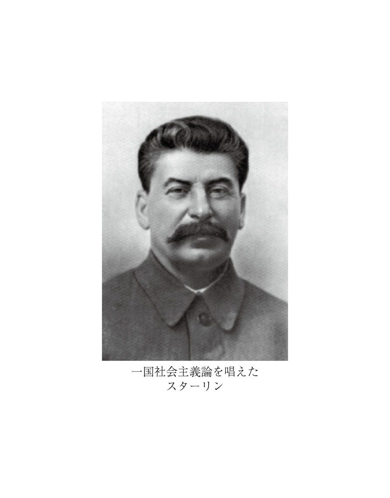
マルクス主義は世界経済から出発する。だが、その世界経済とは、各国民経済の総和ではなく、国際分業と世界市場によって創出され、今日においては各国の国内市場を強力に支配している、強力な一個の独立した現実である。資本主義社会の生産力はとっくに各国の境界を越えて成長している。帝国主義戦争はこの事実の一つの表現であった。社会主義社会は、生産と技術に関しては、資本主義と比べてより高度な段階を示すものでなければならない。一国的に閉鎖された社会主義社会の建設を成し遂げることを目標とすることは、たとえ一時的に成功を収めようとも、生産力の水準を資本主義と比較してさえはるかに後退させることを意味するだろう。世界全体の発展の一構成部分である各国の発展の地理的・文化的・歴史的諸条件とは無関係に、国内市場の内部ですべての経済諸部門の自足的な均衡を実現しようと試みることは、反動的ユートピアを追求することを意味する。それにもかかわらず、この理論の唱導者や支持者たちが国際的な革命闘争に参加しているとすれば（どの程度それに成功しているかはまた別問題だが）、それは彼らが救いがたい折衷主義者として、抽象的国際主義と反動的ユートピアたる一国社会主義とを機械的に結びつけているからである。この折衷主義の最も完成された表現が、コミンテルン第六回大会（４）で採択されたコミンテルン綱領である。
一国社会主義的な概念の根底に横たわる主要な理論的誤りの一つを明々白々な形で示すには、アメリカ共産党の内部問題を論じたスターリンの最近発表された演説を引用するのが一番いいだろう（＊）。
＊原注 この演説は一九二九年五月六日になされたものだが、一九三〇年初頭になってようやく公表され、しかもそのさい一種の「綱領的」意義が付与された。 （本文に戻る）
アメリカ共産党の一分派に反対してスターリンは次のように言う。
アメリカ資本主義の固有の特殊性を考慮に入れないのは正しくない。共産党はその活動においてそれらを考慮しなければならない。しかし、共産党の活動を、これらの固有の諸特徴にもとづかせることは、もっと大きな誤りであろう。なぜなら、アメリカ共産党を含むすべての共産党の活動の基礎となるべきなのは、すべての国にとって本質的に同一である資本主義の一般的特徴であって、当該国の資本主義の固有の諸特徴ではないからである。まさにこのことに共産党の国際主義は立脚している。固有の諸特徴は、一般的特徴に対する補完物にすぎない。（『ボリシェヴィーク』第一号、一九三〇年、八頁、強調は引用者）
この文章はこれ以上望みようがないぐらい明確である。国際主義を経済的に根拠づけるという外観のもとに、スターリンは実際には一国社会主義を根拠づけている。世界経済を同質的な国民的諸部分の単なる総和であるかのようにみなすのは誤りである。固有の諸特徴や諸側面を、顔面のいぼのように、「一般的特徴に対する単なる補完物」であるかのようにみなすのも誤りである。実際には、民族的特殊性は、世界的な発展過程の基本的諸特徴が独自な形で結合したものなのである。この独自性は、長期にわたって、革命的戦略にとって決定的な意義を持ちうる。後進国のプロレタリアートが先進国のプロレタリアートより何年も早く権力に就いた事実を指摘すれば十分であろう。この歴史的教訓一つとっただけでも、スターリンの発言にもかかわらず、共産党の活動を何らかの「一般的特徴」に、すなわち、各国資本主義を抽象化したものにもとづかせることがまったく誤りであることがわかる。ここに「共産党の国際主義が立脚している」などと主張するのは、根本的に誤っている。実際には、国際主義は、とっくに時代遅れとなった国民国家の無力さに立脚しており、今ではこの国民国家は生産力発展のブレーキと化している。各国資本主義は、たとえ再建されたとしても、世界経済の一部分として再建される以外には考えられない。
さまざまな国の経済的独自性はけっして二次的なものではない。このことはイギリスとインド、またアメリカ合衆国とブラジルとを比較すれば十分である。しかし、各国の国民経済の固有の諸特徴は、いかにそれが大きなものであったとしても、世界経済と呼ばれるいっそう高度な現実の構成部分として組み込まれており、しかもますます深く組み込まれている。そして、共産党の国際主義は、究極的にはただこの国際経済にのみ立脚しているのである。
民族的独自性を一般的形態の単なる「補完物」であるとするスターリンの性格規定は、資本主義の不均等発展の法則に対するスターリンの理解（すなわち無理解）と驚くほど矛盾しているが、それはけっして偶然ではない。周知のように、この法則はスターリンによって、基本的で最も重要で普遍的なものだと主張されている。スターリンは自ら一つの抽象物に変えてしまった不均等発展法則を用いて、存在するものすべての謎を解き明かそうとする。しかし驚くべきことに、その際彼は、民族的独自性がまさに歴史発展の不均等性の最も一般的な、いわばその総合的な産物であることに気づきもしないのだ。必要なのはただ、この不均等性を正しく理解し、それを全面的に取り上げ、さらにそれを資本主義以前の時代にも拡張することだけである。生産力のより急速ないしより緩慢な発展、一連の歴史的時期──たとえば、中世、ギルド制度、啓蒙的絶対主義、議会制──の拡張的ないし反対に収縮的な性格、種々の経済部門、種々の階級、種々の社会制度、文化の種々の側面などの発展の不均等性。これらすべてが民族的「特殊性」の根底に横たわっている。各国の社会形態の独自性はその形成過程における不均等性を結晶化させたものなのである。
十月革命は、歴史過程の不均等性のあらゆる現象におけるその最も壮大な現われとして生起した。十月革命を予測した永続革命論は、まさに歴史の不均等発展法則に立脚していたが、その抽象的形態にではなく、その物質的結晶化たるロシアの社会的・政治的独自性にもとづいていたのである。
スターリンが不均等発展の法則を持ち出したのは、後進国のプロレタリアートによる権力の獲得を前もって予見するためではなく、それがとっくに事実となった後の一九二四年に、すでに勝利をおさめたプロレタリアートに対して、一国的な社会主義社会の建設を成し遂げるという課題を押しつけるためであった。しかし、まさにここで不均等発展法則を持ち出すことはまったく不適当なのである。なぜなら、この法則は世界経済の諸法則に取って代わるものでもなければ、それを廃棄するものでもなく、反対にそれに従属するものだからである。
不均等発展の法則を物神化することによって、スターリンは、それを一国社会主義のための十分な根拠であると宣言するが、それを典型的なものとしてではなく、つまりはすべての国に共通なものとしてではなく、例外的で、メシアニズム的で、純粋にロシア的なものとみなす。独立した社会主義社会の建設を成し遂げることが可能なのは、スターリンによれば、ロシアのみである。そう言うことでスターリンは、ロシアの民族的特殊性を、資本主義諸国の「一般的特徴」の上に置くだけでなく、世界経済全体の上にも置く。まさにここにおいて、スターリンの概念全体に致命的な裂け目が生じる。ソ連の独自性は、人類の残りの部分に生じることとは無関係に、その国境内で社会主義建設を成し遂げることができるほどに強力だ。メシアニズムの刻印が捺されていない他の国々に関しては、それらの独自性は一般的特徴の単なる「補完物」であり、顔面のいぼにすぎない、というわけである。スターリンは教える──「共産党の活動を、これらの固有の諸特徴にもとづかせることは誤りであろう」。この戒めはアメリカ、イギリス、南アフリカ、セルビア等の共産党にはあてはまるが...、ロシアの共産党にはあてはまらない。なぜなら、ロシア共産党の活動は、「一般的特徴」にではなく、まさに「特殊性」にもとづいているからだ。
ここから、コミンテルンのまったく二面的な戦略が出てくる。すなわち、ソ連邦は「階級を根絶」して社会主義を建設しつつあるのに対して、その他すべての国のプロレタリアートは、各国の現実の諸条件とはまったく無関係に、カレンダーにしたがって（八月一日（５）、三月六日（６）等々）、一斉行動に立ち上がるよう義務づけられる。メシアニズム的一国主義は官僚的に抽象化された国際主義によって補完される。この二元性はコミンテルンの綱領全体を貫いており、そこからあらゆる原則的意義を奪い去っているのである。
イギリスとインドを資本主義の異なった対極的なタイプとして取り上げるなら、イギリス・プロレタリアートとインド・プロレタリアートの国際主義は、けっして条件、課題、方法の同一性にではなく、それらの密接不可分な相互依存性に立脚すると言わなければならない。インドにおける解放運動の成功はイギリスにおける革命運動を必要とし、その逆もまたそうである。インドにおいても、イギリスにおいても、独立した社会主義社会の建設を成し遂げることは不可能である。両者とも、より高度な全体の構成部分とならなければならないだろう。ここに、そしてここにのみ、マルクス主義的国際主義の不動の基盤が存在するのである。
ごく最近のことだが、一九三〇年三月八日付『プラウダ』はスターリンの不幸な理論を改めて解説し、おおむね次のように述べた。「経済社会構成体としての社会主義」、すなわち、生産関係の特定の体制としての社会主義を「ソ連邦の一国的規模で」実現することは完全に可能である、ただし、「わが国を包囲する資本主義諸国による干渉から守られているという意味での社会主義の完全な勝利」は別問題である、社会主義のこの完全な勝利は「実際に、いくつかの先進諸国におけるプロレタリア革命の勝利を必要とする」。このような憐れなスコラ哲学がレーニンの党の中央機関紙上で学問的装いをもって展開されるためには、理論的思考のどれほど深刻な衰退を必要としたことか！
ソ連邦の孤立した枠組みの内部で、完成した社会体制としての社会主義の実現が可能であると、しばらく仮定するならば、これこそまさに「完全な勝利」であろう。その後で、そもそもどのような干渉が問題になりえるというのだろうか？ 社会主義体制は、高度な技術、高度な文化、住民の高度な連帯を前提とする。ソ連邦が社会主義の完全な建設に至った時点では、二億を下らない人口、たとえば二億五〇〇〇万の人口を擁すると考えられるが、そこでお尋ねしよう。その場合、いったいどんな干渉がそもそも問題になりうるのか？ このような状況下にあって、いったいいかなる資本主義国家が、あるいはいかなる連合体が、あえて干渉を考えることができようか？ 唯一考えられるのは、ソ連邦の側からの干渉だけであろう。しかしそんなものが必要だろうか？ ほとんど必要ないだろう。数次にわたる「五ヵ年計画」を通じて、独力で強大な社会主義社会の建設を成し遂げた後進国の実例は、世界資本主義にとって致命的な打撃を意味し、世界プロレタリア革命のコストをゼロにしないまでも、最小限のものにするであろう。まさにそれゆえ、スターリンの概念それ自体が基本的に共産主義インターナショナルの清算に行きつくのである。実際、もし社会主義の運命が究極的には...ソ連のゴスプラン［国家計画委員会］によって決定されるならば、いったいコミンテルンの歴史的意義はいかなるものでありうるのか？ その場合には、コミンテルンの任務は、かの悪名高き「ソ連邦の友の会（７）」とともに、社会主義の建設を干渉から守ること、すなわち、基本的に国境警備隊の役割に還元されることになるであろう。
前述した最近の論文は、スターリンの概念の正しさを、最新かつ斬新な経済的論拠でもって証明しようとしている。
...今日まさに──と『プラウダ』は言う──、社会主義的タイプの生産関係が、工業は言うまでもなく、農業においても、ソフホーズ［集団農場］の成長を通じて、コルホーズ［国営農場］運動の量的・質的な巨大な成長を通じて、また全面的集団化にもとづいた、階級としてのクラーク［富農］の根絶を通じて、ますます深く根づきつつあることは、トロツキスト的・ジノヴィエフ的敗北主義──それは本質的に「十月革命の正当性のメンシェヴィキ的否定」（スターリン）を意味する──の最も惨めな破産ぶりをこれ以上なく明白に示すものである。（『プラウダ』一九三〇年三月八日号）
この文章は真に注目すべきものであるが、それは思想の完全な混乱を覆い隠す野放図な論調のゆえだけではない。スターリンとともに同論文の筆者は、「トロツキスト的」概念を「十月革命の正当性の否定」だと非難している。しかし、まさにこの概念にもとづいて、すなわち、永続革命論にもとづいて、本書の筆者は十月革命が起こる一三年前（８）にその不可避性を予見したのである。では、スターリンは？ 二月革命後、すなわち、十月革命の七、八ヵ月前でさえ、彼は俗流的な革命的民主主義者として行動していた。スターリンが、民主主義的立場から社会主義的立場へと慎重にこっそりとよじ登るためには、レーニンがペトログラードに到着して（一九一七年四月三日）、当時はまだ彼をあざ笑っていた尊大な「古参ボリシェヴィキ」に対して仮借ない闘争を開始することが必要であった。スターリンのこの内的な「成長転化」──もっとも、それはけっして最後まで進まなかったが──が何とか行なわれたのは、西方におけるプロレタリア革命の開始以前にロシアのプロレタリアートによる権力獲得の「正当性」が証明されてから少なくとも一二年も経ってからのことであった。
しかし、十月革命の理論的予測を練り上げた際、われわれは、ロシアのプロレタリアートが国家権力を奪取することで旧ツァーリ帝国を世界の経済圏から除外することになるとはけっして考えなかった。われわれマルクス主義者は、国家権力の役割と意義を知っている。それは、ブルジョア国家の社会民主主義的下僕たちが運命論的に描き出すような経済的諸過程の受動的反映ではけっしてない。国家権力は巨大な意義を持ちうるのであり、いかなる階級がそれを手中に収めるかによって反動的にも進歩的にもなりうる。しかし、それでもやはり、国家権力は上部構造の範疇に属する手段である。権力がツァーリズムとブルジョアジーの手からプロレタリアートの手に移行したからといって、それによって世界経済の諸過程も諸法則も廃棄されはしない。たしかに、十月革命後の一定期間、ソヴィエト連邦と世界市場との経済的結びつきは弱まった。しかし、弁証法的過程における短い段階にすぎない一現象を一般化するのは、途方もない誤りであろう。世界的な分業と現代生産力の、一国を越えた性格は、ソヴィエト連邦に対してもその意義を保持するだけでなく、ソ連の経済水準が上昇するにしたがって二倍にも一〇倍にも増すだろう。
資本主義に接触したいずれの後進国もさまざまな段階を経過し、他の資本主義諸国に対する依存度を弱めたり増したりしてきたが、総じて、資本主義的発展の傾向は世界的結びつきの巨大な進展へと向かっており、このことは、対外貿易──もちろん資本の輸出入を含む──の規模がますます増大していることに表現されている。言うまでもなくインドへのイギリスの依存は、イギリスへのインドの依存と質的に異なった性格を有している。しかし、この相違は基本的には、両国の生産力の発展水準の相違によって決定されているのであって、けっしてその経済的自足性の程度によって決定されているのではない。インドは植民地であり、イギリスは帝国主義本国である。しかし、もし今日イギリスが経済封鎖に見舞われた場合には、インドよりも早く崩壊してしまうであろう。ところで、これこそまさに、世界経済の現実を説得的に示すものの一つなのである。
資本主義の発展──『資本論』第二巻における抽象的な表式におけるそれではなく（それは分析の一段階としてはその意義を完全に保持しているが）、歴史的現実におけるそれ──は、その基盤が系統的に拡大していくことを通じて起こったのであり、それ以外ではありえなかった。各国資本主義は、その発展過程において、したがってその内的諸矛盾との闘争を通じて、ますます「国外市場」の、すなわち世界経済の予備軍に転化していく。資本主義の恒常的な内的危機から生じる抑えがたい膨脹力は、資本主義を前方へと駆り立てる力であるとはいえ、やがて資本主義にとって致命的なものとなる。
十月革命は旧ロシアから、資本主義の内的諸矛盾を受け継いだだけでなく、全体としての資本主義と前資本主義的生産諸形態との同じぐらい深刻な諸矛盾をも受け継いだ。これらの諸矛盾は具体的な性格を有していたし、今日でもそうである。すなわち、それは、都市と農村との物質的諸関係、種々の工業部門と国民経済全体との一定の均衡ないし不均衡、等々のうちに示されている。これらの諸矛盾のいくつかは、わが国の地理上および人口構造上の諸条件に直接根ざしている。すなわち、あれこれの天然資源の過剰ないし不足、人民大衆の歴史的に形成された地理的分布状況、等々を糧としている。ソヴィエト経済の強みは、生産手段の国有化とその計画的指導にある。他方、ソヴィエト経済の弱みは、過去から継承した後進性に加えて、十月革命後のソヴィエトの孤立にある。すなわち、社会主義的原理にもとづいてどころか、資本主義的原理にもとづいてさえも、たとえば通常の国際的貸し付けや一般に「融資」という形態でさえ（それは後進諸国にとって決定的な役割を演じている）、世界経済の資源を利用することができないという点にある。しかしながら、過去から受け継いだ資本主義的および前資本主義的な諸矛盾は、ひとりでに消えてなくならないだけでなく、反対に、衰退と破壊の数年間における仮死状態から脱し、ソヴィエト経済の成長とともに復活し先鋭化していったのであり、それを克服ないし少なくとも緩和するためには、一歩ごとに世界市場の資源を利用することが必要なのである。
十月革命によって新たな生命を得た広大な領土で現在何が起きているのかを理解するためには、現在の経済的成功によって復活した古い諸矛盾に加えて、新しいもっと巨大な矛盾が生じていることを常に念頭に置いておかなければならない。その新しい矛盾とは、まったく未曾有の発展テンポの可能性を切り開いたソヴィエト工業の集中的性格と、世界経済の資源を正常な形で利用する可能性を排除するソヴィエト経済の孤立性とのあいだの矛盾である。古い矛盾の上にのしかかるこの新しい矛盾は、例外的な成功と並んで苦痛に満ちた困難をももたらしている。
この困難は、次のような事実のうちに最も直接的かつ過酷な形で示されている。すなわち、勤労大衆の状況がけっして経済の全般的な上昇に一致して向上しておらず、むしろ食糧難の増大の結果として、現在いっそう悪化してさえいることであり、このことは、すべての労働者と農民に日々感じられている。ソヴィエト経済の先鋭な危機は、資本主義によって創出された生産力が国内市場には収まらず、国際的規模においてのみ社会主義的な整合性と調和に達しうることを示している。言いかえれば、ソヴィエト経済の種々の危機は、単なる成長期の病、一種の小児病ではなく、レーニンの言葉を借りれば、「われわれが従属し、結びつけられ、そこから抜けだすことのできない（９）」国際市場の側からの、はるかに重大で、まさに仮借のない締めつけの現われなのである。
しかしながら、このことから、十月革命の歴史的「正当性」の否定という結論──恥ずべき俗物にふさわしい結論──はけっして出てこない。国際プロレタリアートによる権力獲得はいっせいの同時的行動ではありえない。政治的上部構造──革命も「上部構造」に関わっている──にはそれ自身の弁証法があり、それは世界の経済的過程に強力に割り込んでくるが、そのより深い法則性をけっして廃棄するものではない。十月革命は、不可避的に数十年におよぶ長期の過程である世界革命の第一段階として「正当」である。第一段階と第二段階とのあいだのインターバルは、われわれが予期していたよりもかなり長いことがわかった。しかし、それはあくまでもインターバルであって、一国的な社会主義社会の建設を成し遂げる自足的時代に転化するものではけっしてない。
革命の二つの概念から、経済問題における二つの指導路線が出てきた。スターリンは、彼自身まったく予想もしていなかった当初の急速な経済的成功に幻惑されて、一九二四年秋に、孤立した国民経済という実践的展望の極致としての一国社会主義の理論を唱えだした。まさにこの時期、ブハーリンは、外国貿易の［国家］独占によって世界経済から守られているかぎり、「たとえ亀の歩みでも」社会主義の建設を成し遂げることができるであろうという有名な定式を打ち出した。これが中間派と右派とのブロックの一般的定式であった。当時スターリンは、わが国の工業化のテンポは「国内問題」であって、世界経済とは何の関係もないということを倦むことなく証明していた。しかしながら、このような一国的自己満足は長続きしなかった。なぜなら、それは経済復興の最初のごく短い一段階を表現していたにすぎず、この経済復興は世界市場に対するわれわれの依存をも不可避的に復活させたからである。一国社会主義者たちが予想だにしていなかった、国際的依存に起因する最初の衝撃は彼らの不安を搔き立て、次の段階ではパニックをもたらした。工業化と集団化のできるだけ急速なテンポによって速やかに自国の経済的「独立」を達成するべし！──これがこの二年間における一国社会主義の経済政策に生じた急転換であった。亀の歩みは全戦線にわたる冒険主義に取って代わられた。だが、両者の理論的基盤は同じままである。一国社会主義の概念がそれだ。
すでに指摘したように、基本的困難は事物の客観的状況、何よりもソヴィエト連邦の孤立から生じている。この事物の客観的状況そのものがどの程度まで指導部の主体的誤り（一九二三年のドイツ（10）、一九二四年のブルガリアとエストニア（11）、一九二六年のイギリスとポーランド（12）、また一九二五～二七年の中国における誤った政策、そして現在における誤った「第三期（13）」の戦略、等々、等々）の結果であるかを、ここで詳しく論じるのはやめておこう。しかし、ソ連における最も先鋭な経済的痙攣は、現在の指導部が、困窮を美徳に変えようとし、労働者国家の政治的孤立から経済的に孤立した社会主義社会の綱領をつくりあげようとしていることから生じている。ここから、前資本主義的な技術と道具にもとづいて農業の全面的な社会主義的集団化を実行しようとする試みが生まれた。これはプロレタリアートと農民の協力の可能性そのものを掘りくずす恐れのある最も危険な冒険である。
そして注目すべきことに、この危険性が最も先鋭な形で姿を現わしたちょうどその時に、昨日まで「亀のテンポ」の理論家であったブハーリンは、今度は現在の工業化と集団化の「猛烈なギャロップ」のために感動的な讃歌をつくったのである。おそらく、この讃歌もまもなく最大級の異端と断ぜられることだろう。なぜなら、すでに別の新しいメロディーが聞こえはじめているからである。経済的物質性の抵抗にぶつかって、スターリンはストップの合図を出すことを余儀なくされた。今や危険性は、昨日のパニックによって命じられた冒険主義的攻撃が、パニック的な退却に転じるのではないかという点にある。このようなあいつぐ局面の転換は、一国社会主義の本質から不可避的に生じている。
孤立した労働者国家の現実主義的綱領は、世界経済からの「独立」を達成するという目標を設定することはできないし、ましてや「最短期間」で一国的な社会主義社会の建設を成し遂げるという目標を設定することなど、なおさらできない。課題は抽象的な最大限のテンポを達成することではなくて、最適なテンポを達成することである。すなわち、国内および世界の経済的諸条件から生じるテンポ、プロレタリアートの地位を強化し、未来の国際社会主義社会の国民的要素を準備し、それと同時に、何よりもプロレタリアートの生活水準を系統的に改善し、農村の非搾取者大衆とプロレタリアートとの同盟を強化する、そうしたテンポを達成することである。こうした展望は、全準備期間にわたって、すなわち、先進諸国の勝利した革命がソヴィエト連邦を現在の孤立状態から解放するまでの全期間にわたって有効でありつづけるだろう。
＊ ＊ ＊
ここに述べた思想の一部は、筆者の他の著作、とくに『コミンテルン綱領批判』でより詳細に展開されている。近いうちに、われわれは、ソ連邦の経済発展の現段階について特別に論じた小冊子（14）を出すつもりである。今日、永続革命の問題がどのように立てられるべきかという点についてより踏み込んだ議論を求めている読者には、それらの著作を参照するよう勧めざるをえない。しかし、この序文でなされた考察は、一国社会主義と永続革命という相対する二つの理論としてこの数年間闘われてきたし今も闘われている原則的闘争の全意義を明らかにするのに十分であると思う。
問題がこのようなアクチュアルな意義を有していること、このことだけが、ロシア・マルクス主義者のあいだでなされた革命前の予測と理論的論争を批判的に再構成することにかなりの部分を費やした一書を、ここに外国の読者に提供することを正当化するのである。もちろん、われわれに関わる諸問題を記述するのに別の形式を選ぶこともできたであろう。しかし、この形式は、筆者がつくり出したものでも、筆者が自分の意志で選んだものでもない。それは、一部には論敵たちの意志によって、また一部には政治的発展の歩みそのものによって筆者に押しつけられたものである。最も抽象的な科学たる数学の真理でさえ、その発見の歴史を踏まえることでよりよく理解することができる。このことは、マルクス主義政治学のより具体的な、つまり歴史的に条件づけられた真理にはいっそうよくあてはまる。思うに、読者が、革命前のロシアに登場したさまざまな革命の予測とその発展の歴史を学ぶならば、これらの政治思想をその発生基盤たる闘争状況から切り離して教科書的・衒学的に説明したものを読むよりも、はるかに身近で具体的に、世界プロレタリアートの革命的課題の本質に迫ることができるだろう。
Ｌ・トロツキー
一九三〇年三月二九日
『反対派ブレティン』第一二・一三号、一九三〇年六・七月
訳注
（１）『コミンテルン綱領批判』......同書は一九二八年にアルマ・アタで執筆された。トロツキーが批判したのはコミンテルン綱領そのものではなく、ブハーリンが起草したその草案であり、したがって英語版では「綱領草案批判」となっている。同書は、一九二九年に『国際革命と共産主義インターナショナル』という題名でドイツ語版が出版され、同年、いくつかの論文を追加して『レーニン死後の第三インターナショナル』という題名でフランス語版が出版されている。一般にこの後者の題名で知られている。邦訳は、英語版からのものが戦後出版されている（トロツキー『レーニン死後の第三インターナショナル』、現代思潮社、一九六一年）。 （本文に戻る）
（２）スターリンは一九二四年春に発表された『レーニン主義の基礎について』の中で、ロシア一国だけで社会主義の建設を成し遂げることは不可能であり、そのためには先進国におけるプロレタリア革命の勝利が必要だと書いていたが、その年の後半に、トロツキーの永続革命論に対する党指導部全体による大規模な中傷カンパニア（いわゆる「文献論争」）の中で、スターリンは、ロシア一国だけで社会主義を完全に建設することは可能であり、それを否定したトロツキーはロシア・プロレタリアートの内的力を過小評価しているとの新しい命題を唱えるに至った。それにあわせて、『レーニン主義の基礎について』も当該部分が書き直された。 （本文に戻る）
（３）民族社会主義......本書では、ソ連におけるスターリンの特殊な教義（一国社会主義論）を指すだけでなく、ドイツ社会民主党などにおける同種の傾向をも含めて広い意味でこの単語が用いられる場合には「民族社会主義」と訳し、基本的に一九二四年末以降におけるスターリンの特殊な教義を指して用いられる場合には「一国社会主義」と訳すこととする。 （本文に戻る）
（４）コミンテルン第六回大会......一九二八年七月一七日から九月一日まで開催され、ブハーリンの起草によるコミンテルン綱領が採択されたが、このときすでにブハーリンは実質的な権力を失っていた。 （本文に戻る）
（５）八月一日......一九二九年のメーデーでのドイツ共産党のデモに対するベルリン警察の弾圧に抗議するという名目で、コミンテルンは同年八月一日をヨーロッパ規模での統一行動日に指定した。 （本文に戻る）
（６）三月六日......一九三〇年初頭にコミンテルンは、同年三月六日を反失業の統一行動日に指定した。 （本文に戻る）
（７）ソ連邦の友の会......イギリスの社会主義者ウェッブ夫妻をはじめとする西欧の知識人を中心とした親ソ派のグループで、スターリン体制を弁護する役割を果たした。 （本文に戻る）
（８）一三年前......トロツキーが永続革命論を確立したのは一九〇五年であるから、正しくは「一二年前」であろう。実際、その数行後に「一二年も経ってからのことであった」と書かれている。ただし、トロツキーはごくたまにだが自分の永続革命論の形成の起点を一九〇四年に置いている場合もあるので、その場合には「一三年前」になる。 （本文に戻る）
（９）レーニン「ロシア共産党（ボ）第一一回党大会における中央委員会の政治報告」、邦訳『レーニン全集』第三三巻、大月書店、二八〇頁。 （本文に戻る）
（10）一九二三年のドイツ......一九二三年初頭のフランスによるルール占領事件をきっかけにドイツで急速に革命的機運が高まったが、ドイツ共産党はその好機を生かすことができず、ドイツ革命は敗北に終わった。 （本文に戻る）
（11）一九二四年のブルガリアとエストニア......正確にはブルガリアの事件は一九二三年。一九二三年六月、農民運動の指導者スタンボリスキーの政権が極右反動派のツァンコフの武装闘争によって打倒されたが、ブルガリア共産党は「中立」を宣言し、この闘争から距離をとった。しかし、勝利した反動勢力はただちにブルガリア共産党を弾圧しはじめた。この失敗を取り返すために今度は同年九月にブルガリア共産党は冒険主義的な一揆を企て、大失敗に終わった。エストニアでは、一九二四年一二月に二百数十名のエストニアの共産主義者が武装決起したが、数時間後には政府軍によって完全に粉砕された。 （本文に戻る）
（12）一九二六年のイギリスとポーランド......一九二六年五月にイギリスでゼネストが発生したが、イギリスの総評議会の裏切りによって敗北に終わった。コミンテルンのスターリン＝ブハーリン指導部は、その前年に結成された英露委員会（イギリスの組合指導部とソ連の組合組織との統一戦線的友好団体）を維持するために、イギリス総評議会に対する批判を控え、それによってイギリスの総評議会指導部がイギリス労働者の信頼を確保するのを助けた。この政策はゼネストにおける総評議会の裏切りによって破綻した。ポーランドでは、同じ一九二六年五月に元社会主義者であるピウスツキによるクーデターが起こった。ポーランド共産党は当初、このクーデターを革命的農民と小ブルジョアジーを基盤とした進歩的なものと判断して支持したが、ピウスツキは権力掌握後にポーランド共産党を弾圧した。コミンテルン指導部はこの失態の責任をすべてポーランド共産党自身に負わせた。詳しくは、トロツキー「ピウスツキ独裁体制とファシズムと現代の性格」（『トロツキー著作集1932』上、つげ書房新社、一九九八年）を参照のこと。 （本文に戻る）
（13）第三期......コミンテルン指導部が一九二八年以降に唱えたもので、一九一七年を起点とする最初の世界的な革命的攻勢期（一九一七～一九二四年）を「第一期」とし、その後の資本主義の相対的安定期（一九二五～二八年）を「第二期」とした上で、今や資本主義の全般的危機とその最終的崩壊へと行きつく「第三期」が始まっているとして、各国共産党に極左的戦術を押しつけた。この路線は各地で悲惨な結果をもたらし（とくにドイツではヒトラーの勝利へと帰結した）、一九三四年には人民戦線戦術への再転換がなされた。 （本文に戻る）
（14）ソ連邦の経済発展の現段階について特別に論じた小冊子......『反対派ブレティン』第二〇号（一九三一年四月）として出版された「ソ連邦の発展の諸問題」のこと。邦訳は『トロツキー研究』第四号（一九九二年）。 （本文に戻る）
本書が主題とする問題は、三つのロシア革命の歴史と密接に結びついているが、それにとどまるものではない。この問題はこの数年間、ソ連共産党の内部闘争において巨大な役割を演じ、その後共産主義インターナショナルに持ち込まれ、中国革命の発展において決定的な役割を果たし、東方諸国の革命闘争と結びついた諸問題において多くの最重要の諸決定を規定するものとなった。この問題とはすなわち、レーニン主義のエピゴーネン（ジノヴィエフ、スターリン、ブハーリン等）の説くところによれば「トロツキズム」の原罪たるいわゆる「永続革命」の理論である。
永続革命の問題は、長い中断の後に、しかも一見したところ、まったく唐突に、一九二四年になって再び持ち上がった。その政治的根拠はなかった。なぜなら、それは、とっくに過去のものとなっていた意見の相違をめぐる問題だったからである。しかし、心理的根拠は大いにあった。私に対して闘争を開始したいわゆる「古参ボリシェヴィキ」グループは、この自らの呼称［古参ボリシェヴィキ］を何よりも私に対抗する形で利用した。
しかし、このグループの行く手に立ちはだかっていたのは、一九一七年という大きな障害物であった。革命に先立つ思想的闘争と準備の歴史が、党全体にとってだけでなく個々人にとってもいかに重要であろうと、それまでの全準備がその最高かつ最終的な試験にかけられたのがまさに十月革命においてだったからである。そして、エピゴーネンのうち誰一人としてこの試験に合格した者はいなかった。彼らはみな例外なく一九一七年の二月革命の際には民主主義左翼という俗悪な立場をとった。彼らのうち誰一人として権力獲得のためのプロレタリアートの闘争というスローガンを掲げた者はいなかった。彼らはみな社会主義革命に向けた路線を馬鹿げたもの、あるいはもっと悪いことに「トロツキズム」とみなした。レーニンが国外から帰ってくるまで、そして彼の有名な四月四日のテーゼ（１）が発表されるまで、彼らはこのような精神で党を指導したのである。すでにレーニンと直接闘争していたカーメネフは、その後公然とボリシェヴィズムの民主主義的翼を形成しようとした。そのすぐ後に彼に合流したのは、レーニンといっしょに帰国したジノヴィエフであった。その社会愛国主義的立場のせいですっかり信用を落としていたスターリンは、わきにそっと退いた。彼は、三月の決定的な数週間における自らの憐れな論文や演説を党に忘れさせ、徐々にレーニンの立場へと移動した。
以上のことから次のような疑問が生じてくる。すなわち、これら指導的な「古参ボリシェヴィキ」のうち誰一人として、最も重要で責任重大な歴史的瞬間に、党の理論的・実践的経験を自主的に応用することができなかったとすれば、彼らはいったいレーニン主義から何を学んだのか、と。そこで、何としてでもこの問題から注意を逸らして、別の問題にすり替えることが必要であった。この目的から、永続革命論に集中砲火を浴びせることが決定されたのである。私に敵対した人々は、闘争の人為的な軸をつくり出すことによって、知らず知らずのうちに自分自身がその軸の周りを回転し、逆にそれに合わせて、自分たちのために新しい世界観をつくり上げる羽目になったのだが、彼ら自身はもちろんそんなことは予想だにしていなかった。
永続革命論の基本的骨格が私によって定式化されたのは、まだ一九〇五年の決定的諸事件が起こる前のことだった。ロシアはブルジョア革命に向かって進みつつあった。当時のロシア社会民主主義者（当時われわれはみな社会民主主義者と呼ばれていた）の誰一人として、われわれがブルジョア革命に向かって進んでいること、すなわち、資本主義社会における生産力の発展と、時代遅れとなった農奴制的・中世的な身分的・国家的諸関係とのあいだの矛盾によって生じる革命に向かって進んでいることを疑う者はいなかった。当時私は、ナロードニキや無政府主義者との闘争において、当面する革命のブルジョア的性格についてマルクス主義の立場から解明することに少なからぬ演説と論文を費やさなければならなかった。
しかしながら、革命のブルジョア的性格は、いかなる階級がいかなる相互関係の中で民主主義革命の諸課題を解決するのかという問題をあらかじめ決定するものではない。ところが、基本的な戦略問題はまさにこの地点からようやく始まるのである。
プレハーノフ、アクセリロート、ザスーリチ、マルトフ、そして彼らに続くすべてのロシア・メンシェヴィキたちは、ブルジョア革命の指導的役割が権力の自然的請求権者としての自由主義ブルジョアジーにのみ属するということを自らの出発点としていた。この図式においてプロレタリアートの党には民主主義戦線の左翼の役割があてがわれた。すなわち、社会民主党は、反動に反対して自由主義ブルジョアジーを支持し、それと同時に自由主義ブルジョアジーからプロレタリアートの利益を守らなければならなかった。言いかえれば、メンシェヴィキに特徴的だったのは、主としてブルジョア革命を自由主義的・立憲的改革として理解していたことだった。
まったく異なった形で問題を提起したのがレーニンである。ブルジョア社会の生産力を農奴制の桎梏から解放することは、レーニンにとって何よりも、農業問題の急進的解決を意味した。すなわち、地主階級の完全な解体と土地所有の革命的再分配である。これと不可分に結びついていたのが君主制の打倒であった。農業問題は、住民の圧倒的多数の死活にかかわる利益を包含するとともに、資本主義市場の基本問題ともなっていたが、レーニンはこの問題に真の革命的大胆さをもってアプローチした。ロシアの自由主義ブルジョアジーは労働者に敵対し大土地所有者と無数の糸で結びついているのだから、農民の真に民主主義的な解放は、労働者と農民との革命的協力によってのみ実現しうる。レーニンによれば、旧社会に対する労働者と農民との一致した蜂起が勝利するならば、「プロレタリアートと農民の民主主義独裁」の確立をもたらすに違いなかった。
この定式は現在、コミンテルンの内部で一種の超歴史的な教条として繰り返されており、その際、この四半世紀における生きた歴史的諸経験を分析する試みさえなされていない。あたかもわれわれが一九〇五年の革命、一九一七年の二月革命、そして最後に十月革命の目撃者でも参加者でもなかったかのごとくである。しかしながら、「プロレタリアートと農民の民主主義独裁」の体制は歴史上かつて存在したことがなかったのだから、なおさらこの種の歴史的分析は必要なのである。
一九〇五年のレーニンにとってこの問題は、階級闘争の現実の歩みの中でこれから検証に付されるべき戦略的仮説であった。プロレタリアートと農民の民主主義独裁という定式はかなりの程度、あえて代数的な性格を帯びていた。予想されていた民主主義独裁における二人の参加者、すなわち、プロレタリアートと農民との政治的関係がどのようなものになるかという問題を、レーニンはあらかじめ決定してはいなかった。レーニンは、革命において農民が独立の政党によって代表される可能性を排除しなかった。しかも二方向に対する「独立」である。すなわちブルジョアジーに対してのみならず、プロレタリアートに対しても独立し、それと同時に、自由主義ブルジョアジーと闘争しプロレタリアートの党と同盟しつつ民主主義革命を遂行する能力を持った農民党、ということである。レーニンは、後述するように、民主主義独裁の政府において革命的農民党が多数派を構成する可能性すら認めていたのである。
わが国のブルジョア革命の運命にとって農地革命が決定的な意義を有すること、この問題に関しては、私は、少なくとも一九〇二年の秋以来、すなわち私が初めて国外に亡命した時以来、レーニンの弟子であった。農地革命、したがってまた全般的な民主主義革命は、労働者と農民との統一勢力による自由主義ブルジョアジーに対する闘争においてのみ実現可能であること、このことは、この数年間における馬鹿馬鹿しいホラ話とは反対に、私にとって疑いの余地のないことであった。しかし、私は「プロレタリアートと農民の民主主義独裁」という定式には反対した。真の独裁がどちらの階級に属するのかという問題を未解決のままにしている点にその欠陥があるとみなしたからである。農民には、その巨大な社会的・革命的重みにもかかわらず、真に独立した党をつくる能力がなく、ましてやかかる党の手中に革命権力を掌握する能力がないことを私は証明した。一六世紀のドイツ宗教改革以降に（あるいはそれ以前にさえ）始まった古い諸革命において、農民が、その蜂起の期間中に都市ブルジョアジーの諸分派の一つを支持し、しばしばその勝利を保障したように、わが国の遅ればせのブルジョア革命において、農民の闘争が最高潮に達する中で、同じような支持をプロレタリアートに与え、その権力獲得を助けるということはありうる。それゆえわが国のブルジョア革命は──と私は結論づけた──、プロレタリアートが何百万・何千万もの農民の支持にもとづいて革命的独裁をその手中に掌握する場合のみ、自己の課題を急進的に解決することができる。
この独裁の社会的内容はいかなるものになるであろうか？ この独裁はまず何よりも、農地革命と国家の民主主義的刷新を徹底的に遂行しなければならないだろう。言いかえると、プロレタリアートの独裁は、歴史的に遅れてやってきたブルジョア革命の諸課題を解決する手段になるであろう。しかし、事態はそこにとどまることはできない。権力を獲得したプロレタリアートはますます深く私的所有関係一般に干渉することを、すなわち、社会主義的措置の道に移行することを余儀なくされるだろう。
「しかし、ロシアが社会主義革命にとって成熟していると本当に思っているのか？」、一九〇五～一九一七年に、スターリン的、ルイコフ的輩、その他すべてのモロトフ的輩は何十回となく私に言ったものである。これに対して私はいつもこう答えた──「いや、そうは思っていない。しかし、全体としての世界経済、何よりもヨーロッパ経済は社会主義革命にとって完全に成熟している。ロシアにおけるプロレタリアート独裁が社会主義に到達するかどうか、どのようなテンポで、いかなる段階を経てそうなるのか、このことはヨーロッパ資本主義と世界資本主義の今後の運命にかかっている」と。
以上が、一九〇五年の最初の数ヵ月間にすでに形成されていた永続革命論の基本的骨格である。それ以来、三つの革命が起こった。ロシア・プロレタリアートは、農民蜂起の強力な波に乗って権力に上りつめた。プロレタリアートの独裁は、世界のはるかに発達した諸国に先んじて、ロシアにおいて事実となった。一九二四年、すなわち、永続革命論の歴史的予測がまったく例外的な力強さで確認されてから七年も経って、エピゴーネンは、私自身その時まで当然にも忘却していた私の古い著作や論文から個々の文章や論争的反論を抜き出して、この理論に対する猛攻撃を開始したのである。
ここで次のことを想起するのは当を得ているだろう。第一次ロシア革命が勃発したのが、ヨーロッパにおけるブルジョア革命の時期から半世紀以上も経った後であり、またパリ・コミューンのエピソード的な蜂起から三五年も経った後だったことである。ヨーロッパは長らく革命から遠ざかっていた。ロシアはそもそも革命を経験していなかった。革命のすべての問題が改めて提起された。われわれにとって当時はまだ未来のものであった革命が、いかに多くの未知で不確実な要素に満ちていたかを理解するのは難しくない。どのグループのスローガンも一種の作業仮説にもとづいていた。今日の時点から当時を振り返ってみて、一九〇五年の分析や評価をあたかも昨日書かれたかのように考えるには、歴史的予測に対する完全な無能さと、その方法に関するまったくの無理解とを必要とする。
自分自身や友人にしばしば言ってきたように、一九〇五年における私の予測のうちには多くの欠陥が含まれていたことは疑いないし、それを後になってから指摘するのは易しい。しかし、私を批判する人々は、より優れた見方をしていたであろうか？ より先を見通していたであろうか？ 私は、長い間自分の古い著作や論文を再読していなかったため、そこに含まれている欠陥はかなり深刻で重大なものだろうと覚悟を決めていたのだが、実際にはそれほどでもなかった。私がこのことを確信したのは、一九二八年にアルマ・アタに追放された時であった。この余儀なくされた政治的余暇のおかげで、私は、鉛筆片手に永続革命の問題に関する自分の古い著作・論文を再読することができた。読者諸君もまた、本書で以下に述べることからこのことを完全に納得してくれるものと思う。
しかしながら、この序論の範囲内でも、永続革命論の構成要素とそれに対する主な反論をできるだけ正確に規定しておくことは必要であろう。論争は今や、基本的に世界の革命運動のすべての最重要問題を包含するまでに拡大し深刻化しているからである。
永続革命とは、マルクスがその概念に与えた意味においては、階級支配のいずれかの形態と妥協するのではなく、民主主義的段階にとどまることなく、社会主義的措置にまで、そして外部からの反動に対する闘争にまで突き進んでゆくところの革命である。すなわち、その各々の段階がその前の段階から必然的に生じ、階級社会の完全な清算にいたってはじめて完成しうるような革命である。
永続革命論の周囲につくり出されたカオスを解消するためには、この理論の中に統合されている三つの思想系列を分離しなければならない。
第一に、それは民主主義革命から社会主義革命への移行の問題を含んでいる。基本的にはこれがこの理論の歴史的起源である。
永続革命の概念は、一九世紀半ばの偉大な共産主義者、マルクスとその同志たちが、［ブルジョア］民主主義イデオロギーに対抗して打ち立てたものである。このイデオロギーは、周知のように、「理性的」ないし民主主義的な国家の確立を通じて、すべての問題は平和的・改良主義的・漸進主義的方法で解決することができる、と主張した。マルクスは、一八四八年のブルジョア革命がプロレタリア革命への直接的序曲にすぎないとみなした。マルクスは「誤っていた」。しかし、彼の誤りは事実に関わるものであって方法論に関わるものではなかった。一八四八年の革命は社会主義革命には移行しなかった。しかし、まさにそれゆえ、この革命は民主主義を実現しなかったのである。一九一八年のドイツ革命に関しても、それはブルジョア革命の民主主義的完成ではけっしてなかった。それは社会民主党によって首を切り落とされたプロレタリア革命であった。より正確に言えば、それはプロレタリアートに対する勝利の後にも似非民主主義的形態を維持することを余儀なくされたブルジョア反革命であった。
俗流「マルクス主義」は歴史発展のある図式を案出した。それによれば、あらゆるブルジョア社会は遅かれ早かれ民主主義的体制を確立する、そしてその後に、プロレタリアートは、民主主義体制のもとで徐々に組織されていき、社会主義に向けて教育されていくというのである。その際、社会主義への移行それ自体についての考え方は一様ではなかった。公然たる改良主義者たちは、この移行とは、民主主義のうちに社会主義的内容を改良主義的に詰め込むことだと考えた（ジョレス）。形式上の革命派は、社会主義への移行に際して革命的暴力の不可避性を認めた（ゲード）。しかし、どちらも、すべての国民と国家に関して、民主主義と社会主義とを、社会発展のまったく別個の段階であるだけでなく、相互に遠くかけ離れた二つの段階であるとみなしていた。
こうした見解は、一九〇五年当時、全体として第二インターナショナルの左翼に属していたロシア・マルクス主義者のあいだでも支配的だった。輝ける「ロシア・マルクス主義の父」たるプレハーノフは、プロレタリアート独裁の思想を当時のロシアでは空想的なものとみなした。メンシェヴィキだけでなく、指導的ボリシェヴィキの圧倒的多数（とりわけここには現在の党指導者が一人残らず含まれている）も同じ見地に立っていた。当時、これらの指導的ボリシェヴィキは断固たる革命的民主主義者であったが、彼らにとって社会主義革命の問題は、一九〇五年のみならず、一九一七年の前夜においてすら、遠い未来の漠然たる音楽にすぎなかった。
このような思想と気分とが、一九〇五年に復活を遂げた永続革命論に宣戦を布告した。永続革命論が示したのは、後進的なブルジョア諸国の民主主義的課題はわれわれの時代においては直接にプロレタリアート独裁を導き、プロレタリアートの独裁は社会主義的課題を日程にのせるだろうということだった。ここに永続革命論の中心思想があった。伝統的意見が、プロレタリアート独裁への道は長期にわたる民主主義の時代を経るというものであったのに対し、永続革命論は、後進国における民主主義への道はプロレタリア独裁を経るのだということを明らかにした。まさにそれゆえ、民主主義は何十年にもわたる自足的体制にはならないのであって、それはただ社会主義革命への直接的序曲でしかない。両者は切れ目のない絆で相互に結ばれている。こうして、民主主義革命と社会の社会主義的改造とのあいだに、革命的発展の永続性が生じる。
「永続」理論の第二の側面は社会主義革命をも永続的なものとして特徴づける。不確定の長期間にわたって、また不断の内部闘争を通じて、いっさいの社会的諸関係が刷新される。社会は絶え間なくその姿を変えていく。社会改造の各段階は先行する段階から直接的に生じてくる。この過程は必然的に政治的性格を保つだろう。すなわち、刷新の過程にある社会のさまざまなグループ間の衝突を通じてそれは発展していくだろう。内戦および対外戦争の勃発と「平和的」改革の時期とが交互に入れ替わる。経済、技術、知識、家族、日常生活、習慣における革命は複雑な相互作用を通じて進行し、社会が均衡状態に達することを許さない。この点に社会主義革命そのものの永続的性格が示されている。
永続革命論の第三の側面をなしているのは社会主義革命の国際的性格であり、これは、人類の経済と社会構造の現状から生じている。国際主義は抽象的原理ではなく、経済の世界的性格、生産力の世界的発展、階級闘争の世界的規模を理論的・政治的に反映したものにすぎない。社会主義革命は一国的基盤で始まる。だが、それはこの基盤の上では完成されえない。プロレタリア革命が一国的枠内にとどまることは、ソヴィエト連邦の経験が示すように、たとえ長くつづくにしても一時的な体制でしかありえない。しかしながら、孤立したプロレタリア独裁にあっては、その成功にともなって内的および外的な諸矛盾も不可避的に成長していく。もしその後もずっと孤立しつづけるならば、プロレタリア国家は結局のところ、この矛盾の犠牲となって倒れるだろう。プロレタリア国家にとっての活路はただ一つ、先進諸国におけるプロレタリアートの勝利のみである。この観点からすれば、一国の革命は自足的な全体ではない。それはただ国際的な鎖の一つの環にすぎない。あらゆる一時的な下降や引き潮にもかかわらず、国際革命は永続的過程なのである。
エピゴーネンの闘争は、同じ明確さをもってではないが、永続革命論のこの三つの側面すべてに矛先を向けている。これら三つの側面はいずれも、分かちがたく結びついた全体の構成部分なのだから、そうでしかありえない。エピゴーネンは民主主義独裁を社会主義独裁から機械的に切り離す。彼らは一国の社会主義革命を国際的な社会主義革命から切り離す。一国の枠内における権力の獲得は、彼らにとって事の本質上、革命の最初の行動ではなく最後の行動であり、その後は、改良の時期が開始され、それが一国社会主義社会をもたらすのである。
一九〇五年には彼らは、ロシアにおいてプロレタリアートが西方ヨーロッパよりも早く権力を獲得しうるという考えを認めようとさえしなかった。一九一七年には、ロシアにおける自足的な民主主義革命を唱えて、プロレタリアートの独裁を拒否した。一九二五～二七年には、彼らは中国において民族ブルジョアジーの指導による民族革命の路線に固執した。その後彼らは、中国において労働者と農民の民主主義独裁のスローガンを掲げ、このスローガンをプロレタリアート独裁のスローガンに対置した。彼らはソヴィエト連邦において孤立した自足的な社会主義社会の建設を成し遂げることが可能であると宣言した。彼らにとって国際革命は、勝利の不可欠の条件から単なる有利な状況にすぎないものと化した。こうしてエピゴーネンは、永続革命論に対する永続的闘争の過程で、マルクス主義との深刻な断絶へと行き着いたのである。
この闘争は、過去の歴史的記憶を人為的に復活させることと遠い過去を偽造することをもって始まり、ついには革命の支配層の世界観を完全に作り変えるまでにいたった。すでに一度ならず説明してきたように、このような価値観の転換はソヴィエト官僚の社会的要求に影響されて生じたものであり、このソヴィエト官僚は、ますます保守的になり、一国的秩序の確立に邁進していった。そして、自分たち官僚に特権的地位を保証してくれたこの既成事実としての革命を、今や社会主義の平和的建設を成し遂げるのに十分であると認めるよう要求するに至った。ここで、このテーマに立ち返ろうとは思わない。ただ、官僚が自分たちの物質的・思想的立場と一国社会主義論との結びつきをきわめて強く意識しているということだけは指摘しておこう。このことはまさに現在、最も鮮明な形で現われている。スターリニスト機構が、自分たちの予見しなかった諸矛盾に駆り立てられて、全力で左に舵を切り、昨日までの自分たちの右派指導者たちにきわめて苛酷な打撃を与えているにもかかわらず、いやそれゆえにこそ、そうなのだ。官僚は反対派のスローガンと論拠を大急ぎで借用したのだが、マルクス主義的反対派に対する彼らの敵意は、周知のごとく、いささかも衰えていない。工業化をはじめとする現在の路線を支持する目的で復党の問題を提起した反対派メンバーに対しては、何よりも永続革命論を非難し、間接的にでも、一国社会主義論を承認するよう要求している。このことによってスターリニスト官僚は、その左転換が純戦術的な性格のものであって、一国改良主義というその戦略的基盤を依然として保持していることを暴露しているのである。このことの意味は説明するまでもないだろう。軍事と同じく政治においても、戦術は究極的には戦略に従属するのである。
問題はとっくに「トロツキズム」に対する闘争という特殊な領域を越えている。それはしだいに拡大していって、今日では革命的世界観の文字通りすべての問題を包含するに至っている。永続革命か一国社会主義か──この二者択一は同時に、ソヴィエト連邦の国内問題、東方における革命の展望、そして最後に共産主義インターナショナル全体の運命をも包含している。
本小冊子は問題をこれらすべての側面から検討するものではない。他の著作ですでに述べたことを繰り返す必要はないからである。『コミンテルン綱領批判』において、私は一国社会主義が経済的および政治的に成り立ちがたいものであることを理論的に明らかにしようとした。そこで展開した議論についてコミンテルンの理論家たちは完全に口をつぐんだ。おそらく、それが彼らに唯一なしうることだった。したがって本書では、まずもって、ロシア革命の内部問題に即して、一九〇五年に定式化された通りの姿で永続革命の理論を復元している。次に、自分の立場が実際にレーニンの立場とどの点で異なり、またあらゆる決定的状況においては、いかにして、また何ゆえレーニンの立場と一致したのかを明らかにしている。最後に、私は、後進諸国のプロレタリアートにとって、したがってまた共産主義インターナショナル全体にとって、われわれが論じているこの問題の決定的意義を明らかにしようと思う。
＊ ＊ ＊
エピゴーネンが永続革命論に対して浴びせた非難はいかなるものであったか？ 批判者たちに見られる無数の矛盾を脇に置くならば、彼らの実に膨大な文書のいっさいは次のような諸命題に帰着させることができるだろう。
一、トロツキーはブルジョア革命と社会主義革命との相違を無視した。彼は一九〇五年にすでにロシア・プロレタリアートは直接に社会主義的な変革の課題に直面しているとみなした。
二、トロツキーは農業問題をまったく忘却していた。彼にとって農民は存在していなかった。彼は革命をプロレタリアートとツァーリズムとの一騎打ちとして描き出した。
三、トロツキーは、世界ブルジョアジーがロシア・プロレタリアートの独裁の一定長期にわたる存続を許すとは信じず、西欧プロレタリアートが最短期間で権力を獲得してわれわれのもとに援助に駆けつけてくれないかぎり、プロレタリア独裁の破滅は不可避であるとみなした。したがってまたトロツキーは、西欧プロレタリアートが自国のブルジョアジーに対してかける圧力を過小評価した。
四、トロツキーはロシア・プロレタリアートの力量も、また、独立して社会主義建設を成し遂げる能力もまったく信じていない。それゆえ彼はそのいっさいの希望を国際革命にかけてきたし、今もかけている。
こうした議論は、ジノヴィエフ、スターリン、ブハーリンらの無数の著作類や演説に見られるだけでなく、ソ連共産党や共産主義インターナショナルの最も権威ある諸決議の中でも定式化されている。それにもかかわらず、それらが無知と不誠実とがない交ぜになったものにもとづいていると言わざるをえない。
批判者による最初の二つの主張は、後で示すように、根本的に噓である。私はまさに革命のブルジョア民主主義的性格から出発して、農業における危機の深刻さゆえに後進国ロシアのプロレタリアートは権力にまで上りつめることができるという結論に至ったのである。私はまさにこの思想を一九〇五年革命の前夜に擁護した。まさにこの思想を表現するものこそ、「永続」革命ないし連続革命（すなわちブルジョア的段階から社会主義的段階へと直接移行する革命）という名称に他ならない。これと同じ思想を表現するために、レーニンは後に、ブルジョア革命が社会主義革命に成長転化するという卓越した表現を用いた。スターリンはこの成長転化という概念を、後になってから（一九二四年に）、専制の王国から社会主義の王国への直接的飛躍としての永続革命なるものに対置した。この不幸な「理論家」は、もし問題になっているのが単なる飛躍なのだとしたら、その場合、革命の永続性、すなわち革命の発展の連続性なる言葉がいったいいかなる意味をもつのか考えてみようとさえしなかったのである。
第三の非難に関していえば、これは「巧みに」組織されたプロレタリアートの圧力によって帝国主義ブルジョアジーをいつまでも中立化しておくことができるという、短命に終わったエピゴーネンの信念から生まれたものである。一九二四～二七年には、これがスターリンの中心思想をなしていた。その結実が英露委員会であった。ところが、パーセル、ラディチ、ラフォレット、蔣介石と同盟することによって世界ブルジョアジーの手足を縛る可能性に幻滅すると、今度は、差し迫った戦争の危険に対する恐怖の激しい発作が起こった。コミンテルンは今なおこの時期を経過している最中である。
永続革命論に対する第四の反論は要するに、スターリンが一九二四年にはじめてソヴィエト官僚のためにでっち上げた一国社会主義論の観点に私が一九〇五年の時点で立っていなかったと言っているにすぎない。この非難は純然たる歴史的珍品であろう。あたかも私の論敵たちが、一九〇五年にロシアが独立した社会主義革命のための準備が整っていると考えていた──そもそも彼らがそのときに政治的に思考することができたらの話だが──かのようではないか。しかしながら、実際には、一九〇五年から一九一七年にかけて彼らは、ロシア・プロレタリアートが西欧プロレタリアートより先に権力に到達する可能性を私が認めたことで私をユートピア主義という罪で倦むことなく非難していたのである。カーメネフとルイコフは一九一七年四月にレーニンをもユートピア主義の罪で非難した。その際彼らは、イギリスおよびその他の先進諸国でまず最初に社会主義革命が起こらなければならないのであり、その後になってようやくロシアの番が回ってくるのだという通俗的説明をレーニンにしたものだ。
スターリンも一九一七年四月四日までこれと同じ見地に立っていた。彼が民主主義独裁とは対立的なプロレタリア独裁のレーニン的定式を受け入れたのは、徐々に、しかも多大な困難を経てからでしかなかった。一九二四年の春の時点でもまだスターリンは、他の人々に追随して、ロシア一国だけを取り上げれば社会主義社会の建設を成し遂げるには成熟していないと繰り返していた。一九二四年の秋になって、永続革命論に対する闘争の中でスターリンははじめて、ロシアで孤立した社会主義の建設を成し遂げる可能性を発見したのである。その後、赤色教授たちは、トロツキーが──何と！──一九〇五年に、西方プロレタリアートの援助がある場合のみロシアは社会主義に到達することができるとみなしていたことを暴露するための引用文をスターリンのために搔き集めたのである。
過去四半世紀にわたる思想闘争の歴史を取り上げ、それをはさみで細かく切り刻んで鉢の中でかき混ぜ、しかる後に盲人にその細片を貼り合わさせたとしても、その結果は、エピゴーネンが読者や聴衆に撒き散らしているよりもひどい理論的・歴史的たわごとにはならないだろう。
＊ ＊ ＊
昨日の問題と今日の問題との結びつきをより明確なものにするために、コミンテルン指導部、すなわち、スターリンとブハーリンが中国で何をやったかを、簡単にでもここで想起しておく必要がある。
中国での当面する革命が民族解放革命であるという口実のもと、一九二四年以降、中国ブルジョアジーに指導的役割が認められた。民族ブルジョアジーの党──国民党──が指導政党として公式に承認された。ロシアのメンシェヴィキでさえ一九〇五年にカデット（自由主義ブルジョアジーの党）に対しこれほどの極端には走らなかった。
しかし、コミンテルン指導部はこれにとどまらなかった。彼らは中国共産党に対して、国民党に入党してその規律に従うよう強制した。スターリンの特別電報によって、中国共産党は農地解放運動を抑制するように勧告された。蔣介石の反発を招かないよう、蜂起した労働者・農民に対しソヴィエトの創設が禁じられた。一九二七年四月の初め、すなわち、上海で蔣介石の反革命クーデター（２）が起こる数日前にモスクワで開かれた党会議において、スターリンは反対派から蔣介石を「信頼すべき同盟者」として擁護した。
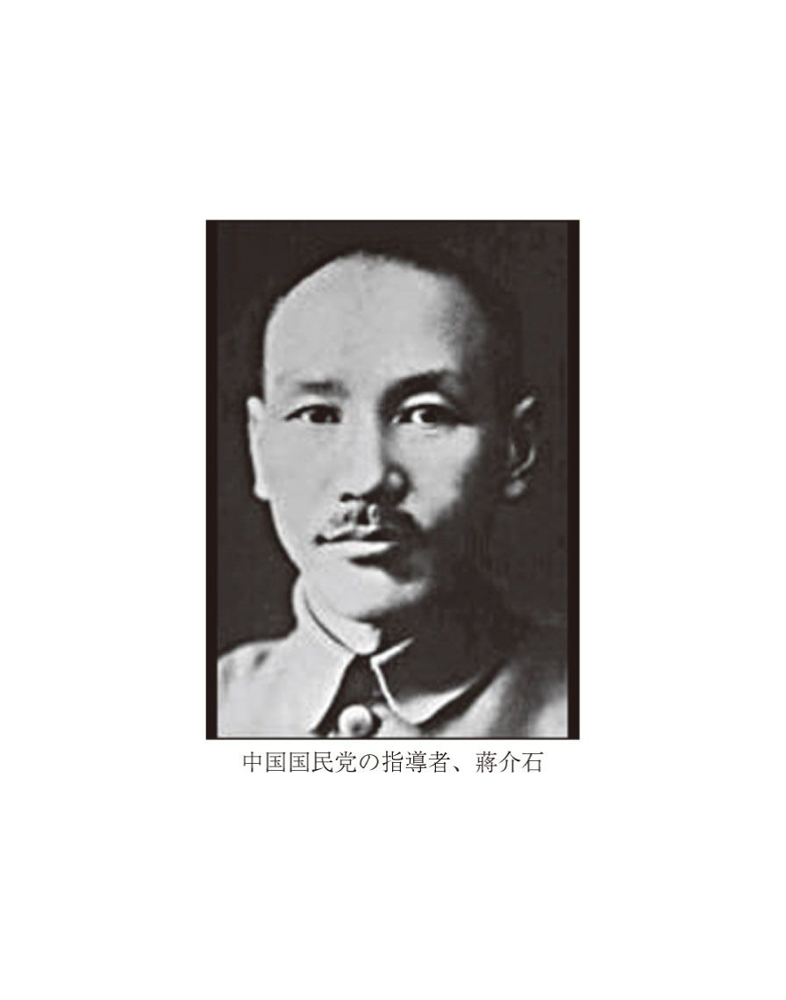
中国共産党を国民党のブルジョア指導部に公式に従属させ、ソヴィエトの創設を公式に禁止したことは（スターリンとブハーリンは国民党がソヴィエトを「代替する」と教えたものだ）、一九〇五～一九一七年におけるメンシェヴィキのあらゆる行動よりもはるかに深刻で重大な、マルクス主義に対する裏切りであった。
一九二七年四月の蔣介石クーデターの後、汪精衛指導下の左派が一時的に国民党と袂を分かつと、この人物はさっそく『プラウダ』で「信頼すべき同盟者」だと宣言された。実際には蔣介石に対する汪精衛の関係は、ミリュコーフに対するケレンスキーの関係と同じであって、違うのは、中国ではミリュコーフとコルニーロフが蔣介石という一人の人物の中で結合していたことであった。
一九二七年四月以降、中国共産党は「左翼」国民党に対する公然たる戦闘を準備する代わりに、同党に入党し、中国版ケレンスキーの規律に従うよう指令された。この「忠実な」汪精衛は、かつてスターリンが自分の「信頼すべき同盟者」と宣言した蔣介石に劣らぬくらい暴力的に中国共産党を、そしてそれとともに労働者・農民の運動を粉砕したのである。
メンシェヴィキは一九〇五年およびそれ以降にミリュコーフを支持したが、それでも自由主義政党には入らなかった。一九一七年、メンシェヴィキはケレンスキーと手に手をとって協力したが、それでも自らの独自の組織は保持した。中国におけるスターリンの政策はメンシェヴィズムの悪しきカリカチュアでさえあった。以上が、最初のそして最も重要な時期の状況であった。
その後、こうした政策の必然的な帰結──労働者と農民の運動の完全な衰退、共産党の士気阻喪と崩壊──が露わになると、コミンテルン指導部は「左向け左！」の命令を下し、労働者と農民による武装蜂起にただちに移行するよう要求した。こうして士気阻喪し重大なダメージをこうむった若い共産党は、ほんの昨日までは蔣介石と汪精衛という四輪馬車の「五番目の車輪」にすぎず、したがって独立した政治的経験をまったく有していなかったというのに、コミンテルンが昨日まで国民党の名において抑制してきた労働者と農民を、この同じ国民党に対してただちに武装蜂起に決起させるよう指令されたのである。しかし、その間に、国民党は権力と軍隊をその手中に掌握することができた。広東では、一昼夜で虚構のソヴィエトが即興的につくられた。ソ連共産党第一五回大会の開会にあらかじめタイミングを合わせて実行された武装蜂起は、中国の先進的労働者の英雄主義の現われであると同時に、コミンテルンの犯罪の現われでもあった。広東蜂起に先立って、またその後にも、より小規模な冒険がなされた。以上が中国におけるコミンテルンの戦略の第二章であり、ボリシェヴィズムの最悪のカリカチュアと呼ぶことができよう。
自由主義的日和見主義の章も、冒険主義の章も、中国共産党に深刻な打撃を与えた。この打撃から立ち直ることができるのは、正しい政策をもってしても、長い期間を経てからのことであろう。
コミンテルンの第六回大会はこれまでの活動を総括し、それを全面的に承認した。それも驚くにはあたらない。同大会はまさにこの目的のために召集されたからである。この大会は将来のためのスローガンとして「プロレタリアートと農民の民主主義独裁」を提起した。この独裁が、一方では左右の国民党の独裁と、他方ではプロレタリアートの独裁と、どの点で異なるのか、このことについては中国共産党には説明されなかった。説明することができなかったからである。
第六回大会は、民主主義独裁のスローガンを宣言しながら、他方では、民主主義の諸スローガン（憲法制定議会、普通選挙権、言論・出版の自由、等々）を容認しがたいものと言明し、そのことによってまさに、中国共産党を軍閥独裁に対して完全に武装解除してしまった。ロシアのボリシェヴィキは長年にわたって民主主義のスローガンの周囲に労働者と農民を動員してきた。民主主義のスローガンは一九一七年の時期にも巨大な役割を果たした。すでに現実に存在していたソヴィエト権力が、全人民の眼前で憲法制定議会と非和解的な形で政治的に衝突してはじめて、わが党は形式的な、すなわちブルジョア的な民主主義の機関とスローガンを、真のソヴィエト的な、すなわちプロレタリア的な民主主義のために清算したのである。
コミンテルンの第六回大会は、スターリンとブハーリンの指導のもとに、このいっさいを正反対に引っ繰り返した。それは一方では党に「プロレタリア」独裁ではなくして「民主主義」独裁を押しつけながら、他方ではこの独裁を準備するために民主主義的スローガンを利用するのを禁じた。中国共産党は武装解除されただけでなく、すっかり丸裸にされてしまった。その代わり、中国共産党は慰めとして、革命の高揚期には禁じられていたソヴィエトのスローガンを、反革命が無制限に支配している時期になってようやく許可された。ロシア民話のある著名な主人公（３）は、葬式で婚礼の歌を歌い、結婚式で葬送の歌を歌い、そのせいでどちらでも拳骨を食らう。問題がただコミンテルン現指導部の戦略家たちが拳骨を食らうことにすぎないのなら、まったく我慢できる。しかし、ここで賭けられているものはもう少し大きい。問題はプロレタリアートの運命に関わっている。コミンテルンの戦術は中国革命の組織されたサボタージュに他ならなかった。このサボタージュは無自覚的なものだったが、それだけになおさら効果的なものだった。このサボタージュは見事に実行された。なぜなら、コミンテルンは、一九二四～二七年におけるこの右翼メンシェヴィキ的政策をボリシェヴィズムのあらゆる権威で覆い、ソヴィエト権力の巨大な弾圧機構によって左翼反対派の批判から守ったからである。
こうして、最初から最後まで永続革命に対する闘争の旗印のもとに遂行されたスターリン的戦略の完成された実例が成立した。それゆえ、民族ブルジョア政党たる国民党に対する中国共産党の従属を正当化した主たるスターリニスト理論家がマルトゥイノフであったのも、至極当然なのである。彼は、一九〇五年から一九二三年にいたるまでずっと、メンシェヴィキの陣営にあって永続革命論に対する主要な批判者であった。一九二三年に彼はボリシェヴィキの陣営に移ったが、この陣営でもその歴史的使命を遂行し続けたのである。
＊ ＊ ＊
本書を執筆するにいたった経緯に関する最も必要な点は第一章で述べてある。アルマ・アタで私はじっくりとエピゴーネンに対する理論的論争の著作を準備していた。同書の主要部分が永続革命論に当てられることになっていた。執筆中に私は、永続革命とレーニンの戦略路線とをあいもかわらず対立させて論じているラデックの原稿（４）を受け取った。このような一見したところ唐突にも見える攻撃がラデックに必要だったのは、彼自身がスターリンの中国政策に腰まではまり込んでいたからである。ジノヴィエフとともにラデックは、蔣介石のクーデター前のみならず、クーデターの後でさえも、中国共産党の国民党への従属政策を擁護していた。ブルジョアジーへのプロレタリアートの隷属を正当化するために、ラデックは言うまでもなく、農民との同盟の必要性と私によるこの必要性の「過小評価」なるものを持ち出した。スターリンにならって彼もまた、ボリシェヴィキ的言辞でもってメンシェヴィキ的政策を擁護した。さらにこれまたスターリンにならって、ラデックは、農民大衆の先頭に立ちつつ権力のための独立した闘争を遂行するという路線から中国プロレタリアートを逸脱させた誤りを、プロレタリアートと農民の民主主義独裁という定式でもって覆い隠した。私がこの思想的仮装を暴露したので、ラデックは、日和見主義に対する私の闘争が実は永続革命論とレーニン主義との矛盾から生じているのだということを、レーニンからの引用で飾り立てつつ証明することが急務だと感じたのである。ラデックは自らの犯した罪に対する弁護士の弁論を、永続革命に対する検事の論告に変えた。このような振るまいは、彼にとって降服への架け橋にすぎなかった。ラデックは数年前には永続革命論を擁護するパンフレットを書こうとしていたのだから、なおさら私にはこのように推測する正当な根拠がある。
しかし、私は当時はまだラデックを急いで見限るようなことはしなかった。私はきわめて率直かつ断固として彼の論文に答えたが、それと同時に彼の退路を断たないように配慮した。私はここにラデックに対する回答を、当時書かれたままの形で印刷に付し、若干の説明的補足をして文体を修正するにとどめることにした。
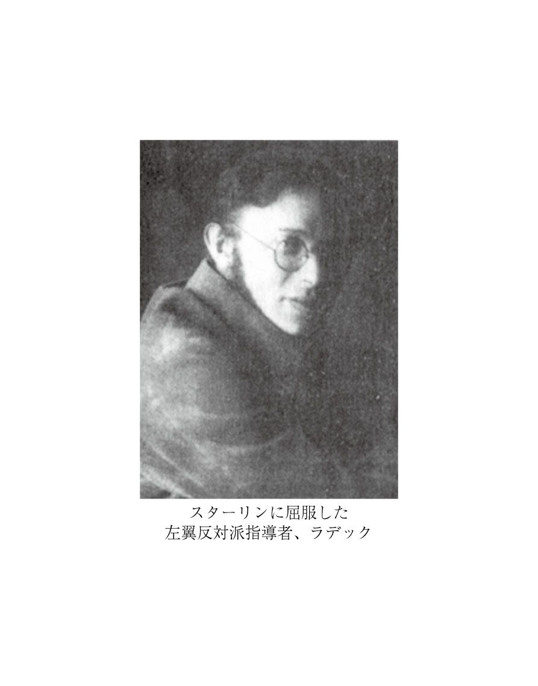
ラデックの論文は公表されなかったし、今後も公表されることはないだろうと思われる。なぜなら、一九二八年に書かれたままの形では、スターリンの検閲の網をとても通過しえないだろうからである。ラデック自身にとってすら、今日ではこの論文は十分破滅的であろう。というのは、それはラデックの思想的進化の様相をまざまざと示すものとなるだろうからである。その姿は、六階から舗装道路に身を投げる人の「進化」を彷彿とさせる。
なぜ本小冊子の中でラデックが、おそらくはその本来の重要性からすれば不釣合いなまでに大きなスペースを占めているのかは、以上の本書の成立事情によって十分説明されている。ラデックは、永続革命論に対する新しい反対論を何一つ考え出しはしなかった。彼はエピゴーネンのさらなるエピゴーネンとして振るまった。それゆえ、読者は、ラデックの中にただラデックその人を見るだけでなく、一種の集団企業の代表者を見るべきである。ラデックは、マルクス主義の放棄という代償を払ってこの企業の参加者──ただし権利の制限された参加者──となったわけである。それでもラデックが自分の責任分担に比してあまりにも大きすぎる攻撃を受けていると個人的に思ったならば、自分の裁量で、より大きな責任を負っている人物にその攻撃を回すべきだろう。それはすでにその企業の内部問題であって、私としては何の異論もない。
＊ ＊ ＊
ドイツ共産党のさまざまなグループは、永続革命に対する批判活動を指導する上での自分たちの有用性を証明することによって党内権力に到達してきたし、あるいは権力を得ようと闘争してきた。しかし、これらすべての文献──マスロウやタールハイマー等々のそれ──は、わざわざ批判的回答を与えるまでもないぐらい惨めな水準である。現在、党指導者に任命されているテールマンやレンメレらは、問題の水準をさらに何段も引き下げた。これらすべての批判者たちは、問題の入り口にさえたどり着いていないことを示しただけであった。それゆえ彼らをそのまま...入り口の前に放置しておこう。マスロウやタールハイマーらの理論的批判に興味を持つ人には、本書を読んでから前述した論者たちの著作に戻ることをお勧めする。そうすれば、これらの人物の無知と不誠実さを確信することができるだろう。それはいわば、本書の読者として想定された人々にとっての副産物となろう（５）。
プリンキポ、一九二九年一一月三〇日
Ｌ・トロツキー
訳注
（１）四月四日のテーゼ......別名「四月テーゼ」。亡命先からロシアに帰還したレーニンは、現在進行中の革命をプロレタリア革命への過渡として性格づけ、臨時政府を支持せず、下から大衆を獲得して、プロレタリア革命をめざす路線を確立した。これはトロツキーの永続革命論に著しく接近する内容を持ったものだった。 （本文に戻る）
（２）蔣介石の反革命クーデター......一九二七年四月一二日に起こったクーデター。一九二四年からコミンテルン指導部は中国共産党に対して、個々の共産党員が国民党（孫逸仙を創始者とするブルジョア民族政党）に入党するという形で、いわゆる「国共合作」を進めるとともに、スターリン、ブハーリンは国民党の右派指導者蔣介石に対する政治的信頼を繰り返し表明してきた。蔣介石はそれを逆手にとって、一九二七年四月に上海でクーデターを起こし、国民党内の共産党員を弾圧し、虐殺した。 （本文に戻る）
（３）ロシア民話のある著名な主人公......「イワンの馬鹿」の主人公イワンのこと。アファナーシェフ『ロシア民話集』（下）、岩波文庫、一九八七年、三四八～三四九頁。 （本文に戻る）
（４）ラデックの原稿......「プロレタリア独裁のスローガンの発展と意義」と題されたラデックの論文は、一九二八年の八月末～九月ごろに流刑地の反対派メンバーの内部で流布された。 （本文に戻る）
（５）現代思潮社版の旧訳では「ドイツ共産党のさまざまなグループは」に始まり「副産物となろう。」で終わる一段落が脱落している。 （本文に戻る）
右派＝中間派ブロックに指導された党の理論的需要は、六年もの間、反卜ロツキズムで満たされてきた。これは、無制限にあって無料で分配されうる唯一の生産物であった。スターリンが一九二四年になってはじめて「理論」に関与したのは、永続革命を攻撃するその不朽の論文によってであった。モロトフでさえこの洗礼盤の上で「指導者」としての洗礼を受けたのである。偽造は全速力で進行中である。
先日私は、レーニンの一九一七年著作集のドイツ語版刊行の予告をたまたま目にした。これは先進的なドイツ労働者階級にとって非常に貴重な贈物である。しかしながら、本文やとくに注の中で多くの偽造がなされるだろうことは最初から想像するに難くない。このことは、目次の最初に登場するのが、ニューヨークのコロンタイに宛てたレーニンの手紙（１）であることを指摘するだけで十分であろう。なぜこの手紙が最初なのか？ それはこの手紙の中に、コロンタイからのまったく誤った情報にもとづいた、私に対する手厳しいコメントが含まれているからである。当時コロンタイは、その体質的なメンシェヴィズムにヒステリー的極左主義を接木していた。ロシア語版では、エピゴーネンは、たとえ曖昧な言い方ではあれ、レーニンが誤った情報を与えられていたと注釈することを余儀なくされた。しかしながら、ドイツ語版にはこのような曖昧な留保さえないことは疑いない。さらにつけ加えておけば、コロンタイに宛てたレーニンのこの同じ手紙には、当時コロンタイと協力関係にあったブハーリンに対する痛烈な批判も含まれている（２）。しかし、手紙のこの部分は今まで隠されてきた。同部分は、ブハーリンに対する公然たる批判カンパニアが展開される時になってはじめて日の目を見ることになるだろう。その日が来るのはそんなに遠い先のことではない（＊）。
＊原注 この予言はその後しばらくして実現された。 （本文に戻る）
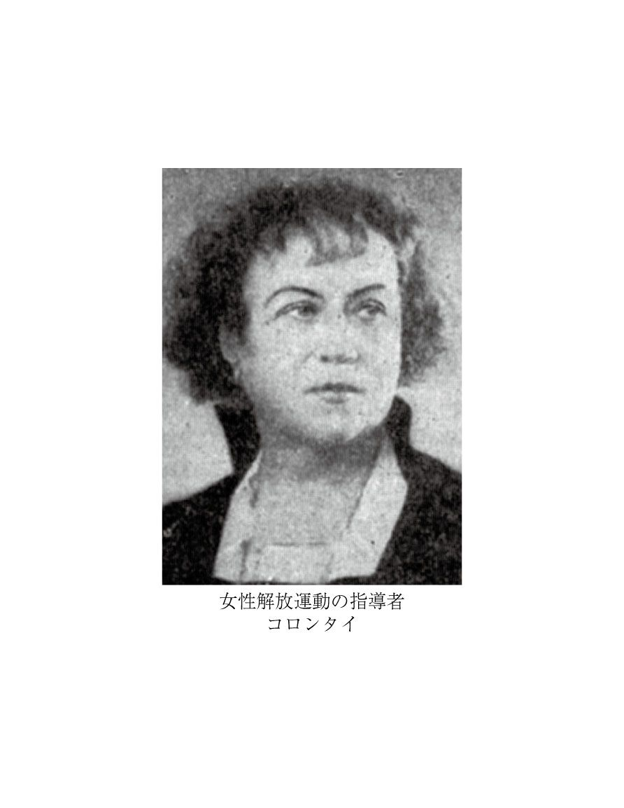
他方では、レーニンの多くの貴重な文書、論文、演説、さらには速記録や手紙の類は、それらがスターリン商会に矛先を向けているか、あるいはトロツキズムの伝説を掘りくずすものであるというただそれだけの理由で、隠蔽されたままになっている。三つのロシア革命の歴史においては、党の歴史の場合と同じく、無傷ですんでいる部分は文字通りまったく存在しない。理論、事実、伝統、レーニンの遺産、これらすべてが、「トロツキズム」との闘争の犠牲にされた。それは、レーニンの病気を機に、トロツキーに対する個人的闘争としてでっち上げられ組織されたものだが、今ではマルクス主義との闘争にまで発展している。
このことから改めて次のことが確認される。すなわち、とっくに鳴りやんだ過去の論争の無意味な掘り起こしのように見えるものが、実は今日における何らかの無意識的な社会的要求──それ自体はけっして過去の論争とは関係のない要求──を満たすものだということである。「旧トロツキズム」に対する反対カンパニアは実際には、新しい官僚たちにとってますます窮屈で耐えがたいものとなっている十月革命の伝統に反対するカンパニアであった。自分から遠ざける必要のあるいっさいのものに「トロツキズム」という名称がつけられることになった。こうして、トロツキズムとの闘争はしだいに、広範な非プロレタリア層、さらには一部のプロレタリア層における理論的・政治的反動の表現となり、党内におけるこの反動の反映物となった。とりわけ、永続革命にレーニンの「農民との同盟」路線を歴史的に歪められた形で戯画的に対置するやり口が完全な形で現われたのは、一九二三年になってからのことであり、一般的な政治的反動および党内反動の時期と軌を一にするものであった。それは、この反動の最も明々白々な現われであり、「永続的」激動を伴う国際革命に対する官僚と所有者の本能的な反発の現われであり、秩序と平穏に対する小市民的・役人的志向の現われであった。
永続革命に対する毒々しい攻撃は、それはそれで、一国社会主義論のために、すなわち新型の民族社会主義のために道を掃き清めるものであった。言うまでもなく、「トロツキズム」との闘争のこうした新しい社会的基盤を指摘することは、それ自体としては、永続革命論の正否について何ごとも語るものではない。しかし、この隠れた基盤を理解することなしには、論争は不可避的にアカデミックで不毛な性格を帯びることになるだろう。
この数年間、私は、あえて新しい課題から離れて、一九〇五年革命の時期と結びついた古い諸問題に立ち返ることができないでいた。なぜならこれらの問題は主として私個人の過去と関係しており、またこの過去を攻撃するために人為的に利用されてきたからである。古い意見の相違を分析すること、とりわけ私の古い誤りを、それを引き起こした当時の状況と結びつけて分析すること、しかも、政治的幼児に逆戻りした古い世代は言うまでもなく、若い世代にも理解してもらえるような全面的な形で分析すること、このようなことは、まるまる一冊の著作の規模でしか可能ではない。しかし、絶えず巨大な重要性をもった新しい諸問題が次々と日程にのぼっているときに、このようなことに私自身と他人の時間を費やすのはとんでもないことだと思われた。ドイツ革命の課題、イギリスの今後の運命の問題、アメリカとヨーロッパの相互関係の問題、イギリス・プロレタリアートのストライキで先鋭化した諸問題、中国革命の課題、そして何よりも、わが国内部の経済的・社会的・政治的諸矛盾と諸課題──これらすべては、永続革命に関する歴史的・論争的著作を常に脇に置いてきたことを正当化するものだと私には思われた。
しかし、社会意識は真空を嫌う。数年来、この理論的真空はすでに述べたように、反トロツキズムのガラクタで埋められている。エピゴーネン、すなわち党内反動の哲学者と実務家たちはますます堕落して、愚劣なメンシェヴィキたるマルトゥイノフに教えを受け、レーニンを踏みにじり、泥沼の中でもがきまわり、そのいっさいをトロツキズムとの闘争だと称した。この数年間というもの、彼らは、公然と口に出しても恥ずかしくないような何らかの本格的で重要な著作、将来も維持しうるような何らかの政治的評価、後に確証されたような予測、われわれを思想的に前進させるような独自のスローガン、こういったものを何一つ生み出さなかった。あるのは、ガラクタとやっつけ仕事ばかりである。
スターリンの『レーニン主義の諸問題（３）』はこうした思想的ガラクタの法典であり、浅知恵の公式教科書であり、番号のついた俗悪さの集積（４）である（私はできるだけ穏便な規定を選ぼうと努力している）。ジノヴィエフの『レーニン主義（５）』は...ジノヴィエフ的レーニン主義であって、それ以上でも以下でもない。ジノヴィエフの原理はルターとほぼ同じである。すなわち「私はここに立つ...が、違うようにも振るまうことができる（６）」。エピゴーネン主義のこの二つの理論的果実を食することは同じように耐えがたいものであるが、違いがあるとすれば、ジノヴィエフの『レーニン主義』を読むと、真綿を無理やり飲み込んでいる感じがするが、スターリンの『レーニン主義の諸問題』は、細かく刻んだ剛毛が喉に詰め込まれているような物理的感覚を引き起こす、といった点ぐらいである。この二つの著作は、それぞれなりに、思想的反動の時代を反映するとともにその頂点をなすものでもある。
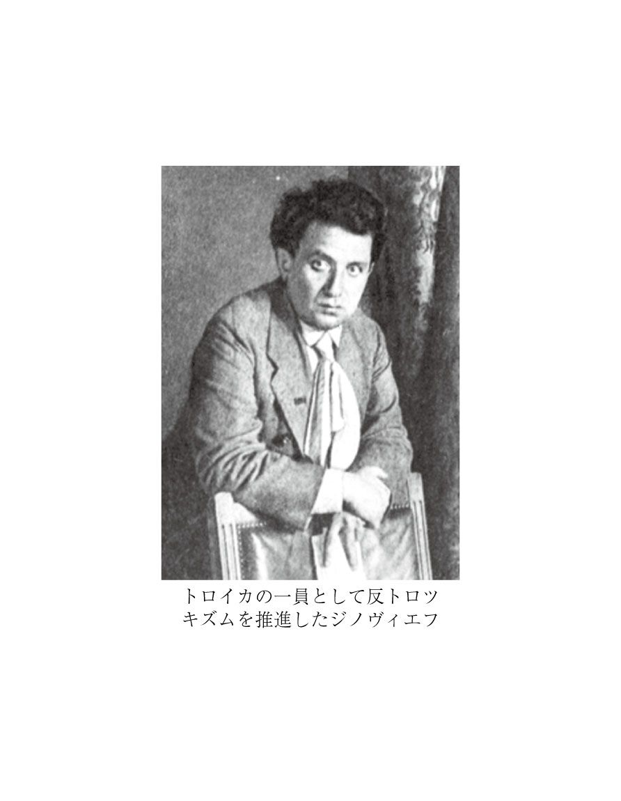
あらゆる問題を──左右、上下、前後から──「トロツキズム」に結びつけ適用することによって、エピゴーネンはついには、世界のすべての事件を、一九〇五年におけるトロツキーの永続革命論がいかなるものであったのかに直接間接に依拠させるに至った。偽造に満ちた「トロツキズム」の伝説は現代史の一要因となった。そして、この数年間における右派＝中間派路線が世界のあらゆる場所で度重なる歴史的規模の破産をこうむって自己の権威を失墜させたとはいえ、それでも、コミンテルンの中間主義イデオロギーとの闘争は今日ではもはや、一九〇五年初頭に起源を有している古い論争と予測の問題に対する評価なしには考えられなくなっている。あるいは、それなしには少なくともはなはだ困難になっている。党内におけるマルクス主義思想の復活、したがってレーニンの思想の復活は、エピゴーネンの三文文献を論争の火あぶりにかけ、［官僚］機構の死刑執行人たちを理論的に容赦なく死刑に処さないことには考えられない。そのような本を書くことはけっして難しいことではない。そのための素材はすべて手元にそろっている。しかし、そうするためには、偉大な風刺作家サルトゥイコフの言葉を借りるならば、「言葉の蒸気」の世界に降りてゆき、しばらくのあいだは、このけっして芳しいとは言えない雰囲気の中にとどまらなければならない。まさにそれゆえ、このような本を書くのは難しいのである。しかしそれでも、この仕事は絶対に先送りできないものである。なぜなら、永続革命に対する闘争に直接もとづいて、東方問題における、つまりは人類の過半数を占める領域における日和見主義路線が擁護されているからである。
私がすでに、わが国の古典文学者の著作を休憩時間用にとっておきつつ（潜水夫も、新しい空気を吸うために時おり水面に顔を出さなければならない）、ジノヴィエフやスターリンとの理論的論争というこのあまり魅力的でない仕事にとりかかっていたとき、私にとってまったく思いがけないことに、永続革命論とこの問題に関するレーニンの見解とを「より深く」対置させて論じたラデックの論文が流刑地で出回りはじめた。最初私はラデックの論文を脇に退けて、運命のいたずらで私に用意された真綿と細かく刻まれた剛毛の混合物を甘受しようと思っていた。しかし友人たちから多くの手紙が来たために、ラデックの論文を入念に読まざるをえなくなった。そして私は次のような結論に達した。命令によってでなく自主的にものを考えることができ、良心的にマルクス主義を勉強したより狭い範囲の人々にとっては、ラデックの論文は公式文献よりも有害である、と。それはちょうど、政治における日和見主義が仮装されていればいるほど危険であり、あるいはそれを覆い隠している人物の個人的評判が高ければ高いほど危険であるのと同じである。
ラデックは私の最も親しい政治的友人の一人である。このことはこの間の事態［左翼反対派として共に闘い、共に除名され、共に流刑に処されたこと］によって十分はっきりと示されている。しかしながら、この数ヵ月間、多くの同志たちがラデックの「進化」を不安な面持ちで見ていた。ラデックは、反対派の最左翼からその右翼へと移行しつつあったからである。ラデックの親しい友人であるわれわれはみな、彼の輝かしい政治的・文学的才能がそのはなはだしい衝動性や印象主義と結びついており、こうした資質は、他の同志たちとの共同作業という条件のもとでは創意と批評との貴重な源泉をなすのだが、隔離された孤立状態の中ではまったく異なった結果をもたらしうることを知っている。ラデックの最近の論文からして、そしてそれに先立つ彼の一連の言動と結びつけて判断するなら、ラデックが羅針盤を失ったか、あるいはその羅針盤が長期にわたる磁気異常で狂ってしまったとみなさざるをえない。ラデックの論文はけっして過去へのエピソード的な回帰ではない。そうではなく、それは公式路線とそのあらゆる理論的神話を支持するものであり、十分に考えぬかれたものではないが、だからといって有害性に劣るものではけっしてない。
「トロツキズム」に対する現在の闘争の政治的機能を以上のように特徴づけることができるとしても、このことは、思想的・政治的反動に対抗するマルクス主義的牙城として形成された反対派それ自身の中で、内部批判、とりわけ私とレーニンとの古い意見対立に対する批判が許されないということを意味するものではけっしてない。それどころか、そのような自己解明の仕事はただ有益なだけであろう。しかし、その場合でも少なくとも、歴史的展望を慎重に保持し、原典資料に真面目に取り組み、過去の論争を現在の闘争の光に照らして解明することが必要であろう。
だが、このようなことはラデックにはまったく見られない。ラデックは、いかに彼自身そのことを認めなかろうと、「トロツキズム」に対する闘争の一環に完全に組み込まれてしまっており、一面的に取捨選択された引用文を利用するだけでなく、それらに対する根本的に誤った公式の解釈をも利用している。公式のカンパニアから一線を画しているように見える部分もあるが、彼は非常に曖昧な形でそうしているので、実際には「公正な」証人としての二重の支持を与える結果になっている。思想的退行の場合には常に見られることなのだが、ラデックのこの最近の論文には、彼本来の政治的洞察力や文学的技量の片鱗さえ見られない。それは遠近もなければ、立体性も欠いた作品、引用文という一面しかない作品であり、したがって実に平面的な作品である。
それはいかなる政治的必要性から生まれたのか？ 中国革命の諸問題をめぐってラデックと反対派の圧倒的多数とのあいだに生じた意見の相違からである。たしかに、中国をめぐる意見の相違は今では「アクチュアルではない」（プレオブラジェンスキー）という若干の声が上がっている。しかし、このような声には真面目に答える気にさえなれない。ボリシェヴィズムの全体は、一九〇五年の経験を、その足跡がまだ真新しいうちに、すなわちこの経験がボリシェヴィキの第一世代にとってまだ生々しい実体験であった時期に批判し徹底的に検討することで成長し、最終的に形成されたのである。今日、プロレタリア革命家の新しい世代は、中国革命の新鮮で、まだ冷めやらず、血を流し続けている経験から学ばずして、いったいどうやって、他のどの事件から学ぶというのか？ 生気のない衒学者だけが、中国革命の諸問題を「先送り」して、後で「平穏な」状況下で暇な時間に研究することができるのである。しかも、東方諸国における革命は、まだまったく日程から外れていないし、その期日は誰にもわからないのだから、このような態度はなおさらボリシェヴィキ・レーニン主義者にふさわしくない。
中国革命の問題について誤った立場をとったラデックは、私とレーニンとの古い意見の相違を一面的かつ歪んだ形で持ち出すことによって、過去にさかのぼって自分の誤った立場を正当化しようとしている。まさにここにおいてラデックは、敵の武器庫から借りてきた武器を用いざるをえないし、不慣れな水路を羅針盤なしで航行せざるをえないのである。
ラデックは私の友人であるが、真実の方がもっと大切である。私は革命の諸問題に関するより一般的な著述を再び脇に置いて、ラデックに反論することを余儀なくされた。あまりにも多くの問題が提起されており、しかも単刀直入に提起されている。その際、私が克服しなければならない困難は三重であった。ラデックの論文における誤りの多さと多様さ、ラデックの誤りを論証する二三年間（一九〇五～一九二八年）にわたる文献的・歴史的事実のあまりの豊富さ、最後に、私がこの仕事に割くことのできる時間の少なさである。なぜなら、今やソ連邦の経済的諸問題が前景に押し出されつつあるからである。
以上すべての諸事情が本書の性格を規定している。本書は問題のすべてを論じつくしてはいない。その中で述べられていないことも多いが、その理由の一つは、すでに発表された諸文献、とくに『コミンテルン綱領批判』で論じられているからである。この問題に関して私が集めた事実資料の山は、執筆を計画しているエピゴーネン批判の書、すなわち反動期の公式イデオロギーに対する批判の書にとりかかるまで利用されないままであろう。
＊ ＊ ＊
永続革命に関するラデックの論文はその結論部分で次のように述べている。
党の新しい部分（反対派）は、プロレタリア革命の発展をその同盟者たる農民から乖離させる傾向をもたらす危険性に直面している。
まず驚かされるのは、このような結論が一九二八年の後半にもなって、党の「新しい」部分に関する新しい結論として引き出されていることである。われわれは、すでに一九二三年の秋以来、絶えまなくそういった議論を聞かされてきた。では、ラデックはこの主要な公式テーゼへの転向をどのように正当化しているのか？ その手法に関しても目新しいものは何もない。一九二四～二五年に、何度となくラデックは、次のような考えを証明することに捧げられた小冊子を書こうとした。永続革命論とレーニンの「プロレタリアートと農民の民主主義独裁」というスローガンは、歴史的な規模で取り上げた場合、すなわち、われわれの眼前で展開された三つの革命に照らしてみた場合、けっして相互に対立するものではなくて、反対に、その基本点において一致するものであるという思想である。ところが、今では彼は──同志の一人に彼自身が書いているところによると──この問題を「改めて」徹底的に検討してみて、古い永続革命論が他ならぬ農民からの乖離という危険性でもって党の「新しい」部分を脅かしているという結論に達したというのである。
しかし、ラデックはどのようにこの問題を「徹底的に検討」したのであろうか？ この点に関して彼自身が若干の情報を与えてくれている。
一九〇五年にトロツキーが自分の概念を定式化した、マルクス『フランスにおける内乱』への序文および一九〇五年の『われわれの革命』は、われわれの手元にはない。
ここで挙げられている年代はけっして正確なものではないが、それはとりたてて論じる価値もないことである。重要なのは、当時私が革命の発展について多少とも系統的に自分の見解を叙述した唯一の作品が、まさにこの『われわれの革命』（ペテルブルク、一九〇六年）の二二四～二八六頁に収められている大部の論文「総括と展望（７）」であったということである。ラデックはもっぱら、ローザ・ルクセンブルクとトゥイシコ［ヨギヘス］のポーランド党の機関紙に掲載された私の論文（８）（一九〇九年）から引用しているのだが──しかも、悲しいかな、彼はカーメネフ流にそうしている──、この論文は、けっして全面的なものであるとか完成されたものであるというように称してはいなかった。理論的には、この論文は前述した著作『われわれの革命』にもとづいている。今この本を読む義務は誰にもないだろう。その時以来、実に多くの事件が起こり、われわれはそこから実地に十分多くのことを学んだ。それゆえ新しい歴史的諸問題を、われわれによってすでに成し遂げられた革命の生きた経験に照らしてではなく、主として、将来の革命についてのわれわれの過去の予見にのみ関わる引用文に照らして検討するというエピゴーネンのやり方には、まったくうんざりである。
もちろんこう言ったからといって、歴史的・文献的側面から問題にアプローチするラデックの権利を否定するつもりはない。だが、その場合には、しかるべきやり方でそうしなければならない。ラデックは、ほとんど四半世紀もの長期にわたる永続革命論の運命を明らかにしようとしているというのに、この理論が展開されているその当の文献が自分の「手元にない」と、こともなげに言うのである。
ここで指摘しておくと──レーニンの過去の諸論文を読みかえした現在では、とくにはっきりとしたのだが──、レーニンは前述の基本文献を読んだことがなかった。その理由はおそらく、『われわれの革命』が一九〇六年に出版されるやただちに押収され、われわれ全員がすぐに亡命したためばかりでなく、この本の三分の二が以前の諸論文の再録であったことにもあるだろう。私は後になって多くの同志たちから、この本全体が古い論文を集めたものだと思ったので読まなかったと聞かされた。いずれにせよ、永続革命に対するレーニンの散発的でごくわずかな数の論争的コメントは、私の小冊子『一月九日以前（９）』に対するパルヴスの序文（10）と私のまったく知らなかった「ツァーリではなく労働者政府を」というパルヴスの宣伝ビラ（11）、さらに党内におけるブハーリンらとの論争にもとづいていた。レーニンはいついかなるところでも──たとえことのついでであれ──「総括と展望」を批判したり引用したりしていない。明らかに私には当てはまらないような若干の永続革命批判をレーニンが行なっていることも、レーニンがこの論文を読んでいなかったことをはっきりと物語っている（＊）。
＊原注 たしかに、一九〇九年にレーニンは、マルトフとの論争に当てられた論文の中で「総括と展望」を引用している（12）。しかし、この引用が孫引きであり、同じマルトフ論文からのものであることを示すのは難しくない。まさにこのことから、私に対する彼の批判のいくつかが明らかな誤解にもとづくものであったことが説明される。
一九一九年に、ソヴィエトの出版所は、私の『総括と展望』を単独のパンフレットとして出版した。ほぼこれと同じ時期に、永続革命論は十月革命後の「今日」とくに注目に値するという趣旨の『レーニン全集』の注解が出された。レーニンは、一九一九年に私の『総括と展望』を読むか、あるいはざっとでも目を通したのだろうか？ これについては、何とも言うことはできない。私個人は、そのころいつも各地に遠征しており、時たましかモスクワを訪れなかったし、レーニンとの会談の時も──当時は内戦のさなかであった──過去の分派的な理論的いきさつのことなど、どちらの脳裏にも浮かばなかった。しかし、Ａ・Ａ・ヨッフェは、まさにこの時期に、永続革命論についてレーニンと話を交わしている。ヨッフェは、私に宛てた遺書の中で、この会話のことを記している（参照、『わが生涯』第二巻、グラニート社、二八四頁（13））。Ａ・Ａ・ヨッフェの回想からして、レーニンが一九一九年に初めて『総括と展望』を知り、その中に含まれている歴史的予測の正しさを認めたというように解釈することができるのではなかろうか？ この点に関しては、私はただ心理的推測をなしうるだけである。この推測が説得力を持ちうるかどうかは、この係争問題に対する本質的評価のいかんにかかっている。レーニンが私の予測の正しさを認めたというＡ・Ａ・ヨッフェの言葉は、昨今の理論的まがいものによって育てられた人々には理解しがたいものに見えるにちがいない。他方、革命そのものの発展と結びついたレーニンの思想の真の発展をきちんと踏まえる者なら誰でも、一九一九年にレーニンが、十月革命前のいろいろな時期に彼が個々の引用文にもとづいて、断片的に、ことのついでに、しばしば明らかに矛盾した形で、そして全体としての私の立場を一度として検討することもなく表明していたのとは異なる、永続革命論に対する新しい評価を下したにちがいないし、そうでないわけがないと理解することだろう。 （本文に戻る）
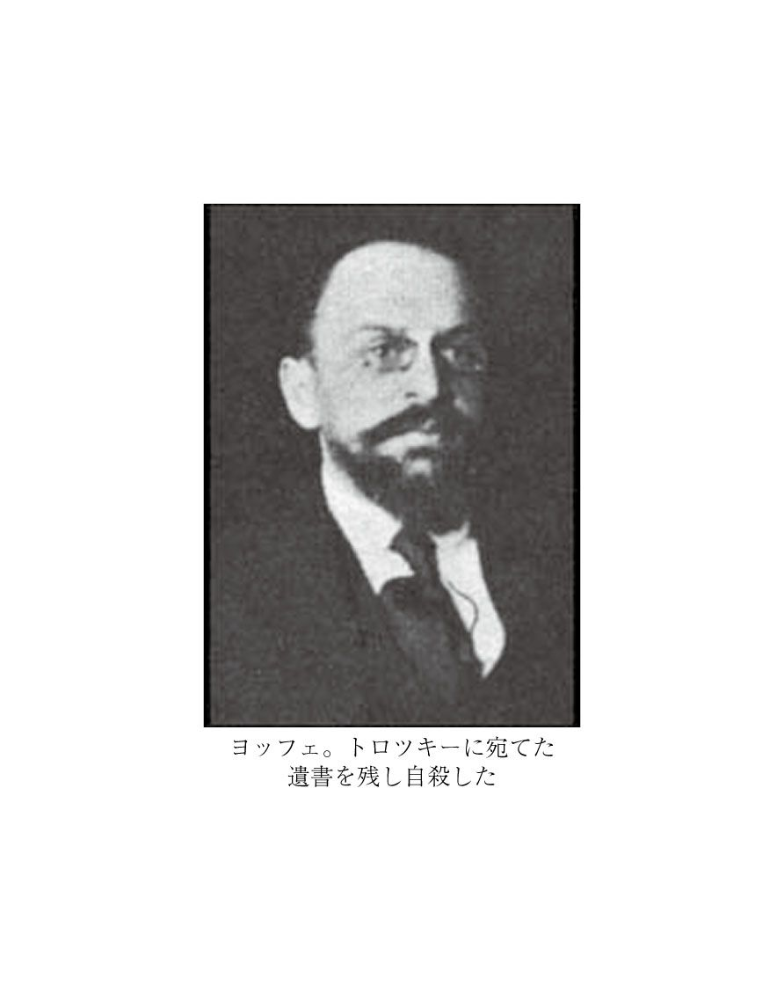
一九一九年に私の予測の正しさを認めるのに、レーニンは私の立場と自分自身の立場とを対立させる必要はいささかもなかった。両者の立場をその歴史的発展の中で取り上げればそれで十分であった。ここで繰り返すまでもないことだが、レーニンが「民主主義独裁」という自らの定式にその時々において与えていた具体的内容は、この仮説的定式から導き出されたものというよりも、階級的諸関係における現実的変化の分析から生じたものであり、この戦術的・組織的内容は、革命的リアリズムの古典的実例として歴史の財産目録に永遠に収められている。私が戦術的ないし組織的な面でレーニンと対立したほとんどすべての場合において、少なくともその最も重要な場合において、正しかったのはレーニンの側であった。まさにそれゆえ私は、問題が単なる歴史的回顧であるかぎり、自分の古い歴史的予測にわざわざ立ち返ることに何の興味も感じなかったのである。私がこの問題に立ち返らざるをえないとみなしたのは、永続革命論に対するエピゴーネンの批判が、インターナショナル全体の理論的反動の温床となっているだけでなく、中国革命の直接的サボタージュの手段に転化しはじめたからである。
しかしながら、まさにここにレーニンの「レーニン主義」たるゆえんがあると考えるとすれば、軽率のそしりを免れないだろう。だが、ラデックはそう考えているようである。いずれにせよ、ここで私が検討に付すラデックの論文からうかがえることは、私の基本的な諸文献が彼の「手元にない」だけでなく、どうやらそれらを読んだことさえなかったということである。たとえ読んでいたとしても、それはずっと以前、十月革命前のことであろう。いずれにせよ彼はごくわずかなことしか覚えていないのである。
しかし問題はそれにとどまらない。たしかに、一九〇五年ないし一九〇九年には、当時は焦眉の問題を扱っていた個々の論文をめぐってお互いに論争したり、あるいは個々の論文の個々の文言をめぐってさえ論争することも、とくに当時の分裂状態にあっては許容されうるだろうし、不可避でさえあったろう。しかし、今日、マルクス主義革命家が巨大な歴史的時期を後から振り返って考察する際には、次のような問題を自己の前に立てないわけにはいかないはずである。すなわち、問題となっている当時の種々の定式がどのように実践に適用されたのか、それらが行動の中でどのように屈折し、またどのように解釈されたか、戦術はいかなるものであったのか、という問題である。もしラデックが、二分冊の『わが第一革命』（私の『著作集』の第二巻）だけでも目をとおす労をとっていたならば、彼はあえてこのような論文を書かなかっただろうし、いずれにせよ、その勝手気ままな主張の多くを削除したことであろう。少なくとも私はそうであることを望む。
たとえば、この二冊本からラデックは何よりも、私の政治的活動において、永続革命が革命の民主主義的段階を、あるいはそのより部分的な小段階さえも飛び越すことをけっして意味するものではなかったということを知ったであろう。そして、私が一九〇五年のあいだずっとロシアに非合法に滞在し、亡命者たちとの結びつきもなかったにもかかわらず、革命の当面する諸段階における課題をレーニンと完全に一致した形で定式化していたことを確信することができただろう。さらに、一九〇五年にボリシェヴィキの中央印刷局によって発行された農民への重要な訴え（14）が私によって書かれたものであること、レーニンの編集になる『ノーヴァヤ・ジーズニ（新生活（15））』がその編集部論文の中で、『ナチャーロ（始まり（16））』に発表された永続革命に関する私の論文（17）を断固として擁護したこと、レーニンの『ノーヴァヤ・ジーズニ』、および時にはレーニン自身も、私が起草した代表ソヴィエトの政治的諸決議を常に支持し擁護したこと、またソヴィエトの会議の一〇分の九が私を報告者としていたこと、一二月蜂起の壊滅の後、私が獄中で憲法制定議会をめぐる戦術パンフレット（18）を執筆し、その中で、プロレタリアートの攻勢と農民の土地革命との結合を中心的な戦略問題とみなしていたこと、レーニンがこのパンフレットをボリシェヴィキの出版社「ノーヴァヤ・ヴォルナ（新しい波）」から出版してくれ、ボリシェヴィキのクヌニャンツを通じて同パンフレットへの熱烈な賛意を伝えてきたこと、レーニンが一九〇七年のロンドン党大会（19）において農民と自由主義ブルジョアジーに対する見方に関して私の立場とボリシェヴィズムとの「一致」について述べていること（20）、等を知ったであろう。ラデックにとってはこのようなことはすべて存在しない。おそらくこれらも「手元に」はなかったのだろう。
では、レーニン自身の諸文献はラデックによってどのように扱われているだろうか？ あまりましなものではない。ラデックが扱っている引用は、レーニンが私を批判して書いたものだけだが、その多くは実際には私ではなく他の人々（たとえばブハーリンやラデック。この点に関してはラデック自身が率直に指摘している）のことを念頭に置いているものであった。ラデックは私を攻撃する新しい引用を何一つ持ち出すことができなかった。彼は、今ではソ連のほとんどどの市民でも「手元に」持っている出来合いの引用文を利用しているにすぎない。ラデックがそれにつけ加えているのはせいぜい、レーニンがブルジョア共和国と社会主義との相違に関する自明の真理をアナーキストや社会革命党にわかりやすく説明している若干の引用文（21）だけであり、しかもラデックは、それらの引用文があたかも私を批判するものであるかのように見せかけているのである。信じがたいことではあるが、実際にそうなのだ！
その一方で、革命の根本問題における私とボリシェヴィズムとの一致を、きわめて慎重かつ控え目に、だがそれだけにいっそう大きな重みをもって確認しているレーニンの過去の一連の発言を、ラデックは完全に無視している。一瞬たりとも忘れてはならないのは、レーニンがこのような発言をした時には、私はまだボリシェヴィキ派に属していなかったということ、そしてレーニンが私を容赦なく（そしてまったく正当に）攻撃したのは、永続革命のゆえではなく──この問題についてはレーニンはエピソード的な批判をするにとどまった──、私の調停主義のゆえであり、私がメンシェヴィキの左傾化の可能性を安直に期待したことに対してであった、ということである。もっとも、レーニンは「調停派」トロツキーに対する個々の論争上の攻撃を「正当化」することよりもはるかに、調停主義そのものに対する闘争の方に心を奪われていたのだが。
十月革命におけるジノヴィエフの行動（22）を私から擁護するために、一九二四年にスターリンは次のように書いている。
同志トロツキーはレーニンの手紙（ジノヴィエフに関する手紙のこと──トロツキー）を、その意味、その使命を理解していない。レーニンは手紙の中でわざと先回りをして、犯されるかもしれないありうる誤りを前面に押し出し、党が誤らないように予防するために、あるいは誤りに対する保険をかける目的で、前もってそれを批判するということがしばしばある。あるいは、同じ教育的目的のために、しばしば「取るに足らないこと」を大げさに言い、「ハエをゾウのように」言うことがある。（......）レーニンのこのような手紙から、「悲劇的な」意見の相違を結論づけ、それについて触れまわることは、レーニンの手紙を理解せず、レーニンを知らないことを意味する。（イ・スターリン「トロツキズムかレーニン主義か」、一九二四年（23））
ここで示されている思想の定式の仕方は拙劣であるが（「文は人なり」だ）、思想の基本点は正当である。もっとも、「ハエ」には似ても似つかないまさにあの十月の意見の相違には最もあてはまらないのだが。しかし、もしレーニンが自分自身の分派の最も近しいメンバーに対して「教育的」誇張を行ない、予防的論争をするのが常であったとしたら、当時ボリシェヴィキ派の外部にあって調停主義を唱えていた者に対してはなおさらであった。古い引用文を利用する際にはこのような必要最低限の修正係数を導入する必要があるということについて、ラデックは考えさえもしなかった。
私は自分の著作『一九〇五年（24）』の一九二二年版序文の中で、プロレタリアートの独裁がロシアにおいて先進諸国よりも早く達成される可能性と蓋然性の予見が一二年後に現実に裏づけられたと書いたが、ラデックは、あまり魅力的ではない手本にしたがって、あたかも私がこの予測をレーニンの戦略路線に対置したかのように描き出している。しかしながら、この「序文」からまったく明らかなのは、私が、永続革命の予測に見られる基本的諸特徴がボリシェヴィズムの戦略路線と一致しているとみなしていることである。私は注の一つで一九一七年初頭における党の「再武装」について述べているが（25）、それはレーニンが党のこれまでの道のりを「誤っていた」と認めたという意味ではなく、レーニンが、革命にとって幸いなことに、スターリン、カーメネフ、ルイコフ、モロトフ等々といった人々が依然としてしがみついていた「民主主義独裁」という時代遅れになったスローガンを放棄するよう党を教育するために、遅れはしたが、それでも十分間に合うようにロシアへ帰ってきたという意味である。「再武装」という指摘にカーメネフらが怒ったのはわかる。というのも、それは彼らに矛先を向けたものだったからだ。ではラデックは？ 彼は一九二八年になってから、すなわち、彼自身が中国共産党の必要な「再武装」に反対するようになってからようやく怒りはじめたのである。
ラデックに指摘しておきたいのは、私の著作『一九〇五年』（問題の「序文」を含む）と『十月革命（26）』が、レーニン時代には、両革命に関する基本的な歴史教科書としての役割を果たしていたことである。当時、両著作はロシア語でも外国語でも何度も版を重ねた。しかし、私がこれらの著作の中で二つの路線を対置しているなどと私に告げたものは誰もいなかった。なぜなら、エピゴーネンによる修正主義的な「道標転換」の以前には、まっとうな思考の持ち主である党員はみな、十月の経験を古い引用文に従属させるのではなく、古い引用文を十月革命に照らして考えていたからである。
これと関連して、ラデックがまったく許しがたいやり方で悪用している点がもう一つある。すなわち、結局トロツキーは自分よりもレーニンの方が正しかったと認めたではないかというものである。ラデックはこのことを何度も繰り返している。たしかに私はそう認めた。そしてこの承認のうちには、いささかの外交辞令もなかった。しかし、私が念頭に置いていたのは、レーニンの歴史的道のりの全体、彼の全体としての理論上の基本姿勢、彼の戦略、彼の党建設のことである。しかし、このことはもちろん、個々の論争的な引用文、しかも今日、レーニン主義に敵対的な目的のために解釈されているこれらの引用文のいずれとも無関係である。
ラデックは、われわれがジノヴィエフとブロックを組んでいた時期の一九二六年に、私に次のように注意を促した。私が自分よりもレーニンの方が正しかったと言明することがジノヴィエフのために必要ではないか、そうすれば、ジノヴィエフが私より誤っていたことを多少ともごまかせるからだ、と。もちろん、この点は私にも十分理解できた。まさにそれゆえ、私はコミンテルン第七回拡大執行委員会総会において次のように述べたのである。レーニンとその党は歴史的に正しかったが、このことは、レーニンから人為的に引き抜いてきた引用文で自らの誤りをごまかそうとしている現在のトロツキー批判者たちが正しいことにはけっしてならない、と（27）。今日、私はこの言葉を、残念ながらラデックにも進呈せざるをえない。
永続革命に関しては、私はただこの理論の個々の欠陥について語っただけであり、しかもそのような欠陥は将来の予測が問題になっていたかぎり避けられないものであった。当時ブハーリンは、第七回拡大執行委員会総会の場で、トロツキーは永続革命の概念を全体として放棄してはいないと強調したが、これはまったく正しい。永続革命論の「欠陥」については、別のもっと大部の著作で論じるとしよう。その際には、三つの革命の経験を、その後のコミンテルンの路線、とくに東方における路線と対比させつつ系統立って論じるよう努めるだろう。しかし、いかなる誤解の余地も残さないよう、ここで以下のことを簡単に述べておきたい。さまざまな欠陥はあったにせよ、永続革命論は、私の最も初期の諸論文、何よりも「総括と展望」（一九〇六年）においてさえ、スターリンやブハーリンの現在の利口ぶった後知恵だけでなくラデックの最新論文と比べてさえ、はるかにマルクス主義の精神に貫かれており、したがってまたレーニンとボリシェヴィキ党の歴史的路線にはるかに近いのである。
しかし、こう言ったからといって私はけっして、永続革命の概念が私のすべての論文において揺るぎのない同一の路線を構成していると言いたいわけではない。私は古い引用文の選別作業に取り組んだのではなく──もっとも今ではもっぱら党内反動とエピゴーネン主義の時代のせいでそうすることを余儀なくされているが──、良きにつけ悪しきにつけ実生活の現実の過程を評価しようとしたのである。一二年間（一九〇五～一九一七年）におよぶ私の革命的文筆活動の中では、短期的状況や、闘争には不可避でさえある短期的・論争的な誇張が、戦略路線に反する形で前景に押し出されているような論文もある。たとえば、一つの階層としての農民全体が将来、革命的役割を果たすことに対して疑問を表明し、そのことと結びつけて、将来のロシア革命を──とりわけ帝国主義戦争の時期には──「国民革命」と呼ぶのを拒否した論文もある（28）。このような名称が曖昧だと感じたからである。
しかし、ここで忘れてならないのは、問題となっている歴史的過程──農民内部における過程を含めて──は、それがとっくに完結した現在から見れば、それが発展しはじめたばかりの当時よりもはるかに明瞭なものになっていることである。さらに指摘するならば、レーニンは、農民問題を一貫してその巨大な歴史的規模で考察し、われわれはみな彼からこのことを学んだのだが、その彼でさえ、二月革命後にはすでに、農民をブルジョアジーから引き離してプロレタリアートの指導下に置くことができるかどうか明白ではないとみなしていたのだ（29）。そもそも私を激しく批判する人々に対して言いたいのは、四半世紀にわたる他人の新聞論文の形式的矛盾を一時間で探し出すことのほうが、たとえ一年間だけでも自己の基本路線の統一性を保つことよりはるかに容易だということである。
この導入的章でなお言及しておくべきものとして残っているのは、例のまったくの常套句だけであろう。もし永続革命論が正しかったなら──とラデックは言う──、トロツキーはこれにもとづいて大分派をつくることができたはずだ。ところがそうはならなかった。したがって...永続革命論は誤っている、と。
ラデックの論拠を一般的な形態で取り上げるなら、そこには弁証法のかけらも含まれていない。このような論法をもってすれば、中国革命に関する反対派の見地も、イギリス問題に対するマルクスの立場も誤っていたことになろう。さらにアメリカやオーストリアの改良主義者に対するコミンテルンの立場も、そう言いたければ、すべての後進諸国におけるコミンテルンの立場も誤っている、ということになろう。
ラデックの議論をその一般的な「歴史哲学的」形態で取り上げるのではなく、われわれがいま論じている問題にのみ適用するなら、それはむしろラデック自身に打撃を与えるものとなる。もし永続革命の路線がボリシェヴィズムの路線と矛盾し、それと対立しており、ますますそこから離れていくと私が考えていたとしたら、あるいはもっと重要なことに、現実の事態がそのことを示していたとしたら、ラデックの議論も何らかの意味を持っただろう。その場合にのみ、二つの分派が存在する根拠があったことになるだろう。しかし、このようなことを証明したいと思っているのは、当のラデック自身なのである。だが、私が証明しようとしているのは、それとは反対に、問題のあらゆる分派的・論争的な誇張と短期的な先鋭化にもかかわらず、両者の基本的な戦略路線が同一であったということである。いったいどこから第二の分派が生じるというのか？ それどころか、私は第一革命においてボリシェヴィキと手に手をとって活動し、その後、国外の機関紙誌でメンシェヴィキの背信的批難からこの共同活動を擁護した。一九一七年の革命では私はレーニンとともに、現在の反動期にもっぱら永続革命に対する攻撃で武装しているまさにあの「古参ボリシェヴィキ」の民主主義的日和見主義と闘った。
最後に、そもそも私は永続革命の思想にもとづいて独自のグループをつくろうとしたことなど一度としてない。党内での私の立場は調停主義であって、一時期グループをつくろうとしたが、それはまさにこの立場を基盤にしてであった。私の調停主義は一種の社会革命的運命論から生じていた。私は、階級闘争の論理を通じて両分派は同一の革命路線をとることを余儀なくされるだろうと考えていた。真のプロレタリア党の中核を結集し鍛えるために非妥協的に思想的線引きを行ない、必要とあらば分裂も辞さないというレーニンの政策の偉大な歴史的意義を、当時の私はまだ理解していなかった。一九一一年にレーニンはこの点について次のように書いている。
調停主義は、一九〇八～一九一一年の反革命期に、ロシア社会民主労働党の前に提起された歴史的課題の本質そのものと不可分に結びついた気分や志向や見解の総体である。だからこの時期に多くの社会民主主義者は、種々のまったく異なった諸前提から出発しつつも、調停主義に陥った。誰よりも一貫してこの調停主義を表現したのはトロツキーであって、彼はこの傾向に理論的土台を据えようと試みたほとんど唯一の人物である（30）。（第一一巻第二分冊、三七一頁）
何としてでも統一を達成しようとして、私は無意識的かつ不可避的に、メンシェヴィズムにおける中間主義的傾向を美化せざるをえなかった。このきわめて短命に終わったエピソード的な企てにもかかわらず、私はメンシェヴィキとのいかなる共同活動にも入らなかったし、そうすることもできなかった。しかし、それと同時に調停主義的路線はますます私をボリシェヴィズムに厳しく対立させた。なぜならば、メンシェヴィキとは対照的にレーニンは調停主義に容赦のない打撃を与えたし、そうしないわけにはいかなかったからである。調停主義の政綱にもとづいては、言うまでもなく、いかなる分派もつくりえなかった。
ここから引き出すべき教訓はこうだ。俗悪な調停主義のために政治路線を曲げたり弱めたりすることは許されないし破滅的である。左へのジグザグをともなう中間主義を糊塗することは許されないことである。中間主義の鬼火を追って真に革命的な同志たちとの意見の相違を誇張したり煽ったりすることは許されないことである。以上がトロツキーの真の誤りから引き出すべき真の教訓である。これらの教訓は非常に重要である。それは今日でも完全に有効である。そして、これらの教訓をきちんと胸に刻まなければならないのはラデックその人である。
＊ ＊ ＊
かつてスターリンは、いかにも彼らしい思想的シニシズムをもって、次のように述べたことがある。
レーニンが、生涯の最後の時まで永続革命論に対して闘ったことをトロツキーが知らないはずがない。しかし、このことはトロツキーを困惑させなかった（31）。（『プラウダ』第二六二号、一九二六年一一月一二日）
これは現実を粗暴かつ不実に（32）、つまりは純スターリン的に戯画化したものである。レーニンは、外国の共産党に向けた演説の一つで次のように説明している。共産主義者の内部での意見の相違は社会民主主義者との意見の相違とはまったく違ったものである。このような意見の相違を──とレーニンは書いている──ボリシェヴィズムは以前にも経験している。しかし、「権力を獲得しソヴィエト共和国を創設した際には、ボリシェヴィズムは一致団結し、自らに最も近い社会主義的思想潮流の最良のものをすべて引き入れた」（33）（第一六巻、三三三頁）。
こう書いた時に、レーニンが「最も近い社会主義的思想潮流」として念頭に置いていたのは誰だったのだろうか？ マルトゥイノフやクーシネンか？ それともカシャンやテールマンやシュメラルか？ これらの人々がはたしてレーニンに「最も近い思想的潮流の最良のもの」に見えたであろうか？ 農民問題を含むすべての根本問題において私に代表されていた潮流以上にボリシェヴィズムに近い潮流が他にあっただろうか？ ローザ・ルクセンブルクですら最初の頃はボリシェヴィキ政府の土地政策から飛びのいたのである（34）。しかし、私にとってはそもそもそこに何の問題もなかった。レーニンが鉛筆を手に土地関連法案を書いていた時、私は同じテーブルについていた。その際の意見交換は短いやり取りを一〇回程度行なっただけであって、その趣旨は次のようなものであった。この措置は矛盾したものだが、歴史的に絶対避けられないものである。プロレタリア独裁の体制のもと、国際革命のレベルでこの矛盾を徐々に取り除くことができる。必要なのは時間だけである、と。
もし農民問題において永続革命論とレーニンの弁証法とのあいだに致命的な矛盾があったとすれば、ラデックは次のような事実をいったいどのように説明するつもりなのか？ 私が、革命の発展の歩みに関する自らの基本的見解を放棄することなく、それでいて、一九一七年の農民問題をめぐって、当時のボリシェヴィキ上層部の大部分が見せたような動揺をまったく示さなかったという事実である。二月革命後、反トロツキズムの現在の理論家・政治家たち──ジノヴィエフ、カーメネフ、スターリン、ルイコフ、モロトフ等々、等々──が一人残らず俗流民主主義的立場をとって、プロレタリア的な立場をとらなかった事実をラデックはどう説明するのか？ もう一度問うが、レーニンがボリシェヴィズムに最も近いマルクス主義的潮流の最良分子がボリシェヴィズムに合流したと指摘した時、そもそもレーニンはどの潮流のことを、そして誰のことを言っていたのか？ そして、過去の意見の相違に関するレーニンのこの総括的な評価は、いずれにせよ彼が非和解的な二つの戦略路線が存在しているとはみなしていなかったことを示すものではないのか？
この点に関してさらに注目すべきなのは、一九一七年一一月一日（一四日）のペトログラード委員会会議におけるレーニンの演説である（＊）。
この会議ではメンシェヴィキおよびエスエル（社会革命党）との協定の問題が討議された。当時、連立政府を支持した者たちは、この場でさえ──たしかに非常におずおずとだが──「トロツキズム」について云々した。レーニンはどのように答えたか？
...協定？ 私はそれについて真面目に語ることさえできない。トロツキーはとっくに統一は不可能であると言った。トロツキーはこのことを理解した。そしてそれ以来、彼より優れたボリシェヴィキはいなかった（36）。
レーニンの見解によれば、私をボリシェヴィズムから引き離したものは永続革命ではなくて調停主義であった。「最も優れたボリシェヴィキ」になるために私に必要だったのは、引用にあるように、メンシェヴィズムとの協定が不可能であることを理解することであった。
しかしそれにしても、まさにこの永続革命の問題に関してラデックが急転換を遂げたことは、どのように説明するべきなのだろうか？ その説明の一つの要素になると思われるのはこうである。彼の論文からわかるように、一九一六年にはラデックは「永続革命」に同意していたが、それはブハーリン的解釈においてであった。ブハーリンは、ロシアにおけるブルジョア革命は終わった──ブルジョアジーの革命的役割、また民主主義独裁のスローガンの歴史的役割が終わっただけでなく、ブルジョア革命そのものが終わった──のであり、したがってプロレタリアートは純粋に社会主義の旗のもとで権力の獲得に向かって進まなければならないとみなした。どうやらラデックは、当時の私の立場をもブハーリン流に解釈していたようだ。そうでなければ、ブハーリンにも私にも同時に同意することなどできなかったはずである。このことは、他方で、なぜレーニンが、いっしょに活動していたブハーリンやラデックと論争するのに、直接彼らの名前を出すのではなくトロツキーという別の名前を持ち出して批判したのかを説明している（ラデックもこのことを論文の中で認めている）。
思い出すが、当時、ブハーリンと同じ立場をとっていて、見事な腕前でマルクス主義的粉飾を施した歴史的図式を飽くことなく構築していたＭ・Ｎ・ポクロフスキーとこの問題についてパリで議論した時に、彼もまた私との実に疑わしい「意見の一致」を表明したが、それを聞いて困惑を覚えたものだ。政治に関しては、ポクロフスキーは単なる反カデットであったし、依然としてそうであるが、彼はそれをボリシェヴィズムだと心底思い込んでいるのである。
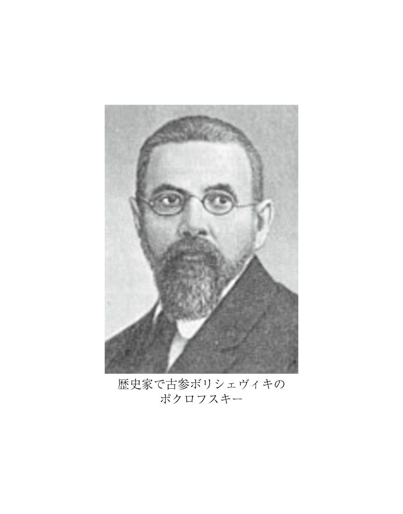
一九二四～二五年にはラデックはまだ、一九一六年におけるブハーリンの立場を私の立場と同一視しながら、その思想的思い出に囚われていたようだ。レーニンの著作をざっと研究した結果、当然ながらこうした立場の見込みのなさに幻滅したラデックは、このような場合にはよくあるように、私の頭上で一八〇度旋回したのだ。
以上の説明は大いにありうるものであると思われる。というのも、それは典型的なパターンだからである。たとえば、ブハーリンは一九二三～二五年に完全に引っ繰り返ったが、すなわち極左から日和見主義者へと転換したが、その後彼は絶えず自分自身のかつての思想を私になすりつけて、それを「トロツキズム」だと称した。私に対する攻撃カンパニアが始まった最初の時期、私はまだ時おりブハーリンの論文を読まざるをえなかったのだが、その際、「いったい彼はこのようなものをどこから仕入れてくるのか」とよく自問したものだ。しかしやがて、実はブハーリンが昨日の自分の日記帳を見て言っているのだということに気づいた。そしてラデックが永続革命のパウロから永続革命のサウロ（37）へと回心した裏には、これと同じ心理的背景があるのではないかと思っている。この仮説に固執しようとは思わないが、他に説明が見当たらないのだ。
＊ ＊ ＊
だがいずれにせよ、フランスの慣用句で言うように、「酒ビンを開けたら最後まで飲み干すべし」［毒を食らわば皿まで］だ。われわれは古い引用文の世界に長い旅をすることを余儀なくされている。私はその数をできるだけ少なくしたが、それでもなお多い。自分に押しつけられた古い引用文のこの入念な検討作業から、常に、現代の差し迫った諸問題へとつながる糸をたぐろうと努力している。これがせめてもの弁明理由になることを望みたい。
訳注
（１）レーニン「一九一七年二月一七日付コロンタイへの手紙」、邦訳『レーニン全集』第三五巻、大月書店、三〇三頁。この手紙の中でレーニンは、トロツキーがニューヨークの『ノーヴィ・ミール（新世界）』紙で右派とブロックを結んだというコロンタイの偽情報を信じて、トロツキーを罵っている。 （本文に戻る）
（２）同じ手紙の中でレーニンは「ブハーリンはカウツキーよりはるかにましですが、しかしブハーリンの誤りはカウツキー主義と闘う上でこの『正しい仕事』を損なう恐れがあります」と述べている（同前、三〇四頁）。 （本文に戻る）
（３）スターリンの『レーニン主義の諸問題』は一九二六年に出版。その主要部分は、一九二四年四～五月に発表された「レーニン主義の基礎について」である。邦訳にはいろいろな版があるが、大月書店発行の『スターリン全集』第六巻に収録されている。 （本文に戻る）
（４）番号のついた俗悪さの集積......スターリンの「レーニン主義の基礎について」をはじめ、スターリンはレーニン主義について論じるのに、１、２、３......というように番号をつけて、レーニン主義の基本要素とか、レーニン主義の基本命題などと称して論述するという教科書的スタイルをとっている。 （本文に戻る）
（５）『レーニン主義』......ジノヴィエフの『レーニン主義』は一九二五年九月に出版されたが、その元になったのは一九二四年末に行なった講演である。邦訳は以下の通り（一九二六年出版の第三版の邦訳）。ジノヴィエフ『レーニン主義研究』、三一書房、一九七五年。 （本文に戻る）
（６）「私はここに立つ...が、違うようにも振るまうことができる」......このセリフは、一五二一年にマルティン・ルターが皇帝カール五世に召還されたときに語った有名な言葉、「私はここに立つ、そうする以外にできないからだ」をもじったもの。 （本文に戻る）
（７）トロツキー「総括と展望──革命とその推進力」、『わが第一革命』、現代思潮社、一九七〇年、所収。 （本文に戻る）
（８）トロツキー「われわれの意見の相違──一九〇五年、反動、革命の展望」、前掲『わが第一革命』所収。 （本文に戻る）
（９）『一月九日以前』......その主要部分は一九〇五年一月九日の「血の日曜日事件」以前に執筆されたが、メンシェヴィキの出版所がなかなか発行しようとせず、その間に「血の日曜日事件」が起こった。トロツキーはミュンヘンのパルヴスのもとに行って、有名な序文を書いてもらうとともに、パルヴスの尽力でようやく出版することができた。邦訳は、前掲『わが第一革命』に所収。 （本文に戻る）
（10）パルヴスの序文......当時、ロシア・マルクス主義者に大きな衝撃を与えるとともに、後にトロツキーの永続革命論へ結びつくことになった有名な序文。パルヴスは、一月九日の事件を分析する中で、今回の革命において革命側が勝利すればそれは、この革命を主導した勢力、すなわちロシア社会民主党を政権に就け、労働者政府を可能にするだろうとの大胆な予言を行なった。邦訳は、前掲『わが第一革命』、およびトロツキー研究所発行の『ニューズ・レター』第四二号（二〇〇六年）。 （本文に戻る）
（11）パルヴスの宣伝ビラ......パルヴスがおそらく一九〇五年の春か夏ごろに国外で執筆し、ロシアの労働者に直接訴えた宣伝ビラ。その中でパルヴスは次のように書いている──「労働者人民の任務は帝政を一掃することだけではない。自らが権力を握ることもその任務なのだ。（......）政治的諸権利と労働者政府が必要なのだ。政治的体制転覆を遂行する労働者の革命軍によって任命された政府が必要だ。労働者階級を代表するこの政府は人民による支配＝民主主義を強化することを任務とするだろう。（......）労働者よ、革命を組織せよ、革命のために自らを組織せよ。革命後の力をつくり出すために自らを組織せよ。君たちの利害はすべての勤労人民の利害である。君たちの利害の外には人民の収奪者の利害しかないのだ！ 革命万歳！ 労働者政府万歳！」（パルヴス「ツァーリではなく労働者政府を」、『ニューズ・レター』第一三号、一九九五年、一二頁）。 （本文に戻る）
（12）レーニン「わが革命におけるプロレタリアートの闘争目標」、邦訳『レーニン全集』第一五巻、三五七～三六一頁。 （本文に戻る）
（13）トロツキー『わが生涯』下、岩波文庫、二〇〇一年、四五四頁。 （本文に戻る）
（14）トロツキー「農民たち、われわれの言葉を諸君に！」、前掲『わが第一革命』所収。 （本文に戻る）
（15）『ノーヴァヤ・ジーズニ（新生活）』......一九〇五年一〇月二七日から一二月三日までペテルブルクで合法的に発行されていたボリシェヴィキの日刊紙。レーニンが亡命地からペテルブルクに帰還して以降、レーニンの指導のもとに発行された。ツァーリ政府による弾圧によって一二月初頭に発行不可能となった。 （本文に戻る）
（16）『ナチャーロ（始まり）』......一九〇五年一一月一三日から一二月二日までペテルブルクで発行されていたロシア社会民主労働党の機関紙。トロツキーとパルヴスが指導し、トロツキーはこの中で永続革命論を展開した。 （本文に戻る）
（17）トロツキー「社会民主党と革命」、前掲『わが第一革命』所収。 （本文に戻る）
（18）憲法制定議会をめぐる戦術パンフレット......このパンフレットには、「憲法制定議会のための闘争におけるわれわれの戦術」と「革命とその力」という二つの論文が収録されていた。前者は、前掲『わが第一革命』に邦訳が収録され、後者は『トロツキー研究』第四七号（二〇〇五年）に訳載。 （本文に戻る）
（19）ロンドン党大会......一九〇七年四月三〇日から五月一九日（旧暦）までロンドンで開催されたロシア社会民主労働党の第五回大会のこと。この大会で最も焦点となったのはブルジョア政党に対する態度の問題であり、この問題では、ボリシェヴィキ、トロツキー、ポーランド社会民主党などが基本的に同じ立場に立ってメンシェヴィキに対抗した。 （本文に戻る）
（20）レーニン「ブルジョア政党に対する態度についての報告の結語」、邦訳『レーニン全集』第一二巻、四八二頁。レーニンのこの発言については、本書の第四章でトロツキー自身が引用している。 （本文に戻る）
（21）レーニン『民主主義革命における社会民主党の二つの戦略』、邦訳『レーニン全集』第九巻、一六～一七頁。 （本文に戻る）
（22）十月革命におけるジノヴィエフの行動......ジノヴィエフは十月蜂起の直前にカーメネフとともに蜂起に反対する声明をゴーリキーの新聞に発表し、レーニンから「スト破り」として糾弾された。 （本文に戻る）
（23）邦訳はスターリン「トロツキー主義かレーニン主義か」、『スターリン全集』第六巻、大月書店、三五四～三五五頁。 （本文に戻る）
（24）『一九〇五年』......一九〇五年の第一次ロシア革命をドキュメンタリータッチで活写した名著『一九〇五年』は最初、『ロシアにおける革命』という表題でドイツ語で一九〇九年に出版された。この著作はその後、他の諸論文およびトロツキーのロシア語版序文を入れた形で一九二二年にロシア語で再刊され、その際、表題が『一九〇五年』に変えられた。邦訳は、『一九〇五年』、現代思潮社、一九六九年。 （本文に戻る）
（25）前掲『わが第一革命』の四七六頁にこの注が訳出されている。 （本文に戻る）
（26）『十月革命』......一九一八年の内戦中に出版されたロシア革命史の概説書。邦訳はトロツキー『ロシア革命──「一〇月」からブレスト講和まで』、柘植書房、一九九五年。 （本文に戻る）
（27）トロツキー「コミンテルン第七回拡大執行委員会総会における演説」、『社会主義へか資本主義へか』、大村書店、一一八～一一九頁。コミンテルンの第七回拡大執行委員会総会は一九二六年一一月二二日から一二月一六日まで開催され、そこにおいてトロツキーら反対派を社会民主主義的偏向だと非難する決議が採択された。 （本文に戻る）
（28）トロツキーが一九一五年後半に『ナーシェ・スローヴォ（われわれの言葉）』に発表した論文、「軍事的危機と政治的展望」と「権力のための闘争」（原題は「根本問題」）のこと。どちらも『トロツキー研究』第四九号（二〇〇六年）に訳載。 （本文に戻る）（第三章訳注15に戻る）
（29）これは一九一七年四月におけるレーニンの次のような主張を念頭に置いている。──「労働者・兵士ソヴィエトのように、農民がブルジョアジーに結びつく可能性にわれわれは備えておかなければならない」（レーニン「ロシア社会民主労働党（ボ）ペトログラード全市協議会」、邦訳『レーニン全集』第二四巻、一三四頁）、「だからこそ、現在プロレタリア党が農民との利益の共通性に期待をかけることは許されない。われわれは、農民をわれわれの味方にするために闘うが、農民は、ある程度までは意識的に資本家の味方になっているのである」（レーニン「ロシア社会民主労働党（ボ）第七回（四月）全国協議会」、同前、二三五頁）。 （本文に戻る）
（30）レーニン「調停主義者、すなわち道徳的な人々の新しい分派について」、邦訳『レーニン全集』第一七巻、二六三頁。 （本文に戻る）
（31）スターリン「『わが党内の社会民主主義的偏向について』の報告の結語」、邦訳『スターリン全集』第八巻、三八〇頁。 （本文に戻る）
（32）粗暴かつ不実......レーニンは、病床から同志たちに宛てた手紙の中でスターリンを「粗暴かつ不実」であると特徴づけ、書記長の職を解くよう要求した。 （本文に戻る）
（33）レーニン「イタリア、フランス、ドイツの共産主義者へのあいさつ」、邦訳『レーニン全集』第三〇巻、四四頁。 （本文に戻る）
（34）ローザ・ルクセンブルクは獄中で執筆したロシア十月革命に関する覚書の中で、ボリシェヴィキ政府による土地政策（地主の土地の没収と農民への分配）を農業の社会主義的改造に反するものだと批判している。ローザ・ルクセンブルク『ロシア革命論』、論創社、一九八五年、一八～二〇頁。 （本文に戻る）
（35）『記念集』......十月革命の一〇周年を記念して一九二七年に出版された著作のこと。ここに一九一七年のボリシェヴィキ・ペテルブルク委員会の議事録がすべて収められることになっており、この一一月一日の議事録も収録される予定だったが、直前になって上からの指令で取り除かれた。 （本文に戻る）
（36）レーニン「ボリシェヴィキ・ペテルブルク委員会会議における演説」、『トロツキー研究』第三二・三三号（二〇〇〇年）、一八二頁。 （本文に戻る）
（37）サウロ......パウロがキリスト教の忠実な使徒に回心する以前の名前。サウロと呼ばれていた頃にはキリスト教を迫害していたが、ある日、キリストが自分に呼びかける声を聞いて回心した。 （本文に戻る）
ラデックは次のように書いている。
「永続革命」の理論と戦術（注意、戦術もだ！ トロツキー）と呼ばれる一連の思想をレーニンの理論から区別する基本的特徴は、ブルジョア革命の段階と社会主義革命の段階との混同にある。
この基本的告発と結びついて、あるいはその結果として、別の同じぐらい重大な告発が生じてくる。トロツキーは「ロシアの状況にあっては、社会主義革命は民主主義革命から成長してくることなしには不可能だ」ということを理解せず、このことから「民主主義独裁の段階の飛び越え」という結論が生じた。トロツキーは農民の役割を「否定する」が、この点で「トロツキーとメンシェヴィキの見解は共通」していた。以上のことから、すでに述べたように、状況証拠の積み重ねによって、中国革命の根本問題における私の立場の誤りが証明されるにちがいない、というわけだ。
もちろん、形式的・文献的な面では、ラデックはここかしこでレーニンを引用することができる。そして彼は実際にそうしている。このような引用箇所なら誰の「手元に」もあるからだ。しかし、私が以下に示すように、私に関するこれらのレーニンの主張は、純粋にエピソード的な性格のものであり、しかも正しくない。すなわち、それはいささかも、一九〇五年における私の実際の立場を特徴づけるものではない。同じレーニンによるものの中には、革命の根本問題に関する私の立場について、まったく異なった、正反対の、そしてはるかに根拠のある評価を下しているものがいくつも存在する。ラデックは、レーニンのまったく異なった、時には正反対でさえある諸評価を集めて相互に照らし合わせようとさえしなかったし、私の実際の見解と対比することによってこれらの評価の論争上の矛盾を解明しようともしなかった（＊）。
＊原注 コミンテルン第八回拡大執行委員会総会（１）で、現在ラデックが持ち出しているのと同じ引用文をブハーリンが持ち出したとき、私は「しかし、レーニンにはまったく正反対の引用文もある」と席から叫んだことを覚えている。ブハーリンはしばらく困惑したのち、「わかってる、わかってる。だが、私は自分に必要な引用をしたのであって、君に必要な引用をしたのではない」と答えた。これが、この理論家の精一杯の機知であった！ （本文に戻る）
一九〇六年、レーニンは、「ロシア革命の推進力」に関するカウツキーの論文（２）を自らの序文つきで出版した。私はこのことをまったく知らずに、自分も獄中で同じカウツキーの論文を翻訳して、それに序文をつけ、『党の擁護（３）』という自分の著書に収録した。レーニンも私もカウツキーの分析に対する完全な同意を表明した。わが国の革命はブルジョア革命か社会主義革命かというプレハーノフの質問に対して、カウツキーは、それはもはやブルジョア革命ではないが、まだ社会主義革命でもない、すなわち、それは一方から他方への過渡的形態を現わしているという趣旨の回答をした。この点についてレーニンは序文の中で次のように書いている。
わが国の革命は、その一般的性格からみて、ブルジョア革命なのか、それとも社会主義革命なのか？ これは古い紋切り型である、とカウツキーは言う。問題をこういうふうに立ててはならない、それはマルクス主義的ではない。ロシアにおける革命はブルジョア革命ではない。なぜならブルジョアジーは、現在におけるロシア革命運動の推進力を構成してはいないからである。だがロシア革命は社会主義革命でもない（４）。（第八巻、八二頁）
しかし、当時レーニンが書いたものの中には、この序文の後にも先にも、ロシア革命を無条件にブルジョア革命と呼んでいる文言が少なからず見られる。これは矛盾だろうか？ もし現在の「トロツキズム」批判者の手法にのっとってレーニンにアプローチするならば、レーニンの発言のうちにこのような矛盾を難なく何十、何百と見つけ出すことができるだろう。しかし、真面目で良心的な読者にとっては、それは異なった時期における異なったアプローチの仕方として説明されうるのであって、けっしてレーニンの認識の基本的な統一性を破壊するものではない。
他方では、私も、革命の当面する歴史的課題という意味において革命のブルジョア的性格を否定したことは一度もないのであって、ただその推進力とその展望という意味において否定しただけであった。当時（一九〇五～〇六年）における永続革命に関する私の基本文献は次のような一節で始まっている。
ロシアの革命は社会民主党を除くすべての人々にとって予期せざるものであった。マルクス主義は、かなり以前からロシア革命の不可避性を予言していた。ロシア革命は、資本主義的発展の力と沈滞した絶対主義の力との衝突の結果として、勃発せざるをえなかった。（......）それをブルジョア革命と呼ぶことによって、マルクス主義は、革命の直接的な客観的課題が全体としてのブルジョア社会の発展のための「正常な」条件を創出することにあることを指摘していた。マルクス主義の正しさは明らかになった──そして、もはやこのことを言い争ったり証明したりする必要はない。マルクス主義者の前にあるのは、まったく別種の課題である。すなわち、発展しつつある革命の内的力学を分析することによって、その「可能性」を明らかにすることである。（......）ロシア革命はまったく独特な性格を有している。この独特な性格は、わが国における社会的・歴史的発展全体の特珠性の結果であるが、それはそれで、まったく新しい歴史的展望を切り開くものでもある（５）。（『われわれの革命』、一九〇六年、「総括と展望」、二二四頁）
ブルジョア革命という一般的な社会学的規定は、当該ブルジョア革命の力学によって提起される政治的・戦術的諸課題、諸矛盾、諸困難を解決するものではけっしてない（６）。（同前、二四九頁）
このように、私は、当面する革命のブルジョア的性格を否定したり、民主主義と社会主義とを混同したりはしていなかった。しかし、わが国ではブルジョア革命の階級的弁証法がプロレタリアートを権力の座に就けるであろうこと、また、プロレタリアートの独裁なしには民主主義的課題さえ解決されえないであろうことを証明した。
同じ論文（一九〇五～〇六年）で次のように述べられている。
プロレタリアートは資本主義の成長とともに成長し、強固になる。この意味で資本主義の発展は、独裁に向けてのプロレタリアートの発展である。しかし、権力が労働者階級の手中に移行する日時は、生産力の水準に直接依存しているのではなく、階級闘争の諸関係や国際情勢に、さらには、伝統やイニシアチブ、闘争準備といった一連の主体的契機にも依存している...。
経済的により後進的な国のプロレタリアートが資本主義的に先進的な諸国よりも早く権力に就くことは可能である。（......）プロレタリア独裁を国の技術的な力と手段に何か自動的な形で依存させるような考え方は、極端なまでに単純化された「経済主義的」唯物論の偏見である。このような見解はマルクス主義といかなる共通性もない。
ロシア革命は、われわれの見解では、ブルジョア自由主義派の政治家たちがその国家統治能力を全面的に発展させる可能性を得る以前に、権力がプロレタリアートの手に移行しうる（革命が勝利する場合には移行するにちがいない）ような条件をつくり出している（７）。（同前、二四五頁）
これらの文章は、俗流「マルクス主義」に対する論争を含んでいる。この種の「マルクス主義」は一九〇五～〇六年に支配的であっただけでなく、レーニン到着前の一九一七年のボリシェヴィキ三月会議の基調を定め、一九一七年の四月協議会ではルイコフによって最も明瞭な形で表明された。コミンテルン第六回大会において、この似非マルクス主義──すなわち、スコラ哲学によってすっかり損なわれた俗物の常識──は、クーシネンやその他大勢の者たちの演説の「科学的」基盤をなした。しかもこれは十月革命から一〇年も後のことなのだ！
「総括と展望」における思想の歩み全体をここで記述することはできないので、『ナチャーロ』紙に掲載された私の論文（一九〇五年）からより要約的な一節を引用しておこう。
わが国の自由主義ブルジョアジーは、革命が最高潮に達するずっと以前に、反革命的に行動している。わが国のインテリゲンツィア民主主義派は、危機的瞬間に際会するたびにその無力さをさらけ出すだけである。農民は全体として自然発生的な反乱勢力である。彼らを革命に奉仕させることができるのは、自己の手中に国家権力を掌握する勢力のみである。（......）
革命闘争における労働者階級の前衛的地位、彼らと革命的農村とのあいだで直接形成されつつある結びつき、軍隊を感化して自己に従わせる力──これらすべてが労働者階級を不可避的に権力へと押しやる。革命の完全な勝利は、プロレタリアートの勝利を意味する。そしてプロレタリアートの勝利は革命のさらなる連続性を意味する（８）。（『われわれの革命』、一七二～一七三頁）
このように、プロレタリアート独裁の展望はここでは──ラデックが書いていることとは反対に──まさにブルジョア民主主義革命から成長してくるものとして描き出されている。だからこそ、革命は「永続的（連続的）」と呼ばれているのである。しかし、プロレタリアートの独裁は──ラデックの考えるところとは違って──民主主義革命が完成された後に現われるのではない。もしそうなら［プロレタリア独裁の成立以前に民主主義革命が完成されるとしたら］、そもそもプロレタリア独裁はロシアでは不可能だったろう。なぜなら、後進国では、もし農民解放の課題がプロレタリア独裁に先立つ段階で解決されたならば、住民の中の少数部分でしかないプロレタリアートは権力を獲得することができないからである。いや、プロレタリアートの独裁がブルジョア革命にもとづいて可能であるだけでなく不可避でさえあると考えられたのはまさに、農地革命の課題を解決すべき他のいかなる勢力も他のいかなる手段も存在しなかったからこそなのである。だが、まさにこのことによって、民主主義革命が社会主義革命に成長転化する展望も切り開かれたのだ。
無力な人質としてではなく、指導的な勢力として政府に参加する以上、プロレタリアートの代表はまさにそのことによって、最小限綱領と最大限綱領との境界を突破しているのであり、すなわち、集産主義を日程にのせているのである。この方向においてプロレタリアートがどの地点で押しとどめられるのかは、力関係に依存するのであって、けっしてプロレタリアートの党の当初の意図に依存するのではない。
まさにそれゆえ、ブルジョア革命におけるプロレタリア独裁の何らかの特殊形態、すなわちプロレタリアートの（あるいはプロレタリアートと農民の）民主主義独裁のようなものは、問題になりえないのである。労働者階級は、自らの民主主義綱領の枠を乗り越えずには、自らの独裁の民主主義的性格を保証することもできないであろう。（......）
プロレタリアートの党は、ひとたび権力を掌握したなら、最後までこの権力のために闘うであろう。権力を維持し強化するためのこの闘争の一つの手段は煽動と組織化、とりわけ農村におけるそれであり、もう一つの手段は集産主義の綱領である。集産主義は、権力党としての地位から不可避的に出てくる帰結であるだけでなく、この地位をプロレタリアートに依拠しつつ維持する手段でもある（９）。（「総括と展望」、二五八頁）
さらに、私は、一九〇八年にメンシェヴィキのチェレヴァーニンを批判した論文の中で、こう書いている。
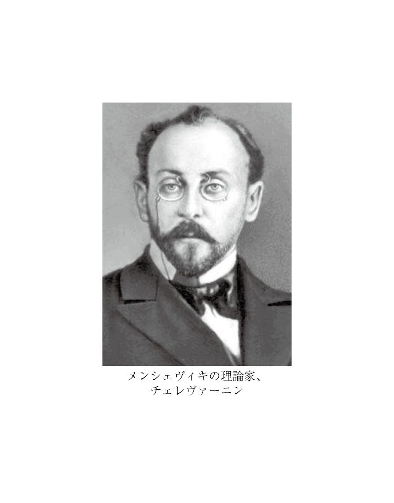
勝利したサンキュロットの恐怖政治的独裁によって資本主義ブルジョアジーの支配のための諸条件が準備された、革命の古典的実例をわれわれは知っている。それは、都市住民の主要部分が職人と商人の小市民層で構成されていた時代のことであった。この層を率いたのがジャコバン派だった。今日、ロシアにおける都市住民の主要部分を構成しているのは、工業プロレタリアートである。すでにこのアナロジー一つとっただけでも、「ブルジョア」革命の勝利がプロレタリアートによる革命権力の獲得によってはじめて可能になるような歴史的状況の可能性が示唆されている。そのことによって革命はブルジョア的であることをやめるだろうか？ しかりでもあり、否でもある。これは形式的な定義に依存しているのではなく、諸事件の今後の発展に依存している。もしプロレタリアートが、自らが解放した農民を含むブルジョア諸階級の連合によって打倒されるならば、その時、革命はその制限されたブルジョア的性格を保持するだろう。だが、もしプロレタリアートが、ロシア革命の一国的枠を突破するために、その政治的支配の全手段を行使することが可能であり、あえてそうするならば、その時には、ロシア革命は世界的な社会主義的大変革への序幕となることができるだろう。
ロシア革命がいかなる段階にまで到達しうるかという問題に対しては、もちろん、条件つきの回答しかできない。だが、一つのことだけは絶対に疑いない。ロシア革命をブルジョア革命とする抽象的な定義は、その内的な発展形態について何も語らないに等しいのであり、またそれはけっして、プロレタリアートが、国家権力の唯一の合法的請求権者を自称するブルジョア民主主義派の行動に自己の戦術を適応させなければならないということを意味するものではない（10）。（Ｌ・トロツキー『一九〇五年』、ロシア語版、二六三頁）
さらに同じ論文から。
わが国の革命は、その原因となった直接的な課題からすればブルジョア革命であるが、都市の商工業住民における極端な階級分化のせいで、自己の社会的重みとその政治的経験とを人民の革命的エネルギーに結びつけることによって人民大衆の先頭に立つことができるようなブルジョア階級が存在しない。自らの力以外に頼るべき手段をもたない抑圧された労働者・農民大衆は、容赦のない闘争と過酷な敗北という峻厳な学校の中で、自分たちの勝利のために必要な政治的・組織的前提条件をつくり出していかなければならない。彼らに他の道は存在しない（11）。（Ｌ・トロツキー『一九〇五年』、二六七～二六八頁）
最も激しく砲火にさらされている農民問題に関して、「総括と展望」からもう一つ引用しておかなければならない。「権力に就いたプロレタリアートと、農民」という特別の一章では、次のように語られている。
プロレタリアートは、革命の基盤を拡大することなしには自らの権力を打ち固めることはできない。
勤労大衆の多くの諸階層、とりわけ農村における諸階層は、革命の前衛たる都市プロレタリアートが国家の舵をとった後ではじめて革命に引き込まれ、政治的に組織されるであろう。革命的煽動や組織化は、国家的手段の助けを借りて遂行されるであろう。さらにまた、立法権力そのものが人民大衆の革命化を促進するための強力な手段となろう。（......）
農民──階層としてのすべての農民とさえ言ってよい──の最も初歩的な革命的利益の運命は、革命全体の運命に、すなわちプロレタリアートの運命に結びついている。
権力に就いたプロレタリアートは、農民の前に、彼らを解放する階級として登場するであろう。
プロレタリアートの支配は、民主主義的平等、自由な自治、すべての租税負担を有産階級に転嫁すること、常備軍を武装人民に溶解させること、義務的な教会募金を廃止することなどを意味するだけでなく、農民によって実行された、土地関係におけるすべての革命的再編（地主の土地収奪）を承認することをも意味するであろう。プロレタリアートは、この再編を農業分野における今後の国家的措置の出発点にするであろう。
かかる状況のもとでは、ロシアの農民は、少なくとも最初の最も困難な時期にプロレタリア体制（......）を支持することに利益を有するであろう。それは、フランスの農民が、新しい所有者たる自分たちに分与地の不可侵性を銃剣の力で保障してくれたナポレオン・ボナパルトの軍事体制を支持することに利益を有していたことに優るとも劣らないであろう。（......）
しかし、もしかすると、農民自身がプロレタリアートを押しのけて、自らその地位を占めるのではあるまいか？
これは不可能である。すべての歴史的経験がそうした予想に反駁している。歴史的経験は、農民が独立した政治的役割を担う能力を完全に欠いていることを示している（12）。（二五一～二五二頁）
以上の文言は一九二九年や一九二四年に書かれたものでなく、一九〇五年に書かれたものである。これがどうして「農民の無視」に見えるのかぜひとも知りたいものだ。ここのどこに農業問題の「飛び越え」があるのか？ 友人諸君、そろそろ良心に目覚めてもいい頃ではないのか。
では、スターリンの場合、まさにこの「良心」がどうなっているかを見てみよう。一九一七年の二月革命に関して私がニューヨークで執筆した諸論文（13）はそのあらゆる基本点で、レーニンがジュネーヴで執筆した諸論文と一致しているが、これについてこの党内反動の理論家は次のように述べている。
同志トロツキーの手紙は、その精神においてもその結論においてもレーニンの手紙とは「似ても似つかない」。なぜなら、それらの手紙は、同志トロツキーの反ボリシェヴィキ的スローガン──「ツァーリではなく労働者政府を」、すなわち農民ぬきの革命を意味しているスローガンを完全かつ全面的に反映しているからである（14）。（全ソ労働組合中央評議会フラクション会議における演説、一九二四年一一月一九日）
「ツァーリではなく労働者政府を」が「反ボリシェヴィキ的」スローガン（トロツキーのものだという）だとする以上の言葉は、実に奇妙に聞こえる。スターリンによれば、どうやらボリシェヴィキのスローガンは、「労働者政府ではなくツァーリとともに」というものでなければならないらしい。だが、トロツキーのものだとされているこの「スローガン」については、もっと後で論じよう。ここでは、現代のもう一人の人心支配者とでも言うべき人物、もう少し学はあるが、理論的良心を完全に捨ててしまった人物の言うことに耳を傾けよう。私はルナチャルスキーのことを言っている。
一九〇五年にレフ・ダヴィドヴィチ・トロツキーは次のような考えに傾いていた。すなわち、プロレタリアートは孤立していなければならない（！）し、ブルジョアジーを支持してはならない。なぜなら、そんなことをすれば日和見主義になるからだ。しかし、プロレタリアートだけで革命を遂行することはきわめて困難である。なぜなら、当時プロレタリアートは全人口のわずか七～八％にすぎず、そのような少数の担い手では闘争を最後まで遂行することはできないからである。かくして、レフ・ダヴィドヴィチは、プロレタリアートはロシアにおいては永続革命を支持しなければならない、すなわち、できるかぎり大きな結果を追い求めて、この大火の火の粉が全世界の火薬庫を爆発させるまで闘争を継続しなければならないとしたのである。（『ソヴィエト権力』第七号、一九二七年、Ａ・ルナチャルスキー「十月革命の性格規定によせて」、一〇頁）
火の粉が火薬庫を爆発させるまでプロレタリアートは「孤立していなければならない」...。自分たち自身の頭の「火の粉」で危険な状態になっているにもかかわらずいまだ「孤立」していない一部の人民委員たちは結構なことを書いているものだ。しかし、ルナチャルスキーをあまり厳しくとがめないようにしよう。誰しも自分になしうることをなす。結局のところ、彼のいいかげんなたわごとは他の多くの人々よりもひどいわけではないからである。
しかし、それにしても、どうしてトロツキーによればプロレタリアートは「孤立していなければならない」のか？ この点に関してストルーヴェを論じた私のパンフレット（一九〇六年）から一つ引用しておこう。当時、ルナチャルスキーはこのパンフレットに大袈裟な賛辞を送ったものである。労働者代表ソヴィエトに関する章の中で次のように書かれている。ブルジョア諸党が目覚めつつある大衆から「まったく分離していた」のに対して、
政治生活は労働者代表ソヴィエトを中心に展開されるようになった。ソヴィエトに対する都市の小市民大衆の態度は、あまり自覚的なものでなかったとはいえ、明らかに同情的であった。抑圧され虐げられた人々はことごとくソヴィエトに保護を求めた。ソヴィエトの人気は都市の範囲を越えて遠くまで広がっていった。ソヴィエトは虐げられた農民から「嘆願」を受け、農民の決議がソヴィエトに殺到し、農村共同体の代表がソヴィエトに参加した。まさにここに、国民の──偽りではなく真の民主主義的国民の──注意と同情とが集中された（15）。（『われわれの革命』、一九九頁）
このように、これらすべての引用文において──その数は容易に二倍にも三倍にも、あるいは一〇倍にも増やすことができる──永続革命は、ソヴィエトに組織されたプロレタリアートの周囲に農村と都市の被抑圧大衆を団結させる革命として描き出されており、またプロレタリアートを権力にまで高め、それによって民主主義革命を社会主義革命に成長転化させる可能性を切り開く国民革命として描き出されている。永続革命はプロレタリアートの孤立した飛躍ではなく、プロレタリアートの指導下での国民全体の刷新なのである。一九〇五年以来、私は永続革命の展望をこのように考えてきたし、このように解釈してきたのである。
＊ ＊ ＊
ラデックは、ツァーリの政府から社会民主主義政府へのパルヴス（＊）の「飛躍」について紋切り調のフレーズを繰り返しているが、このパルヴス──一九〇五年のロシア革命に関する私の見解は彼の見解に非常に近かったが、同じではなかった──に関しても彼は誤っている。ラデックは、自分の論文の別の箇所では、革命に対する私の見解がパルヴスの見解とどの点で異なっていたのかを、ことのついでにではあるがまったく正しく指摘しているのだから、彼は事実上、自分自身に反駁しているわけである。
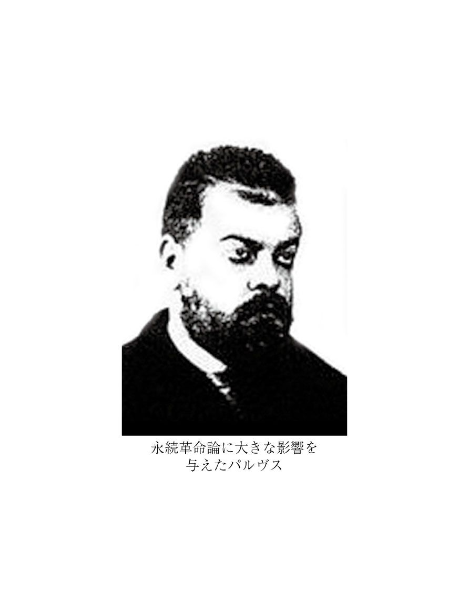
＊原注 指摘しておかなければならないが、当時パルヴスは国際マルクス主義の最左翼であった。 （本文に戻る）
パルヴスは、ロシアにおける労働者政府が社会主義革命の方向に活路を見出すことができるとは、すなわち、民主主義の諸課題を達成してゆく過程で社会主義的独裁へと成長転化することができるとは考えていなかった。ラデック自身が引用している一九〇五年の一節（16）に示されているように、パルヴスは労働者政府の課題を民主主義の諸課題に限定した。だとすれば社会主義への飛躍なるものはいったいどこにあるのか？ パルヴスが当時から念頭に置いていたのは、革命的変革の結果として「オーストラリア」型の労働者政府を樹立することであった。パルヴスは、彼自身がとっくに社会改良主義の最右翼の立場に立っていた十月革命後においても、ロシアとオーストラリアとを比較している。この点に関してブハーリンは、パルヴスが永続革命に関する自らの過去の罪を隠蔽するために後になってからオーストラリアの例を「思いついた」のだと主張した。だがそうではない。一九〇五年の時点ですでにパルヴスは、プロレタリアートによる権力の獲得のうちに社会主義への道ではなく、民主主義への道を見出していたのだ。すなわち、パルヴスはプロレタリアートに、彼らが十月革命の最初の八～一〇ヵ月のあいだに実際に果たした役割しか与えなかった。さらにその後の展望としては、パルヴスは当時から、この時期に存在していたオーストラリア民主主義の体制を指し示していた。すなわち、労働党が統治すれど支配せず、ブルジョアジーの綱領の単なる補完物として改良主義的諸要求を遂行していた体制である。
運命の皮肉だが、一九二三～一九二八年における右派＝中間派ブロックの基本的傾向はまさに、プロレタリアートの独裁をオーストラリア型の労働者民主主義に、すなわちパルヴスの予測に近づけることであった。二、三〇年前にロシアの小ブルジョア「社会主義者」たちがたえずロシアの新聞で、オーストラリアは労働者と農民の国であり、高い関税で外の世界から守られ、「社会主義的」立法を発展させ、こうして一国社会主義を建設しつつあると書き立てていたことを想起するならば、このことはとりわけ明瞭になるだろう。もしラデックが、トロツキーによる「民主主義の空想的飛び越え」なる作り話を繰り返すのではなく、問題のこの側面を前に押し出していたなら、正しく行動したことになったであろう。
訳注
（１）コミンテルン第八回拡大執行委員会総会......中国革命の敗北、英ソの国交断絶という国際情勢の重大変化を受けて、一九二七年五月一八日から三〇日まで開催され、中国におけるコミンテルンの指導は正しかったと確認された。 （本文に戻る）
（２）カウツキー「ロシア革命の推進力と展望」、山本統敏編『第二インターの革命論争』、紀伊國屋書店、一九七五年。 （本文に戻る）
（３）『党の擁護』......一九〇七年初頭に出版されたトロツキーの論文集。その一部は『トロツキー研究』第一八号（一九九六年）および『トロツキー研究』第三六号（二〇〇一年）に訳出。この著作の末尾には、「カウツキーのロシア革命論」と題して、カウツキーの論文の抄訳とトロツキー自身の見解が掲載されている。 （本文に戻る）
（４）レーニン「小冊子『Ｋ・カウツキー著、ロシア革命の推進力と展望』のロシア語訳序文」、邦訳『レーニン全集』第一一巻、四二五頁。 （本文に戻る）
（５）トロツキー「総括と展望」、邦訳は前掲『わが第一革命』、二八八頁。 （本文に戻る）
（６）同前、三二三頁。 （本文に戻る）
（７）同前、三一八頁。 （本文に戻る）
（８）トロツキー「社会民主党と革命」、同前、二五九～二六〇頁。 （本文に戻る）
（９）トロツキー「総括と展望」、同前、三三六～三三七頁。 （本文に戻る）
（10）トロツキー「プロレタリアートとロシア革命」、同前、四一三～四一四頁。 （本文に戻る）
（11）同前、四一八頁。 （本文に戻る）
（12）トロツキー「総括と展望」、同前、三二七～三二八頁。 （本文に戻る）
（13）ニューヨークで執筆した諸論文......これらの論文の主要なものは『トロツキー研究』第五号（一九九二年）に訳出されている。 （本文に戻る）
（14）スターリン「トロツキー主義かレーニン主義か」、邦訳『スターリン全集』第六巻、三四九頁。 （本文に戻る）
（15）トロツキー「政治におけるピョートル・ストルーヴェ氏」、前掲『第二インターの革命論争』、二九一頁。 （本文に戻る）
（16）一九〇五年の文章......これは、パルヴスが一九〇五年の一一月二八日付『ナチャーロ』に書いた論文の次の一節を指している──「ロシアではブルジョア革命を社会主義革命に転化することがわれわれの任務とはまだ考えられない」（パルヴス「ロシア社会民主党の任務」、前掲『第二インターの革命論争』、二五一頁）。 （本文に戻る）
「永続」革命の見解とレーニンの見解との相違は、政治的には、「農民に依拠したプロレタリアートの独裁」というスローガンと「プロレタリアートと農民の民主主義独裁」というスローガンとの対立として現われた。争点になっていたのは、ブルジョア民主主義的段階を飛び越すことができるかどうかでも、労働者と農民の同盟が必要であるかどうかでもまったくなかった。争点になっていたのは、民主主義革命におけるプロレタリアートと農民の協力の政治力学がどのようなものになるのか、であった。
ラデックの言うところでは、レーニンはいっさいの問題を、客観的な歴史的課題のための二つの階級の協力ということに帰着させていたのだから、民主主義独裁という党内政治向けの表現の問題を前面に押し出すことができるのは「マルクス・レーニン主義の方法の複雑さを十分考えぬいていない」人々だけであるそうだ。だが、こうした言い草はあまりに尊大であり、もっと言えば軽率である。実際にはラデックの言うようなものではなかった。
革命の主体的要因、すなわち、諸政党とその綱領、今回の問題にあってはプロレタリアートと農民による協力の政治的・組織的形態だが、こうした要因がまったく脇に置かれるならば、同じ革命的翼の二つの色合いを反映しているレーニンと私とのあいだでの意見の相違のいっさいが消えてしまうだけではなく、もっと悪いことに、ボリシェヴィズムとメンシェヴィズムとの意見の相違も、さらには、一九〇五年のロシア革命と一八四八年の諸革命や一七八九年の革命との相違すら消えてしまうことになる。もっとも、一七八九年の革命に関してプロレタリアートについて語ることができるとすればの話だが。あらゆるブルジョア革命は都市と農村における被抑圧大衆の協力を基盤として行なわれた。まさにそのことが、程度の差はあれ、この革命に国民的性格を、すなわち、全人民的な性格を与えたのである。
理論的にも政治的にもわれわれのあいだで争点となっていたのは、労働者と農民との協力そのものをめぐってではなく、この協力の綱領的内実であり、それがどのような政党的形態をとり、どのような政治的方法を通じて実現されるのか、であった。古い諸革命にあっては、労働者と農民は、自由主義ブルジョアジーかあるいはその小ブルジョア民主主義的翼の指導のもとに「協力」した。中国の労働者と農民を、最初は民族自由主義的な蔣介石の、後には「民主主義的」な汪精衛の政治的指導に従属させるべく全力をつくしたコミンテルンは、古い革命の経験を新しい歴史的状況の中で繰り返したわけである。レーニンは、自由主義ブルジョアジーと非和解的に対立する労農同盟という問題を提起した。このような同盟は歴史上かつて存在したことがなかった。問題となったのは、都市と農村における被抑圧諸階級の協力に関する──その方法の点で──新しい経験であった。このことによって協力の政治的形態という問題が新たに提起されたのである。ラデックはこの点をあっさりと看過した。それゆえ彼は、永続革命の定式からだけでなく、レーニンの「民主主義独裁」の定式からさえもわれわれを後退させて、空虚な歴史的抽象へと逆戻りさせたのである。
たしかに、レーニンは何年ものあいだ、プロレタリアートと農民の民主主義独裁がどのような政党的・国家的組織形態をとるのかという問題をあらかじめ決定することを拒否し、自由主義ブルジョアジーとの連合に対立する形でこれら二つの階級の協力を前面に押し出した。レーニンはこう述べた。一定の歴史的段階においては、客観的な情勢全体の中から不可避的に、民主主義革命の諸課題を解決するための労働者階級と農民との革命的同盟が生まれてくるだろう。農民が独立した党を結成することに成功するかどうか、この党が民主主義独裁の中で多数派となるのか少数派となるのか、革命政府の中でプロレタリアートの代表者がどれぐらいの比重を持つのか──これらすべての問題にアプリオリな回答を与えることはできない。「経験が示すだろう！」。こうして、民主主義独裁の定式は労農同盟の政治的構造の問題を半ば未回答のままに残したことで──ラデックのごとき空虚な抽象論に堕してしまうことはけっしてなかったとはいえ──、それでもやはりある一定の時期までは、将来にきわめて多義的な政治的解釈を許容する代数的定式として存続することになったのである。
とはいえレーニン自身、この問題が独裁の階級的土台とその客観的な歴史的目的に尽きるものだとはけっして考えていなかった。主体的諸要因──目的、意識的な方法、党──の持つ意義については、レーニンは十分理解していたし、このことをわれわれ全員に教えた。それゆえレーニンは自分のスローガンを説明する際には、史上初の［ブルジョアジーから］独立した労農同盟がいかなる政治的形態をとりうるのかという問題に対して、ごく大雑把で仮説的な回答を与えることをけっして拒否しなかった。しかし、この問題に対するレーニンのアプローチの仕方は時期によってさまざまで、およそ同一とは程遠いものだった。レーニンの思想は、ドグマ的にではなく歴史的に取り上げなければならない。レーニンはシナイ山から出来あいの戒律［モーゼの十戒のこと］を持ってきたのではなく、階級闘争の炉で思想とスローガンを鍛えたのである。彼はこれらのスローガンを現実に適応させ、具体化し、正確化した。そして、異なった時期に異なった内容をそこに盛り込んだ。にもかかわらずラデックは、問題のこの側面──それは後に決定的な性格を帯び、一九一七年初頭には、ボリシェヴィキ党を分裂の瀬戸際にまで追いやったのだが──をまったく研究しなかった。彼はただそれを素通りしたのである。
とはいえ、この二つの階級の同盟がどのような政党関係や政府形態上の表現をとりうるのかに関して、レーニンはさまざまな時期におよそ同一とは程遠い性格規定を与えたし、また党をこうした仮説的解釈で縛ることも差し控えたというのは事実である。このような慎重さの理由はどこにあったのか？ その理由は、この代数的定式のうちに、巨大な意義を持ちながら政治的には極度に不確定な一要素が含まれていたことである。農民がそれだ。
民主主義独裁に関するレーニンの解釈の例をいくつか引用しておこう。というのも、この問題に関するレーニンの思想における進化をまとまった形で特徴づけるためには、別の独立した著作が必要になるからである。
一九〇五年三月に、レーニンは、［民主主義］独裁の土台がプロレタリアートと農民になるだろうとの考えを展開しつつ、次のように書いている。
そして、可能でもあり望ましくもある革命的民主主義独裁の、社会的土台におけるこうした構成はもちろん、革命政府の構成に反映するであろうし、革命的民主主義派の実に種々雑多な代表者たちがこの政府に参加することを、またはその中で優勢を占めることさえ、不可避とするであろう（１）。（第六巻、ロシア語版、一三二頁、強調は引用者）
この一節の中でレーニンは、独裁の階級的土台を指摘しているだけでなく、その特定の政府形態において小ブルジョア民主主義派の代表者たちが優勢を占める可能性さえ想定している。
一九〇七年にレーニンはこう書いている。
紳士諸君、君たちが言っている「農民の農地革命」は、勝利を得るためには、そういうものとして、つまり農民革命として、全国家の中心権力とならなければならないのだ（２）。（第九巻、五三九頁）
この定式はさらに推し進めると、革命権力が直接に農民の手中に掌握されなければならないという意味にも解することができる。しかし他方では、発展の現実の歩みそのものによって生まれたより広い解釈によるなら、この同じ定式は、農民革命の「代理人」としてプロレタリアートを権力に導いた十月革命をも包含することができる。プロレタリアートと農民による民主主義独裁の定式に対する解釈として、これほど大きな振り幅が可能なのである。こうした代数的性格には──ある時点までは──一種の強みがあった。だが、そこには危険性もあるのであって、その危険性は、二月革命後にわが国で十分はっきりと暴露されたし、中国では破局にまで至った。
一九〇五年七月にレーニンはこう書いている。
誰も党による権力の奪取について語ってはいない──われわれはただできるだけ指導的に革命に参加することについて語っているだけである（３）...。（第六巻、二七八～二七九頁）
一九〇六年一二月、レーニンは党による権力獲得の問題についてカウツキーに同意することが可能だとみなした。
カウツキーは「革命の過程で勝利が社会民主党に帰する」ことが「大いにありうる」と考えているだけでなく、「勝利の確信を自分たちの支持者に吹きこむこと」は、社会民主主義者の義務でもあると言明している。なぜなら、「前もって勝利を拒否しては、首尾よく闘うことはできないからである（４）」。（第八巻、五八頁）
レーニン自身のこれら二つの解釈のあいだにある隔りは、私の定式化とレーニンの定式化とのあいだにある隔りに優るとも劣らぬものである。この点については、今後さらに明らかになるだろう。
ここでは、レーニンにおけるこのような矛盾が何を意味しているのかという問題を提起したい。それは、革命の政治的定式におけるあの同じ「大いなる未知数」を反映している。農民である。急進思想がかつてムジークをロシア史のスフィンクスと呼んだのも理由のないことではない。革命的独裁の本質という問題は、ラデックが望むと望まざるとにかかわらず、自由主義ブルジョアジーに敵対的でプロレタリアートから独立した革命的農民政党が可能かどうかという問題と不可分に結びついている。この問題の決定的意義を理解するのは難しいことではない。民主主義革命の時期に自己の独立した党を創設する能力が農民にあるとすれば、民主主義独裁は言葉の最も真実かつ直接的な意味において実現されることになり、革命政府へのプロレタリア的少数派の参加の問題は、たとえ重要であったとしても、従属的意味しか持たなくなるであろう。だが、農民が、その中間的地位と社会的構成の不均質さゆえに、独立した政策も独立した党も持ちえず、革命期においてはブルジョアジーの政策かプロレタリアートの政策かのどちらかを選ぶことを余儀なくされるということから出発するならば、事態はまったく異なった様相を呈する。農民の政治的本質のこのような評価だけが、民主主義革命から直接に成長してくるプロレタリアート独裁の展望を切り開くのである。
言うまでもなく、これはけっして農民の「否定」でも「無視」でも「過小評価」でもない。もし社会生活全体にとって農業問題が決定的意義を有していなかったとすれば、そしてもし農民革命がきわめて深刻で巨大な規模に達するようなものでなかったとすれば、そもそもロシアにおけるプロレタリア独裁など問題になりえなかったろう。しかし農地革命がプロレタリアート独裁にとっての条件をつくり出したという事実は、農民には自らの力で、また自らの指導のもとで、自己自身の歴史的問題を解決する能力がないということから生じているのである。このことは、現代のブルジョア諸国においては、後進国といえども、すでに資本主義的工業の時代に入っているかぎり、そして鉄道と電信によって全国が統一されているかぎり（このことはロシアのみならず中国やインドにもあてはまる）、農民が指導的な役割を──それどころか単に独立した政治的役割でさえ──果たすことは、過去のブルジョア革命の時代よりもずっと不可能になっている。
永続革命論の最も重要な要素の一つを構成しているこうした考えを、私があらゆる機会を捉えて執拗に強調したこと、このことが、農民の過小評価という私に対する非難の論拠になったのである。だがそれは、まったく根拠薄弱な、むしろ本質的にまったく何の根拠もない非難なのである。
農民政党の問題についてレーニンはどのように見ていただろうか？ だが、この問題に答えるためには、一九〇五～一九一七年の時期におけるレーニンのロシア革命論の変遷と発展を跡づける全面的な論文が必要になるだろう。ここでは二つの引用を挙げるにとどめよう。一九〇七年にレーニンはこう書いている。
小ブルジョアジーの政治的団結が客観的に困難であるために、このような［大衆的農民］政党を結成することができないで、農民民主主義派が長期にわたって、現在のような、ぶよぶよで、無定形で、ゼリー状のトルドヴィキ（＊）的な集塊状態にとどまることもありうる（５）。（第八巻、四九四頁）
＊原注 トルドヴィキとは、四つの国会の農民代表政党であり、常にカデット（自由主義派）と社会民主党とのあいだを動揺していた。 （本文に戻る）
一九〇九年に、レーニンは同じ問題に対して次のように異なった説明を与えている。
革命的独裁のような（......）高い発展段階にまで遂行された革命が、より明確な輪郭をもった、より強力な革命的農民政党をつくり出すであろうということに、いささかの疑問の余地もない。これと違ったふうに考えることは、人間が成人しても、いくつかの重要な器官が大きさ、形状、発達程度において子供の時のままでありうると考えるにも等しいだろう（６）。（第一一巻第一分冊、二三〇頁）
この予想は確証されたか？ いや、確証されなかった。しかし、まさにこうした予想ゆえにレーニンは、歴史によって完全な検証がなされるその瞬間まで、革命権力の問題に対して代数的な回答しか与えなかったのである。もちろんレーニンは、自分の仮説的定式を現実に優先させることはけっしてなかった。プロレタリア政党の独立した政策のための闘争は、彼の生涯の主要な内容を満たしていた。しかしながら、憐れなエピゴーネンは農民政党を追い求めて、中国の労働者を国民党に従属させ、「労農党」の名においてインドの共産主義を抑圧し、クレスティンテルン（７）［農民インターナショナル］という危険な虚構組織をつくり出し、反帝国主義同盟（８）なる仮面舞踏会をでっち上げる等々のことをしたのである。
現在の公式思想は、われわれが先に指摘したこのようなレーニンの諸矛盾──一部はただ外的で見せかけの矛盾にすぎず、一部は現実的なものであるが、常に問題そのものから生じている諸矛盾──について深く考える労さえとらない。わが国に「赤色」教授という独特な集団が生まれてからというもの──この「赤色」教授ときたら、かつての反動教授と違うのは、より確固たる背骨があることではさらさらなく、無知の程度がよりひどいことぐらいである──、レーニンは今やこれらの教授連中の好み通りに刈りこまれ、あらゆる矛盾が、すなわち、彼の思想のダイナミズムが取り除かれた上で、規格化された個々の引用句が何本もの細い糸に通されてまとめられ、「その時々の」必要に応じて、あれこれの「セット」が市場に出されるといった具合なのである。
だが一瞬たりとも忘れてはならないのは次のことである。一九〇五年に革命の諸問題が提起されたのは、いわば政治的に「処女」であった国においてであったこと、しかも［パリ・コミューン以来の］長い歴史的休止期の後、ヨーロッパおよび全世界における長い反動期の後であったこと、そしてそのことだけからしても、多くの未知の事柄を伴わないわけにはいかなかったことである。レーニンは、労働者と農民の民主主義独裁という定式のうちに、ロシアにおける社会的諸条件の独自性を表現した。彼はこの定式をさまざまな形で解釈したが、それを退けることはなく、ロシア革命の諸条件の独自性をとことんまで評価しきることもなかった。ではこの独自性はいったいどの点にあったのか？
他のすべての諸問題の基盤としての農業問題の、そして一般に農民問題の巨大な役割、大量の農民インテリゲンツィアおよび親農民派インテリゲンツィアの存在、彼らのナロードニキ的イデオロギーや「反資本主義的」伝統や革命的鍛錬──これらのことからして、そもそも反ブルジョア的な革命的農民政党がどこかで形成される可能性があるとしたら、それはロシアの地において以外にはなかった。
そして実際に、自由主義政党やプロレタリア政党とは異なる農民政党ないし労農政党を創設しようとして、ロシアでは、可能なあらゆる政治的パターンが試されてきた。地下政党、議会政党、あるいはその混合政党などである。たとえば、「土地と自由」派、「人民の意志」派、「黒い割替」派、合法的ナロードニキ主義、「社会革命党（エスエル）」、「人民社会党」、「トルドヴィキ」、「左翼社会革命党」等々、等々。半世紀もの長きにわたって、いわばロシアは、プロレタリアートの党に対して独立した立場をもった「反資本主義的」農民政党を創設する巨大な実験室であるかのようであった。その中で最も大きな規模に達したのは、周知のようにエスエル党の経験であって、この党は一九一七年には実際に一定期間、農民の圧倒的多数に支持される党となった。それでどうなったか？ エスエルは自分が手にしたこの地位を利用して、農民をまるごと自由主義ブルジョアジーに売りわたしただけであった。エスエルはさらに協商国の帝国主義者たちと同盟を結んで、ロシア・プロレタリアートに対して武力闘争を遂行した。
この真に古典的な経験が物語っているのは、農民を基盤とする小ブルジョア政党は、第二義的な問題が日程にのぼる歴史の「平日」においては、独立した政策の外観をまだしも維持することができるが、社会の革命的危機が所有をめぐる根本問題を日程にのせるやいなや、この小ブルジョア的「農民」政党は自動的にブルジョアジーの道具となってプロレタリアートに敵対するようになるということである。
私とレーニンとのかつての意見の相違を、あれこれの日付をもった引用文の断片でもって判断するのではなく、正しい歴史的展望の中で考察するならば、この論争が、少なくとも私の側からは、民主主義的課題の解決にとってプロレタリアートと農民の同盟が必要であるかどうかをめぐってなされたのではなく、プロレタリアートと農民の革命的協力がどのような政党的・国家的形態をとりうるのか、またそのことから革命の今後の発展にとってどのような帰結が生じるのかをめぐってなされていたことが、完全に明らかとなるだろう。もちろん、私はこの論争における自分の立場について語っているのであって、当時におけるブハーリンとラデックの立場について語っているのではない。それについては彼ら自身に答えさせよう。
「永続革命」の定式がいかにレーニンの定式に近く、それにぴったり接近していたかは、次のようなわかりやすい比較によって示すことができるだろう。一九〇五年の夏、すなわち、一〇月のゼネストやモスクワの一二月蜂起に先立つ時期に、私はラサールの『陪審裁判演説』への序文の中で次のように書いていた。
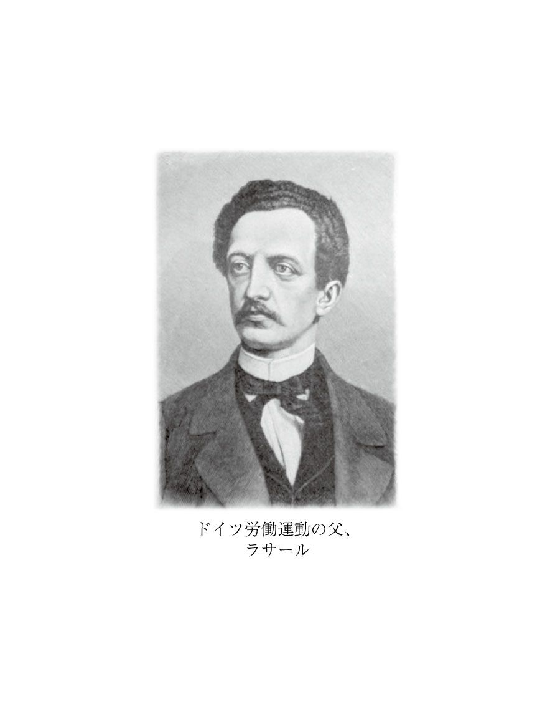
言うまでもなく、プロレタリアートは、かつてのブルジョアジーと同じように、農民と小ブルジョアジーに依拠しながら自らの使命を果たすだろう。彼らは農村を指導し、農村を運動に引き入れ、自らの計画の成功に関心を持たせるだろう。しかし、指導者として残るのは不可避的にプロレタリアート自身である。これは「農民とプロレタリアートの独裁」ではなく、農民に依拠したプロレタリアートの独裁である（９）（＊）。（トロツキー『一九〇五年』、二八一頁）
＊原注 ちなみに、この引用文は、他に何十とある同種の章句の一つだが、一九〇五年革命の前夜においてすでに、すなわち、マスロウ、タールハイマー、テールマン、レンメレ、カシャン、モンムーソー、ベラ・クン、ペッパー、クーシネン、その他のマルクス主義社会学者が農民の重要性について私に説教しはじめるより少々早く、私が農民の存在と農業問題の重要性について認識していたことを示している。 （本文に戻る）
さて、以上の文言は、私が一九〇五年に書き一九〇九年にポーランド語論文で引用したものだが（10）、これを、次に示すレーニンの文言と比較していただきたい。これはローザ・ルクセンブルクの圧力によって、党協議会（11）がボリシェヴィキの古い定式に代わって「農民に依拠したプロレタリアートの独裁」という定式を採択した直後の同じ一九〇九年に書かれたものである。レーニンの立場の根本的な変化について云々したメンシェヴィキに対して、彼は次のように答えている。
（......）このように、ボリシェヴィキ自身がここで自分のために選んだ定式は、農民を自己に従えるプロレタリアート、と言っている（＊）。（......）
すべてこれらの定式の思想が同一のものであること、この思想が他ならぬプロレタリアートと農民の独裁を表現したものであること、農民に依拠したプロレタリアートという「定式」が、同じ「プロレタリアートと農民の独裁」の範囲内に完全にとどまっていることは、明白ではないだろうか（12）？（第一一巻第一分冊、二一九頁、二二四頁、強調は引用者）
＊原注 一九〇九年の協議会で、レーニンは「農民を自己に従えるプロレタリアート」という定式を提案したが、結局、ポーランドの社会民主主義者の定式に同意し、おかげでその協議会で、メンシェヴィキに対して多数派を占めることができた。 （本文に戻る）
したがってレーニンは、ここでは自らの「代数的」定式に対して、独立した農民政党という考えを、ましてや革命政府におけるその支配的役割という考えを排除するような解釈を与えている。すなわち、プロレタリアートが農民を自己に従え、プロレタリアートは農民に依拠し、したがって革命権力はプロレタリアートの党の手中に掌握されるのである。だがこれこそまさに永続革命論の中心点をなすものなのだ。
今日において、つまり歴史的な検証がすでになされた後において、独裁をめぐるかつての意見の相違に関して言いうるのはせいぜい次のことだけである。すなわち、レーニンは常にプロレタリアートの指導的役割から出発しながら、プロレタリアートと農民の革命的民主主義的協力の必要性をできるだけ強調し発展させ、このことをわれわれ全員に教えているが、他方、私は常にこの協力から出発して、このブロックにおいてだけでなく、このブロックの頂点をなすべき政府の中でも、プロレタリアートの指導性が必要であることをできるだけ強調している、ということである。これ以外のいかなる相違も読み取ることはできない。
＊ ＊ ＊
以上述べてきたことに関連して、さらに二つの引用文を取り上げよう。一つは「総括と展望」からの引用であり、スターリンやジノヴィエフが私の見解とレーニンの見解との対立性を証明するために利用したものである。もう一つはレーニンが私を批判して書いた論争的論文からの引用であり、ラデックが同じ目的のために利用している。
まず第一の引用はこうだ。
政府へのプロレタリアートの参加は、支配的で指導的な参加としてのみ、客観的に最も可能性があり、かつ原則的にも容認されうるだろう。もちろん、この政府を、プロレタリアートと農民の独裁だとか、プロレタリアートと農民とインテリゲンツィアの独裁だとか、さらには労働者階級と小ブルジョアジーの連立政府などと呼ぶことも可能である。しかしそれでも、当該政府内のヘゲモニー、およびそれを通じての国内のヘゲモニーは誰に属するのか、という問題は依然として残る。そしてわれわれは、労働者政府について語ることでまさに、ヘゲモニーは労働者階級に属するだろうと答えているのである（13）。（『われわれの革命』、一九〇六年、二五〇頁）
私が（一九〇五年に！）農民とインテリゲンツィアとを同列に置いたという理由で、ジノヴィエフは（一九二五年に！）大騒ぎした。彼は、先の文章からこのこと以外の何も読み取らなかった。インテリゲンツィアへの言及は、当時の状況から生じている。当時、インテリゲンツィアは、現在とは政治的にまったく異なる役割を果たしていた。当時インテリゲンツィアの組織はいずれも、農民の名において発言していた。社会革命党は公式に自らの党が、プロレタリアートと農民とインテリゲンツィアの「三要素」にもとづいていると称していた（14）。メンシェヴィキは、当時私が書いたように、あらゆる急進的インテリゲンツィアにおもねって、ブルジョア民主主義派の繁栄を証明しようとしていた。当時すでに私は、インテリゲンツィアは「独立した」社会集団としては無力であること、また革命的農民が決定的な意義を有していることを何百回となく述べてきた。しかし、ここでの問題は、個々の論争的文章ではないし、この文章について弁護するつもりもない。この引用文の核心は、私が民主主義独裁のレーニン的内容を完全に受け入れ、ただその政治力学をより正確に定義づけることを求めたということ、すなわち、プロレタリアートがただ小ブルジョア的多数派の人質になってしまうような連立政府を除外するよう求めたということにあるのである。
では次に、一九一六年［一九一五年］のレーニンの論文を取り上げよう。これは、ラデック自身が指摘しているように、「形式的にはトロツキーに矛先を向けてはいるが、実際にはブハーリン、ピャタコフ、そして、本稿の筆者（つまりラデック）、およびその他多くの同志たちに向けられたものであった」。これは、レーニンが偽りの的に向けて論争をしているのではないかという当時の私の印象を完全に裏づける非常に貴重な言明である。なぜそのような印象を受けたかというと、これから示すように、それは本質的に私にまったく打撃を与えるものではなかったからである。この論文には、後にエピゴーネンとその後継者たちの主要なお題目となった非難、すなわち私が「農民［の役割］を否定」しているとするまさにあの非難が含まれている（二行だけ）。ところが、この論文の「眼目」──ラデックの表現──は次の箇所にあった。
トロツキーは──とレーニンは私自身の言葉を引用して言う──、プロレタリアートが地主の土地没収と君主制の転覆のために農村の非プロレタリア大衆をひきつけるならば、これこそ、ロシアにおける「国民的ブルジョア革命」の完成であり、これこそ、プロレタリアートと農民の革命的民主主義独裁である、ということを考えなかった（15）。（レーニン、第一三巻、二一四頁）
レーニンはこの論文で、農民の［役割の］「否定」という「的を外した」非難を発しつつ、実際には、革命の民主主義的段階を本当に飛び越えようとしていたブハーリンやラデックのことを念頭に置いていた。このことは、これまで述べてきたことから明らかであるだけでなく、ラデックが正当にもレーニンの論文の「眼目」と呼んだまさにこの引用文からも明らかである。実際、レーニンは私の論文から、プロレタリアートの独立した大胆な政策のみが「地主の土地没収と君主制の転覆のために農村の非プロレタリア大衆をひきつける」ことができる、という趣旨の文言を直接引き合いに出している。そしてレーニンはこうつけ加えるのである。──「トロツキーは（......）これこそ、プロレタリアートと農民の革命的民主主義独裁である、ということを考えなかった」と。
言いかえれば、レーニンはここで、トロツキーが実際にはボリシェヴィキの定式の真の内容（労働者と農民の協力とこの協力の民主主義的課題）をすべて受け入れているのだが、これこそまさに民主主義独裁であり、国民革命の完成なのだということを認めようとしない、ということを確認し、いわばそのことを証明しているのである。つまり、この一見最も「先鋭な」論争的論文において争点となっていたのは、革命の当面する段階の綱領やその階級的推進勢力ではなく、まさに、これら諸勢力の政治的相互関係であり、独裁の政治的・政党的性格だったわけである。一部には過程そのものがまだ完全には明瞭になっていなかったために、また一部には論争が分派的に先鋭化した結果として、論争上の誤解があったことは理解しうるし、当時にあっては避けがたいことでもあったが、まったく理解できないのは、どうしてラデックが後になってからこの問題にこのような混乱を持ち込むことができたのかである。
私とレーニンとの論争は本質的に、革命において農民が独立した役割を果たす可能性（およびその独立性の程度）、とりわけ独立した農民政党の可能性をめぐって展開された。この論争の中で私は、農民の独立した役割を過大評価しているとレーニンを非難した。レーニンは、農民の革命的役割を過小評価していると私を非難した。これはこの論争そのものの論理から生じたものである。しかしながら、あれから二〇年も経った今日、この意見の相違における真の核心が何であったのか、この論争の──言葉の上ではなく──真の振り幅がどの程度のものであったのかを、最も偉大な革命的経験［十月革命］に照らして解明する代わりに、当時の党内関係の基盤から切り離してこれらの古い引用文を利用し、個々の論争上の誇張やエピソード的な誤りに絶対的な価値を付与する者は、軽蔑にしか値しないだろう。
引用を制限せざるをえないので、ここでは革命の諸段階に関するレーニンの要約的なテーゼの存在を指摘するにとどめておこう。これは一九〇五年の末に書かれたが、一九二六年になってようやく『レーニン資料集』の第五巻（四五一～四五二頁）に発表されたものである（16）。思い出すが、このテーゼが発表されたとき、ラデックを含むすべての反対派メンバーが、それを反対派への最良の贈り物とみなした。なぜなら、このテーゼの中でレーニンは、スターリンの法典のあらゆる条項に照らして「トロツキズム」の罪を犯していたからである（17）。トロツキズムを断罪したコミンテルン第七回執行委員会総会決議の最重要項目は、あたかもレーニンのこの基本テーゼに意識的かつ意図的に反対しているかのようであった。このテーゼの発表にスターリニストたちは歯ぎしりした。『レーニン資料集』の編集者であったカーメネフは、いかにも彼らしい屈託のない「人のよさ」を発揮して率直に私にこう言ったものだ。もしわれわれとのブロックが問題になっていなかったならば、自分はけっしてこの文書の公表を認めなかっただろうと。ちなみに、『ボリシェヴィーク』誌に掲載されたコストルジェヴァの論文では、このテーゼは、農民一般、とりわけ中農に対する「トロツキスト」的態度の嫌疑がレーニンにかからないように巧妙に歪曲されている（18）。
ここでもう一つ、レーニン自身が一九〇九年に私との意見の相違を評価して言った次の言葉を引用しておこう。
同志トロツキー自身、この議論のなかで、「労働者政府」に「民主主義的住民の代表が参加すること」を認めている。すなわち、プロレタリアートの代表と農民の代表とからなる政府を認めているのである。どのような条件下で、革命政府へのプロレタリアートの参加が認められるかということは、また別問題であり、この問題については、ボリシェヴィキはおそらく、トロツキーと一致しないだけではなく、ポーランド社会民主党とも一致しないであろう。しかし、革命的諸階級の独裁の問題は、けっしてあれこれの革命政府内での「多数派」の問題、あれこれの政府への社会民主党の参加を認める条件の問題に帰着するものではない（19）。（第一一巻第一分冊、三二九頁、強調は引用者）
この引用文の中でレーニンは再び、トロツキーがプロレタリアートと農民の代表者からなる政府を受け入れていること、すなわち、農民を「飛び越え」てはいないことを確認している。レーニンはその際、独裁の問題を政府内の多数派の問題に帰着させることはできないと強調している。これはまったく議論の余地がない。問題になっているのは何よりも、労働者と農民の共同闘争であり、したがって自由主義ブルジョアジーないし民族ブルジョアジーに対抗して農民に影響を及ぼすためのプロレタリア前衛の闘争である。しかし、たとえ労働者と農民の革命的独裁の問題が政府内でのあれこれの多数派の問題に帰着しないとしても、革命が勝利した暁には必然的にこの決定的な問題に行き着くだろう。
これまで見てきたように、レーニンは慎重に（万一の場合に備えて）次のような留保をしていた。革命的政府への党の参加が問題になった場合には、ボリシェヴィキはおそらくこの参加の条件に関してはトロツキーやポーランドの同志たちと見解を異にする可能性がある、と。したがって、プロレタリアートの代表が少数派として民主主義政府に参加することが理論的に許容されるとレーニンが考えていたかぎりにおいて、実際に問題になっていたのは、意見の相違が生じる可能性にすぎなかった。
しかしながら、現実の事態が示したように、われわれのあいだで意見の相違は起こらなかった。一九一七年一一月、エスエルやメンシェヴィキとの連立政府の問題をめぐって党の上層部で激烈な闘争が起こったとき、レーニンは原則としてはソヴィエトを基盤とする連立には反対しなかったが、ボリシェヴィキの多数派が確固として保障されることを断固として要求した。そして私はレーニンと手を携えて進んだのである。
＊ ＊ ＊
ではラデック自身が、プロレタリアートと農民の民主主義独裁の全問題をいったい何に帰着させようとしているのかを聞いてみよう。
一九〇五年のボリシェヴィキの旧理論は──とラデックは問う──いったいいかなる基本的な点でその正しさが証明されたのか？ ペトログラードの労働者と農民（ペトログラード守備隊の兵士たち）の共同行動がツァーリズムを転覆した（一九一七年のことである──トロツキー）点においてである。一九〇五年の定式は基本的にはただ諸階級の相互関係を予見したにすぎないのであって、具体的な政治的機関を予見したものではない。
ちょっと待ってくれたまえ！ 私はレーニンの古い定式を「代数的」と呼んだが、それはけっして、ラデックが臆面もなくやっているように、それを陳腐な空文句に帰着させてしまってよいという意味ではまったくない。「基本的なことは実現された。すなわち、プロレタリアートと農民が力を合わせてツァーリズムを転覆した」。しかし、この「基本的」なるものは、どんな勝利した──ないし半ば勝利した──革命においても例外なく達成されている。王侯、封建領主、僧侶たちは常に至るところで、プロレタリアないし前プロレタリア、平民、農民のこぶしによって打ち倒された。それはすでに一六世紀のドイツで見られたし［ドイツ農民戦争のこと］、それ以前にさえ見られたことである。中国でも「軍閥」を打ち倒したのは労働者と農民であった。では、どうしてそこに民主主義独裁が実現しなかったのか？ 民主主義独裁は昔の諸革命においても、中国においても実現しなかった。なぜか？ 革命という骨の折れる仕事を成し遂げた労働者と農民の上にブルジョアジーが鎮座したからである。ラデックはあまりにもきっぱりと「政治的機関」から離れてしまったために、革命の最も「基本的な」ことを、すなわち、誰が指導し、誰が権力を取るのかということを忘れてしまった。ところが、革命は権力のための闘争なのである。それは、諸階級が徒手空拳で行なうのではなく、種々の「政治的機関」（政党など）を通じて行なう政治闘争である。
マルクス・レーニン主義の方法の複雑さを十分考え抜いていない人々は──とラデックはわれわれ罪人に雷を落とす──、次のように理解した。常に事態は労働者と農民との合同政府に行きつくにちがいないと。さらに一部の者は、それが常に労働者の党と農民の党との連立政府になるにちがいないとさえ考えた。
その「一部の者」とやらは何と愚か者であることか！... だがラデック自身はどう考えているのか？ 勝利した革命が新政府につながることはないと考えているのだろうか、あるいは、この政府が革命的諸階級の特定の相互関係を体現しそれを打ち固めることはないと考えているのだろうか？ ラデックは「社会学的」問題をあまりに深めすぎたので、彼には言葉の抜け殻以外の何ものも残らなくなってしまったのだ。
労働者と農民の協力がどのような政治的形態をとるのかという問題から離れることがいかに許しがたいことであるかは、一九二七年三月に共産主義アカデミーで行なわれたラデック自身の報告にある次のような言葉が最もよく示している。
私は一年前に、この（広東）政府について『プラウダ』に論文を書き、その中でこの政府を「農民と労働者の政府」と呼んだ。ところが、編集部の同志たちは私が書き間違ったものと考えて、「労働者と農民の政府」に訂正してしまった。私は抗議しなかったので、「労働者と農民の政府」のままであった。
つまり、一九二七年（一九〇五年ではない！）にラデックは、「労働者と農民の政府」と区別されるような「農民と労働者の政府」が存在しうると考えていたわけである。『プラウダ』の編集部はこのことを理解しなかった。認めるが、私にもさっぱり理解できない。「労働者と農民の政府」とはいかなるものかはわれわれはよく知っている。しかし「労働者と農民の政府」と区別され、これに対置される「農民と労働者の政府」とはいかなるものか？ このような形容詞の不可解な置きかえの意味を説明していただきたいものだ！
実を言うとここでわれわれは問題の核心そのものに近づいている。一九二六年にラデックは、蔣介石の広東政府が「農民と労働者の政府」であると信じ、一九二七年にもこの規定を繰り返した。だが実際には、この広東政府はブルジョア政府だったのであり、労働者と農民の革命的闘争を利用し、その後、彼らを血の海に沈めた。この誤りはいったいどのように説明されるのか？ ラデックは単に勘違いしただけなのか？ たしかに遠くからだといろいろ勘違いすることもあるだろう。その場合にはこう言いうる。私にはわからなかった、よく見ていなかった、それで間違いを犯した、と。しかし、この場合は違う。それは、情報不足による事実関係上の誤りではなく、今でははっきりとしているように、深刻な原則上の誤りであった。「労働者と農民の政府」に対置される「農民と労働者の政府」、これこそまさに国民党である。他のいかなる意味も持ちえない。農民は、プロレタリアートの後に従うのでないならば、ブルジョアジーの後に従う。この問題は「労働者と農民の二階級政党」というスターリンの分派的思想に対する私の批判によって十分に明らかにされていると思う（『コミンテルン綱領批判』参照）。「労働者と農民の政府」とは区別される広東の「農民と労働者の政府」なるものこそ、プロレタリア独裁に対置される「民主主義独裁」を、現在の中国政策の言葉で言い表したものであり、その唯一可能な表現である。言いかえればそれは、コミンテルンが「トロツキスト的」と呼ぶボリシェヴィキ的政策に対置されたスターリン的・国民党的政策を体現したものなのである。
訳注
（１）レーニン「社会民主党と臨時革命政府」、邦訳『レーニン全集』第八巻、二八九頁。 （本文に戻る）
（２）レーニン「一九〇五～一九〇七年のロシア革命における社会民主党の農業綱領」、邦訳『レーニン全集』第一三巻、三三六頁。 （本文に戻る）
（３）レーニン「パリ・コミューンと民主主義独裁の任務」、邦訳『レーニン全集』第九巻、一三七頁。ただし、この論文は『レーニン全集』の第三版までは全文が収録されていたが、第四版で一部のみの収録となり、したがって、第四版を底本としている邦訳全集には、トロツキーが引用した箇所そのものは収録されていない。 （本文に戻る）
（４）レーニン「ロシア革命におけるプロレタリアートとその同盟者」、邦訳『レーニン全集』第一一巻、三八五頁。 （本文に戻る）
（５）レーニン「革命と反革命」、邦訳『レーニン全集』第一三巻、一一一頁。 （本文に戻る）
（６）レーニン「わが革命におけるプロレタリアートの闘争目標」、邦訳『レーニン全集』第一五巻、三六一頁。 （本文に戻る）
（７）クレスティンテルン......一九二三年一〇月にコミンテルンの後援のもとモスクワで結成された農民版のコミンテルン。クロアチアの民族主義者ラディチなどが参加。 （本文に戻る）
（８）反帝国主義同盟......ドイツのウィリー・ミュンツェンベルクに指揮されたコミンテルンの統一戦線組織。当初、中心的な役割は、英露委員会に関与していたイギリスの労働組合官僚と中国の国民党の代表に与えられた。 （本文に戻る）
（９）トロツキー「ラサール『陪審裁判演説』序文」、『トロツキー研究』第四七号（二〇〇五年）、一九六頁。 （本文に戻る）
（10）トロツキー「われわれの意見の相違」、邦訳は前掲『わが第一革命』、四三五頁。 （本文に戻る）
（11）党協議会......旧暦で一九〇八年一二月二一～二七日、新暦で一九〇九年一月三～九日に開催されたロシア社会民主労働党第五回全国協議会のこと。 （本文に戻る）
（12）レーニン「わが革命におけるプロレタリアートの闘争目標」、邦訳『レーニン全集』第一五巻、三四八～三四九頁、三五四頁。 （本文に戻る）
（13）トロツキー「総括と展望」、前掲『わが第一革命』、三二六頁。 （本文に戻る）
（14）現代思潮社版の旧訳では「彼は、先の文章から」に始まって「にもとづいていると称していた」までの一節が訳されていない。 （本文に戻る）
（15）レーニン「革命の二つの方向について」、邦訳『レーニン全集』第二一巻、四三二～四三三頁。トロツキーはこれを「一九一六年の論文」としているが、実際には一九一五年一一月二〇日付『ソツィアル・デモクラート』に掲載されたもの。この論文でレーニンが取り上げたトロツキーの論文は、一九一五年一〇月一七日付『ナーシェ・スローヴォ』に掲載された「権力のための闘争」（本書第一章の訳注28参照）。 （本文に戻る）
（16）レーニン「革命の諸段階、方向および見通し」、邦訳『レーニン全集』第一〇巻、七七～七八頁。 （本文に戻る）
（17）このテーゼの中で、レーニンは、農民が革命の勝利後に反革命になる可能性を強調するとともに、革命の国際的性格を重視し、ロシア革命がヨーロッパ社会主義革命に飛び火して、それが翻ってロシアでの社会主義革命につながる可能性を展望している。 （本文に戻る）
（18）ここでトロツキーが挙げているコストルジェヴァの論文とは、『ボリシェヴィーク』第一九・二〇号（一九二六年一〇月三一日付）に掲載された「革命における小ブルジョアジーの役割」のことで、その中でレーニンのテーゼが大きく歪曲されている。レーニンのテーゼの第五項目は次のようになっている──「自由主義ブルジョアジーは、第三期には待機的で第四期には消極的であったが、［この第五期には］直接的に反革命的になり、プロレタリアートから革命の獲得物を奪い取るために自らを組織する。農民のあいだではその富農的部分の全体と中農のかなりの部分もまた「分別」と落ち着きを取り戻し、反革命の側に方向転換し、プロレタリアートおよび彼らに共感を寄せる貧農の手から権力を叩き落とそうとする」。ところが、コストルジェヴァは、この部分の二行目以下（傍線を付した部分）を次のような短い一言に書き換えている──「彼らに富農が合流する」。このように、「中農のかなりの部分」も「反革命の側に方向転換する」というレーニンの見通しが完全に抹消されている。 （本文に戻る）
（19）レーニン「わが革命におけるプロレタリアートの闘争目標」、邦訳『レーニン全集』第一五巻、三六〇頁。 （本文に戻る）
永続革命論を批判する際、ラデックはすでに見たように、「それから生じてくる戦術」をも持ち出している。これは非常に重要な追加である。公式の「トロツキズム」批判はこの問題に関しては用心深く理論に限定していた。しかし、ラデックにとってこれでは十分ではない。彼は中国におけるある特定の（ボリシェヴィキ的な）戦術路線に対して闘争を遂行する。この路線の信用を永続革命論によって失墜させることが彼には必要なのだ。そしてそのためには、過去における誤った戦術路線がこの理論から出てきたのだということを証明しなければならない、あるいは少なくとも、すでに誰かが証明したかのように振るまわなければならない。ここでラデックは読者を直接ペテンにかける。自分自身が直接には参加したことのない革命［一九〇五年革命］の歴史について知らないことはありうることである。しかし彼はどうやら、文書資料によってこの問題を調べる労さえまったくとらなかった。ところが、その最も主要な資料は私の『著作集』の第二巻に収められているのであり、今では、字の読める者ならば誰でも確認することができるのである。
そうしていれば、ラデックは次のことを知ることができただろう。私が一九〇五年にはずっとロシアで非合法にすごし、一九〇六年には獄中にいたにもかかわらず、第一革命のほとんどすべての段階において、革命の推進勢力とその当面する課題に対する評価に関して、レーニンとのあいだに完全な意見の一致があったことを。ここではそれを例証する最小限の証拠を呈示するにとどめざるをえない。
最初のボリシェヴィキ大会（歴史上、第三回党大会とされている）の二、三ヵ月前の一九〇五年二月に執筆され三月に印刷された論文の中で、私は次のように述べている。
勝利以外の何ものをも考慮しない人民とツァーリとの熾烈な闘争。この闘争のクライマックスとしての全人民的蜂起。宿敵ツァーリに対する人民の勝利の革命的頂点としての臨時政府の成立。臨時政府による帝政派反動の武装解除と人民の武装。平等・直接・秘密の普通選挙権にもとづく憲法制定議会の召集──以上が、革命の客観的に想定される諸段階である（１）。（第二巻第一分冊、二三二頁）
基本的な戦術問題を設定するにあたって私がボリシェヴィキと完全に一致していたことを確認するには、以上の文言と一九〇五年五月に開催されたボリシェヴィキ大会の決議とを比較するだけで十分である。
さらに、私はこの論文の主旨にもとづいて、ペテルブルクで臨時革命政府に関するテーゼを起草した。ボリシェヴィキのクラーシンもこのテーゼに同意し、当時、非合法に出版された。クラーシンはこのテーゼをボリシェヴィキ大会で擁護した。レーニンは次のように言ってこれを好意的に評した。
全体として私は同志クラーシンと同意見である。文筆家として私が問題の立て方の文筆的側面に注意を払ったのは当然である。闘争目標の重要性を同志クラーシンは非常に正しく指摘しており、私は完全に彼に同意する。闘争の獲得目標である地点の占領を予定せずに闘争することはできない（２）...。（第六巻、一八〇頁）
クラーシンの提案した広範な修正──ぜひ読者に参照していただきたいが──のかなりの部分は大会決議に取り入れられた。この修正が私の筆によるものであることは、今も私が保存しているクラーシンの覚書が示している。この党内エピソードの全容は、カーメネフやその他の人々にもよく知られている。
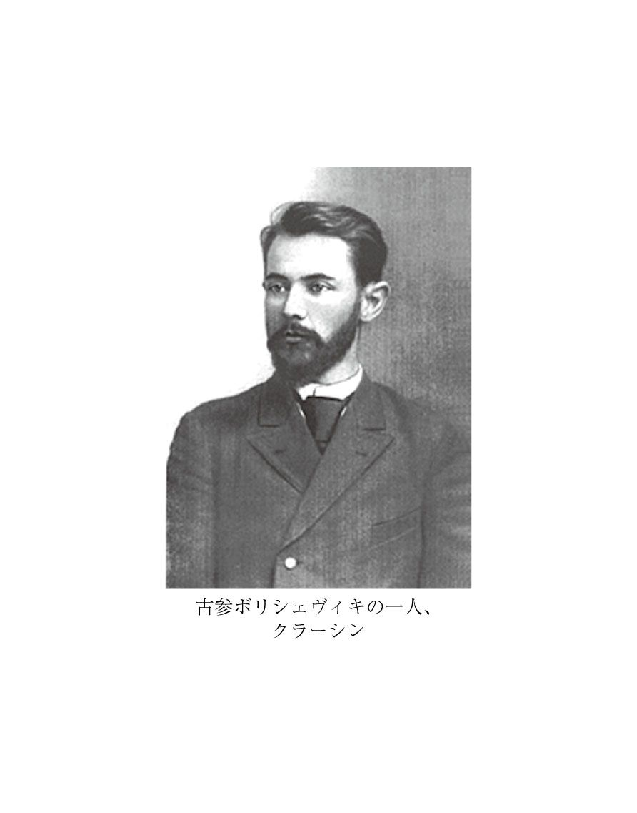
農民問題、農民を労働者ソヴィエトに接近させること、「農民同盟（３）」との活動の調整といった諸問題は、日増しにペテルブルク・ソヴィエトの大きな注意を奪うようになっていった。さすがにラデックもソヴィエトの指導が私の肩に課せられていたことは知っているだろう。当時、私が革命の戦術的課題について何百と書いた定式の一つに次のようなものがある。
プロレタリアートが推進する全市的な「ソヴィエト」は、都市大衆の戦闘的行動を指導し、軍隊および農民との戦闘的統一行動を日程にのせる（４）。（『ナチャーロ』第四号、一九〇五年一一月一七日（三〇日））
専制から社会主義への「飛躍」なるものが私にとって問題になったこともないということを証明する言葉をいちいち引用するのは退屈であり、正直に言うと恥ずかしくさえある。しかしそうせざるをえない。たとえば、私は一九〇六年二月に憲法制定議会の課題について次のように書いている。もちろん私は、憲法制定議会にソヴィエトを対置するようなことはけっしてしていない。現在ラデックは、中国に関して、昨日の日和見主義的痕跡を極左主義の箒で掃き清めるために、急いでスターリンの後を追ってそのような対置を行なっているのだが。
憲法制定議会は解放された人民自身の力によって召集されるであろう。憲法制定議会の課題は巨大なものとなろう。それは国家を民主主義的原理、すなわち、完全な人民権力［共和制のこと］の原理にもとづいて刷新しなければならない。それは人民の民兵を組織し、大規模な農地（土地）改革を遂行し、八時間労働日と累進所得税を導入しなければならない（５）。（第二巻第一分冊、三九四頁）
次に、とくに社会主義の「即時」導入の問題に関しては、私によって執筆された一九〇五年の一般向け宣伝パンフから引用しよう。
社会主義をわが国ロシアで今すぐ導入することは考えられるだろうか？ いや、わが国の農村はまだあまりにも無知で意識性に乏しい。農民のあいだには真の社会主義者はまだあまりにも少ない。まず何よりも必要なのは、人民大衆をいつまでも暗愚の状態に置いておこうとする専制を打倒することである。農村の貧農に対してはあらゆる税を免除しなければならない。累進所得税や普通義務教育制度を導入しなければならない。そして最後に、農村のプロレタリアートおよび半プロレタリアートを都市プロレタリアートと団結させて、一個の社会民主主義的軍勢としなければならない。このような軍勢のみが偉大な社会主義的変革を遂行することができるのである（６）。（第二巻第一分冊、二二八頁）
これを読むと、ラデックがスターリンやテールマンに追随して私に説教しはじめるはるか以前から、私自身が革命の民主主義的段階と社会主義的段階を区別していたのではないかとの結論になるだろう。
さらに今から二二年前に私はこう書いている。
社会主義派の新聞で連続革命の思想が、すなわち一連のますます激化する社会的衝突、次々に新たに決起する人民階層による蜂起、支配階級の政治的・経済的特権に対するプロレタリアートの間断なき攻撃によって、絶対主義と農奴制の一掃を社会主義的変革に結合させる革命という思想が定式化されたとき、わが国の「進歩派」の新聞はいっせいに轟々たる非難の声を上げた（７）。（『われわれの革命』、一九〇六年、二五八頁）
まずもって、この一文で与えられている「連続革命」の定義に注意を向けよう。それは、一連のますます激化する社会的衝突によって中世的なものの一掃と社会主義的変革とを結合させる。ここのどこに飛躍があるのか？ どこに民主主義的段階の無視があるのか？ そして、まさにこの通りのことが一九一七年に起こったのではないのか？
ついでに言っておかなければならないが、連続革命に対する一九〇五年の「進歩派」の新聞による轟々たる非難の声も、四半世紀という少々の遅れをもって問題に介入しはじめた今日の三文文士たちの、とうてい進歩的とは言えないうなり声の足元にも及ばない。
当時のボリシェヴィキ派の指導的機関紙で、レーニンの注意深い編集のもとに発行されていた『ノーヴァヤ・ジーズニ』は、私が新聞紙上で提起した永続革命の問題に対していかなる態度をとっただろうか？ これがなかなか興味深い問題であることには同意してくれるだろう。「急進的」ブルジョア新聞の『ナーシャ・ジーズニ（われわれの生活（８））』の一論文は、トロツキーの「永続革命」に、レーニンのより「分別のある」見解を対置しようとしたが、この論文に答えてボリシェヴィキの『ノーヴァヤ・ジーズニ』紙（一九〇五年一一月二七日付）は次のように述べた。
この無思慮な報道はもちろんのこと、まったくのナンセンスである。同志トロツキーはプロレタリア革命がその第一段階で停止することなく、その道を引き続き進み、搾取者を追いつめると言っているのに対し、レーニンは政治革命が単なる第一歩にすぎないと指摘している。『ナーシャ・ジーズニ』の評論家たちはそこに矛盾を見出そうとしている。（......）誤解のいっさいは、まず第一に、社会革命という名前そのものに対して『ナーシャ・ジーズニ』が抱いた恐怖から、第二には、社会民主主義者のあいだに何らかの先鋭でセンセーショナルな意見の相違を見出したいという同紙の願望から、第三には、「一撃で」という同志トロツキーの比喩的表現から、生じている。だが『ナチャーロ』の第一〇号で同志トロツキーは、まったく曖昧さのない形で自らの思想を説明している。
「革命の完全な勝利はプロレタリアートの勝利を意味する」──と同志トロツキーは書いている──「しかし、プロレタリアートの勝利はまた、革命のさらなる連続性をも意味している。プロレタリアートは民主主義の基本的諸課題を実現していくが、自己の政治的支配を強化しようとするプロレタリアートの直接的闘争の論理は、ある一定の時点において純粋に社会主義的な諸問題をプロレタリアートの前に提起する。最大限綱領と最小限綱領とのあいだに革命的連続性が確立される。これは『一撃』でも、一日やひと月でもなく、一つの歴史的時期全体にわたる過程である。それがどのくらい長く続くかをあらかじめ計算するのは馬鹿げたことであろう（９）」。
この文章だけで、ある程度、本書のテーマが言い尽くされている。レーニンの『ノーヴァヤ・ジーズニ』がこれほどまでに賞賛して引用した私のこの新聞論文は、エピゴーネンが将来行なうことになる批判のいっさいを十分明快かつ正確に議論の余地のない形で事前に反駁しているのではなかろうか？
私の論文は、勝利したプロレタリアートが、民主主義的課題を実現していく過程において、その置かれた状況の論理によって、ある一定の段階で純粋に社会主義的な諸問題に不可避的に直面せざるをえなくなると説明している。まさにここに最小限綱領と最大限綱領とのあいだの連続性が存在するのであり、これはプロレタリアートの独裁から必然的に生じてくるのである。小ブルジョア陣営からの当時の批判に対して私自身が説明したように、これはけっして一撃のものでも、飛躍でもなく、一つの歴史的時期全体にわたる過程である。そしてレーニンの『ノーヴァヤ・ジーズニ』もこの展望に完全に同意していた。しかし、もっと重要なことは、現実の発展過程がこの展望を検証にかけ、一九一七年にその正しさを完全に確認したことである。
『ナーシャ・ジーズニ』の小ブルジョア民主主義者たちとは別に、一九〇五年に、とくに革命の敗北が始まった後の一九〇六年に、民主主義を飛び越しての社会主義への空想的な「飛躍」について云々していたのは、主としてメンシェヴィキであった。メンシェヴィキの中でも、この分野でとくに目立っていたのはマルトゥイノフと今は亡きヨルダンスキーだった。ちなみに、両名とも後に忠実なスターリニストになった。「社会主義への飛躍」を私になすりつけようとしたメンシェヴィキの著述家たちに対して、私は一九〇六年の特別論文の中で、彼らの認識が間違っているだけでなく、馬鹿げたものだということを詳細にわかりやすく説明したことがある。エピゴーネンの批判に対して、この論文を今日ほとんどまるごと再録してもよいのだが、ここではこの論文の結論が次の言葉に要約されていることを述べておくだけで十分であろう。
政治評論の中で政治的障害を飛び越えることが実践においてそれを克服することを意味するものではないことぐらい、私も十分に承知している。あえてこの点を私の書評子（ヨルダンスキー）にきっぱり言っておく（10）。（第二巻第一分冊、四五四頁）
以上で十分ではないだろうか？ それでも十分でないというのなら、さらに引用を続けることもできる。批判者たちがかくもいいかげんに判断を下している当の文献が──ラデックのごとく──「手元にない」などと言わせないようにだ。
一九〇六年に獄中で私によって書かれ、当時レーニンによって出版された『われわれの戦術』という短いパンフレットは、次のような結論をその基調としている。
プロレタリアートは農村の反乱に依拠することができるだろう。政治生活の中心たる都市においても、プロレタリアートは自らが始めた仕事を完成させることができるだろう。農民の自然発生的力に依拠し、それを指導して、プロレタリアートは反動に対して決定的な勝利の一撃を与えるだけでなく、革命の勝利をも確保することができるだろう（11）。（第二巻第一分冊、四四八頁）
これが農民の無視に見えるだろうか？ ちなみに、この同じパンフレットでは次のような思想が展開されている。
革命の不可抗力的な展開を計算に入れているわれわれの戦術は、もちろんのこと、革命運動の不可避的ないし可能な、あるいは単に蓋然的なだけの諸局面および諸段階を無視してはならない（12）。（第二巻第一分冊、四三六頁）
これが空想的な飛躍に見えるだろうか？ 「最初のソヴィエトの教訓」という論文（一九〇六年）の中で、私は革命の今後の発展の展望を、あるいは実際にそうなったように、新しい革命の展望を次のように描き出している。
歴史は繰り返さない。新しいソヴィエトはあの五〇日間（一九〇五年一〇～一二月）の出来事をもう一度繰り返さなくてもよいだけではなく、その行動綱領をそっくりそのままこの時期から借りてくることができるだろう。
この綱領はまったく明白である。すなわち、軍隊、農民および都市小ブルジョアジーの下層との革命的協力、絶対主義の打倒、その物質的機構の破壊、軍隊の一部を再編し一部を解体すること、官僚的警察機構の廃絶、一日八時間労働制、住民の武装、とくにプロレタリアートの武装、ソヴィエトを革命的都市自治機関に転化すること、地方における農地革命の機関としての農民代表ソヴィエト（農民委員会）の創設、憲法制定議会選挙の組織化、人民代表者の明確な活動綱領を基盤とする選挙闘争、である（13）。（第二巻第二分冊、二〇六頁）
これが農地革命の飛び越えや農民問題全体の過小評価に見えるだろうか？ 私が革命の民主主義的課題を理解していなかったように見えるだろうか？ いや、そうは見えない。では、その場合、ラデックの政治的絵図はどのように見えるだろうか？ まったく何ものにもだ！
ラデックは寛大にも、だが非常に曖昧な形で、一九〇五年の私の立場（ただしラデックによって歪められたそれ）とメンシェヴィキの立場とを区別している。もっとも、彼自身、メンシェヴィキによる批判の四分の三まではそのまま繰り返していることに気づいていないのだが。ラデックは偽善的に言う、トロツキーの方法はメンシェヴィキと同じだったが、その目的は違っていた、と。しかし、このような主観的な問題設定によって、ラデックは問題に対する自分自身のアプローチの信用を完全に失墜させてしまっている。ラサールがすでに述べているように、目的は方法に依存し、究極においては方法によって条件づけられている。ラサールはこのテーマで戯曲まで書いている（『フランツ・フォン・ジッキンゲン（14）』）。
しかし、いったいどの点で私の方法とメンシェヴィキの方法とが一致していたというのか？ 農民に対する態度においてである。証拠としてラデックは、すでにわれわれが引用した一九一六年［一九一五年］のレーニンの論文から三行ほどの論争的文章を挙げているが、ラデックはことのついでに、レーニンがトロツキーの名前を挙げつつも、実際にはブハーリンやラデック自身と論争していることを認めているのである。
このレーニンの引用文──それは、すでに見たようにレーニンの論文の内容全体によって反駁されているのだが──の他に、ラデックはトロツキー自身の文章をも持ち出している。一九一六年の論文（15）の中で私は、メンシェヴィキの認識の空虚さを暴露するために次のように質問した。自由主義ブルジョアジーが指導しないとすれば、いったい誰が指導するのか？ 何といっても、君たちメンシェヴィキは、いずれにせよ農民の独立した政治的役割を信じてはいないのだから、と。したがって──とラデックは私の罪証をつかんで言う──トロツキーは農民の役割に関してメンシェヴィキと「一致」していたのだ、と。
だが、メンシェヴィキは、農民との疑わしく当てにならない同盟のために自由主義ブルジョアジーを「反発」させることは許されないと考えた。ここにメンシェヴィキの「方法」があった。それに対して私の方法は、自由主義ブルジョアジーを押しのけて、革命的農民に対する指導権を獲得するために闘争することであった。この根本問題に関して私とレーニンとのあいだに意見の相違はなかった。そして、私がメンシェヴィキとの闘争の中で彼らに向かって「いずれにせよ諸君には農民に指導的役割を割りあてる気はさらさらない」と言ったとき、これはラデックの中傷しているところとは違って、メンシェヴィキの「方法」との一致を示すものではなく、自由主義的富裕階級の独裁かプロレタリアートの独裁かという二者択一をはっきりと提起するものにすぎないのである。
一九一六年［一九一五年］にメンシェヴィキに対して私が行なったまったく正当な批判──ラデックは現在それを不誠実にも私を攻撃するために悪用しようとしている──と同じ議論は、その九年前のロンドン党大会（一九〇七年）でもなされている。それは、非プロレタリア諸党に対する態度に関するボリシェヴィキのテーゼを擁護したときの演説である。ここに私のロンドン演説の主要部分を引用するが、これは十月革命後の最初の数年間には、革命における諸階級と諸政党に対するボリシェヴィキ的なアプローチを明示したものとして、さまざまな論文集や選集に何度となく再録された。そしてこの演説の中で、私は永続革命論を圧縮した形で展開している。
メンシェヴィキの同志諸君にとっては自分たちの見解が途方もなく複雑に見えるようだ。私は彼らから何度となく、ロシア革命の歩みを単純化して理解しているという非難を耳にした。だが実際はメンシェヴィキの見解はその極端な無定形さにもかかわらず──いや、おそらくは、まさにこの無定形さゆえに──複雑に見えているにすぎず、メンシェヴィキの見解はミリュコーフ氏でさえ理解できるほどのまったく単純な図式に収まっているのである。
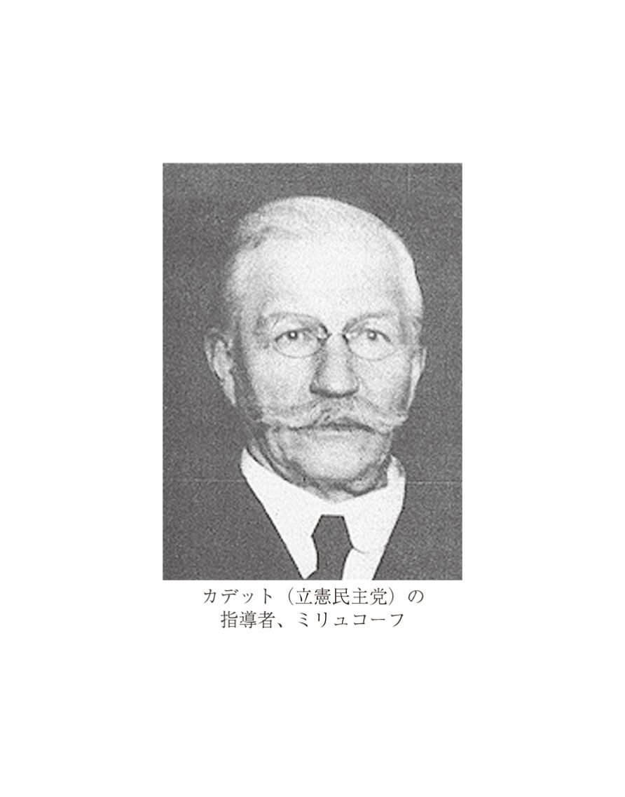
カデット党のこの思想的指導者は、最近出版された『第二国会選挙はいかに行なわれたか』という小冊子のあとがきでこう書いている。
「狭義の左翼グループ、すなわち社会主義的・革命的なグループに関しては、折り合いをつけることはいっそう困難であろう。とはいえ、ここでもやはり、ある程度われわれの接近を助けるような、明確な積極的理由ではないが、その代わりきわめて強力な消極的理由がある。彼らの目的はわれわれを批判し信用を傷つけることにある。そのことだけでもすでに、われわれが存在し行動することが必要なのだ。ロシアの社会主義者だけでなく全世界の社会主義者にとっても、現在進行中の革命がブルジョア革命であって、社会主義革命ではないこと、それはブルジョア民主主義派が成し遂げなければならない革命であること、このことをわれわれは知っている。世界中のいかなる社会主義者も（......）この民主主義派の地位を占めるつもりはないし、国内で彼らはかなり大量に国会に進出しているが、それはもちろんのこと、社会主義を今すぐ実現したり、準備的な『ブルジョア的』諸改革を自分の手で実行するためではない。（......）したがって、彼らは議会人の役割をわれわれに委ねるほうが、自分でこの役割を演じて面目を失うよりも、はるかに好都合なのである」。
ミリュコーフは、ごらんのように、われわれをまっすぐ問題の核心へと連れていっている。ここで引用した章句には、革命に対する、およびブルジョア民主主義派と社会民主主義派との関係に対するメンシェヴィキの見解の基本的要素がすべて揃っている。
「現在進行中の革命はブルジョア革命であって、社会主義革命ではない」──これが第一。ブルジョア革命は「ブルジョア民主主義派が成し遂げなければならない」──これが第二。社会民主党は自分の手でブルジョア的改革を遂行することができない。その役割は純粋に野党的なものである。すなわち「批判し信用を傷つけること」である──これが第三。最後に第四の要素は、社会主義者が野党にとどまることが可能であるためには、「われわれ（つまりブルジョア民主主義派）が存在し行動することが必要」だということである。
だが、もしその「われわれ」がいなければ？ もしブルジョア革命の先頭に立つ能力のあるブルジョア民主主義派が不在だったならどうか？ そのときはこれをでっち上げるしかない。メンシェヴィズムもまさにこうした結論に達している。彼らは自らの想像力によってブルジョア民主主義派を、その特質とその歴史をつくり出している。
唯物論者として、われわれは何よりもまず、ブルジョア民主主義派の社会的基盤は何なのか、それがどのような階層ないし階級の上に立脚することができるのか、という問題を自らの前に提起しなければならない。
まず大ブルジョアジーに関して言えば──この点ではわれわれはみな一致していると思うが──、それを革命勢力として語るわけにはいかない。言葉の最も広い意味での国民革命であったフランス大革命のときですら、リヨンあたりの工業家たちは反革命的役割を演じたのである。だが、中ブルジョアジーおよび主として小ブルジョアジーがブルジョア革命の指導勢力なのだとわれわれは聞かされる。だがこの小ブルジョアジーとはいったいどのようなものとして想定されているのか？
ジャコバン派は、手工業ギルドの中から成長してきた都市の民主主義派に立脚していた。小親方と職人、および彼らと密接な関係にあった都市住民は革命的サンキュロットの軍勢を構成し、指導党派である山岳党の支柱をなした。ギルド的［同業組合的］手工業という長期にわたる歴史の学校を通過したこの密集した都市住民大衆こそ、革命的変革のいっさいの重みを担ったのである。革命の客観的結果として、資本主義的搾取の「正常な」諸条件がつくり出された。しかしながら、歴史の過程の社会的力学の結果として、ブルジョア支配の諸条件は下層民、街頭民主主義派、サンキュロットによって形成された。彼らの恐怖政治的独裁がブルジョア社会から古いがらくたを一掃し、その後でブルジョアジーが小ブルジョア的民主主義派の独裁を打倒して支配権を握ったのである。
さて、ここで諸君にお尋ねしたい──残念ながらこれが初めてではないのだが──、わが国において、革命的ブルジョア民主主義派はいったいいかなる社会階級にもとづいて台頭し、権力に就き、そのことによって巨大な事業を遂行する可能性を得るのか？ しかもプロレタリアートを野党の地位に置いたままでだ。これが中心問題であり、私は改めてメンシェヴィキ諸君にこの問題を提起したい。
たしかに、わが国には革命的農民という巨大な大衆が存在している。しかし、私に劣らずメンシェヴィキの同志諸君もご存知のように、いかに農民が革命的であったとしても、彼らは独立した、ましてや指導的な政治的役割を果たすことができない。農民が革命に貢献する巨大勢力であることに議論の余地はない。だが、ムジークの党がブルジョア革命の先頭に立ち、自己のイニシアチブで国民の生産力を古い束縛から解放する能力があるなどと考える者は、マルクス主義者の名に値しないであろう。都市こそが現代社会のヘゲモン［指導者］であり、それだけがブルジョア革命のヘゲモンの役割を果たすことができるのである（＊）。
では、わが国において国民を自らに従えることのできるような都市の民主主義派はいったいどこにいるのか？ 同志マルトゥイノフは虫めがねを手にしてすでに何度も探した。彼はサラトフの教師、ペテルブルクの弁護士、モスクワの統計学者を見つけ出した。彼は、自分のすべての同意見者たちと同様、ロシア革命においては工業プロレタリアートが、一八世紀末にサンキュロットという手工業的な半プロレタリア民主主義派が立っていた地盤を占領してしまったことに気づこうとさえしなかった。同志諸君、この根本的事実に注意を向けてもらいたい。
わが国の大工業は、手工業の中から自然に成長してきたのではない。わが国の都市の経済史にはギルドの時代がまったく欠けている。わが国の資本主義工業はヨーロッパ資本の直接の圧力のもとに生成し、基本的に手工業文化の抵抗を受けることなく原初的な処女地を征服した。外国資本は国債という運河や私的投資というパイプを通じてわが国に流れ込んだ。それは手工業を成立・発展させることなく工業プロレタリアートの軍勢を自己の周囲に結集した。こうした過程の結果、わが国ではブルジョア革命の時期が訪れる以前に、きわめて高度な社会的タイプの工業プロレタリアートが都市の主要勢力を構成するに至った。これは反駁のしようのない事実であり、われわれの革命戦術上の結論のいっさいをこの事実にもとづかせなければならない。
メンシェヴィキの同志諸君が革命の勝利を信じているならば、あるいはその可能性を認めているだけでもよいが、その場合、革命権力の歴史的請求権を持つ者がわが国にはプロレタリアートの他にいないのだという事実に反論できないだろう。フランス大革命において都市の小ブルジョア民主主義派が革命的国民の先頭に立ったように、わが国の都市における唯一の革命的民主主義派たるプロレタリアートは、農民大衆に支持を見出さなければならないし、革命の勝利が目前に迫っている場合には自ら権力を握らなければならない。
この政府は、プロレタリアートに直接依拠し、彼らを通じて革命的農民に依拠するが、それはまだ社会主義独裁を意味するものではない。このプロレタリア政府のその後の展望についてはここでは触れないことにする。もしかしたらプロレタリアートも、ジャコバン民主主義派が没落したのと同じように没落して、ブルジョアジーの支配に席を譲ることになる運命なのかもしれない。だが、次のことだけは確認しておきたい。すなわち、プレハーノフの予言の通り、わが国の革命運動が労働者の運動として勝利するのだとすれば、革命の勝利はわが国ではプロレタリアートの革命的勝利としてだけ可能であるか、さもなくばまったく不可能だろう。
私はこの結論に断固として固執する。プロレタリアートと農民大衆との社会的矛盾ゆえにプロレタリアートが農民の先頭に立つことができないことを認めるならば、また、プロレタリアートそのものに勝利するだけの力量がないことを認めるならば、わが国の革命はそもそも勝利する運命にはないという結論にならざるをえない。こうした条件のもとでは、自由主義ブルジョアジーと旧権力との妥協が革命の自然な終幕になることだろう。こうした帰結の可能性を否定することはけっしてできない。しかし、それが、革命の内的弱さによってもたらされた、革命の敗北の途上で生じるものであることは明らかである。
本質的に、メンシェヴィキの分析全体、何よりもそのプロレタリアート評価と農民に対するそのありうる関係についての評価は、必然的に彼らを革命的悲観論の道へと導く。
だが、彼らは他方では絶えずこの道から逸れて革命的楽観論を展開する...ブルジョア民主主義派に関しては。
ここからカデットに対する彼らの態度が出てくる。彼らにとってカデットはブルジョア民主主義派の象徴であり、このブルジョア民主主義派は革命権力に対する自然な請求権者なのだ。（......）
カデットが再び台頭し背筋を伸ばすだろうとの諸君の確信はいったい何にもとづいているのか？ 政治的発展の諸事実にか？ いや、諸君の図式にだ！ 「革命を最後まで遂行する」ためには諸君には都市のブルジョア民主主義派が必要である。諸君は目を皿のようにして探すが、カデットの他には何も見つからない。そこで諸君は彼らに関して驚くべき楽観論を展開する。諸君は彼らに粉飾をほどこす。諸君は、彼らが演じたがらないし、演ずることもできないし、今後も演じないであろう創造的役割（16）を演ずるよう強制したがっている。私はこの根本問題を何度も提出してきたが、いまだ回答を聞いたことがない。諸君には革命の予測というものがない。諸君の政策は大きな展望を欠いているのである。
そしてこの点に関連して、ブルジョア政党に対する諸君の態度は、大会の記憶にとどめられるべき一つの言葉で定式化される。それは「場あたり的」ということだ。諸君にあっては、プロレタリアートは人民大衆に影響を及ぼすための系統的闘争を遂行しないし、また、自己の周囲に勤労者・被抑圧者を団結させて彼らの護民官にして指導者になるという一つの指導理念にもとづいて、自己の戦術的行動を掌握するということもしない（17）。（第五回党大会、『議事録と大会決議』、一八〇～一八五頁）
＊原注 永続革命に対する遅ればせの批判者たちもこのことに同意するのではなかろうか？ では彼らはこの命題を東方諸国に、中国やインドなどに拡大するつもりがあるのか？ イエスかノーか？ （本文に戻る）
この演説は、一九〇五～〇六年における私のすべての論文・発言・行動を簡潔に要約するものであり、ローザ・ルクセンブルクやトゥイシコ（18）［ヨギヘス］は言うまでもなく（この演説がきっかけで、私は彼らとより親密な関係を結び、彼らのポーランド語雑誌にも寄稿するようになった）、ボリシェヴィキからも全面的な共感をもって迎えられた。レーニンはメンシェヴィキに対する私の調停主義的態度を許していなかったので──それは正しかった──、この私の演説に対して、ことさらに控え目な調子で応答した。それでも彼は次のように述べている。
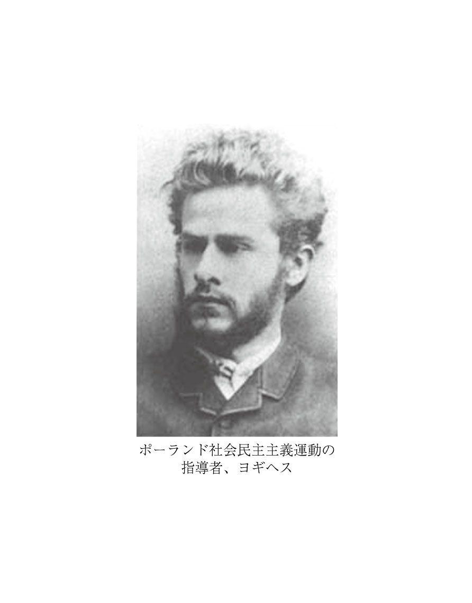
私はただ、トロツキーがその『党の擁護』という小冊子の中で、現在のロシア革命におけるプロレタリアートと農民との経済的利害の共通性について書いたカウツキーと意見が一致していることを表明したことだけを指摘しておこう。トロツキーは、自由主義ブルジョアジーに反対する左翼ブロックを、容認しうる合目的的なものと認めた。トロツキーがわれわれの見解に接近したことを確認するためには、この事実だけで私には十分である。「連続革命」の問題にはかかわりなく、ここには、ブルジョア諸党に対する態度に関する問題では、基本点での意見の一致が存在する（19）。（レーニン、第八巻、四〇〇頁）
レーニンはその演説の中で永続革命論に対する全般的評価に取り組んでいない。私自身も、演説の中でプロレタリアート独裁のその後の展望について展開していないのだから当然である。レーニンは明らかにこの問題に関する私の基本文献を読んでいなかった。でなかったら、ボリシェヴィキの見解への私の「接近」を何か新しいことのようには言わなかったはずである。というのも、私のロンドン大会演説は一九〇五～〇六年の私の諸論文を要約して述べたものにすぎないからである。私がボリシェヴィキ派の外部にいたため、レーニンはきわめて控え目な調子で自分の意見を表明している。それにもかかわらず、より正確に言えば、それだからこそ、レーニンの言葉には誤った解釈をするいかなる余地もない。レーニンは、農民と自由主義ブルジョアジーに対する態度という「問題の基本点での意見の一致」を確認している。この意見の一致は、ラデックが的外れにも持ち出している私の目的に関するものではなく、まさしく私の方法に関するものである。
民主主義革命の社会主義革命への成長転化という展望に関しては、レーニンは「連続革命の問題にはかかわりなく」という留保をしている。この留保は何を意味しているのか？ 明白である。無知で破廉恥なエピゴーネンがいつもやっているのとは違って、レーニンは、永続革命を農民の無視や農地革命の飛び越えなどとまったく同一視していなかったということである。レーニンの考えはこうであった。わが国の革命がどれぐらい先まで突き進むのか、わが国でプロレタリアートがヨーロッパにおけるよりも早く権力に就くことができるのかどうか、その場合、社会主義にとっていかなる展望が切り開かれるのか──これらの問題には触れないが、農民と自由主義ブルジョアジーに対する態度という基本問題に関しては「意見の一致が存在する」ということである。
先ほどわれわれは、ボリシェヴィキの『ノーヴァヤ・ジーズニ』が、永続革命論に対して、その生成期、すなわち一九〇五年の段階でどのように反応したかを見た。そこで次に一九一七年の後に『レーニン全集』の編集者たちがこの理論についてどのような意見を述べているかを見ておこう。第一四巻第二分冊の四八一頁の注の中で次のように述べられている。
まだ一九〇五年革命の以前の段階で、（トロツキーは）現在とくに注目に値する永続革命論という独特の理論を提起し、一九〇五年のブルジョア革命が直接に社会主義革命に移行して一連の国民革命の最初のものになるだろうと主張した。
これはたしかに、私が永続革命について書いたことすべての正しさを認めるものではけっしてないが、いずれにせよ、ラデックが永続革命について書いていることの誤りを確認するものではある。「ブルジョア革命が直接に社会主義革命に移行する」──これは成長転化の理論であって、飛び越えの理論ではない。ここから出てくるのは、冒険主義的な戦術ではなく、現実主義的な戦術である。また「現在とくに注目に値する永続革命論」という言葉は何を意味しているのか？ これは、十月革命が、この理論の、それまでは多くの人々にとってはっきりしていなかったか単に「ありそうもない」と思われていた側面に新しい光を当てることになったことを意味している。『レーニン全集』第一四巻第二分冊は著者［レーニン］の生前に出版された。何千・何万という党員がこの注を読んでいる。そして、一九二四年までは誰もそれが誤っているなどとは言わなかった。ところがラデックは一九二八年になってようやく、そのように言う必要に気づいたというわけである。
しかし、ラデックは理論だけでなく戦術についても語っている。それゆえ、彼に対する最も重要な反論になっているのはやはり、一九〇五年革命および一九一七年革命への私の実践的参加の性格であろう。一九〇五年のペトログラード・ソヴィエトで私が活動していた時期は、エピゴーネンが絶え間なく攻撃している、革命の性質に関する私の見解が形成された時期と重なっている。もしこの見解がそれほど誤ったものだったとすれば、すべての人々の眼前で行なわれ、当時の新聞に日々記録されていた私の政治活動にどうしてそれがまったく反映されなかったのか？ またもし、そのような誤った理論が私の政策に反映していたならば、現在の執政官たちはなぜそのとき黙っていたのか？ さらに重要なことには、どうしてレーニンはペトログラード・ソヴィエトの路線を、革命の最高潮の時期にも、またその敗北後も、精力的に擁護したのか？
同じ問題は──おそらくはずっと先鋭な形で──一九一七年の革命にもあてはまるだろう。ニューヨークで私は、永続革命論の観点から一連の論文の中で二月革命に対する評価を行なった。これらの諸論文は今日すべて再刊されている。私の戦術的結論は、同時期にレーニンがジュネーブで引き出した結論（20）と完全に一致しており、したがってカーメネフ、スターリンをはじめとするエピゴーネンの結論とまったく非和解的に対立している。私がペトログラードに到着したとき、私に永続革命の「誤り」を放棄したかどうか尋ねる者など一人もいなかった。そうだ、そのような者は誰もいなかった。スターリンは恥ずかしそうに隅で身を潜め、レーニンの到着以前に自分が唱えていた政策を党ができるだけすみやかに忘れてくれることだけを願っていた。ヤロスラフスキーはまだ統制委員会の議長ではなく、メンシェヴィキやオルジョニキッゼその他といっしょにヤクーツクで凡庸きわまりない半自由主義新聞を発行していた。カーメネフはレーニンをトロツキズムの罪で非難していて、私と会ったときこう言ったものだ。「今や君の季節だな」。十月革命の前夜、私はボリシェヴィキの中央機関紙に永続革命の展望について書いた（21）。私に反論することなど当時の誰の頭にも浮かばなかった。私とレーニンとの意見の一致は完全で無条件のものだった。
さて、ラデックを含む私の批判者たちは以上のことをどう解釈するつもりなのか？ 私自身が自分の擁護した理論をまったく理解しておらず、最も責任重大な歴史的時期に、この理論に反して、まったく正しく行動したとでも言うのか？ 私の批判者たちが、他の多くの物事と同様に永続革命論についても理解していなかったと考える方がもっと簡単なのではないか？ なぜなら、もしこれらの遅ればせの批判者たちが自分の思想だけでなく他人の思想についてもよく理解していたなら、彼らがみな例外なく一九一七年革命においてあのような惨めな立場をとり、中国革命において永遠の恥辱を受ける羽目に陥ったことがまったく説明つかないからである。
＊ ＊ ＊
しかし、それでも一部の読者は突如として思い出すかもしれない──「ツァーリではなく労働者政府を」という君の中心的な戦術スローガンはどうなのかと。
この論拠は一部の人々のあいだでは決定的なものとみなされている。トロツキーの恐るべきスローガン「ツァーリではなく...」は、ある場合には、トロツキーの有罪を示す最終的で最も重要で決定的な論拠として、別の場合には、疲れ果てた思想の出来合いの避難所として、あらゆる永続革命批判者のあらゆる著作物に取り入れられている。
この批判が最高度の深みに達するのは、もちろん、無知と不実さの「達人」がその比類なき著作『レーニン主義の諸問題』の中で次のように言うときである。
同志トロツキーが「ツァーリではなく労働者政府を」というスローガン、すなわち、農民ぬきの革命のスローガンを掲げて、革命勢力としての農民のことを「あっさり」忘れてしまった一九〇五年の彼の立場については、詳しく論じないでおこう（22）（おやおや！──トロツキー）。（イ・スターリン『レーニン主義の諸問題』、一七四～一七五頁）
「詳しく論じる」つもりはないというこの壊滅的な批判を前にして私の状況はほとんど絶望的であるにもかかわらず、それでも何とか情状酌量の事情を指摘する努力をしてみよう。そのような事情はある。よく聞いていただきたい。
たとえ私が一九〇五年の何らかの論文の中で、誤解の余地を与えるような個々の曖昧ないし不適切なスローガンを定式化していたとしても、このようなスローガンは今になって、すなわちあれから二三年も経った後になって、孤立した形で取り上げられるべきではなく、同じテーマに関する私のその他の文献と結びつけて、そして何より事件への私の政治的参加と結びつけて取り上げられるべきである。読者の知らない（実は批判者も知らない）著述物の表題だけを読者に告げて、この表題から、私が書いたり行なったりしたことのいっさいとまったく正反対の意味を引き出すようなことは、けっしてしてはならない。
だが、批判者諸君、次のことを付言しておくことはけっして余計なことではあるまい。「ツァーリではなく労働者政府を」なるスローガンを、私はいつどんな所でも書いたことも、宣言したことも、提起したこともない、ということである。私に対する審判者のこの主要な論拠は、他のいっさいを別にしても、事実に関する最も破廉恥な誤りにもとづいている。実を言うと、「ツァーリではなく労働者政府を」という表題の声明を書いて一九〇五年の夏に国外から発したのは、パルヴスであった。当時、私はとっくにペテルブルクで非合法生活をしており、実践の上でも思想の上でも、このリーフレットとはまったく何の関係もなかった。ずっと後になって論争的論文からはじめてこのリーフレットのことを知ったが、結局それについて自分の意見を表明するきっかけも機会もまったくなかった。私は一度もそれを見たことも読んだこともない（もっとも私を批判する人々もみなそうだろうが）。これがこの注目すべき事件の真相である。テールマンやセマールのごとき人々から、最も便利で手軽で説得力のある論拠を取り上げてしまうのは誠に気の毒ではある。しかし、事実は私の慈悲心よりも強力なのだ。
それだけでない。まるで先を見越していたように、うまいめぐり合わせがあるものだ。パルヴスが国外で私の知らない『ツァーリではなく労働者政府を』というリーフレットを発表したちょうど同じ頃に、私の書いた『ツァーリではなく、ゼムストヴォ有力者でもなく、人民を！』という表題のリーフレット（23）がペテルブルクで非合法に出版された。労働者と農民を包含するスローガンとして何度もこの宣伝ビラの文中に繰り返されているこの表題は、まるで、革命の民主主義的段階の飛び越えという、後に私に向けられた非難をわかりやすく反駁するためにわざと考え出されたものであるかのようだ。このアピールも私の『著作集』に再録されている（第二巻第一分冊、二五六頁）。ちなみに同書には、スターリンの天才的な表現によれば私が「あっさり忘れていた」というまさにその農民に向けた私の声明文（24）──ボリシェヴィキ中央委員会によって公刊されたもの──も再録されている。
しかし、これでもまだすべてではない。つい先頃、栄光に輝くラフェス──中国革命の理論家にして指導者の一人──は、ソ連共産党中央委員会の理論誌に、トロツキーがあの恐るべきスローガンを一九一七年に唱えたと書いている。一九〇五年ではなく、一九一七年にだ！ もっとも、メンシェヴィキであったラフェスには多少とも弁解の余地がある。ほとんど一九二〇年まで彼はペトリューラ政府の「大臣」であった。ボリシェヴィキとの闘争という国家的難事に没頭していた彼に、十月革命の陣営内で起きていることを探求する余裕などどこにあったろう。だが、中央委員会の理論誌の編集部はそうはいかない。何とも奇妙な話だ。だがナンセンスなものはナンセンスなのである...。
「まさかそんな！」と、何年ものあいだ三文文献で育てられてきた善良な読者の多くは叫ぶだろう──「われわれは何百、何千という本や論文でそう教えられてきたではないか...」。
──しかり、そう教えられてきた。だから友よ、もう一度学び直さなければならない。これは反動期に生じた間接費である。それについてはどうすることもできない。歴史は直線的には進まない。それは一時的にスターリンの袋小路に迷いこんでしまったのである。
訳注
（１）トロツキー「政治的書簡」、邦訳は前掲『わが第一革命』、九五頁。 （本文に戻る）
（２）レーニン「臨時革命政府に関する決議に対する修正提案についての演説」、邦訳『レーニン全集』第八巻、四〇一頁。ただし、レーニンの元の言葉では、「クラーシン」は彼のペンネームであった「ジーミン」になっている。 （本文に戻る）
（３）農民同盟......正式名称は全ロシア農民同盟。一九〇五年に結成された農民の革命的民主主義組織で、一九〇六年に弾圧によって崩壊。 （本文に戻る）
（４）トロツキー「反革命は活動する」、ロシア語版『トロツキー著作集』第二巻第一分冊、一九二五年、三二六頁。未邦訳。 （本文に戻る）
（５）トロツキー「一院制か二院制か」の一節。未邦訳。『永続革命論』の原文では「三四九頁」となっていたが、「三九四頁」の間違い。 （本文に戻る）
（６）トロツキー「社会革命党は何を教えているか」、『トロツキー研究』第四七号、二〇五頁。 （本文に戻る）
（７）トロツキー「総括と展望」、前掲『わが第一革命』、三三七頁。 （本文に戻る）
（８）『ナーシャ・ジーズニ（われわれの生活）』......一九〇四年一一月にペテルブルクで創刊された自由主義左派の日刊紙。寄稿者の大部分は「オスヴォボジュデーニエ派（解放派）」のメンバー。一九〇五年一二月に禁止される。 （本文に戻る）
（９）無署名「ロシアの新聞雑誌」、『ノーヴァヤ・ジーズニ』第二三号、三頁。トロツキー名での引用の邦訳は、トロツキー「社会民主党と革命」、前掲『わが第一革命』、二六〇頁。 （本文に戻る）
（10）トロツキー「革命のさらなる発展の展望」（「第二国会への道」という論文の一部）、『トロツキー研究』第一八号（一九九六年）、二五頁。 （本文に戻る）
（11）トロツキー「革命とその力」、『トロツキー研究』第四七号（二〇〇五年）、二二一頁。 （本文に戻る）
（12）トロツキー「憲法制定議会のための闘争におけるわれわれの戦術」、『わが第一革命』、三九六頁。 （本文に戻る）
（13）トロツキー「最初のソヴィエトの教訓」、『トロツキー研究』第四七号、二三〇～二三一頁。 （本文に戻る）
（14）『フランツ・フォン・ジッキンゲン』......ラサールが一八五九年にベルリンで出版した歴史戯曲。フランツ・フォン・ジッキンゲンとは、ドイツ宗教改革期に下級貴族の反乱（騎士戦争）を指導した帝国騎士で、ラサールはこの人物をテーマに長大な戯曲を書いた。マルクスはエンゲルス宛ての手紙でこの作品を「馬鹿馬鹿しく滑稽な代物」と酷評している（一八五九年六月一〇日付「マルクスからエンゲルスへ」、邦訳『マルクス・エンゲルス全集』第二九巻、三五一頁）。また、ラサール本人に対してはかなり長い感想文を書き送っており、その中でマルクスは、ラサールの戯曲がジッキンゲンを過大評価している点を批判し、ジッキンゲンがフッテンと同じく「一方では自分を近代思想の伝達者としながら、他方では実際には反動的な階級利害を代表していた」ことを両者の没落の原因だとするべきだったと評している（一八五九年四月一九日付「マルクスからラサールへ」、同前、四六三頁）。 （本文に戻る）
（15）「一九一六年の論文」......正しくは「一九一五年の論文」。ラデックが取り上げたのは、前掲「権力のための闘争」。 （本文に戻る）
（16）創造的役割......この箇所は、『ロシア社会民主労働党第五回（ロンドン）党大会議事録』（一九六三年、モスクワ）では「歴史的役割」になっている。 （本文に戻る）
（17）トロツキー「ロシア社会民主労働党ロンドン大会における演説」、前掲『わが第一革命』、四〇〇～四〇四頁、四〇七～四〇八頁。 （本文に戻る）
（18）ローザ・ルクセンブルクやトゥイシコ......ロンドン党大会におけるローザ・ルクセンブルクの演説の翻訳は『ローザ・ルクセンブルク選集』第二巻（現代思潮社、一九六二年）に、トゥイシコ（レオ・ヨギヘス）の演説の抄訳は『ニューズ・レター』第四四号（トロツキー研究所、二〇〇七年）にそれぞれ掲載。 （本文に戻る）
（19）レーニン「ブルジョア政党に対する態度についての報告の結語」、邦訳『レーニン全集』第一二巻、四八二頁。 （本文に戻る）
（20）レーニンがジュネーブで引き出した結論......「遠方からの手紙」と題された一連の手紙で示された結論を指している。邦訳『レーニン全集』第二三巻、三二七～三七七頁。 （本文に戻る）
（21）トロツキー「次は何か──総括と展望」、『トロツキー研究』第五号（一九九二年）所収。 （本文に戻る）
（22）スターリン「十月革命とロシア共産主義者の戦術」、邦訳『スターリン全集』第六巻、三八二頁。 （本文に戻る）
（23）トロツキー「ツァーリではなく、ゼムストヴォ有力者でもなく、人民を！」、前掲『わが第一革命』所収。 （本文に戻る）
（24）トロツキー「農民たち、われわれの言葉を諸君に！」、前掲『わが第一革命』所収。 （本文に戻る）
ラデックはレーニンを持ち出して、民主主義独裁は［二月革命後の］二重権力において実現されたのだと主張する。たしかにレーニンは、時おり、しかも条件つきで、問題をこのように立てた。これは私も認めよう。「時おりだって？」、ラデックは激怒し、レーニンの根本思想の一つを貶めた罪で私を糾弾する。しかし、ラデックが腹を立てるのは、彼が間違っているからにすぎない。ラデックがまたしても四年遅れで批判に付している「十月の教訓」の中で私は、民主主義独裁の「実現」についてのレーニンの文言を次のように解釈している。
民主主義的な労農連合は、真の権力にまで高まっていない未成熟な形態としてのみ成立しえたのである。それは一個の傾向であって、完成された事実ではなかった（１）。（［ロシア語版『トロツキー著作集』］第三巻第一分冊、XXI頁）
こうした解釈に対してラデックはこう書いている──「レーニンの著述の中で理論的に最も傑出したものの一つの内容をこのように描き出すとは、言語道断である」。この言葉に続いてボリシェヴィズムの伝統に対する情熱的な訴えがなされ、最後に次のような締めくくりがやってくる。「この問題は途方もなく重要であり、レーニンが時おり語ったと言うだけでは、この問題に答えたことにはならない」。
こう述べることによってラデックは、レーニンの思想のうちで「最も傑出したものの一つ」に私がぞんざいな態度をとっているという印象を与えようとしている。しかし、ラデックは怒りと情熱を浪費している。むしろここで必要なのは少々の理性である。「十月の教訓」における私の叙述は、非常に圧縮されてはいるが、孫引きの引用文を借用しての軽率な思いつきにもとづいたものではなく、レーニンを実際に徹底して研究した上でなされたものである。私の議論は、この問題におけるレーニンの思想の本質を描き出しているが、ラデックの冗長な記述は、引用文をたっぷり使っているにもかかわらず、レーニンの生きた思想をすっかり台無しにしてしまっている。
どうして私は「時おり」という限定的な言葉を使ったのか？ なぜなら、実際にそうだったからである。民主主義独裁が二重権力において「実現」された（「ある一定の形態で、ある一定の程度まで」）とレーニンが語ったのは、一九一七年の四月から一〇月までの時期、すなわち、民主主義革命が真に実現される以前のことでしかなかった。ラデックはこのことに気づくことも理解することも評価することもなかった。現在のエピゴーネンとの闘争において、当時レーニンははなはだ条件つきながら民主主義独裁の「実現」について語ったが、それも二重権力の時期を歴史的に性格規定するものとしてではなく──そういうものとしてはそれはまったくのナンセンスであったろう──、独立した民主主義独裁の改良された第二版を期待する人々に反論するためであった。レーニンの言葉はただ、二重権力という惨めな失敗作として以外にはいかなる民主主義独裁もないし、またこれからもないだろうということ、それゆえ「再武装」が必要なのであり、すなわち、スローガンを変えなければならない、ということを意味するだけである。農民に土地を与えることを拒否しボリシェヴィキを狩りたてたメンシェヴィキ＝エスエルとブルジョアジーとの連合を指して、これこそボリシェヴィキのスローガンの「実現」なのだと主張することは、意識的に白を黒と言いくるめるか、さもなくばすっかり度を失ってしまっているかのどちらかであろう。
メンシェヴィキに対しては、ある程度までカーメネフに対するレーニンの反論と共通した論拠を提起することができるだろう。諸君はブルジョアジーが革命において「進歩的」使命を果たすことを期待しているのか？ だがこの使命とやらはすでに実現されている。ロジャンコ、グチコフ、ミリュコーフらの政治的役割こそ自由主義ブルジョアジーが与えうる最大限のものである。それはケレンスキー体制が、独立した段階として実現しえた民主主義革命の最大限であったのと同じである。
まぎれもない解剖学上の痕跡──不全器官──はわれわれの祖先に尻尾があったことを示している。この痕跡は動物界の発生的同一性を確証するには十分である。しかし、ありていに言えば、人間にはやはり尻尾はないのである。レーニンは二重権力体制における民主主義独裁の不全器官をカーメネフに示して、この不全器官から新しい器官が発生することは望めないと警告した。そして、われわれは民主主義革命をいついかなる場所でよりも深く徹底的かつ純粋に遂行したにもかかわらず、それでもやはりわが国には独立した民主主義独裁は存在しなかったのである。
もし［一九一七年の］二～四月に民主主義独裁が本当に実現されていたとしたら、おそらくモロトフでさえそれに気づいたであろう。このことについてラデックはとくと考えてみるべきだった。党と階級は民主主義独裁を、君主制の古い国家機構を容赦なく破壊し地主の土地所有を完全に一掃する体制として理解していた。しかし、ケレンスキー体制のもとではそのようなことはまったく見られなかった。ボリシェヴィキ党にとって問題となっていたのは、これらの革命的課題を現実に実現することであって、ある社会学的・歴史的な「不全器官」を暴露することではなかった。レーニンは、反対者を理論的に啓蒙するために、少しも発達しなかったこの痕跡をはっきりと突きつけた。しかし、それ以上のものではなかった。
だが、ラデックは、二重権力の時期、すなわち、無権力の時期に「独裁」なるものが実際に存在し、民主主義革命が実現されたのだということをわれわれに信じさせるために大真面目に努力する。しかし、この「民主主義革命」とやらは、それを認識するためにはレーニンの全英知を必要とするようなものであったようだ。つまりそれは実現されなかったということである。なぜなら真の民主主義革命とは、ロシアや中国における字の読めないどんな農民にも容易に認識しうるものだからである。だが、形態学上の痕跡にすぎないものを認識するのは、いささか難しい。たとえば、カーメネフをめぐるロシアでの教訓があったにもかかわらず、ラデックは結局次のことに気づくところまでいかなかった。すなわち中国でも、民主主義独裁がレーニンの言った意味で「実現された」（国民党を通じて）ということ、しかもわが国の二重権力を通じた「実現」よりももっと徹底的に、もっと完全に「実現」されたということ、したがって、度しがたい愚か者だけが中国における「民主主義独裁」の改良された第二版を期待しうるということである。
だが、もしわが国で民主主義独裁が、ロイド・ジョージとクレマンソーの使い走りであったケレンスキー体制の形でしか実現されなかったとすれば、歴史はボリシェヴィズムの戦略的スローガンを最も残酷な形で笑いものにしたと言わざるをえないだろう。だが幸いにもそうではなかった。ボリシェヴィキのスローガンは、形態学的な痕跡としてではなく、最も偉大な歴史的現実として実際に実現されたのである。ただそれは十月革命以前にではなく、十月革命以後に実現されたのだ。マルクスの表現を借りれば、農民戦争がプロレタリアートの独裁を支持した。この二つの階級の協力は十月革命を通じて巨大な規模で実現された。今では無学なムジークでさえ、たとえレーニンの解説がなくとも、ボリシェヴィキのスローガンが実現されたことを理解しているし、感じている。そして、レーニン自身もまさにこのように評価した。すなわち、十月革命──その最初の段階──こそが民主主義革命の真の実現であり、したがってまた、ボリシェヴィキの戦略的スローガンは、異なった形でとはいえ、本当に実現されたのだと。レーニンの全体を取り上げなければならない。そして何よりも、より高い峰から事態を見渡し評価した十月革命後のレーニンを取り上げなければならない。さらに、エピゴーネン流にではなくレーニン流にレーニンを取り上げなければならない。
レーニンはカウツキーを批判した著書［『プロレタリア革命と背教者カウツキー』］の中で革命の階級的性格とその「成長転化」の問題を（十月革命後に）分析している。そこにはラデックが少し考えてみるべき一節がある。
しかり、われわれが、全体としての農民とともに進んでいる間は、われわれの革命（十月革命──トロツキー）はブルジョア革命であった。われわれは、このことをこの上なくはっきりと自覚して一九〇五年以来何百回と語ってきたし、歴史の過程のこの必然的な段階を飛び越えようとしたり、布告によって取り除こうとしたことは、ただの一度もない。
さらにこう述べている。
結果はまさにわれわれの言った通りになった。革命の歩みは、われわれの判断の正しさを確証した。はじめは「すべての」農民とともに、君主制に反対し、地主に反対し、中世的制度に反対して（そしてそのかぎりでは革命はまだブルジョア的、ブルジョア民主主義的なままであった）。次に貧農とともに、半プロレタリアとともに、すべての被搾取者とともに、資本主義に反対して、農村の金持、富農、投機者に反対して。そしてそのかぎりでは、革命は社会主義的なものとなる（２）。（第一五巻、五〇八頁）
レーニンは、「時おり」ではなく常に、より正確には、最後までずっとこのように語ったのであり、十月革命を含む革命の歩みに対して完成された、一般的で、徹底した評価を与えたのだ。「結果はまさにわれわれの言った通りになった」。ブルジョア民主主義革命は労働者と農民の連合として実現された。ケレンスキー体制においてか？ いや、十月革命後の最初の時期においてである。本当か？ 本当だ。しかし、今やわれわれの知っているように、それは民主主義独裁という形態においてではなく、プロレタリアートの独裁という形態において実現された。まさにそのことによって、古い代数的定式の必要性も完全になくなったのである。
一九一七年におけるカーメネフに対するレーニンの条件つきの反論と、その数年後におけるレーニンの完成された十月革命規定とを無批判に並列させるならば、わが国では二つの民主主義革命が「実現」されたという結論になるだろう。しかしこれでは多すぎる。ましてや、第二の革命はプロレタリアートの武装蜂起によって第一の革命とくっきりと区別されているのだから、なおさらである。
ここで、たった今引用したレーニンの著作『プロレタリア革命と背教者カウツキー』からの一節と、私の「総括と展望」のしかるべき箇所とを比較してみよう。その「プロレタリア体制」と題された章の中で、プロレタリア独裁の第一段階とその後の成長転化の展望とが次のように予想されている。
身分制的な農奴制を一掃することは、地主から収奪されている身分としての全農民の支持を受けるであろう。累進所得税も農民の圧倒的多数の支持を受けるであろう。しかし農業プロレタリアートを保護する立法措置は、そのような多数派の積極的な共感を得られないだけでなく、少数派の積極的な抵抗にさえぶつかるであろう。
プロレタリアートは、階級闘争を農村に持ち込まざるをえず、そのことによって、比較的狭い限界内とはいえ疑いもなく農民全体に存在するあの利害の共通性を破壊せざるをえない。プロレタリアートは、その支配のごく早い時期において、富農に貧農を、農業ブルジョアジーに農業プロレタリアートを対置することに支えを求めざるをえないであろう（３）。（『われわれの革命』、一九〇六年、二五五頁）
以上の記述のいったいどこが、私による農民の「無視」や、レーニンと私との二つの路線の全面的「対立」に見えるのか？
先に挙げたレーニンからの引用文は彼にとっての唯一のものではない。それどころか、レーニンにあってはいつもそうなのだが、事態をいっそう深く解明する新しい定式は、一時期全体を通じて、彼の演説や論文の基軸となっていた。たとえば、一九一九年三月にレーニンはこう述べている。
一九一七年一〇月にわれわれは農民全体とともに権力を握った。階級闘争が農村でまだ展開されていなかったかぎりで、これはブルジョア革命であった（４）。（第一六巻、一四三頁）
一九一九年三月の党大会でレーニンはさらに次のように述べている。
プロレタリアートが農民の援助のもとに権力を握らなければならなかった国、小ブルジョア革命の代理人という役割がプロレタリアートによって担われた国──そうした国にあってわれわれの革命は、貧農委員会が組織されるまでは、すなわち一九一八年の夏、いや、秋まででさえ、かなりの程度ブルジョア革命であった（５）。（第一六巻、一〇五頁）
こうした文言をレーニンはさまざまな言い方で、さまざまな機会に何度も繰り返した。それにもかかわらず、ラデックは、現在の係争問題を決定づけるレーニンのこの最重要思想をあっさり無視している。
プロレタリアートは十月に農民全体とともに権力をとったとレーニンは言っている。それゆえ、それはブルジョア革命であった、と。これは正しいか？ ある意味では正しい。しかし、このことはまさに、プロレタリアートと農民の真の民主主義独裁、すなわち、専制的・農奴制的体制を実際に根絶して地主から土地を収奪する独裁は、十月以前にではなく十月以後に実現されたということ、マルクスの言葉で言えば、農民戦争に支持されたプロレタリアートの独裁として実現され、わずか数ヵ月後には社会主義独裁に成長転化しはじめたということを意味する。このことは理解しがたいことであろうか？ 今日この点について議論の余地があるだろうか？
ラデックによれば、「永続」理論は革命のブルジョア的段階と社会主義的段階とを混同するという罪を犯しているという。だが実際には、階級的発展力学がこの二つの段階をあまりにもしっかりと「混同」し、すなわち結合させているので、わが不幸な形而上学者にあってもそれぞれの段階の先端を見つけ出すことはできないのである。
もちろん、「総括と展望」の中にも個々の欠陥や正しくない主張が見出されるであろう。しかし、この論文は一九二八年に書かれたものではなく、その骨子は一〇月以前に...、［一九一七年のではなく］一九〇五年の一〇月以前に書かれたのである。永続革命論、より正確に言えば、当時私がそれを基礎づけた論拠のうちに実際に存在する欠陥については、ラデックの批判ではまったく触れられていない。なぜなら、彼は、自分の先生たるエピゴーネンに追随して、実際の欠陥に対してではなく、歴史の発展の歩みに合致するこの理論の強い面に対して攻撃を加えているからである。しかも、彼自身が研究もせず徹底的に考えてみたこともないレーニンの当時の問題設定から根本的に誤った結論を引き出し、その誤った結論の名において攻撃しているのである。
現実の歴史的過程とけっして交差することのない別個の平面上で古い引用文を手品師のごとく操ることが、あらゆるエピゴーネン学派によってなされている。しかし、「トロツキズム」の反対者たちが十月革命の実際の発展過程の分析に取り組まなければならない羽目になると、しかも真剣かつ良心的に取り組まなければならない段になると──彼らの一部は今でも時おりそうした機会を持つ──、彼らは必然的に、自分たちが拒否している理論の精神にもとづいた定式に至る。その最も明瞭な証拠をわれわれは、十月革命の歴史を論じたＡ・ヤコヴレフの著作に見出すことができる。現在では支配分派の支柱の一人であり（＊）、疑いもなく他のスターリン主義者よりも、なかんずくスターリン自身よりも学があるこの人物は、旧ロシアの階級的相互関係を次のように定式化している。
＊原注 ヤコヴレフは最近、ソ連の農業人民委員に任命された。 （本文に戻る）
このように農民蜂起（一九一七年三～一〇月）には二重の制約が存在した。この蜂起は、農民戦争の水準にまで高まりながら、自己の制約を克服することはなく、近隣の地主の打倒というその直接的な課題の枠組みを突破せず、組織された革命運動へと転化することはなく、農民運動に固有の性格たる自然発生的一揆という限界を克服することはなかった。
それ自体として取り上げた農民蜂起、すなわち近隣の地主の打倒という目的に制限された自然発生的蜂起は、勝利することはできなかったし、農民に敵対的で地主を支えている国家権力を打倒することもできなかった。それゆえ、農民運動が勝利することができるのは、都市のしかるべき階級がそれを指導する場合のみであった。（......）まさにそれゆえ、農地革命の運命は結局のところ、何万という農村においてではなく、数百の都市において決せられたのである。労働者階級のみが、国の中心地においてブルジョアジーに決定的な打撃を与えることによって、農民蜂起を勝利させることができるのであり、都市における労働者階級の勝利のみが、数千万の農民と数万の地主との自然発生的な小ぜり合いという枠組みから農民運動を引き出すことができたのであり、最後に、労働者階級の勝利のみが、貧中農をブルジョアジーにではなくて労働者階級に結びつける新しい型の農民組織の礎石を築くことを可能にしたのである。農民蜂起の勝利の問題は、都市における労働者階級の勝利の問題であった。（......）
労働者が十月革命においてブルジョアジーの政府に決定的な打撃を与えたとき、そのことによって労働者はついでに、農民蜂起の勝利の問題をも解決したのである。
さらに次のように述べられている。
（......）問題は、歴史的に形成された諸条件ゆえに一九一七年にロシア・ブルジョアジーが地主と同盟するに至ったことである。メンシェヴィキやエスエルのようなブルジョアジーの最左派でさえ、地主にとって有利な取引を組織するという範囲を越えて進むことはなかった。ロシア革命の諸条件と、一〇〇年以上も前に起こったフランス革命との最も重要な相違がここにある。（......）農民革命は一九一七年にはブルジョア革命としては勝利できなかった（まさしく！──トロツキー）。農民革命の前には二つの道が存在した。ブルジョアジーと地主との連合勢力による打撃によって壊滅するか、さもなくばプロレタリア革命とともに歩みそれを補助する運動として勝利するか、である。ロシアの労働者階級は、フランス大革命におけるフランス・ブルジョアジーの使命を引き受け、民主主義的農地革命の指導という課題を引き受けることによって、プロレタリア革命の勝利を可能としたのである。（『一九一七年における農民運動』、国立出版所、一九二七年、X～XI、XI～XII頁）
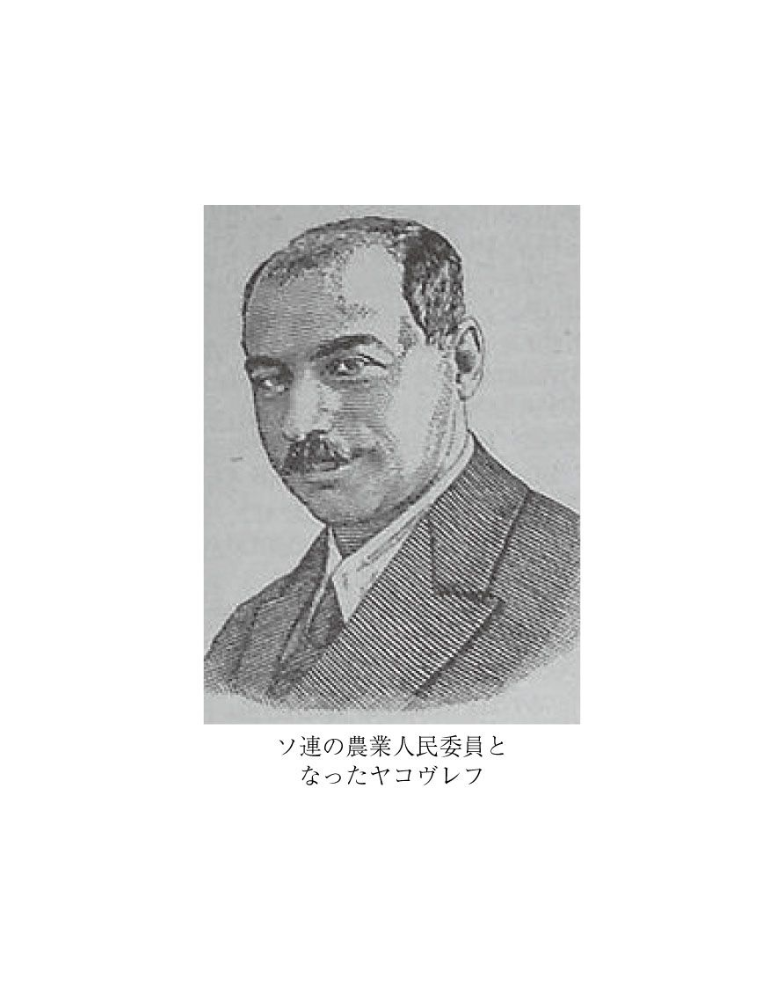
ヤコヴレフの議論における基本的要素は何であろうか？ それは、農民は独立した政治的役割を演じることができないこと、したがって必然的に都市階級が指導的役割を果たさなければならないこと、ところがロシアのブルジョアジーは農地革命において指導的役割を果たすことができないこと、したがって必然的にプロレタリアートが指導的役割を果たさざるをえないこと、農地革命の指導者としてプロレタリアートが権力に至ること、最後に、農民戦争に依拠したプロレタリアートの独裁が社会主義革命の時代を切り開くこと、である。これは、革命の性格が「ブルジョア的」なのか「社会主義的」なのかという形而上学的な問題設定を根底から覆す。
問題の核心は、ブルジョア革命の基盤をなした農業問題がブルジョアジーの支配のもとでは解決されえないという点に存する。プロレタリアートの独裁は、民主主義的農地革命の完成の後に出現したのではなくて、その完成の必要不可欠な前提条件として出現したのである。つまり、ずっと後になってから定式化されたヤコヴレフのこの図式のうちには、私によって一九〇五年の時点ですでに定式化されていた永続革命論の基本的諸要素がすべて含まれているということである。当時私にとってそれは歴史的予測の問題であった。それに対してヤコヴレフは、第一革命から二二年後に、そして十月革命から一〇年後に、若い研究スタッフ全員の地道な仕事にもとづいて、三つの革命の諸事件を総括した。その結果はどうであったか？ ヤコヴレフは一九〇五年の私の定式をほとんどそのまま繰り返しているのである。
では、永続革命論に対するヤコヴレフの態度はいかなるものか？ それは、自分の地位を維持しさらに高い地位に昇りたいと思っているどのスターリニスト官僚とも同じである。しかし、その場合、ヤコヴレフは、十月革命の推進力に関する自分の評価と反「トロツキズム」闘争とをどのように両立させるのか？ 実に簡単である。彼はそのような両立など一顧だにしない。帝政時代の多くの自由主義的役人たちがダーウィンの進化論を認めながら、ロシア正教の聖餐式にはきちょうめんに出席していたように、ヤコヴレフもまた、永続革命に対する迫害の儀式に参加するという代償を払って、時おりマルクス主義的思想を口にする権利をあがなうのである。このような例は他に何十と挙げることができる。
あと残されているのは次のことをつけ加えることだけである。ヤコヴレフは、先に引用した十月革命史に関する著作を個人のイニシアチブで書いたのではなくて、中央委員会の特別の決定にもとづいて書いたのであり、しかも、その決定は、ヤコヴレフの本の編集責任を私に委任していた（＊）。当時はまだ、レーニンは回復するものと思われており、永続革命をめぐって噓偽りの論争を引き起こすことなどエピゴーネンの誰もが思ってもみなかったことであった。いずれにせよ、公式の十月革命史の元編集者として、より正確には元編集予定者として、私は、この著者が意識的ないし無意識的に、あらゆる係争問題をめぐって、永続革命に関する私の最もタブーとされ最も異端とされた作品（「総括と展望」）の定式を逐語的に利用していることを、完全な満足をもって確認することができる。
＊原注 一九二二年五月二二日付の中央委員会組織局の会議議事録からの抜粋──第二一項「同志ヤコヴレフに（......）同志トロツキーの編集のもと十月革命史に関する教科書を作成することを委任する」。 （本文に戻る）
ボリシェヴィキのスローガンの歴史的運命に関してレーニン自身が下した最終的評価は次のことを疑いの余地なく物語っている。すなわち、「永続革命」の路線とレーニンの路線という二つの路線の相違が二次的で従属的な意義しか持っておらず、両者は最も基本的な点で一致していたということである。そして、十月革命によって完全に一つに合流した二つの路線のこの基本点は現在、スターリンの［一九一七年］二～三月の路線、およびカーメネフ、ルイコフ、ジノヴィエフの四～一〇月の路線とのみならず、また、スターリン、ブハーリン、マルトゥイノフの全中国政策とのみならず、ラデックの現在の「中国」路線とも非和解的に対立しているのである。
そして、一九二五年と一九二八年後半とで自分の評価をかくも根本的に変えたラデックが、「マルクス・レーニン主義の複雑さ」に対する私の無理解を暴露するというのなら、私はそれに対して次のように答えよう。私が二三年前に「総括と展望」の中で展開した思想の基本点は、現実の事態の進行によって完全に裏づけられ、まさにそれゆえに、それはボリシェヴィズムの戦略的路線と一致していたのだ、と。
とりわけ、一九二二年に、私が『一九〇五年』への「序文」の中で永続革命について述べたことを取り消すいかなる理由も私は見出さない。この著作は、レーニン存命中に無数に刷られ何度も版を重ね、党全体がそれを読み研究したものだが、一九二四年の秋になってはじめてカーメネフを「困惑」させ、一九二八年の秋にはラデックをも「困惑」させるようになったのである。この「序文」には次のように述べられている。
まさに一九〇五年の一月九日と一〇月ストライキに挟まれた時期に、ロシアにおける革命的発展の性格に関する筆者の見解が形成された。これは後に「永続革命」論という名称で呼ばれるようになる。この謎めいた名称は次のような思想を表現していた。ロシアの革命は直接的にはブルジョア的目標に当面しているが、けっしてそこにとどまることはできない。革命は、プロレタリアートを権力に就けずしては、その当面するブルジョア的課題さえも解決することはできないだろう。（......）
一二年の中断を経たとはいえ、この予測は完全に裏づけられた。［第一次］ロシア革命はブルジョア民主主義体制を実現することはできなかった。それは権力を労働者階級に引き渡さなければならなかった。だがこの階級は、一九〇五年時点では権力を獲得するにはまだあまりにも弱すぎた。そのせいで、労働者階級は、ブルジョア民主共和制のもとでではなく、六月三日君主制の圧制のもとで、自己を強化し成熟させなければならなかったのである。（６）（Ｌ・トロツキー『一九〇五年』序文、四～五頁）
「民主主義独裁」というスローガンに対して私がかつて下した最も手厳しい論争的評価の一つをここで引用しておこう。一九〇九年に私はローザ・ルクセンブルクのポーランド語機関誌に次のように書いた。
メンシェヴィキが、「われわれの革命はブルジョア革命だ」という抽象概念から出発して、自由主義ブルジョアジーが国家権力を獲得するまでは、彼らの行動にプロレタリアートの全戦術を適応させなければならないという思想に到達しているのに対し、ボリシェヴィキは、「民主主義的であって社会主義的でない独裁」というこれまた空虚な抽象概念から出発して、国家権力を手中に収めたプロレタリアートのブルジョア民主主義的自制という思想に到達している。たしかにこの問題における両者の相違はきわめて大きい。すなわち、メンシェヴィズムの反革命的側面が今日すでに全面的に現われているのに対して、ボリシェヴィズムの反革命的特徴は、革命が勝利した場合にのみ巨大な危険性となる恐れがある（７）。
この論文が私の著書『一九〇五年』のロシア語版に再録された際、同論文のこの箇所に、一九二二年一月、私は次のような注をつけた。
周知のように、このようなことは実際には起こらなかった。なぜなら、ボリシェヴィズムはレーニンの指導のもと、一九一七年の春に、すなわち権力を獲得する前に、この最重要問題において思想的再武装を──党内闘争なしにはすまなかったとはいえ──遂行したからである（８）。
この二つの引用文は一九二四年以降、激しい批判の砲火にさらされてきた。今では、それから四年遅れてラデックもこの批判に合流している。しかし、右で引用された章句を良心的に吟味すれば、そこには重大な予見とそれに劣らず重大な警告が含まれていることを認めないわけにはいかないだろう。何といっても、ボリシェヴィキのいわゆる「古参部隊」の全体が、二月革命の際に民主主義独裁と社会主義的独裁とを抽象的に対立させる立場に立ったという事実が残っているのだから。レーニンの代数的定式から、彼の最も近しい弟子たちは純粋に形而上学的な概念構築物をつくり上げ、それを革命の実際の発展過程に対立させた。最も重要な歴史的転換点において、ロシア国内のボリシェヴィキ指導部は反動的な立場をとり、もしレーニンが間に合って到着しなかったならば、彼らは、後に中国革命を破滅させたように、トロツキズムとの闘争という旗印のもと、十月革命を破滅させたかもしれない。
ラデックは非常に敬虔にも、党指導層の全体が誤った立場をとったのは一種の「偶発事」であったと描き出している。しかし、それは、カーメネフ、ジノヴィエフ、スターリン、モロトフ、ルイコフ、カリーニン、ノギーン、ミリューチン、クレスチンスキー、フルンゼ、ヤロスラフスキー、オルジョニキッゼ、プレオブラジェンスキー、スミルガなど何十人もの古参ボリシェヴィキが俗流民主主義の立場をとったことのマルクス主義的説明としてはまったく役に立たない。ボリシェヴィキの古い定式の代数的性格のうちに固有の危険性が含まれていたと認める方が正しいのではないだろうか？ すなわち、よくあることだが、政治的発展の中で革命的定式の空白部分がプロレタリア革命に敵対的な内容で満たされる危険性である。
言うまでもなく、もしレーニンがロシアに生活していて、とくに戦争の時期における党の発展を日々追っていたならば、彼は時宜を失せず必要な修正をほどこし、必要な解明を行なったことだろう。革命にとって幸いなことに、レーニンは、多少遅れはしたが、それでも必要な思想的再武装を行なうのに十分間に合って到着した。プロレタリアートの階級的本能のおかげで、そしてそれまでのボリシェヴィズムの活動全体によって保障された下部党員の革命的圧力のおかげで、レーニンは指導的上層部と闘争しそれと対立しつつ、十分短い期間のうちに党の政策を新しい軌道に切り換えることができたのである。
このことから、今日においても一九〇五年のレーニンの定式を、その代数的形式のままで、つまりは空白部分を伴ったままで、中国、インドやその他の国々に与え、中国やインドのスターリン＝ルイコフ的輩（譚平山、ロイなど）がその定式を小ブルジョア的な民族民主主義的内容で満たすに任せ、その後で、レーニンが間に合って登場して四月四日の修正をほどこすのを待たなければならない、ということになるだろうか？ だが、そのような修正がはたして中国やインドで保証されているだろうか？ それよりも、ロシアのみならず中国でも歴史的経験によってその必要性が証明された具体的内実を、あらかじめこの定式に入れておく方が正しいのではなかろうか？
以上述べてきたことは、プロレタリアートと農民の民主主義独裁というスローガンが単に「誤り」であったというふうに理解さるべきであろうか？ 現在、周知のごとく、人間の思想と行動のいっさいは二つのカテゴリーに分けられている。無条件に正しいもの、すなわち、今日、スターリンの「総路線」の構成部分に入っているものと、無条件に誤っているもの、すなわち、この路線と異なっているものである。もっとも、このことは言うまでもなく、今日無条件に正しいとされているものが明日には無条件に誤っていると宣言されることを妨げるものではない。しかし、「総路線」の登場以前は、思想の現実の発展もまた、真理にしだいに接近していくという方法にしたがっていた。算数における割り算のような単純な計算ですら、大きい数字から始めるにしろ小さい数字から始めるにしろ、何らかの適当な数字を選択し、計算してみて不適当な場合は、別の数字を選択しなければならない。大砲の試射においては、しだいに目標物に接近させる方法を「夾叉」と呼んでいる。このような接近の方法は政治においてもまったく不可避である。全問題はただ、砲弾の不着［大砲の弾が目標に届かないこと］は砲弾の不着だと速やかに認めて、時をおかずに必要な修正を行なうことである。
レーニンの定式の巨大な歴史的意義は、新しい歴史時代の条件の中で現代の最も重要な理論的・政治的問題の一つを徹底的に研究したことである。その問題とはまさに、さまざまな小ブルジョア集団、とりわけ農民がどの程度まで政治的独立性を獲得しうるか、である。ここまで徹底していたおかげで、ボリシェヴィキは一九〇五～一九一七年における自らの経験を踏まえて「民主主義独裁」に扉をぴったり閉ざすことができたのである。この扉の上にレーニンは自らの手で、「立ち入るべからず」の碑文を書き記した。彼はそれを次のような言葉で定式化した──「農民はブルジョアの後に従うか、労働者の後に従うかのどちらかだ」と。だが、エピゴーネンは、ボリシェヴィズムの古い定式が行き着いたこの結論を完全に無視し、この結論とは逆に、［民主主義独裁という］一時的な仮説を［コミンテルン］綱領の中に入れて聖典化する。一般的に言って、まさにこの点にエピゴーネン主義の本質があるのだ。
訳注
（１）トロツキー「十月の教訓」、『トロツキー研究』第四一号、五〇頁。 （本文に戻る）
（２）レーニン「プロレタリア革命と背教者カウツキー」、邦訳『レーニン全集』第二八巻、三一九～三二〇頁。 （本文に戻る）
（３）トロツキー「総括と展望」、邦訳は前掲『わが第一革命』、 三三二～三三三頁。 （本文に戻る）
（４）レーニン「農村における活動についての報告」、邦訳『レーニン全集』第二九巻、一九四頁。これは次の引用文と同じく第八回党大会での諸報告の一つである。 （本文に戻る）
（５）レーニン「ロシア共産党（ボ）第八回大会における中央委員会の報告」、邦訳『レーニン全集』第二九巻、一四四頁。 （本文に戻る）
（６）前掲『一九〇五年』、現代思潮社、一九六九年、一二～一三頁。なお、引用文中の「六月三日君主制」とは、一九〇七年六月三日における当時の首相ストルイピンの一種のクーデター（自由主義者や左派議員の多かった第二国会を解散し、選挙法を改悪して、大資本家と大地主と貴族の反動政党であるオクチャブリストを与党とする新しい保守体制を強権的に確立したこと）以後に存在した君主制のことを指しており、このクーデター後の体制を一般に「六月三日体制」（あるいは「六・三体制」）と呼ぶ。 （本文に戻る）
（７）トロツキー「われわれの意見の相違」、前掲『わが第一革命』、四四二頁。 （本文に戻る）
（８）同前、四七六頁。 （本文に戻る）
ラデックは、この数年間におけるあれこれの公式の批判的文言を繰り返すだけでなく、部分的にはそれをいっそう単純化している──そんなことができるとすればの話だが。彼の言うところによれば、私はそもそも、一九〇五年においても今日においても、ブルジョア革命と社会主義革命とを、東方と西方とを区別していないそうだ。スターリンに追随してラデックも、歴史的段階の飛び越えは許されないのだと私に説教する。
そこで、何よりもまず次のような問いが出されなければならない。もし一九〇五年に私にとって問題になっていたのが「社会主義革命」にすぎなかったならば、どうして私は、それが後進ロシアにおいて先進ヨーロッパよりも早く始まることができるなどと考えたのか？ 愛国主義や民族的誇りからか？ だがいずれにせよ実際にそうなったのだ。もし民主主義革命がわが国で一つの独立した段階として完成しえたならば、今日、わが国にプロレタリアートの独裁は存在しなかっただろう。このことを、ラデックは理解しているのか？ わが国でプロレタリアート独裁が西方よりも早く実現されたのはまさに、歴史が、ブルジョア革命の基本的内容をプロレタリア革命の第一段階と結合した──混同したのではなく、有機的に結合した──からこそであった。
ブルジョア革命とプロレタリア革命とを区別することは、ＡＢＣである。だが、このＡＢＣの次には、複数の文字を結合した音節が来る。歴史は、ブルジョア的アルファベットの最も重要な諸文字と社会主義的アルファベットの最初の諸文字のこのような結合をなしとげた。だがラデックは、すでに現実によって生じたこの音節からＡＢＣへとわれわれを引き戻す。残念ながら、本当なのだ。
一般に発展段階を飛び越すことができないかのように言うのは、馬鹿げている。歴史の生きた過程は、全体として取り上げられた発展過程、すなわちその最も完全な形での発展過程の理論的区分から生じる個々の「段階」を常に飛躍するし、危機的瞬間には革命政治に同じことを要求する。革命家と俗流的な漸進主義者とを分かつ第一の分岐点はまさに、この契機を認識しそれを利用する能力の有無にあると言うことができるだろう。
マルクスは工業の発展を、手工業、マニュファクチュア、大工業に区分したが、この区分は経済学の、より正確に言えば経済史学のＡＢＣに属する。しかしロシアでは、大工業は、マニュファクチュアと都市手工業の時代を素通りして出現した。これはすでに歴史の「音節」である。わが国では、類似の過程が階級関係や政治においても、起こった。ロシアの近代史は、マルクスの三段階──手工業、マニュファクチュア、大工業──の図式を知ることなくしては、理解することができない。しかしこれを知っているだけなら、何も理解していないのも同然である。というのも、実際にはロシアの歴史は──スターリンのお気に召さないだろうが──あれこれの段階を飛び越えたからである。しかしながら、ロシアに関しても、諸段階の理論的区別は必要である。それがなければ、この飛躍の内実が何であり、その結果が何であるかを理解することができないからだ。
別の面からこの問題にアプローチするならば（レーニンが二重権力にアプローチした際に時おりそうしたように）、ロシアにもマルクスの言う三つの段階がすべて存在したと言うこともできよう。ただし、最初の二つの段階はきわめて圧縮された萌芽的な形態で存在した。これらの「不全器官」──いわば点線で描かれた手工業とマニュファクチュアの段階──は、経済過程の発生的同一性を確証するには十分である。しかし、それにもかかわらず、この二つの段階の量的短縮は、わが国の社会構造全体にまったく新しい質を生じさせるに十分なほど大きなものだった。政治におけるこの新しい「質」を最もはっきりと示すものこそ十月革命なのである。
この問題において最も滑稽なのは、スターリンが「不均等発展の法則」と「段階の飛び越え不可能性」という二つのずた袋──それは彼の理論的全財産をなす──を背負って「理論化」にいそしんでいることである。スターリンは、発展の不均等性の本質がまさに諸段階の飛び越えにあること（あるいは特定の段階に過度に長くとどまっていること）を今日に至るまで理解していない。永続革命論に対抗してスターリンがまったく大真面目に持ち出しているのが...不均等発展の法則なのである。ところが、歴史的に後進的なロシアが先進的なイギリスよりも早くプロレタリア革命に至ることができるという予見は、不均等発展の法則に全面的に依拠しているのだ。ただ、こうした予見に必要だったのは、歴史の不均等性をそのダイナミックな具体性の全体において理解することであって、一九一五年のレーニンからの引用（１）を──その中身を引っ繰り返し無知蒙昧な解釈を施しながら──十年一日のごとく繰り返すことではない。
歴史的「段階」の弁証法は、革命的高揚期には比較的容易に理解することができる。反対に、反動期は必然的に安っぽい漸進主義の時代となる。スターリニズム、この濃縮された思想的俗悪さ、党内反動の固有の産物は、その政治的追随主義と些末主義を覆いかくすものとして一種の段階論崇拝をつくり出した。今やこの反動的イデオロギーはラデックをも配下に収めたのである。
歴史の過程のあれこれの段階は、理論的には必然的ではない場合であっても、一定の条件のもとでは必然的になる場合がある。逆に、理論的には「必然的」な段階であっても、発展のダイナミズムによってゼロに圧縮されることがあるのであって、革命の時代にはとりわけそうである。革命が歴史の機関車と呼ばれるのもゆえあってのことなのだ。
たとえば、わが国のプロレタリアートは、憲法制定議会にせいぜい数時間の存在を──それもただ裏庭で──許しただけで、民主主義的議会主義の段階を「飛び越えた」。しかし、中国では現在の反革命の段階を飛び越えることはけっしてできない。それはちょうど、わが国で四つの国会の時期を飛び越えることができなかったのと同じである。しかしながら、中国における現在の反革命的段階は、けっして歴史的に「必然的」なものではなかった。それはスターリン＝ブハーリンの破滅的政策の直接の結果であって、彼らは「敗北の組織者」として歴史にその名を残すことだろう。だが、日和見主義の果実は、革命の過程を長期にわたって阻害しうる一つの客観的要因となったのである。
大衆の発展における現実的な段階、すなわち客観的に条件づけられた段階を飛び越えようとするあらゆる試みは、政治的冒険主義を意味する。労働者大衆の大多数が、社会民主主義者を、いわんや国民党を、あるいは労働組合主義者を信頼しつづけているかぎり、われわれは、大衆の前にブルジョア権力の即時打倒の任務を提起することはできない。それに向けて大衆を準備させることがまず必要になる。この準備がきわめて長い「段階」になることもあるだろう。しかしながら、あたかもわれわれが「大衆とともに」国民党の内部に（まずは右側に、次に左側に）席を占めなければならないとか、あるいは「大衆が指導者たちに幻滅するまで」はストライキ破りのパーセルとのブロックを維持し、その間は相互の友好関係にもとづいて彼らを支持しなければならないなどと信じることができるのは、追随主義者だけである。
ところでラデックは、あれこれの「弁証法家」たちが、国民党からの脱退や英露委員会との決裂という要求を、段階の飛び越え以外の何ものでもなく、それどころか農民（中国の場合）や労働者大衆（イギリスの場合）から乖離することに他ならないと決めつけたことを、おそらく忘れてはいないだろう。ラデック自身がこれらの憐れな「弁証法家」に属していたのだから、なおさらよく覚えているはずである。今では彼は、その日和見主義的誤りを深化させ一般化させているにすぎない。
一九一九年四月にレーニンは、「第三インターナショナルとその歴史上の地位」という綱領的論文の中で、次のように述べている。
おそらく次のように言っても間違いではないだろう。ロシアが後進的であること、そのロシアが、ブルジョア民主主義を越えて、民主主義の最高の形態へ、ソヴィエト民主主義ないしプロレタリア民主主義へと「飛躍」したこと、この二つのあいだの矛盾、まさにこの矛盾こそ......西方においてソヴィエトの役割の理解をとくに困難にし、あるいは遅らせた原因の一つであったと（２）。（レーニン、第一六巻、一八三頁）。
レーニンは、ここでは直接に、ロシアが「ブルジョア民主主義を越えて飛躍」したと言っている。もちろんレーニンは心中ではこの主張にあらゆる必要な限定を課していた。というのも、弁証法はすべての具体的諸条件を毎回改めて繰り返すことにあるのではないし、この筆者［レーニン］は、読者自身も何ごとかを考えていることを前提していたからである。それにもかかわらず、ブルジョア民主主義を越えての飛躍という事実は依然として残るのであり、そのことは、レーニンの正しい評価によれば、あらゆる教条主義者や図式主義者にとってソヴィエトの役割の理解をはなはだ困難にしたのである──そしてこのことは、「西方において」だけでなく、東方においても理解を困難にしている。
そして、今では思いがけなくもラデックをかくも不安に陥れているあの『一九〇五年』への「序文」は、この問題に関してまさにこう述べている。
ペテルブルクの労働者は、すでに一九〇五年に、自分たちのソヴィエトをプロレタリア政府と呼んでいた。この呼称は、当時の日常語にまでなっていて、労働者階級による権力獲得のための闘争の綱領に完全に収まるものだった。しかし、それと同時にわれわれは、ツァーリズムに対し政治的民主主義の全面的な綱領（普通選挙権、共和制、民兵、等）を対置した。そうする以外にはありえなかった。政治的民主主義は、労働者大衆の発展における必然的な一段階だからだ。ただし、次のような重大な留保を付した上でのことである。すなわち、ある場合にはこの段階を通過するのに数十年もかかるのに対して、別の場合には革命的情勢のおかげで、政治的民主主義が制度として現実のものとなる以前にさえ、大衆が政治的民主主義の偏見から解放されることもありうる、ということである（３）。（トロツキー『一九〇五年』序文、七頁）
ちなみに、先に引用したレーニンの思想と完全に一致するこれらの文言は、「政治的民主主義の全面的な綱領」を国民党の独裁に対置することの必要性を十分に説明するものだと私には思われる。だが、まさにこの点を、ラデックは左から攻撃する。革命的高揚の時期には、彼は、中国共産党が国民党から脱退することに反対した。反革命的独裁の時期になると、民主主義のスローガンのもとに中国労働者を動員することに反対する。これでは、夏に毛皮を提供し、冬に衣服を剝がすようなものだ。
訳注
（１）一九一五年のレーニンからの引用......一九一五年八月二三日付『ソツィアル・デモクラート』誌に掲載された「ヨーロッパ合衆国のスローガンについて」を指している。そこには次の有名な一節があり、スターリンの一国社会主義論の最重要典拠となっている──「経済的・政治的発展の不均等性は資本主義の無条件的な法則である。ここからして、社会主義の勝利は、はじめは少数の資本主義国で、あるいはただ一つの資本主義国ででも可能である、という結論が出てくる」（レーニン「ヨーロッパ合衆国のスローガンについて」、邦訳『レーニン全集』第二一巻、三五二頁）。 （本文に戻る）
（２）レーニン「第三インターナショナルとその歴史上の地位」、邦訳『レーニン全集』第二九巻、三〇六頁。 （本文に戻る）
（３）邦訳は前掲『一九〇五年』、一五頁。 （本文に戻る）
スターリン流の歴史的「段階」論──漸進主義的・俗物的なそれであって、革命的ではない段階論──に迷い込んだ結果、ラデックも今では、プロレタリアートと農民の民主主義独裁のスローガンを東方全体にとっての聖典にしようとしている。レーニンは、ボリシェヴィズムの「作業仮説」を特定の国［ロシア］の発展過程に適用し、それを修正し、具体化し、そしてある一定の段階で放棄するに至ったのだが、ラデックは、この「作業仮説」から超歴史的な図式をこしらえる。まさにこの点に関してラデックは自らの論文の中で飽きることなくこう繰り返している。
この理論とそこから生じる戦術は、資本主義的発展がまだ未熟なすべての国々──ブルジョアジーが過去の政治的社会構成体から遺産として残された諸問題をいまだ清算していない国々──に適用可能である。
この定式をちょっと考えてみよう。それは、一九一七年におけるカーメネフの立場を仰々しく正当化するものではないのか？ ロシア・ブルジョアジーは二月革命を通じて民主主義革命の諸問題を「清算」したのか？ いや、それらは、最重要問題たる農業問題を含めて、未解決のままに残された。ではレーニンはどうして、古い定式が依然として「適用可能」であることを理解できなかったのか？ なぜ彼はそれを放棄したのか？
ラデックはこの問いに対し先ほどはこう答えていた──それはすでに「実現された」からである、と。われわれはすでにこの回答を検討した。それはまったく根拠がなく、ましてやラデックの口からそれが語られる場合には二重に根拠がない。なにしろラデックは、レーニンの古い定式の本質が権力形態にあるのではけっしてなく、プロレタリアートと農民の協力によって農奴制を現実に清算することにあるのだという立場に立っているのだから。だが、これ［農奴制の現実的清算］こそまさに、ケレンスキー体制がなしえなかったことなのである。
このことから明らかなのは、今日における最も先鋭な問題である中国問題を解決するために、ラデックがわが国の過去へと旅したことがまったくの無駄足だったということである。研究しなければならなかったのは、トロツキーが一九〇五年に理解していた、ないし理解していなかったことではなくて、むしろ一九一七年二～三月にスターリンとモロトフが、とくにルイコフとカーメネフが、理解していなかったことである（この時期に当のラデックがどのような立場をとっていたか、私は知らない）。なぜなら、もし民主主義独裁が二重権力を通じて、ボリシェヴィズムの中心的スローガンの即時変更を要するほどに「実現された」とみなすことができるならば、中国において「民主主義独裁」が、国民党の体制を通じて、すなわち、譚平山という尻尾を伴った蔣介石と汪精衛（＊）の支配を通じて、はるかに完全かつ全面的に実現されたと認めなければならないからである。とすれば、中国においてスローガンの変更はなおさら義務的なものであったはずである。
＊原注 蔣介石は、国民党右派の指導者であり、汪精衛は国民党左派の指導者である。譚平山は中国でスターリン＝ブハーリンの政策を実行していた共産党員大臣。 （本文に戻る）
だが、「過去の政治的社会構成体の遺産」は中国ですでに清算されたのか？ いや、清算されてはいない。ではそれは、レーニンが「古参ボリシェヴィキ」の全上層に宣戦布告した一九一七年四月四日にはわが国で清算されていたのか？ ラデックは、絶望的な自己矛盾に陥り、すっかり混乱し、四方八方走り回る。彼は、「過去の構成体の遺産」に関して複雑な記述的表現を用い、それをさまざまな箇所でいろいろと言いかえているのに、封建制ないし農奴制の遺物というより簡潔な表現を明らかに避けている。これがけっして偶然ではないことに注目しよう。なぜか？ その理由は、ラデックがほんの昨日までこの遺物の存在をきっぱり否認し、それによって民主主義独裁のスローガンのための基盤そのものをすっかり掘りくずしていたからである。共産主義アカデミーでの報告の中で、ラデックは次のように述べていた。
中国革命の水源は、一九〇五年におけるわが国の革命の水源に劣らず深いものである。中国における労働者階級と農民との同盟は、一九〇五年におけるわが国の場合よりも強力であろう、と確信をもって主張することができる。中国で労働者が打ち破るべきは二つの階級ではなく、一つの階級、すなわちブルジョアジーだけになるだろうという単純な理由からである。
たしかに「単純な理由」だ。しかし、プロレタリアートが農民とともに、一つの階級たるブルジョアジーを、つまり封建制の遺物ではなくブルジョアジーを打ち破るのだとすれば、そうした革命は、お尋ねするが、いったい何と呼ばれるのか？ まさか民主主義革命ではあるまい。注目すべきは、ラデックが前述の言葉を語ったのが一九〇五年ではなく、一九〇九年でさえなく、［ラデックが左翼反対派の一員であった］一九二七年三月であることだ。いったいどのように辻褄を合わせたらいいのか？ 非常に簡単である。一九二七年三月に、ラデックはまたしても正しい道から逸脱して、逆の極端に走ったのである。反対派は、中国問題に関する自派のテーゼの中に、当時のラデックの一面的理解に対する根本的な修正を入れておいた。
とはいえ、先に引用したラデックの言葉の中にはそれでもなお真理の核心部分が含まれていた。すなわち、中国には地主階層がほとんど存在しておらず、大土地所有者は帝政ロシアにおけるよりもはるかに密接に資本家と結びついており、それゆえ中国における農業問題の比重は帝政ロシアの場合よりもはるかに小さいということ、その代わり民族解放の課題が巨大な場所を占めているということである。このことから、国の民主主義的再生のための独立した革命的政治闘争を行なう能力に関して、中国の農民がロシアの農民の場合よりもけっして大きいはずがないということになる。このことは、とりわけ、一九二五年以前にも中国革命の三年間にも、その旗に農地革命と記したナロードニキ政党が中国の地にまったく登場しなかったことに現われている。以上のいっさいを総合するなら、民主主義独裁の定式が、すでに一九二五～二七年の経験を経た後の中国にとって、二月革命後のロシアにおけるよりもずっと危険な反動的落とし穴であることは明らかであろう。
ラデックによるいっそう遠い過去へのもう一つの旅もまた無慈悲に彼自身にはね返ってくる。今回問題にされているのは、一八五〇年にマルクスによって提起された永続革命のスローガン（１）である。ラデックはこう書いている。
マルクスには民主主義独裁のスローガンは存在しなかったが、レーニンにあっては、一九〇五年から一九一七年にかけてこのスローガンが政治的基軸をなしていて、資本主義的発展を開始したばかりの（？）すべての（?!）国々における彼の革命概念の構成部分となった。
ラデックは、レーニンの二、三の章句にもとづいて、この立場の相違を、ドイツ革命の中心的任務が民族統一であったのに対して、わが国の場合には農地革命であったということで説明する。このような対置は、それが機械的になされるのではなく必要な釣り合いを守ってなされるならば、一定の限界内では正しい。だが、そうだとすると、中国はどうなるのか？ 半植民地である中国における民族問題の比重は、農業問題と比較して、一八四八～五〇年のドイツよりもはるかに大きい。なぜなら、中国では民族統一と民族解放とが同時に問題になっているからだ。マルクスが永続革命の展望を定式化したのは、ドイツにおいて、すべての王座がまだ健在で、ユンカーの階級が土地を保有し、ブルジョアジーの上層が権力の控えの間に入ることしか許されていなかったときであった。中国には、一九一一年［の辛亥革命］以来、君主は存在しておらず、封建地主の独立した階級が存在しておらず、民族ブルジョア政党たる国民党が権力の座にあって、農奴制的諸関係は、ブルジョア的搾取といわば化学的に融合している。このように、ラデックが試みたマルクスの立場とレーニンの立場との対比は、中国における民主主義独裁のスローガンと完全に相反している。
ところがラデックは、マルクスの立場をも不真面目に偶然的かつエピソード的にしか取り上げておらず、マルクスがまだ農民を小ブルジョア的都市民主主義派の自然な同盟者とみなしていた一八五〇年の回状に議論を限定している。マルクスは当時、ドイツにおける民主主義革命の独立した段階──すなわち都市の小ブルジョア的急進派への権力の一時的な移行──が農民に依拠してなされると期待していた。まさにここに問題の核心があった！ しかし、かかる事態は結局起こらなかった。そしてこれは偶然ではない。すでに前世紀中葉、小ブルジョア民主主義派には自己の独立した革命を遂行する能力がなかったのである。そしてマルクスはこの教訓を学んだ。一八五六年四月一六日（２）──すなわち前述の回状から六年後に──マルクスはエンゲルスに宛てて次のように書いている。
ドイツにおいて全事態は、プロレタリア革命が農民戦争の第二版のようなもので支持されうるかどうかにかかっているだろう。そうなれば事態はすばらしいものになるだろう（３）。
ラデックによって完全に忘却されているこの注目すべき文言は、十月革命にとってのみならず、ここでわれわれが論じている問題全体にとってこの上なく貴重な鍵となっている。マルクスは農地革命を飛び越えたのか？ いや、すでに見たように、飛び越えなかった。彼は、プロレタリアートと農民の協力が来る革命にとって必要であるとみなしたか？ しかり、そうみなした。彼は革命における農民の指導的な、あるいはせめて独立した役割の可能性を認めたか？ いや、認めなかった。マルクスが出発点にしたのは次のことである。農民は独立した民主主義革命においてブルジョア民主主義派を支持することができなかったが（それはブルジョア民主主義派のせいであって、農民のせいではない）、プロレタリア革命においてプロレタリアートを支持することができるだろう、と。「そうなれば事態はすばらしいものになるだろう」。ラデックは、このことがまさに十月革命で起こったこと、それもなかなか見事に起こったことを認めたくないようである。
中国に関してこのことから導かれる結論は、まったくもって明白である。論点は、同盟者としての農民の決定的役割にあるのでも、農地革命の巨大な意義にあるのでもなく、独立した民主主義的農地革命が中国において可能なのか、それとも「農民戦争の新版」がプロレタリア独裁を支持するのか、である。問題はこのようにのみ立てられる。違った仕方で問題を立てる者は、何ごとも学ばず、何ごとも理解しなかった者であって、ただ中国共産党を混乱させ打撃を与えるだけである。
東方諸国のプロレタリアが勝利への道を切り開くためには、まず何よりもスターリン＝マルトゥイノフの衒学的で反動的な「段階」論・「階段」論を排除し、放逐し、踏みつけ、箒で一掃してしまわなければならない。ボリシェヴィズムは、このような俗流的漸進主義との闘争の中で成長した。アプリオリに設定された進路にではなく、階級闘争の現実の歩みに足並みをそろえなければならない。さまざまな発展水準にある国々に上から順序を定め、それらの国々にさまざまな革命的配給食を食糧切符で事前に割り当てるというスターリン＝クーシネン流観念を放逐せよ。階級闘争の現実の歩みに足並みをそろえよ。この点でかけがえのない導き手となるのはレーニンその人である。ただレーニンの全体を取り上げなければならない。
一九一九年にレーニンは、とくにコミンテルンの組織化との関連で、過ぎ去った時期の結果を総括して、それにいっそう完全な理論的定式を与えたが、その際、ケレンスキー体制と十月革命の経験を次のように解釈している。階級的矛盾がすでに発達しているブルジョア社会においては、公然ないし仮装されたブルジョアジーの独裁かプロレタリアートの独裁かのどちらかのみが存在しうる。いかなる中間的な体制もありえない。あらゆる［ブルジョア］民主主義、あらゆる「民主主義派の独裁」（皮肉な引用符はレーニンによるもの）は──ヨーロッパの最後進国たるロシアの経験がそのブルジョア革命の時期に、すなわち「民主主義派の独裁」に最も好都合な時期に示したように──ブルジョアジーの支配の隠れみのにすぎない、と（４）。こうした結論は、レーニンによって、［ブルジョア］民主主義に関するテーゼ（５）の基礎に据えられたが、それは二月革命と十月革命の諸経験の総和としてはじめて生まれたのである。
ラデックは他の多くの者と同様、［ブルジョア］民主主義の問題をそもそも民主主義独裁の問題から機械的に切り離す。ここに大きな誤りの源泉がある。「民主主義独裁」は、革命期におけるブルジョアジーの仮装された支配でしかありえない。このことは、わが国の「二重権力」の経験（一九一七年）だけではなく、中国国民党の経験にも示されている。
エピゴーネンの救いがたさを何よりもはっきりと示しているのは、彼らが今日においても依然として、民主主義独裁をブルジョアジーの独裁のみならずプロレタリアートの独裁にも対置しようとしている事実である。だが、そのような対置が可能であるためには、民主主義独裁が中間的内容を、すなわち小ブルジョア的内容を持っていなければならない。それへのプロレタリアートの参加は事態を変えるものではない。なぜなら、さまざまな階級路線の算術的平均など基本的に存在しないからである。もしそれがブルジョアジーの独裁でもプロレタリアートの独裁でもないとしたら、小ブルジョアジーが明確で決定的な役割を演じなければならないことになろう。だが、これは、三つのロシア革命と二つの中国革命がすでに実践において答えを出している問題にわれわれを引き戻す。すなわち、帝国主義の世界的支配という条件のもとにある今日、小ブルジョアジーが、資本主義諸国で──たとえそれらの国々が後進的で、その民主主義的課題の解決にいまだ至っていないとしても──指導的な革命的役割を演じることができるのか、という問題である。
小ブルジョアジーの下層が自らの革命的独裁を樹立した時代はたしかに存在したし、われわれもそのことは承知している。しかし、これは、当時のプロレタリアートないし前プロレタリアートがまだ小ブルジョアジーから分離しておらず、反対に未発達な形態で闘争の基本的中核を構成していた時代であった。今日ではまったく事情が異なる。後進国においてさえ、現代のブルジョア社会を指導する能力を小ブルジョアジーに認めることなど、問題になりえない。なぜなら、資本主義の発展とともに、プロレタリアートはすでに小ブルジョアジーから分離し、大ブルジョアジーと敵対的に対峙し、小ブルジョアジーを取るに足りない存在へと運命づけ、農民をしてブルジョアジーとプロレタリアートのどちらかを政治的に選択する必要性の前に立たせているからである。農民が外見上小ブルジョアジーの党を選択しているように見える場合でも、つねに、彼らは事実上、金融資本の尻尾を支持している。民主主義革命における農民と小ブルジョアジーの独立性の程度（程度だけだ！）をめぐる問題において、第一次ロシア革命の時期には、あるいは第一革命と第二革命とのあいだの時期には、まだ意見の相違は存在しえたが、この問題は、この一二年間の諸事件の歩み全体によって決着がつけられた──しかも取り消し不可能な形で。
この問題は、十月革命以降、多くの国で、あらゆる可能な形態および組み合わせのもとで、何度も改めて実践的な形で提起されたが、どこでもその結果は同じだった。ケレンスキー体制の経験以降で重要だったのは、すでに述べたように、国民党の経験である。しかし、これに劣らぬ意義を有しているのは、イタリアにおけるファシズムの経験である。そこでは、武器を手にした小ブルジョアジーが旧来のブルジョア諸政党から権力を奪取したが、その指導者を通じてただちにこの権力は金融寡頭制に引き渡された。同じ問題はポーランドでも提起されたが、そこではピウスツキの運動（６）が反動的なブルジョア・地主政府に直接対抗して展開され、小ブルジョア大衆のみならずプロレタリアートの広範な層もそこに期待を寄せた。古参のポーランド社会民主主義者ヴァルスキが、「農民の過小評価」に陥るのを恐れて、ピウスツキのクーデターを「労働者と農民の民主主義独裁」と同一視したのは、偶然ではない。
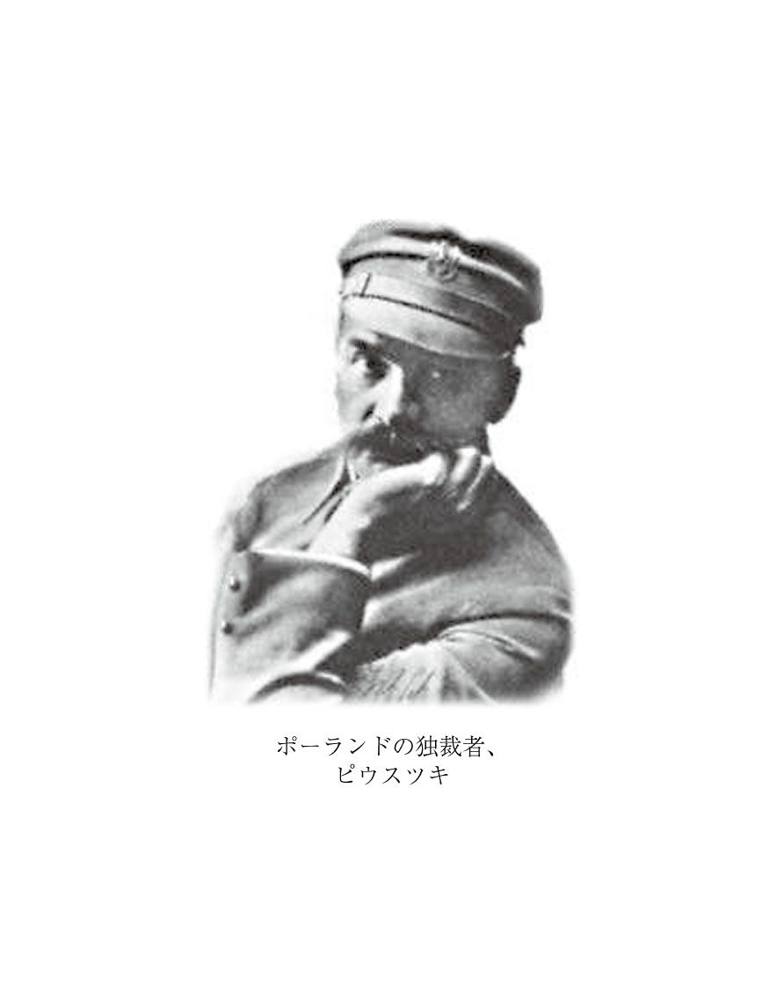
私がここで、ブルガリアの経験、すなわちスタンボリスキーの党に対するコラロフ＝カバクチェフ一派の混乱した恥ずべき政策（７）、あるいはアメリカ合衆国における農民・労働者党（８）の不面目な実験、ジノヴィエフとラディチとのロマンス（９）、ルーマニア共産党の経験、等々、等々と際限なく分析していったならば、紙幅を取りすぎるだろう。これらの事実のいくつかの本質的な諸要素については、私の『コミンテルン綱領批判』［『レーニン死後の第三インターナショナル』］の中で詳しく分析されている。その基本的結論は、十月革命の教訓を完全に裏づけるものであり、いっそう強固なものにしている。すなわち、農民を含む小ブルジョアジーは革命期であれ反動期であれ、現代のブルジョア社会を、たとえそれが後進国であっても指導することができない、ということである。農民にできるのは、ブルジョアジーの独裁を支持するか、プロレタリアートの独裁を支持するかのどちらかである。中間的諸形態は、すでにぐらつきはじめているか動乱の直後でまだ足元のおぼつかないブルジョアジーの独裁を覆い隠すものでしかない（ケレンスキー体制、ファシズム、ピウスツキ体制）。
農民にできるのは、ブルジョアジーの後に従うか、プロレタリアートの後に従うかのどちらかである。しかし、農民がまだプロレタリアートの後に従っていない段階で、プロレタリアートが何としてでも農民といっしょに進もうとすると、プロレタリアートは事実上、金融資本の後尾につき従う羽目に陥る。たとえば、一九一七年のロシアにおける祖国防衛派の労働者、中国における国民党労働者（その中には共産党員もいた）、一九二六年のポーランドにおけるＰＰＳ（＊）の党員労働者および一部の共産党員、等々。このことを徹底的に考え抜こうとせず、諸事件の生きた経験にもとづいてこのことを理解しなかった者は、そもそも革命政治に口を出さない方がよい。
レーニンが二月と十月の教訓から最も完全で総括的な形で導き出した基本的結論は、「民主主義独裁」の思想をきっぱりと否定するものであった。一九一八年以来、レーニンは何度となく次のように書いている。
すべての経済学──誰かがそこから何かを学んだとするならば──と革命の全歴史、一九世紀全体の政治的発展の全歴史は、農民が、労働者の後に従うかブルジョアの後に従うかのどちらかであることをわれわれに教えている。（......）もし、どうしてそうなのかがいまだにわからない者がいるとすれば、そういう市民に私はこう言おう。（......）一八世紀と一九世紀のどんな大革命の発展でも、一九世紀のどの国の政治史でもいいから、それについてよく考えてみたまえ。どうしてそうなのかが諸君にもわかるだろう。資本か、それともそれを打倒しようとするプロレタリアートのどちらかだけが支配勢力となりうるというのが、資本主義社会の経済のあり方なのである。この社会の経済には、それ以外の支配勢力は存在しない（11）。（第一六巻、二一七頁）
ここで問題にされているのは現代のイギリスやドイツではない。一八世紀および一九世紀のあらゆる大革命の、すなわち後進諸国におけるブルジョア革命の教訓にもとづいて、レーニンは、ブルジョアジーの独裁かプロレタリアートの独裁かのどちらかだけが可能であるという結論に至っている。いかなる「民主主義」独裁も、すなわちいかなる中間的独裁もありえないのだ。
＊ ＊ ＊
ラデックの理論的・歴史的旅は、すでに見たように、ブルジョア革命と社会主義革命とを区別しなければならない、というかなり貧弱な決まり文句に要約される。この「段階」にまで降りていったラデックはクーシネンにまっすぐ手を差しのべる。クーシネンは、その唯一の知的資源たる「常識」にもとづいて、次のように考える。先進国でも後進国でもどちらでもプロレタリアート独裁のスローガンを提起することができるなどというのはありそうもない、と。何も理解しない人間の純朴さをもってクーシネンは、トロツキーが一九〇五年以来「何も学んでいない」と断罪する。ラデックもまた、クーシネンに追随して次のように皮肉を言う。トロツキーにとっては、「中国革命やインド革命の独自性はまさに、それらが西ヨーロッパの革命と何ら区別されず、したがってその第一歩（?!）からしてプロレタリアートの独裁に至るにちがいないという点にある」と。
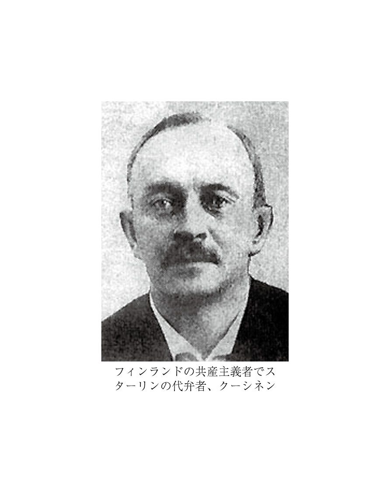
ラデックはささやかなことを忘れている。プロレタリアートの独裁が実現されたのは、西ヨーロッパの一国においてではなく、他ならぬ東ヨーロッパの後進国においてであった、ということを。歴史の過程がロシアの「独自性」を看過したのはトロツキーの罪なのか？ ラデックはさらに、ブルジョアジー（もっと厳密に言えば、金融資本）が、すべての資本主義国を、たとえそれらの国がさまざまな発展水準、社会構造、伝統、等々を、すなわちそれぞれあらゆる「独自性」を有していたとしても、それでもやはりそれらの国を支配していることを忘れている。ここでもまた、この独自性に対する敬意の不足は、歴史の発展に由来するのであって、けっしてトロツキーに由来するのではない。
それでは、先進国と後進国との相違はどの点にあるのか？ 相違は大きいが、それでもやはり資本主義的諸関係の支配という限界内にとどまっている。各国におけるブルジョア支配の形態と方法は著しく異なる。一方の極では、その支配は露骨で絶対的な性格を帯びる。アメリカ合衆国がそれである。他方の極では、金融資本は、時代遅れになったアジア的中世の諸制度に適応し、それを自らに従属させ自己の方法をそれに押しつける。インドがそうだ。だがどちらにおいてもブルジョアジーが支配している。このことからして、プロレタリアートの独裁もまた、社会的基盤、政治的形態、直接の課題や事業のテンポに関して、各資本主義国できわめて多様な性格を帯びるだろう。しかし、人民大衆を帝国主義者と封建階層と民族ブルジョアのブロックに対する勝利に導くことができるのは、プロレタリアートの革命的へゲモニーだけであり、それは権力を獲得した後にプロレタリアート独裁に転化するだろう。
ラデックは、人類を二つのグループに、すなわち社会主義独裁にとって「成熟した」グループと民主主義独裁にとってのみ「成熟した」グループに分類することによって、私とは対照的に各国の「独自性」なるものを考慮したつもりになっている。実際にはラデックは生気のない紋切り型を提示しているだけで、それは共産主義者を当該国の真の独自性の、すなわち、それらの国における歴史発展のさまざまな水準と諸段階の生きた組み合わせの研究から逸らせるだけである。
自国の民主主義革命を実現ないし完成させていない国々は、きわめて重大な意義を持った固有の特殊性を有しており、まさにこの特殊性こそプロレタリア前衛の綱領の基礎とならなければならない。こうした独自の国民的綱領にもとづいてはじめて、共産党は、ブルジョアジーとその民主主義的代理人に対抗して、労働者階級と勤労者一般の多数派を獲得するための真の闘争を展開し、成功させることができるのである。
この闘争における成功の可能性は、もちろん、その国の経済におけるプロレタリアートの役割によって、したがってまた資本主義的発展の水準によってかなりの程度決定される。しかし、これはけっして唯一の基準ではない。それに劣らず重要な意義を有しているのは、きわめて広範で切実な「人民的」問題、すなわち国民の大多数がその解決に関心をもち、そのためには最も大胆な革命的措置をも求めるような問題がその国に存在するかどうか、である。この種の問題としては農業問題と民族問題があり、両者はさまざまな形で結びついている。先鋭な農業問題が存在し、耐えがたい民族的抑圧が存在する植民地諸国においては、比較的少数の若いプロレタリアートであっても、民族民主主義革命にもとづいて、先進国のプロレタリアートが純社会主義的な基盤にもとづく場合よりも早く権力に到達することができる。十月革命を経た後では、このことは証明を要しないはずである。しかし、何年にもわたる思想的反動とエピゴーネンの理論的堕落のせいで、革命の初歩的諸概念は、最初から学び直さなければならないほどに酸っぱくなり、腐臭を発し、すっかりクーシネン化されてしまっている。
以上述べたことは、世界のすべての国が現在すでに社会主義革命にとってある程度成熟しているということを意味するだろうか？ いや、これは誤った問題設定であり、生気のない、スコラ的で、スターリン＝ブハーリン的な問題設定である。全体としての世界経済は争う余地なく社会主義にとって成熟している。しかしながら、このことは、各国のそれぞれが成熟していることをけっして意味しない。ではその場合、個々の後進諸国、すなわち中国やインド等々におけるプロレタリアートの独裁はどうなるのか？ われわれはこう答える。歴史は注文によって作ることはできない、と。ある国が、プロレタリアートの独裁にとって「成熟」していても、社会主義の独立した建設を成し遂げるほどに成熟していないだけでなく、社会化の広範な措置にとってさえ成熟していないこともある。社会発展の予定調和から出発してはならない。不均等発展の法則は、スターリンの優しい理論的抱擁にもかかわらず、やはり生きている。この法則の力は、各国間の関係においてのみならず、あれこれの国の内部における種々の過程の相互関係においても有効である。経済と政治の不均等な諸過程の調和は、世界的規模においてのみ達成されうる。このことはとりわけ、中国におけるプロレタリアートの独裁の問題を中国経済と中国政治の枠内だけで考えることはできない、ということを意味する。
まさにここにおいてわれわれは、国際革命的な永続革命論と民族改良主義的な一国社会主義論という、相互に排除しあう二つの観点にぴたりと接近する。後進的な中国のみならず、総じて世界のいかなる国も、それ自身の一国の枠内で社会主義の建設を成し遂げることはできない。すなわち、国境を越えるまでに成長した高度に発達した生産力は、国有化にとって十分発達していない生産力と同じぐらい、それに対立する。たとえばイギリスにおけるプロレタリアートの独裁が逢着する矛盾や困難は、中国におけるプロレタリアートの独裁の前に立ちはだかる矛盾や困難とはたしかに性格が異なるだろうが、けっしてより小さいものではないだろう。これらの矛盾を克服することは、どちらの場合においても、国際革命の道を通じてのみ考えうる。このような問題設定は、中国が社会主義的改造にとって「成熟している」か「成熟していない」かという問題そのものを取り除く。それでも依然として議論の余地がないのは、中国の後進性がプロレタリア独裁の諸課題を著しく困難なものにするだろう、ということである。しかし、繰り返そう。歴史を注文によって作ることはできないし、中国プロレタリアートに自由な選択を委ねた者は誰もいない、と。
ではこれは、後進的な植民地諸国をも含むすべての国が、社会主義にとってではないにせよ、少なくともプロレタリアート独裁にとってはすでに成熟していることを意味するのだろうか？ いや、意味しない。それでは、民主主義革命は、とりわけ植民地における民主主義革命はいったいどうなるのか？ この問いに対して私は別の問いをもって答えよう。あらゆる植民地諸国がその民族民主主義的諸課題の即時かつ完全な解決にとって成熟しているなどと、いったいどこに書いてあるのか、と。問題の向きを引っ繰り返さなければならない。帝国主義時代の諸条件のもとでは、民族民主主義革命は、その国の社会的・政治的諸関係がプロレタリアートを人民大衆の指導者として権力に押し上げるほどに成熟している場合のみ勝利に至ることができる、と。
では、まだそうなっていない場合には？ その場合には、民族解放闘争は、きわめて中途半端な結果しかもたらさないだろうし、その結果は勤労大衆に全面的に敵対するものとなるであろう。一九〇五年には、ロシアのプロレタリアートは、自己の周囲に農民大衆を結集して権力を獲得するには十分強力ではないことがわかった。まさにそれが原因で、革命は途中で停止し、その後ますます衰退していった。中国では、例外的なまでに有利な状況があったにもかかわらず、コミンテルンの指導部が中国プロレタリアートの権力獲得闘争を妨害し、民族的課題は、国民党の体制のうちに、惨めで不安定でけち臭い解決を見出した。
あれこれの植民地諸国がいつ、いかなる条件のもとで、農業問題と民族問題の真に革命的な解決にとって成熟するようになるかを予言することはできない。しかし、いずれにせよ、現在われわれは完全な確信をもってこう言うことができる。中国のみならずインドでも、プロレタリアートの独裁を通じてのみ、真に人民的な、すなわち労働者・農民的な民主主義に到達することができるだろうと。その途上にはなお多くの段階や局面があるだろう。人民大衆の圧力のもとで、ブルジョアジーは左に数歩移動するかもしれないが、それはその後でいっそう容赦なく人民に襲いかかるためである。二重権力の時期はありうるし、蓋然的でさえある。しかし、プロレタリアートの独裁ではない真に民主主義的な独裁など、存在しないだろうし、存在しえない。「独立した」民主主義独裁とは、国民党的なもの、つまり労働者と農民に全面的に敵対する独裁でしかありえない。われわれは前もってこのことを理解し、階級的現実を抽象的定式によって覆い隠すことなく、このことを大衆に教えなければならない。
スターリンはブハーリンとともに、中国では、帝国主義のくびきのおかげで、ブルジョアジーでも民族革命を遂行しうると宣伝した。その試みはなされた。結果はどうであったか？ プロレタリアートに剣が振り下ろされた。するとこう言われた──次は民主主義独裁の番だ、と。だが、小ブルジョア独裁は資本の仮装された独裁にすぎないことがわかった。偶然か？ いや、「農民は、労働者の後に従うか、ブルジョアの後に従うかのどちらかだ」。前者の場合にはプロレタリアートの独裁が、後者の場合にはブルジョアジーの独裁が出現する。中国の教訓は、その場にいなくても十分に明らかであろう。だが彼らは次のように反論する。いや、それは単に失敗に終わった経験にすぎない。われわれは、いっさいを最初からやり直し、今度こそ「真の」民主主義独裁を打ち立てるだろう。どうやってか？ プロレタリアートと農民の協力という社会的基盤にもとづいてだ。
この最新の発見をわれわれに進呈してくれるのはラデックその人である。しかし、失礼ながら、国民党はまさにこの基盤にもとづいて台頭したのではないのか。すなわち、労働者と農民は「協力して」ブルジョアジーのために火中の栗を拾ったのではないのか。ぜひわれわれに答えてもらいたいのだが、この協力の政治力学はいったいどのようなものになるのか？ 諸君は国民党を何に代えるつもりなのか？ いかなる政党が権力に就くのか？ 大雑把でも記述的でもいいから挙げてみたまえ！
これに対してラデックはこう答える（一九二八年にだ！）──マルクス主義の複雑さを理解することのできないまったく度しがたい連中だけが、どの階級が馬になりどの階級が騎手になるのかという二次的で技術的な問題に関心を持つことができるのだ、と。ボリシェヴィキは、政治的上部構造から注意を「逸らし」て階級的土台に注意を向けなければならない、というわけである。いやいや、冗談も休み休みに言ってもらいたい。諸君はすでに十分「逸れ」ている。逸れすぎたぐらいだ。中国では、諸君は階級間協力の政党的表現の問題から注意を逸らせ、プロレタリアートを国民党に誘い込み、自らも国民党にすっかり心を奪われ、国民党からの脱退に猛烈に反対し、抽象的定式を繰り返すことで闘争上の政治的諸問題をごまかした。そしてブルジョアジーがきわめて具体的にプロレタリアートの頭蓋骨をぶち割ったあとで、諸君はわれわれにこう提起する、もう一度やりなおそう、と。こうして最初と同じく、政党と革命権力の問題からまたしても注意を「逸らせ」ようとする。いや、これはまったく悪い冗談だ。過去に引き戻すことを許してはならない！
これらすべての曲芸は、すでにわれわれが聞いたところでは、労働者と農民の同盟のためになされているとのことである。ラデックは、反対派に対し農民を過小評価するなと警告し、メンシェヴィキに対するレーニンの闘争を思い起こさせようとする。レーニンの引用がどのように扱われているかを見ていると、時に、人間の思想の尊厳に加えられる侮辱に苦々しい憤りを感じざるをえない。しかり、レーニンは一度ならず、農民の革命的役割の否定はメンシェヴィキの特徴だと述べた。そしてそれは正しかった。しかし、これらの引用の他にも、世の中にはなお一九一七年という年が存在するのであり、しかも二月革命から十月革命に至る八ヵ月間、メンシェヴィキはエスエルと切っても切れない強固なブロックを結んでいたのである。この時期、エスエルは、革命によって目覚めた農民の圧倒的多数を代表していた。メンシェヴィキはエスエルといっしょに革命的民主主義派を自称し、自分たちこそ労働者と農民（兵士）の同盟に立脚しているのだと見せかけていた。このようにしてメンシェヴィキは、二月革命後、労農同盟というボリシェヴィキの定式をいわば横取りしたのだ。彼らは、ボリシェヴィキがプロレタリア前衛を農民から切り離し、それによって革命を破滅させようとしていると非難した。言いかえれば、メンシェヴィキは、レーニンに対し、農民の無視、あるいは少なくとも農民の過小評価という非難を加えたわけである。カーメネフ、ジノヴィエフその他によるレーニン批判は、メンシェヴィキによる批判の反響にすぎなかった。ラデックによる現在の批判は、カーメネフによる批判の遅ればせの反響にすぎない。
中国におけるエピゴーネンの政策は、ラデックの政策を含めて、メンシェヴィキによる一九一七年の仮面舞踏会の継続でありその発展である。共産党が国民党内にとどまったことは、スターリンによってのみならずラデックによっても、労農同盟の必要性という同一の論拠でもって正当化された。しかし、国民党がブルジョア政党であることが「思いがけなく」明らかになると、この実験は「左翼」国民党に対して繰り返された。結果は同じだった。そこで、高邁な希望を正当化することのなかったこの惨めな具体性の上に、プロレタリアート独裁と対立させられた民主主義独裁という抽象概念が奉られた。すでに経験したことの再度の繰り返し。一九一七年に、われわれはツェレテリやダンやその他の連中から何十回となくこう聞かされた──「わが国にはすでに革命的民主主義派の独裁が存在する。しかるに諸君はプロレタリアートの独裁に向かって、すなわち破滅に向かって突き進んでいる」。まことに人間の記憶というのははかないものだ。スターリン＝ラデックの「革命的民主主義独裁」は、ツェレテリ＝ダンの「革命的民主主義派の独裁」とまったく異なるところはない。それにもかかわらず、この定式はコミンテルンのすべての決議に見られるだけでなく、コミンテルンの綱領にもしっかり銘記されている。これ以上に手の込んだ仮面舞踏会を思いつくことは困難であるし、それと同時に、一九一七年にボリシェヴィズムから受けた侮辱に対するメンシェヴィズムの側からのこれ以上に残酷な復讐を思いつくことも難しい。
しかし、それでもやはり東方の革命家たちは、「民主主義独裁」がいかなる性格のものかという問題に対して、古いアプリオリな引用にもとづくのでなく事実と政治的経験にもとづく具体的な回答を要求するだろう。「民主主義独裁」とは何かという問題に対して、スターリンは一度ならず実に典型的な回答を与えてきた。東方にとってそれは「レーニンが一九〇五年の革命に向けて構想していた」ものとおおむね同じである、と。この定式はある意味で公式見解となった。それは、中国、インド、ポリネシア等に関する著作や決議の中に見出すことができる。革命家たちは将来の事態に関するレーニンの「構想」を参照するよう求められるが、実際にはそれはとっくに過去の事態となっている。その際、レーニンの仮説的「構想」は、それこそ手当たりしだいさまざまに解釈されているが、レーニン自身がその事態の後に解釈したようには解釈されないのである。
「わかった」、東方の共産主義者はこうべを垂れながら言う──「われわれは、レーニンが、諸君の言うところでは、革命以前に構想していたとおりにそれを構想することにしよう。だがこのスローガンは、実際にはどのようなものなのか、教えていただけないだろうか？ それは諸君の国ではどんなふうに実現されたのか？」
「わが国では、二重権力の時期にケレンスキー体制として実現された」
「すると、われわれは自国の労働者に対して、民主主義独裁のスローガンはわが国では民族的ケレンスキー体制のようなものとして実現されるだろうと言ってもよいのか？」
「とんでもない！ 断じてそうではない！ そんなスローガンを受け入れる労働者は一人もいないだろう。ケレンスキー体制は、ブルジョアジーへの隷属であり、勤労者に対する裏切りである」
「それでは、結局どう言えばいいのか？」と東方の共産主義者は意気消沈してたずねる。
「諸君はこう言わなければならない」と番頭のクーシネンがせっかちに答える──「民主主義独裁は、レーニンが将来の民主主義革命に向けて構想したものと同一のものである、と」
もし東方の共産主義者が分別を失っているのでなければ、次のように言うだろう。
「しかしレーニンは、民主主義独裁は、プロレタリアートの独裁を樹立した十月革命の中ではじめて本当に実現されたのだと一九一八年に説明したではないか？ まさにこうした展望に沿って党と労働者階級を指導した方がいいのではないか？」
「とんでもない。そんな風に考えてはならない。それはエ・エ・永続・カ・カ・革命だ！ それはト・ト・トロツキズムだ！」
この雷鳴のような一喝をくらって、東方の共産主義者は、ヒマラヤの頂上の雪よりも白くなり、それ以上の探究心をすべて投げ捨てる。なるようになるさ！
だがその結果は？ われわれはそれをよく知っている。蔣介石の前に恥知らずに這いつくばるか、英雄的冒険かだ。
訳注
（１）マルクスによって提起された永続革命のスローガン......一八五〇年三月に共産主義者同盟中央委員会によって出された、同盟員への呼びかけにおける次の一節を指している──「労働者が最後の勝利を得るためには、彼ら自身がいちばんに努力しなければならない。すなわち、自らの階級利益をはっきりと理解し、できるだけすみやかに独自の党的立場を占め、一瞬といえども民主主義的小ブルジョアジーの偽善的な空文句に迷わされず、プロレタリアートの党の独立した組織化を進めなければならない。彼らの闘争の鬨の声はこうでなければならない──永続革命」マルクス＝エンゲルス「一八五〇年三月の中央委員会の同盟員への呼びかけ」（邦訳『マルクス・エンゲルス全集』第七巻、大月書店、二五九頁）。 （本文に戻る）
（２）四月一六日......この箇所は『永続革命論』のロシア語原文では「八月一六日」となっていたが、「四月一六日」の誤り。 （本文に戻る）
（３）一八五六年四月一六日付「マルクスからエンゲルスへ」、邦訳『マルクス・エンゲルス全集』第二九巻、三九頁。 （本文に戻る）
（４）レーニン「農村における活動についての報告」、邦訳『レーニン全集』第二九巻、一九一頁。 （本文に戻る）
（５）民主主義に関するテーゼ......レーニンが起草しコミンテルン第一回大会（一九一九年三月二～六日）で採択された「ブルジョア民主主義とプロレタリアート独裁についてのテーゼ」のこと。その中で次のように述べられている──「資本主義社会においては、その基礎にある階級闘争がいくぶんでも本格的に激化するときには、ブルジョアジーの独裁かプロレタリアートの独裁以外の、中間的な独裁はありえない」（レーニン「ブルジョア民主主義とプロレタリアート独裁についてのテーゼと報告」、邦訳『レーニン全集』第二八巻、四九六～四九七頁）。 （本文に戻る）
（６）ピウスツキの運動......本書の「二つの概念」の訳注（12）、四一～四二頁を参照。 （本文に戻る）
（７）コラロフ＝カバクチェフ一派の混乱した恥ずべき政策......コラロフとカバクチェフはブルガリア共産党の指導者。ブルガリア共産党は一九二〇年に政権に就いていたスタンボリスキーの農民党に対して迎合的姿勢をとりつつも、一九二三年にファシスト反動派によるクーデターが起こると、今度は一転して中立を宣言した。 （本文に戻る）
（８）アメリカ合衆国における農民・労働者党......アメリカの労働者党（共産党）によって、ウィスコンシン州の上院議員ラフォレットの支持者ら非共産党分子とともに結成された連合党。ほとんど何の成果も収めることなく、一九二四年には大統領候補の選定をめぐって崩壊した。 （本文に戻る）
（９）ジノヴィエフとラディチとのロマンス......ラディチはクロアチアの民族主義者で、一九二四年にジノヴィエフの肝煎りで農民インターナショナルに参加した。 （本文に戻る）
（10）ポーランド社会党（ＰＰＳ）......一八九二年にピウスツキ、ダシンスキらによって創設された民族主義的改良主義政党。その中の左派は一九〇六年に分裂して左派社会党を結成。ポーランド社会党のほうは、その後も右傾化を続け、第一次世界大戦中は社会排外主義の立場に立ち、ロシア革命後は反ソ・反ボリシェヴィキの立場をとった。一九二六年のピウスツキのクーデターに対しては形式的には反対の立場をとったが、積極的には闘わなかった。 （本文に戻る）
（11）レーニン「校外教育第一回全ロシア大会」、邦訳『レーニン全集』第二九巻、三六七～三六八頁。 （本文に戻る）
ラデックの論文の中で、おそらく徴候的な意味で最も不安に感じさせる部分がある。われわれが取り組んでいる中心的テーマからは逸れるように見えるが、ラデックが今や中間主義の理論家に成り果てたという共通点でそのテーマと緊密に結びついている。それは、一国社会主義論に対する多少隠蔽された前金とでも言うべきものである。この点についていささか詳しく論じなければならない。というのも、ラデックのこの「副次的」誤りは、もっと発展すると他のすべての意見の相違を凌駕し、量がついには質に転化してしまうことになりかねないからである。
それは、革命を外部から脅かす危険性をめぐる問題である。ラデックは、レーニンが「一九〇五年におけるロシアの経済的発展水準では、この（プロレタリア）独裁は、もし、西欧プロレタリアートが援助にやってこないならば持ちこたえることができないだろう、ということを理解していた」（強調はトロツキー）と書いている。
間違いだらけであり、何よりも歴史の見通しが乱暴に破壊されている。実際にレーニンが語ったのは、しかも繰り返し語ったのは、ロシアの民主主義独裁（けっしてプロレタリア独裁ではない）は、ヨーロッパにおける社会主義革命なしでは持ちこたえられないだろう、ということであった。この思想は、一九〇六年のストックホルム党大会（１）の時期におけるレーニンのすべての論文、演説（プレハーノフとの論争、土地国有化問題、等々）を一本の赤い糸で貫いている（２）。当時、レーニンはそもそも、西欧の社会主義革命に先立ってロシアでプロレタリア独裁が成立しうるかどうかという問題を出してはいなかった。しかし、今、主要な問題はそこにあるのではない。「一九〇五年におけるロシアの経済的発展水準では」とはいったいどういう意味か？ では一九一七年における経済水準では、事態はどうなるのか？ この発展水準の相違にもとづいて一国社会主義論が打ち立てられているわけである。コミンテルンの綱領は、地球にマス目を書き込み、社会主義の建設を独立して成し遂げるのに「十分な」地域と「不十分な」地域とに分け、こうして、革命的戦略にとって一連の絶望的な袋小路をつくり出した。
経済的な発展水準の相違は、疑いもなく労働者階級の政治的力量にとって決定的な意義を持ちうる。一九〇五年には、われわれはプロレタリアートの独裁にまで高まることができなかった。もっとも、民主主義独裁にさえ高まることはできなかったのだが。一九一七年には、われわれは民主主義独裁をも包含したプロレタリアート独裁を樹立した。しかし、一九〇五年の発展水準と同様、一九一七年の経済発展水準においても、西方プロレタリアートが時機を失せず援助にやってくる場合のみわが国の独裁は持ちこたえることができ、社会主義へと発展することができるのである。もちろんのこと、この「時機」の到来を前もって計算することはできない。それは、事態の発展と闘争の経過の中で決定される。これは、世界的な力関係によって決定される根本問題であって、そこにこそ、最終的で決定的な意義が付与されなければならない。この根本問題に比べれば、一九〇五年と一九一七年におけるロシアの発展水準の相違など、それ自体いかに重要であっても、第二義的な要因でしかない。
しかし、ラデックは、このような発展水準の相違を曖昧な形で持ち出すだけにとどまらない。レーニンが革命の国内問題と世界的問題との結びつきを理解していた（あたりまえだ！）ことを指摘したのち、ラデックはこう付言する。
レーニンは、ロシアにおける社会主義独裁の維持と西欧プロレタリアートの援助との結びつきというこの概念を、トロツキーの過度に先鋭化された定式、すなわち、それは国家的援助、すなわちすでに勝利した西欧プロレタリアートの援助でなければならないという定式によって先鋭化させたりはしなかった。（強調はトロツキー）
告白するが、この一節を読んだ時、私は自分の目を信じることができなかった。いったい何でまたラデックは、エピゴーネンの武器庫からこの役立たずの武器を持ち出してきたのか？ これは、われわれがまったく正当にも常に軽蔑してきたスターリン的俗悪さの、単なる臆病な焼き直しでしかない。レーニンはけっして、ブルジョア権力に対するヨーロッパ・プロレタリアートの圧力とプロレタリアートによる権力獲得とをスターリン式に対立させなかっただけでなく、反対に、むしろ私よりも先鋭な形で、外部からの革命的援助の問題を立てていた。第一革命の時期に、レーニンは、ヨーロッパにおける社会主義革命なくしては民主主義を（民主主義でさえ！）維持することはできない、と倦むことなく繰り返していた。一九一七～一八年に、またその後の時期においても、レーニンはそもそも、ヨーロッパですでに開始されていた社会主義革命との結びつきを離れてわが国の革命の運命を考えたり評価したりすることはなかった。彼は、たとえば、「ドイツ革命の勝利がなければ、われわれの滅亡は不可避だろう」と直截に語った（３）。彼がこう語ったのは、一九一八年のことであり、一九〇五年の「経済水準」のもとにある時ではなかった。その際念頭に置かれていたのは、何十年も先のことではなく、数ヵ月ではないにせよ数年単位で数えられるようなごく短い期間のことであった。
レーニンは何十回とこう説明した。われわれが持ちこたえたのは、「短期間（短期間だ！──Ｌ・Ｔ）、われわれを国際帝国主義から守ってくれた特別の諸条件が形成されたからにすぎない」。さらに、「国際帝国主義は（......）どんな場合にも、またどんな条件のもとでも、けっしてソヴィエト共和国と共存することはできなかった。（......）ここでは衝突は不可避的である」。では結論は？ プロレタリアートの「圧力」やブルジョアジーの「中立化」への平和主義的希望だったのか？ いや、結論はこうなっている。「ここに、ロシア革命の最大の困難があり、（......）国際革命を呼び起こす必要がある（４）」（第一五巻、一二六頁）。
これが言われ書かれたのはいつか？ それは一九〇五年のことではない。すなわち、ニコライ二世が革命鎮圧のためにドイツのヴィルヘルム二世と交渉し、私がその「先鋭化された」定式なるものを提起していた年ではない。それは、一九一八年であり、一九一九年であり、それ以後の時期のことである。
さらにまたレーニンは、［一九二一年の］コミンテルン第三回大会（５）において過去を振り返りつつ次のように述べている。
国際革命、世界革命の支持がなければ、プロレタリア革命（わが国のだ──トロツキー）の勝利が不可能なことは、われわれには明らかであった。革命前にすでに、また革命後にも、われわれは次のように考えていた。資本主義的により発達した他の国々に、今すぐにか、そうでないまでも、少なくとも早急に、革命が起こるか、さもなくば、その反対の場合には、われわれは滅びるにちがいない、と。このように意識していたにもかかわらず、われわれはあらゆる状況のもとで、何が何でもソヴィエト体制を維持するためにすべてのことをした。というのは、われわれは、自分自身のために活動しているだけではなく、国際革命のためにも活動しているのだということを知っていたからである。われわれはこのことを知っていた。われわれは、十月革命以前にも、また革命の直後にも、さらにブレスト・リトフスク講和の締結のときにも、何度もこの確信を表明した。そして、一般的に言って、これは正しかった。だが、実際には、運動はわれわれが予期したほど一直線には進まなかった（６）。（コミンテルン第三回大会議事録、三五四頁、ロシア語版）
一九二一年以降も、運動は、われわれがレーニンとともに一九一七～一九年に（一九〇五年においてだけでなく）予期していたようには一直線には進まなかった。だがそれでもやはりそれは、労働者国家とブルジョア世界との非和解的な矛盾という線に沿って進んだのである。どちらかが滅びなければならなかった。労働者国家を、軍事的のみならず経済的にも滅亡の危険から守ることができるのは、ただ西方でプロレタリア革命が発展・勝利することによってのみである。この問題において、レーニンと私の二つの異なった立場を発見しようと試みることは、理論的でたらめのきわみであろう。せめてレーニンを読み直し、レーニンを誹謗せず、すっかり冷めたスターリン的ごった煮をわれわれに食べさせるのはやめてくれたまえ。
しかし、ここに至ってもまだ退行は止まらない。あたかもレーニンが世界プロレタリアートの「単なる」援助（つまり本質的には改良主義的・パーセル的な援助）で十分だとみなしていたのに、トロツキーは国家的援助、すなわち革命的援助のみを「先鋭化させて要求した」かのような話をでっち上げたのち、ラデックはこう続ける。
経験は、この点に関してもレーニンが正しかったことを示した。ヨーロッパ・プロレタリアートは、権力を奪取することはできなかったが、世界ブルジョアジーが干渉期にわれわれに対して強力な軍事力を投入するのを妨げるには十分強力であった。そうすることで彼らは、われわれがソヴィエト権力を防衛するのを助けた。労働運動に対する恐怖は、資本主義世界の諸矛盾と並んで、干渉が終了した後の八年もの間、平和をわれわれに保障した主要な力であった。
この一節は、現在の文筆官僚の中で独創性の点で異彩を放つとはいかないまでも、それでも、歴史的アナクロニズムと政治的混乱と最も深刻な原則上の誤りとを結びつけている点で注目に値する。
ラデックのこの文言からすると、レーニンは一九〇五年にその小冊子『民主主義革命における社会民主党の二つの戦術』（これは、ラデックが引用している唯一の著作である）の中ですでに、一九一七年以降の諸国家と諸階級の力関係が長期にわたってわれわれに対する大きな軍事干渉の可能性を排除するものになるだろうとの予言をしていたことになる。それに反して、トロツキーは一九〇五年に、帝国主義戦争後につくり出された情勢を予見せず、強大なホーエンツォレルンの軍隊、非常に強力なハプスブルクの軍事力、全能のフランス金融資本、等々の当時の現実のみを考慮に入れていた、というわけである。これは実に奇怪なアナクロニズムであり、しかも滑稽な内的矛盾によっていっそう複雑なものとなっている。というのも、ラデックによれば、私の主要な誤りは、「一九〇五年の発展水準のもとで」すでにプロレタリアート独裁の展望を提起したという点にあるからである。さて今では、第二の「誤り」が明らかになっている。私は、一九〇五年革命の前夜に提起したプロレタリアート独裁の展望を、一九一七年以降になってはじめてつくり出された国際情勢の中に位置づけなかった、というのである。これがスターリンのおなじみの議論であればわれわれも驚かない。なぜなら、われわれは、彼の「発展水準」が一九一七年でも一九二八年でも同じだということを十分よく知っているからである。しかし、どうしてラデックがそこに仲間入りしたのか？
しかしながら、これでもまだ最悪ではない。最悪なのは、ラデックが、マルクス主義を日和見主義から分かつ境界、革命的立場を平和主義的立場から分かつ境界を飛び越えてしまったことである。ここで問題にしているのは他でもない、戦争に対する闘争、すなわち、いかなる手段と方法でもって戦争を阻止ないし停止しうるのか、ブルジョアジーに対するプロレタリアートの圧力によってか、それともブルジョアジーを打倒する内乱によってか、である。ラデックはうっかり、まさにこのプロレタリア政治の根本問題をも、われわれのあいだでの論争に引き込んでしまったわけである。
ラデックは、私がそもそも農民を「無視」しただけでなく、ブルジョアジーに対するプロレタリアートの圧力をも「無視」し、もっぱらプロレタリア革命だけを考慮に入れている、とでも言いたいのだろうか？ まさか彼が、テールマン、セマール、モンムーソーといった連中にふさわしいたわごとを支持するようになったとでもいうのか！
コミンテルンの第三回大会において、当時の極左派（ジノヴィエフ、タールハイマー、テールマン、ベラ・クン、等々）は、ソ連邦を救う道だと称して、西方における一揆主義の戦術を擁護した。レーニンとともに私は、できるだけ平易に次のことを彼らに説明した。われわれのために革命的冒険を即興的に演じるのではなく、系統的かつ計画的に自らの陣地を強化し権力の獲得を準備することこそが諸君の側からなしうる最良の助けとなるだろう、と。当時ラデックは、残念ながら、レーニンとトロツキーの側にはなく、ジノヴィエフとブハーリンの側にあった。しかしラデックもさすがに、レーニンと私による議論の核心がまさに、極左派の不合理なまでに「先鋭化された定式」に対する闘争にあったことを覚えているはずである。いずれにせよ、第三回大会の議事録がこのことを思い起こさせてくれるだろう。
しかしながら、当時われわれマルクス主義者は、党の強化とプロレタリアートの増大する圧力は、国内外の諸関係におけるきわめて重要な要因であると説明した上で、次のようにつけ加えた。「圧力」は権力をめざす革命闘争の一作用にすぎず、全面的に後者の発展に依存している、と。まさにそれゆえレーニンは、同じ第三回大会の最後に、代議員の大規模な私的会合の場で、受動性と待機主義の傾向を批判する演説を行なったが、それはほぼ次のような教訓にまとめることができるものであった。冒険は必要ではない、しかし、親愛なる友人たちよ、それでもやはりちょっと急いでくれたまえ、「圧力」だけではわれわれは長く持ちこたえることはできないのだから。
ヨーロッパ・プロレタリアートは戦後に権力を握ることはできなかったが、ブルジョアジーがわれわれを粉砕するのを妨げた。こうラデックは指摘する。このことについては、われわれも何度となく語る機会を持った。しかしながら、ヨーロッパ・プロレタリアートがわれわれの粉砕を妨げることができたのはただ、彼らの圧力と並んで帝国主義戦争のきわめて過酷な客観的結果が存在し、それによって世界的な対立が先鋭化していたからこそである。これらの諸要素──帝国主義陣営の内部闘争、経済的崩壊、プロレタリアートの圧力──のうちのいずれが決定的な意義を持っていたかについて答えることはできないし、そもそも問題をそのように立てるべきではないだろう。しかし、平和的な圧力だけでは不十分であることは、あらゆる「圧力」にもかかわらず勃発した帝国主義戦争があまりにもはっきりと示した通りである。最後に、そしてこれが最も主要な点なのだが、ソヴィエト共和国にとって最初の最も危機的な年月にヨーロッパ・プロレタリアートの圧力が本当に効果的であったとするならば、それはただ、ヨーロッパの労働者にとって当時問題となっていたのが「圧力」ではなく、権力獲得のための闘争であり、しかもその闘争が一度ならず内乱の形態を取ったからに他ならないのである。
一九〇五年のヨーロッパには戦争もなければ、経済的崩壊もなく、資本主義と軍国主義は狂暴なまでに血気盛んであった。当時の社会民主党による「圧力」は、ヴィルヘルム二世とフランツ・ヨーゼフ一世がその軍隊をポーランド王国に派遣してツァーリの援助にかけつけるのを妨げるには、あまりにも無力であった。しかし、一九一八年においても、ドイツ・プロレタリアートの圧力は、ホーエンツォレルン家の軍隊がバルト海沿岸地方とウクライナを占領するのを妨げることはできなかった。ドイツ軍がモスクワまで侵攻しなかったのは、彼らの軍事力が不十分なものであったからにすぎない。そうでなければ、どうしてわれわれがブレスト講和を結んだりするだろうか？ ほんの昨日のことが何と容易に忘れられてしまうことだろう！
レーニンは、プロレタリアートの「圧力」に期待するだけで満足するのでなく、何度となく、ドイツ革命なしにはわれわれは間違いなく滅びるだろうと語った。そして、期間は延びたとはいえ、これは本質的には正しかった。幻想はいらない。われわれは日付の入っていない支払猶予の証書を受け取ったにすぎない。われわれは、以前と同じように、「息つぎ」の状況のもとで生きているのである。
プロレタリアートはまだ権力を奪取してはいないが、ブルジョアジーがその権力を戦争に用いるのを妨げているという状態は、不安定な階級的均衡を示す最高度の表現である。不安定な均衡と呼ぶのは、そのような状態は長く続くものではないからである。事態は次のいずれかの方向に発展するにちがいない。すなわち、プロレタリアートが権力に到達するか、さもなくば、ブルジョアジーが一連の徹底した弾圧によって革命的圧力を弱め、行動の自由を、何よりも戦争と平和の問題に関する行動の自由を取り戻すようになるか、である。
ただ改良主義者のみが、ブルジョア国家に対するプロレタリアートの圧力を、永続的に成長していく要因として、また干渉を妨ぐ保証として考えることができる。まさにこのような観念から生まれたのが、世界ブルジョアジーを中立化することによって一国で社会主義の建設を成し遂げることができるという理論なのである（スターリン）。日が暮れてから飛ぶミネルヴァの梟のように、プロレタリアートの圧力によるブルジョアジーの中立化というスターリンの理論は、この理論を生み出した諸条件が消滅しようとするまさにその時に提起された。
戦後期の経験に対する誤った解釈が、ヨーロッパ・プロレタリアートによる革命がなくても「支持」一般で代用すればやっていけるという偽りの希望をもたらした。ところがその間に、世界情勢は大きな転換を遂げつつあった。プロレタリアートの敗北は資本主義の安定化への道を切り開いた。戦後における資本主義の崩壊は克服された。帝国主義戦争の惨禍を経験していない新しい世代が成長してきた。その結果、今やブルジョアジーは、五～八年前より自由に自らの戦争マシーンを扱うことができるようになった。
労働者大衆の左傾化がいっそう進展すると、再びブルジョア国家に対する労働者の圧力は増大するだろう。それは疑いない。だがこの要因は両刃の剣である。まさに労働者大衆の側からのますます増大する危険性こそが、ある一定の段階で、ブルジョアジーをして、自分が国の支配者であることを示し、伝染病の主要な発生地たるソヴィエト共和国を粉砕することに向けた決定的な一歩へと駆り立てるのである。戦争に対する闘争は、政府に対する圧力によってではなく、権力のための革命闘争によって決せられる。プロレタリアートの階級闘争の「平和主義的」効果は、その改良主義的効果と同じく、権力のための革命闘争の副産物にすぎない。それは、相対的な効果しか有しておらず、容易に反対物に転化しうる。すなわち、ブルジョアジーを戦争の道へ駆り立てる可能性もある。
ラデックは労働者運動に対するブルジョアジーの恐怖なるものをまったく一面的に持ち出しているが、それは、すべての社会平和主義者の基本的願望に他ならない。しかし、革命に対する「恐怖」だけでは事態は何ら決しない。事態を決するのは革命である。まさにそれゆえ、レーニンは一九〇五年に、君主主義的復古を防ぐ唯一の保障はプロレタリアートの圧力ではなく、ヨーロッパにおけるプロレタリアートの革命の勝利であると述べ、一九一八年には資本主義の復活についても同じことを述べたのである。これが、唯一正しい問題設定である。「息つぎ」が長期的な性格を持つようになったにもかかわらず、レーニンの問題設定は現在でも完全に有効である。私もまさにこのように問題を立てた。一九〇六年に「総括と展望」の中で私は次のように書いている。
まさにプロレタリアートの蜂起に対するこの恐怖こそが、巨額の軍事支出に賛成票を投じるブルジョア政党をして、平和支持のもったいぶった宣言をさせ、国際仲裁裁判所や、挙げ句のはてはヨーロッパ合衆国の組織化さえ夢想させているのだ。だが、そうした惨めな宣言によっては、国家間の対立も武力衝突も取り除くことなどできないことは言うまでもない（７）。（『われわれの革命』、「総括と展望」、二八三頁）
コミンテルン第六回大会の根本的誤りは、スターリン＝ブハーリンの平和主義的・民族改良主義的展望のために、戦争に対する闘争と権力のための闘争とを分離したうえで、戦争の危険性に対抗する革命技術上の処方箋を振りかざしはじめた点にある。
第六回大会の理論的指導者たちは、本質的には、驚愕した平和主義者であり、不安に駆られた一国社会主義建設論者にすぎないのだが、「圧力」をかけるという方法を強化することでブルジョアジーの「中立化」を恒久的なものにしようとしている。だが、これまでの自分たちの指導が一連の国々で革命の敗北をもたらし、プロレタリアートの国際的前衛をはるか後方に投げ戻したことに気づかないわけにはいかなかったので、彼らは、戦争の問題を革命の問題と不可分に結びつけているマルクス主義の「先鋭化された定式」をまっさきに片づけようとした。彼らは、戦争に反対する闘争を自足的な課題に変えてしまった。各国の共産党が決定的な瞬間を寝過ごすことのないよう、戦争の危険性が永続的で差し迫っており猶予のないものだと彼らは宣言した。世界で生じているいっさいのことは、戦争のために生じているというわけだ。今や戦争はブルジョア体制の道具ではなく、ブルジョア体制の方が戦争の道具なのである。その結果、戦争に反対するコミンテルンの闘争は、あらゆる機会に自動的に繰り返される儀式的定式の体系と化し、新鮮味も実際の効力も失ってしまっている。スターリンの一国社会主義路線は、コミンテルンを、ブルジョアジーに対する「圧力」の補助的手段に転化する傾向を有している。ラデックはその拙速でいいかげんで考えぬかれていない批判によって、マルクス主義ではなくまさにこのような傾向を助長している。羅針盤を失ったラデックは、自分をまったく違った岸へと運びかねない見知らぬ流れに飲み込まれてしまったのである。
アルマ・アタ、一九二八年一〇月
訳注
（１）ストックホルム党大会......一九〇六年の四月一〇日から二五日（旧暦）にスウェーデンのストックホルムで開催されたボリシェヴィキとメンシェヴィキの統一大会で、第四回大会にあたる。この大会ではメンシェヴィキが優勢であった。 （本文に戻る）
（２）たとえば、レーニンは、ストックホルム党大会の農業問題に関する結語の中で、土地国有化に反対するプレハーノフに反論して次のように述べている──「同志プレハーノフは、復古を防ぐ保障はどこにあるのかと質問した。（......）復古を防ぐ真の、十分確実な経済的保障（......）について言うなら、復古を防ぐ唯一の保障は西欧の社会主義革命であると言わなければならない。真の完全な意味では、これ以外のどのような保障もありえない。（......）ロシア革命は、もし西欧で社会主義革命が起こらなければこれを達成することはできない。この条件がなければ、［土地の］公有化の場合でも、国有化の場合でも、分割の場合でも、復古は避けられない。（......）民主主義革命が完全に勝利したのちには、小経営者は不可避的にプロレタリアートに反対する方向に転換するだろう。（......）わが国の民主共和制は、西欧の社会主義プロレタリアート以外にどんな予備軍も持たない」（レーニン「農業問題についての結語」、邦訳『レーニン全集』第一〇巻、二六九～二七〇頁）。 （本文に戻る）
（３）これは、ロシア共産党（ボ）第七回大会（一九一八年三月六～八日開催）におけるレーニンの報告の次の一節を念頭に置いている──「なぜなら、ドイツ革命［の勝利］がなければわれわれは滅亡するだろうということ──ペトログラードかモスクワで滅亡するのではなく、ウラジオストクかあるいは（......）もっと遠い地方かもしれない（......）が──、ドイツ革命がやってこないならば、考えられるかぎりたとえどのような変動が起ころうとも、ともかくも、われわれは滅亡するだろうということ、これは絶対の真理だからである」（レーニン「戦争と講和についての報告」、邦訳『レーニン全集』第二七巻、九三頁）。 （本文に戻る）
（４）同前、八六頁。 （本文に戻る）
（５）コミンテルン第三回大会......一九二一年六月二二日から七月一二日までモスクワで開催。この大会で、冒険主義的であったドイツ三月事件に対する批判的総括がなされ、レーニンとトロツキーとのイニシアチブにより統一戦線戦術への転換が開始された。 （本文に戻る）
（６）レーニン「ロシア共産党の戦術についての報告」、邦訳『レーニン全集』第三二巻、五一二頁。 （本文に戻る）
（７）トロツキー「総括と展望」、邦訳は前掲『わが第一革命』、三七〇頁。 （本文に戻る）
前章の締めくくりの部分で表明された予言ないし懸念は、周知のように、数ヵ月後に裏づけられた。永続革命に対する批判は、ラデックにとって反対派から飛び離れるための跳躍板として役立ったにすぎない。スターリン陣営へのラデックの移行がわれわれにとってけっして予期せぬ事態ではなかったことは、本書全体が示しているものと思う。しかし、変節にもさまざまな度合いがあるし、堕落にもさまざまな程度というものがある。ラデックは、その懺悔声明（１）の中で、スターリンの中国政策を全面的に復権させている。これは、彼が裏切りの最深部にまで落ちてしまったことを意味している。私に残されているのはただ、政治的シニシズムの「証明書（２）」とでも言うべきラデック、プレオブラジェンスキー、スミルガの懺悔声明に対する私の回答（３）から、若干の抜き書きをすることだけである。
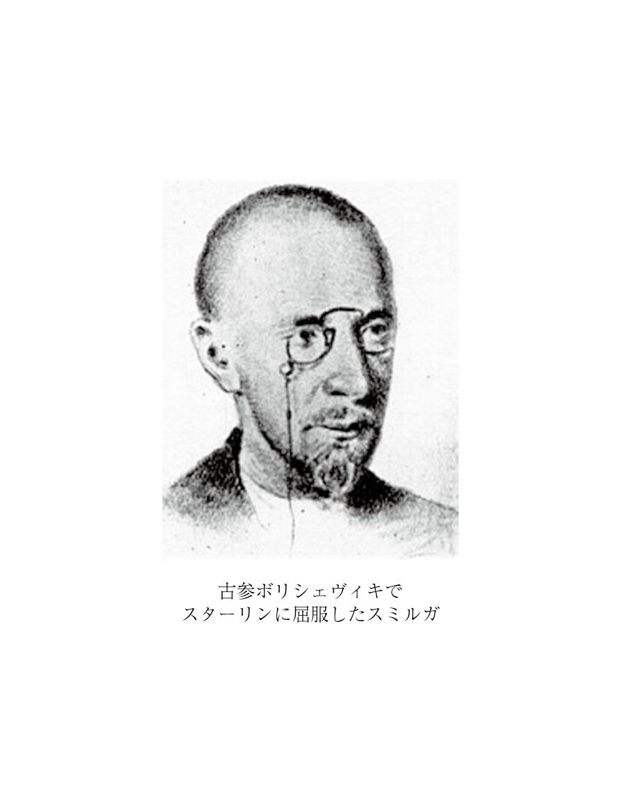
何とか自尊心を保とうとするすべての破産者と同じく、この三人組も言うまでもなく、永続革命［に対する攻撃］を隠れみのにしないわけにはいかなかった。（......）最近における日和見主義の敗北の全歴史の中で最も悲劇的な経験──すなわち中国革命──から、降伏者の三人組は、自分たちは永続革命の理論とは何の関係もないという安っぽい誓いをたてることによって逃れようとしている。（......）
ラデックとスミルガは、ブルジョア的国民党への中国共産党の従属を頑強に擁護してきた。しかも、蔣介石のクーデター以前においてだけでなく、このクーデター以降においてもそうだった。プレオブラジェンスキーは、政治の問題ではいつもそうなのだが、不明瞭なことを何かもぐもぐ言うだけだった。注目すべきなのは、反対派の隊列の中で国民党への共産党の隷属を擁護した者がすべて後に降伏者になった、という事実である。自らの旗に忠実でありつづけた反対派メンバーの誰一人として、このような汚点を負っている者はいない。そして、この汚点はまったくもって恥ずべきものであった。『共産党宣言』がこの世に現われてから四分の三世紀、ボリシェヴィキ党の成立から四半世紀も経って、これらの不幸な「マルクス主義者」たちは、国民党のカゴの中に共産主義者を閉じ込めるのを擁護することが可能であるとみなしたのだ！
私の非難に答えて、ラデックは今回の懺悔声明とまったく同じく、当時すでに、ブルジョア的国民党から共産党を脱退させることでプロレタリアートを農民から「孤立」させることになると言っておどかした。その少し前から、ラデックは広東政府を「農民と労働者の政府」と呼び、それによってスターリンがブルジョアジーによるプロレタリアートの隷属化をカムフラージュするのを助けた。これらの恥ずべき行動、この最新の無知と愚劣さ、マルクス主義の裏切りは、何によって覆い隠されたのか？ いったい何によってか？ 永続革命に対する攻撃によってだ！（４）（......）
すでに一九二八年二月から降伏の理由を探しはじめていたラデックは、一九二八年のコミンテルン拡大執行委員会二月総会（５）における中国問題決議をただちに支持した。この決議はトロツキストを清算主義者だと非難した。トロツキストが敗北を敗北と呼んだからであり、勝利した中国反革命を中国革命の高度な段階だと呼ぶことに同意しなかったからである。この二月決議では、武装蜂起とソヴィエトに向けた路線が宣言された。革命的経験によって鍛えられた政治的感覚を多少とも有している人々にとっては、この決議は、嫌悪すべき無責任な冒険主義の見本であった。ラデックはこのようなものを支持したのである。（......）
プレオブラジェンスキーは、この問題に対して──ラデックよりもけっして利口なものではないが──正反対の側からアプローチした。中国革命は──と彼は書いている──すでに打ち砕かれた、しかも長期にわたって。新しい革命はすぐにはやって来ないだろう。だとすれば、中国問題で中間主義者とやり合うことに何か意味があるだろうか？ このテーマについて、流刑中にプレオブラジェンスキーは長大な書簡を送ってきた。これをアルマ・アタで読んだとき、私は恥ずかしさを覚えた。いったいこれらの人々は、レーニンの学校で何を学んだのか、私は何十回となくそう自問した。プレオブラジェンスキーの前提はラデックの前提と正反対だが、結論は同じだった。二人とも、メンジンスキー［当時のゲ・ペ・ウ長官］を通じてヤロスラフスキーが自分たちを友好的に迎え入れてくれることを強く望んでいた。もちろん、革命のためにである。これらの人々は出世主義者ではない。そうではない。彼らは出世主義者ではなく、単に無力で思想的に落ちぶれた人々なのである。
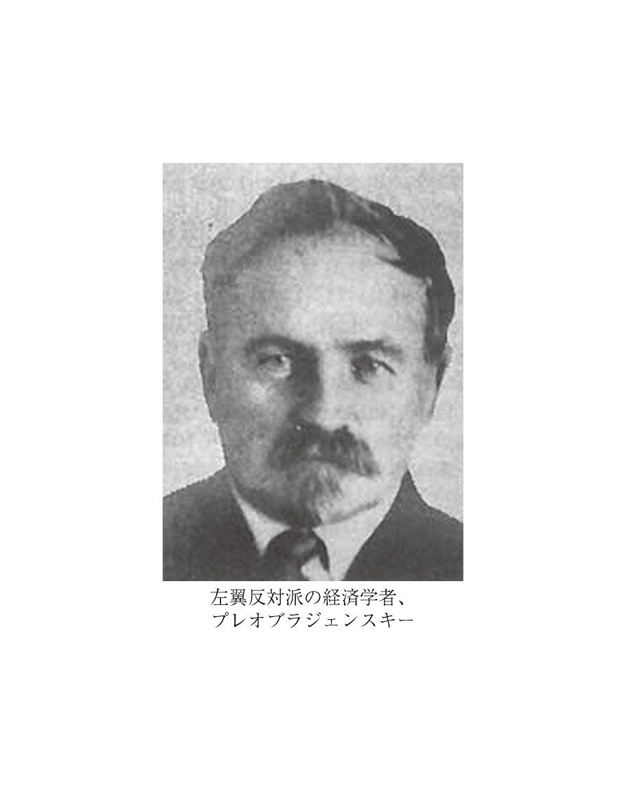
コミンテルン拡大執行委員会二月総会（一九二八年）の冒険主義的決議に対して、私は当時すでに、中国における憲法制定議会のスローガンを含む民主主義のスローガンのもとに中国労働者を動員するという路線を対置した。ところが、この不幸な三人組は今度は極左主義に走った。それは実に安直で、彼らに何の義務も負わせない。民主主義のスローガンだって？ 断じて否だ。「それは、トロツキーのとんでもない誤りだ」。ただ中国ソヴィエトのみ。ただの一パーセントの割引もなし。僭越ながら言わせていただくと、このような立場以上に愚劣なものを思いつくのは難しい。ブルジョア反動期におけるソヴィエトのスローガンは、赤ん坊のガラガラであり、つまりはソヴィエトに対する愚弄である。しかし、革命期でさえ、すなわち、ソヴィエトを直接建設する時期においてさえ、われわれは民主主義のスローガンを下ろしはしなかった。すでに権力を掌握した現実のソヴィエトが［ブルジョア］民主主義の現実の諸制度と大衆の面前で衝突するまでこのスローガンを下ろさなかった。これこそまさに、レーニンの言葉（小市民スターリンとそのオウムたちの言葉ではなく）で言うところの、国の発展の民主主義的段階を飛び越さないということである。
民主主義的綱領──憲法制定議会、八時間労働制、地主の土地没収、中国の民族独立、中国を構成する諸民族の自決権──なしには、これらの民主主義的綱領なしには、中国の共産党は、手足を縛られ、中国の社会民主主義に対して、受動的にその陣地を明け渡すことを余儀なくされるだろう。そしてこの社会民主主義勢力は、スターリン＝ラデック商会の援助のもと、共産党の占めていた地位を占めることになるかもしれない。
このように、ラデックは反対派を率いていた当時から、中国革命における最重要点をあっさり看過していた。というのは、彼は、ブルジョア的国民党への中国共産党の従属を擁護していたからである。ラデックはさらに、広東の冒険の後には、武装蜂起の路線を支持することによって中国の反革命をあっさり看過した。ラデックは今では、反革命期と民主主義のための闘争を飛び越え、時間と空間を超越したソヴィエトの抽象的観念でもって過渡期の課題を払いのけている。その代わりラデックは、自分が永続革命とはまったく無関係であると誓っている。結構なことだ。大いに慰めになる。（......）
スターリン＝ラデックの反マルクス主義理論にもとづくなら、中国やインドで、そして東方のすべての国で、国民党の実験を違った形で、だが何らましではない形で繰り返す結果になるだけである。
ロシア革命および中国革命の全経験にもとづいて、そしてこれらの革命に照らしてマルクスとレーニンの教えを深く熟慮した上で、反対派は次のように主張する。
●新しい中国革命が既存の体制を転覆して権力を人民大衆の手に移行させることができるとすれば、それはプロレタリアート独裁の形態においてのみであろう。
●農民を自己に従えて民主主義の綱領を実現するプロレタリアートの独裁に対立させられた「プロレタリアートと農民の民主主義独裁」は、虚構であり、自己欺瞞であり、なお悪いことには、ケレンスキー体制か国民党体制になるだろう。
●一方の側におけるケレンスキー＝蔣介石の体制と、他方の側におけるプロレタリアート独裁とのあいだには、いかなる中間的な革命的体制も存在しないし、存在しえない。こうした抽象的定式を提起する者は、東方の労働者を恥知らずに欺き、新しい破局を準備することだろう。
反対派は東方の労働者に言う。党内の陰謀政治によって堕落した降伏者たちは、スターリンが中間主義の種を蒔き、諸君の目をふさぎ、諸君の耳を抑え、諸君の頭を不明瞭にするのを助けている。一方では諸君は、民主主義のための闘争を展開するのを禁じられることで、剝き出しのブルジョア独裁を前に無力にさせられている。他方では、何らかの非プロレタリア的独裁という慰めの展望が諸君に提示されているが、それによって、今後、国民党体制の新版が、すなわち労働者と農民の革命のさらなる破壊が準備されている。
このような伝道者は裏切り者である。東方の労働者よ、彼らを信頼せず、彼らを軽蔑することを学べ！ 彼らを諸君の隊列から放逐することを学べ（６）！...。
訳注
（１）懺悔声明......一九二九年七月にラデック、スミルガ、プレオブラジェンスキーによってそれぞれ出された、党およびコミンテルン指導部との和解を求める声明で、同時期に開催されたコミンテルン第一〇回拡大執行委員会総会にタイミングを合わせて出されたもの。 （本文に戻る）
（２）証明書......直訳すると「狼の証明書」で、革命前に危険思想を持っていることが理由で公務員や教員になれないことを示す「不適格証明書」のこと。 （本文に戻る）
（３）私の回答......『反対派ブレティン』第三・四号（一九二九年九月）に掲載された「惨めな文書」（一九二九年七月二七日）のこと。なお、引用文内の強調は、『永続革命論』の当該箇所にはなかったが、『反対派ブレティン』の原文にもとづいて再現しておいた。 （本文に戻る）
（４）「永続革命に対する攻撃によってだ！」......『反対派ブレティン』の原文では「永続革命によってだ！」になっているが、文脈から判断して、『永続革命論』の引用における記述の方が正確だと思われるので、そちらに合わせておいた。 （本文に戻る）
（５）コミンテルン拡大執行委員会二月総会......一九二八年二月九日から二五日まで開催されたコミンテルン第九回拡大執行委員会総会のこと。この総会で、中国問題に関する決議が採択され、中国革命の敗北を主張したトロツキーを清算主義と呼んでいる（ジェーン・デグラス編著『コミンテルン・ドキュメント』Ⅱ、現代思潮社、一九七七年、四〇〇～四〇三頁）。 （本文に戻る）
（６）トロツキー「降伏に反対して（ロシアの同志達への手紙）」、『第四インターナショナル』、現代思潮社、一九六三年、四九～五三頁。 （本文に戻る）
本書を締めくくるにあたって、繰り返しを恐れることなく改めて本書の結論の要点を定式化することに読者諸君は異議を唱えないことと思う。
１．永続革命論は今や、すべてのマルクス主義者にとって最も注意深い態度を要するテーマとなっている。なぜなら、これまでの階級闘争と思想闘争の歩みを通じて、この問題が全面的かつ完全に、ロシア・マルクス主義者内部の古い意見の相違に関する回顧の領域から飛び出して、国際革命全般の性格、内的結びつき、方法に関する問題に転化したからである。
２．遅れてブルジョア的発展を開始した諸国、とくに植民地および半植民地諸国に関して、永続革命論は次のことを意味する。それらの国における民主主義的・民族解放的諸課題を全面的かつ実際に解決することは、被抑圧人民、何よりも農民大衆の指導者としてのプロレタリアートの独裁を通じてのみ考えられるということである。
３．農業問題だけでなく民族問題もまた、後進諸国の住民の圧倒的多数をなす農民に、民主主義革命において例外的に重要な地位を割りあてる。プロレタリアートと農民との同盟なしには、民主主義革命の課題を解決することができないだけでなく、真面目に提起することさえできない。しかしながら、この二つの階級の同盟は、民族自由主義ブルジョアジーの影響力に対する非妥協的な闘争を通じてしか実現されえない。
４．個々の国における革命の最初のエピソード的段階がどのようなものであったとしても、プロレタリアートと農民の革命的同盟を実現することは、ただ共産主義政党に組織されたプロレタリア前衛の政治的指導下でのみ考えうる。このことはまた、民主主義革命の勝利が、農民との同盟にもとづいて真っ先に民主主義革命の諸課題を解決するプロレタリア独裁を通じてのみ考えうる、ということを意味する。
５．ボリシェヴィズムの古いスローガンたる「プロレタリアートと農民の民主主義独裁」を歴史的評価に付すならば、これはまさに、先に特徴づけられた、プロレタリアート、農民、自由主義ブルジョアジーの相互関係を表現するものであった。これは十月革命の経験によって証明された。しかし、レーニンの古い定式は、革命的ブロックの内部におけるプロレタリアートと農民の政治的相互関係がいかなるものになるかを前もって定めたものではなかった。言いかえれば、この定式には意識的に一定の代数的要素が含まれており、これは歴史的経験の過程を通じてより正確な算術的数値に置きかえられなければならなかった。この歴史的経験は、農民の革命的役割がいかに大きなものであっても、それは独立したものではないし、ましてや指導的なものではありえないことを示した。しかも、他のいかなる似非解釈も排除するような条件下で示したのである。農民は、労働者の後に従うか、ブルジョアジーの後に従うかのどちらかである。このことは、「プロレタリアートと農民の民主主義独裁」が、農民大衆を自己に従えたプロレタリアートの独裁としてのみ考えうる、ということを意味する。
６．プロレタリアート独裁から階級的内容の点で区別される体制としての「プロレタリアートと農民の民主主義独裁」なるものが実現されるとすれば、それはただ、農民民主主義および一般に小ブルジョア民主主義の利益を代表する独立した革命政党、すなわちプロレタリアートによるあれこれの助力を通じて権力を獲得し独自の革命的綱領を実行する能力を有した政党が実際に成立しうる場合のみであろう。だが、最近の歴史の全体、とりわけこの四半世紀におけるロシアの経験が物語っているように、小ブルジョアジーの政治的・経済的な非自立性とその深刻な内的階層分化が、農民政党を創設する上での克服しがたい障害となっている。そのために、小ブルジョアジー（農民）の上層は、あらゆる決定的な瞬間、とりわけ戦争や革命において、大ブルジョアジーとともに進み、下層はプロレタリアートとともに進むのであり、したがって中間層はこの両極のどちらかを選択せざるをえなくなる。ケレンスキー体制とボリシェヴィキ権力とのあいだには、あるいは国民党とプロレタリア独裁とのあいだには、いかなる中間的体制も、すなわちいかなる「労働者と農民の民主主義独裁」も存在しないし、また存在しえない。
７．コミンテルンは現在、歴史によってとっくに使い果たされてしまった「プロレタリアートと農民の民主主義独裁」のスローガンを東方諸国に押しつけようとしているが、このような努力は反動的な意義しか持ちえない。このスローガンがプロレタリアート独裁のスローガンに対置されるかぎり、それは政治的に、プロレタリアートを小ブルジョア大衆に溶解させる働きをし、このようにして民族ブルジョアジーのヘゲモニーにとって、したがってまた民主主義革命の崩壊にとって最も有利な条件をつくり出す。このスローガンをコミンテルンの綱領に入れたことは、マルクス主義に対する、そしてボリシェヴィズムの十月的伝統に対する直接の裏切りである。
８．民主主義革命の指導者として権力に上りつめたプロレタリアートの独裁は、不可避的に、しかもきわめて急速に、ブルジョア的所有権の深刻な侵害と結びついた諸課題に直面する。民主主義革命は直接に社会主義革命に成長転化し、それによって永続革命となる。
９．プロレタリアートによる権力の獲得は、革命を完成させるのではなく、ただそれを開始するだけである。社会主義建設は、国内的および国際的規模の階級闘争にもとづいてはじめて考えうる。この闘争は、世界的舞台での資本主義的諸関係の決定的な優位性という条件のもとでは、不可避的に、国内的には内乱の勃発を、対外的には革命戦争の勃発をもたらす。まさにここに社会主義革命そのものの永続的性格がある。この点では、その国がほんの昨日民主主義革命を成し遂げたばかりの後進国であるか、民主主義と議会主義の長い時代を経た古い資本主義国であるかにはかかわらずそうである。
10．一国の枠内での社会主義革命の完成は考えられない。ブルジョア社会が危機に陥った基本的理由の一つは、それによって創出された生産力が国民国家の枠ともはや両立しえなくなっているという点にある。このことから、一方では帝国主義戦争が、他方ではブルジョア的ヨーロッパ合衆国のユートピアが生まれる。社会主義革命は、国民的舞台で開始され、国際的舞台へと発展し、世界的舞台で完成する。こうして、社会主義革命は、言葉の新しくより広い意味において永続的なものとなる。それは、われわれの惑星全体での新社会の最終的勝利にいたるまで完成することはない。
11．以上のような世界革命の発展図式は、社会主義にとって「成熟している」国と「成熟していない」国という、現在のコミンテルン綱領が与えている衒学的で生気のない分類をきっぱり退ける。資本主義は、世界市場と世界的分業と世界的生産力をつくり出したかぎりにおいて、全体としての世界経済を社会主義的刷新に向けて準備することになったのである。
各国は、この過程をさまざまなテンポで遂行していくだろう。後進国は、一定の条件のもとでは、先進国よりも早くプロレタリアートの独裁に到達することができるが、後者より遅く社会主義に到達するだろう。
後進的な植民地ないし半植民地諸国において、プロレタリアートが、自己の周囲に農民を結集して権力を獲得するにいたる力量をまだ身につけていない場合には、まさにそのせいで、民主主義革命を最後まで遂行することができない。それとは反対に、プロレタリアートが民主主義革命の結果として権力に就いた国においては、独裁と社会主義のその後の運命は、究極的には、国内の生産力にのみ依存するのではなく、むしろ国際社会主義革命の発展に依存する。
12．十月革命に対する反動という酵母から発生した一国社会主義論は、徹底的かつ首尾一貫して永続革命論に対立している唯一の理論である。
われわれの批判の打撃を受けて、一国社会主義論の適用範囲を、ロシアの特殊性（その広大さと豊かな天然資源）ゆえにロシア一国に限定しようとするエピゴーネンの努力は、事態を改善するどころかいっそう悪化させるものである。国際的立場の放棄は、つねに不可避的に民族的メシアニズムに、すなわち、他の国々がとうていなしえないような役割を実行しうる特別の優位性と資質とが自国にのみ存在するという認識に行き着く。
世界的分業、外国技術へのソヴィエト工業の依存、アジアの原材料へのヨーロッパ先進諸国の生産力の依存、等々、等々は、世界のどの国にあっても、独立した社会主義社会の建設を成し遂げるのを不可能にする。
13．スターリン＝ブハーリン理論は、ロシア革命の全経験に反して民主主義革命と社会主義革命とを機械的に対立させるだけでなく、一国革命を国際革命から切り離す。
この理論は、後進諸国の革命に対し、民主主義独裁という実現不可能な体制を樹立する任務を課し、この民主主義独裁をプロレタリアート独裁に対置する。そうすることで、この理論は政治に幻想と虚構を持ち込み、東方におけるプロレタリアートの権力闘争を麻痺させ、植民地革命の勝利を妨害する。
プロレタリアートによる権力の獲得はすでに、エピゴーネンの理論の見地からは、革命の完成（スターリンの定式によれば「一〇分の九」までの完成）を意味し、一国的改良の時代の開始を意味する。したがって、クラーク［富農］による社会主義の受容という理論や世界ブルジョアジーの「中立化」という理論は、一国社会主義論と不可分である。それらは、ともに発生しともに没落する。
一国社会主義論のせいで共産主義インターナショナルは、軍事干渉に対する闘争に役立つ補助的道具という水準にまで成り下がった。コミンテルンの現在の政策、その体制、その指導的メンバーの内部選別は、共産主義インターナショナルが、独立した課題の解決を予定しない単なる補助部隊の地位へと成り下がったことに完全に照応している。
14．ブハーリンによって起草されたコミンテルン綱領は、徹頭徹尾、折衷主義的である。それは、一国社会主義論をマルクス主義的国際主義と和解させようとする絶望的な試みを行なっている。しかし、マルクス主義的国際主義は、国際革命の永続的性格と不可分なのである。コミンテルンの正しい政策と健全な体制をめざす共産主義的左翼反対派の闘争は、マルクス主義的綱領のための闘争と不可分に結びついている。そして、綱領の問題は、それはそれで、相互に対立しあう二つの理論、すなわち永続革命論と一国社会主義論の問題と不可分である。永続革命の問題は、歴史によって完全に過去のものとされたレーニンとトロツキーとのエピソード的な意見の相違の枠をとっくに越えてしまっている。現在進行しつつあるのは、一方におけるマルクスおよびレーニンの基本思想と、他方における中間主義者の折衷主義とのあいだの闘争である。
１ オリミンスキーへの手紙 （人名一覧に戻る）
親愛なるミハイル・ステパノヴィチ！
返事が遅れたことをお許しください。この一週間というもの、あまりにも忙しかったものですから。
あなたはチヘイゼへの私の手紙（１）を出版する問題について尋ねておられます。それが適切であるとは私には思えません。歴史的に見てまだその時期ではありません。この手紙はほんのごく一時期の印象で、そしてそのときの必要性に迫られて書かれたものであり、したがってその手紙の論調はそれに応じたものになっています。現在の読者はその手紙の論調を理解しないでしょうし、必要な歴史的修正を施すこともなく、ただ混乱するだけでしょう。それに、国外から党のアルヒーフ［古い文献資料］と国外で出されたマルクス主義出版物を手に入れなければならなくなるでしょう。そこでは「取っ組み合い」に参加した者全員の手紙が大量に存在しますから。今さらそのすべてを出版するおつもりでしょうか？ そんなことをすればまったく余計な政治的困難をつくり出すだけでしょう。当時の思想闘争や一時的な興奮などに影響されて書簡の中で相互に激しく罵しり合いをしなかった古参亡命者など党内に二人といないでしょうから。
私の手紙に対する解説を書くべきでしょうか？ しかし、そうなると、当時私がボリシェヴィキとどの点で意見を異にしていたかを説明することになるでしょう。私は自分のパンフレットである『総括と展望』の序文（２）の中で、この点について簡潔に述べておきました。たまたまこの手紙が［帝政ロシアの］警保局の記録ファイルから発見されたという理由で、このことを繰り返す必要はないと思います。さらにつけ加えておかなければならないのは、今さら過去の分派闘争を回顧することは、論争のきっかけを与えかねないということです。なぜなら──率直に言いますと──私がボリシェヴィキと意見を異にしていたときに、私があらゆる点で誤っていたとはまったく思っていないからです。メンシェヴィキ派の評価に関しては私は誤っていました。しかも根本的に。私はメンシェヴィキの革命的可能性を過大評価し、メンシェヴィキ内の右派を孤立させてやがてその影響力をゼロにすることができると期待していました。
しかしながら、この根本的な誤りは次のような事情から生じていたのです。すなわち、当時ボリシェヴィキもメンシェヴィキも、ブルジョア革命と民主共和制の観点に立っていたのに対し、私が両分派に対して、すなわちボリシェヴィキ派に対してもメンシェヴィキ派に対しても、永続革命とプロレタリアート独裁（３）の観点からアプローチしていたという事情です。私は両派間の意見の相違は原理的にそれほど深刻なものではないと考え、次のような期待を抱いていました（この期待については何度となく当時の手紙や報告の中で表明されています）。すなわち、革命の歩みそのものが両派を永続革命と労働者階級による権力獲得の立場に導くだろう、と。一九〇五年に部分的に生じたようにです（ロシア革命の推進力に関するカウツキーの論文に対する同志レーニンの序文（４）と『ナチャーロ』紙の路線全体）。
革命の推進力に関する私の評価は無条件に正しかったと思いますが、そのことから私が両派の関係に関して導き出した結論は、無条件に誤っていました。ボリシェヴィズムだけが、その非妥協的路線のおかげで、その隊列のうちに、古参インテリゲンツィアのみならず労働者階級の先進層に関してもその真に革命的な諸分子を集中していました。ただボリシェヴィズムがこのような革命的に鍛えられた組織をつくり上げることに成功していたおかげで、民主主義革命の立場から社会主義革命の立場へのあれほど急速な転換が可能となったのです。
そして現在、メンシェヴィキとボリシェヴィキのそれぞれに対する私の論争的論文を二つのカテゴリーに分けることは、実にたやすいことでしょう。一つは、革命の内的諸力とその展望を分析したものであり（ローザ・ルクセンブルクのポーランド語理論誌や『ノイエ・ツァイト』に掲載されたもの（５））、もう一つはロシア社会民主党の諸分派とその闘争、等々を評価したもの（６）です。第一のカテゴリーに属する諸論文は、現在でも修正なしに出版することができるでしょう。なぜならそれらは、一九一七年以降におけるわが党の立場と全面的かつ完全に一致しているからです。第二のカテゴリーに属する諸論文は明らかに誤っており、それを再刊する価値はないでしょう。私がかつて送った二通の手紙（７）は第二のカテゴリーの論文に関係するものであり、それを公表することは時宜にかなったものではありません。一〇年ほど経った後にでも、そうすることを誰かに委ねましょう。その時でもまだ、それを公表することに関心を持っている人がいればの話ですが。
共産主義者としての挨拶をもって
Ｌ・トロツキー
一九二一年一二月六日
訳注
（１）チヘイゼへの私の手紙......一九一三年四月一日に、当時におけるメンシェヴィキ派国会議員の指導者であったチヘイゼにトロツキーが宛てた手紙のことで、この中でトロツキーはレーニンのことを「ロシア労働者運動のあらゆる後進性の職業的利用者」と呼んでおり、この手紙は一九二〇年代半ば以降の党内闘争において主流派によってさんざん悪用された。邦訳は、『トロツキー研究』第三七号（二〇〇二年）。 （本文に戻る）
（２）『総括と展望』の序文......一九一九年に『総括と展望』が単独のパンフレットとしてロシアで再刊されたときにトロツキーが付した序文のこと。邦訳は、トロツキー「一九一九年モスクワ版への序文」、『一九〇五年革命・結果と展望』、現代思潮社、一九七五年。 （本文に戻る）
（３）ロシア語底本では「永続革命とプロレタリアート独裁」が脱落していたので、『インプレコール』掲載の英訳にもとづいて補った。 （本文に戻る）
（４）レーニン「小冊子『Ｋ・カウツキー著、ロシア革命の推進力と展望』のロシア語訳序文」、邦訳『レーニン全集』第一一巻。 （本文に戻る）
（５）ローザ・ルクセンブルクのポーランド語理論誌や『ノイエ・ツァイト』に掲載されたもの......ローザ・ルクセンブルクのポーランド語雑誌に掲載されたトロツキーの永続革命関係の論文としては、「われわれの意見の相違──一九〇五年、反動、革命の展望」がある。『ノイエ・ツァイト』に掲載されたものとしては、メンシェヴィキのチェレヴァーニンを批判した論文「プロレタリアートとロシア革命」がある。いずれも以下の文献に訳出されている。トロツキー『わが第一革命』、現代思潮社、一九七〇年。 （本文に戻る）
（６）ロシア社会民主党の諸分派とその闘争、等々を評価したもの......この関連のトロツキーの主要論文は『トロツキー研究』第三六号（二〇〇一年）、三七号（二〇〇二年）に訳出してある。 （本文に戻る）
（７）二通の手紙......一通目はここで言及されているチヘイゼ宛ての手紙であるが、もう一通は一九一五年にトロツキーがウリツキーに宛てた手紙のことであると思われる。この中でトロツキーは、第一次世界大戦中のレーニンの祖国敗北主義とセクト主義とを批判している。 （本文に戻る）
レーニンとの意見の相違はいかなる点にあったのか？
個々に抜き出され誤って解釈された引用文とは反対に、われわれは先に（１）、わが国の革命の性格と傾向に関する見解の真の発展の、多少なりとも包括的な──完全とはほど遠いが──構図を与えた。しかし、この最重要問題には、分派闘争──とりわけ亡命者間のそれ──においては常に見られることだが、偶然的で二次的で不必要なものがたくさんこびりついており、それが重要かつ基本的なことを覆い隠してしまっている。こうしたことは分派闘争では避けられない。しかし、闘争がとっくに過去のものとなってしまった今日、覆っていた殻を取り去って、問題の核心をとり出すことは可能であるし、必要でもある。
革命の基本的勢力の評価に関してはいかなる原則的な意見の相違も存在しなかった。このことは、一九〇五年と、とりわけ一九一七年があまりにもはっきりと示している。しかし、政治的アプローチにおける違いは存在した。最も基本的な点に還元するなら、この違いは次のような形で定式化することができるだろう。私は、革命の勝利がプロレタリアートの独裁を意味することを証明した。レーニンはこう反論した。プロレタリアートの独裁は、革命の次の諸段階の一つにおける可能性の一つである。それまではわれわれは依然として民主主義的段階を通過しなければならない。この段階においてはプロレタリアートは小ブルジョアジーとの連合を通じてのみ権力に就くことができる、と。私は、これに対してこう答えた。わが国の革命の当面する段階がブルジョア民主主義的性格を有していること、これは議論の余地がない。また、この課題を解決する途上においては、あれこれの過渡的権力をともなったさまざまな段階があることも否定しない。しかし、これらの過渡的形態はエピソード的性格のものでしかないだろう。民主主義的課題を解決するためであっても、プロレタリアートの独裁が必要になるだろう。民主主義的段階を、総じて階級闘争の自然な諸段階を飛び越すつもりはまったくないが、われわれは、プロレタリア前衛による権力獲得に向けた基本路線をただちに定めなければならない、と。レーニンの答えはこうだった。そんなことはしないなどとわれわれはけっして誓いはしない。しかし、状況がどのようなものになるのか、とりわけ国際情勢がどのようなものになるのか、等々をよく見きわめよう。いま現在われわれに必要なのは「三頭の鯨（２）」を前面に押し出すことであり、この「三頭の鯨」にもとづいて、プロレタリアートと農民の革命的連合を形成することである、と。
今日、すなわち十月革命がとっくに成し遂げられた後に、この二つの観点を非和解的なものとして描き出すためには、極端に視野が狭いか、極端に不誠実であるかのどちらかでなければならないだろう。一九一七年の十月革命は両者の見解を実に見事に和解させた。レーニンは、革命の民主主義的段階と「三頭の鯨」の綱領を前面に押し出し、全力を尽くしてそれを強調し、論争的に先鋭化させたこと、これは政治的にも戦術的にも無条件に正しく必要なことだった。そして、私がいわゆる永続革命論における不完全さと欠陥について語ったとき、私が念頭に置いていたのはまさに、私が民主主義的段階を何か自明のものとしてのみ受け入れていたという事実であった。私は、それが一九〇五年の経験によって十分証明されたものとして、言葉の上だけでなく実践の上でも受け入れていた。しかし、私が自分の展望の中で、革命のあいつぐ諸段階の可能性に関して明確ではっきりとした、全面的に練り上げられた見通しを理論的に常に保持していたかというと、けっしてそうではなかったし、私の個々の発言や論文の中には──それらの論文が書かれた当時には──、私があたかも客観的な民主主義的課題や革命の自然発生的な民主主義的勢力［農民］を「無視」しているかのような誤解を引き起こしかねないものもあった。しかし、実際には私は、それを自明なものとみなしていたのであり、それをいわば所与のものとしてそこから出発していたのであり、別の観点と別の目的のもとに書かれた私の他の著作によって十分に証明されたものとみなしていたのである。
一二年にも及ぶ年月のあいだに（一九〇五～一九一七年）、この問題に関して書かれたあれこれの論文には、この種の一面性が見られたし、これはまさに、レーニンの表現を用いれば「棒の曲げすぎ」と言うべきものであったが、それは思想闘争上の大問題を扱う場合にはまったく不可避なものでもあった。そのせいで、私の論文におけるあれこれの定式に対するレーニンのあれこれの論争的な批判が生じたわけだが、それはけっして、革命に対する私の全般的な評価や革命への私の参加の性格に対応したものではなかった。
私の批判者の一人［スターリンのこと］はかつて、はなはだ通俗的な形で、次のような考えを私に示唆したことがある。すなわち、レーニンの論争的反応のすべてを必ずしも真に受ける必要はなく、そこに一定の重要な政治的・教育学的修正係数を導入しなければならないというものである。私の批判者は次のように結論づけた。レーニンはハエをゾウのように言う（３）、と。
この言葉のうちには一片の真理があるし、このことは、彼の書いたものを通じてレーニンを知る者なら誰でも知っていることである。しかし、ここではそれが、心理学的にきわめて粗野な言い方で表現されている──「レーニンはハエをゾウのように言う」と。この同じ論者は、別の所ではこう表現している。「レーニンはこの思想を、『口角泡を飛ばして』擁護した」。口角も泡も、ハエをゾウにすることも、レーニンのイメージとおよそ合致しない。だがその代わり、この二つの表現は、それが喚起するこの論者自身のイメージと最もよく合致している。昔から言うように、文は人なりだ...。
いずれにせよ、私がボリシェヴィキ派（後にはボリシェヴィキ党）に入っていなかったあいだは、私によって表明されたあれこれの見解との一致を進んで表明する傾向などレーニンに見られなかったのは確かである。逆に言えば、何らかの最重要問題に関してレーニンが意見の一致を表明した場合には、すでに示したように、意見の一致が間違いなく存在したのであり、そのことを承認する必要があったということになるだろう。反対に、レーニンが私と論争した場合には、けっして私の見解に対する「公正な評価」を追求したのではなく、あくまでもその時々の緊急の課題を追求していたのである。もっとも、論争の矛先は、私に対してよりもむしろ、この問題でたたく必要のあったあれこれのボリシェヴィキ内グループに向けられる場合の方が多かったのだが。
しかし、革命の性格に関するレーニンと私との古い論争に関する事情がどうであれ、また、この問題に関して私がレーニンをかつて正しく理解していたのかどうか、あるいは今も正しく理解しているのかどうかという問題がどうであれ、マルトゥイノフやスレプコフ、ラフェス、スクヴォルツォフ＝ステパーノフ、クーシネン、など──性と年齢の区別なく──すべてのリャドフ的連中［リャドフは党史偽造の中心的人物］にはよく理解できたことが、私の知性では理解できなかったのだということを一瞬だけ仮定したとしても、なお次のような、ごくささやかな、しかし、はなはだ痛烈な小問題が残る。すなわち、ロシア革命の性格という根本問題に関してレーニンと意見が分かれておらず、彼の観点を完全に共有していた、等々の人々が──一部は、自分たちだけで放置されていた時期に、別の一部は、レーニンがロシアに帰還した後でさえ──、それに先立つ一二年間党の思想活動の中心をなしていたまさにその当の問題において、かくも恥ずべき日和見主義的立場をとるなどということが、いったいどうして生じえたのか？
この問題に対しては、次のように答えなければならない。私は、革命の農民的・民主主義的段階を飛び越えなかったし、そのことは、揺るぎのない歴史的事実によって、そしてこれまで述べてきたことすべてによって証明されている、と。しかし、どうして、私に対する激烈で仮借のない批判者たちは、せめてこの最重要問題で...［飛び越すどころか］必要な距離を飛ぶことさえできなかったのか？ それは、誰しも自分の耳より高く飛ぶことができないという単純な理由によるのだろうか？ このような説明が完全にあてはまる場合は個々のケースではあるだろう。しかし、一九〇五年以降に一定の明確な路線にもとづいて教育されてきた党の大部分が問題になっている今回の場合には、あてはまらない。政治的罪を軽くするために...、次のような説明に頼ることもできないだろう。すなわち、レーニンは、ブルジョア革命が社会主義革命に成長転化する可能性を自明のものとみなしていたため、論争の中でこの歴史的可能性をあまりにも先送りし、それについて不十分にしか論じておらず、それゆえ...、プロレタリアートがロシアにおいて先進資本主義諸国よりも早く権力に就く理論的可能性のみならず、深い政治的蓋然性について不十分にしか説明しなかったのだ、と。
もし封印列車が一九一七年三月にドイツを通過することができなかったとしたら、もしレーニンが同志たちの集団をともなって、そして何よりその実績と権威をともなって四月初めにペトログラードに到着しなかったとしたら、十月革命は、すなわち旧暦の一〇月二五日に起きたあの革命は、わが国ではそう云々するのが好まれているように、けっしてこの世に存在しなかったろう。三月会議（４）が議論の余地なく物語っているように（その議事録はいまだに公表されていない）、ボリシェヴィキの権威ある指導的グループは、より正確に言えば、党の大部分は、レーニンの超攻勢的な政策をとるのではなく、党を次のような政策で縛ったことだろう。すなわち、臨時政府と分業する政策、ブルジョアジーを尻込みさせない政策、全世界の人民に対する平和主義的声明によって隠蔽された帝国主義戦争を半ば承認する政策、である。
そして、四月四日のテーゼを提起したレーニンが、他ならぬトロツキズムという非難に見舞われたということは、お尋ねしたいのだが、ロシア革命の不幸な成り行きで、もしレーニンがロシアから切り離されたままであったか、あるいは、帰国途中で亡くなって、他の誰かによって武装蜂起とプロレタリアート独裁に向けた路線が提唱されていたとしたら、どうなっていただろうか？ その時にはいったいどうなっていただろうか？
この数年間にわれわれが経験したことからして、想像することはけっして難しくない。スローガンの方向転換を提唱した人々、すなわち権力獲得に向けた路線を提唱した人々は、極左主義者として、トロツキストとして、ボリシェヴィズムの伝統の破壊者として、そしておそらくは反革命家として、容赦のない迫害の対象とされたことだろう。すべてのリャドフ的連中は、水を得た魚のようにこの論争と迫害に没頭したことだろう。もちろん、プロレタリアートは下から強力に［ブルジョア］民主主義戦線に襲いかかり、それを掘りくずしただろうが、先見の明のある統一した大胆な指導部が存在しないために、プロレタリアートは、遅かれ早かれ数ヵ月後には、勝利せるコルニーロフ的、蔣介石的クーデターにぶつかるだろう。その後には、いっさいがマルクスの法則に厳格に一致して起きたのだとする長大な決議が書かれることだろう。なぜなら、ブルジョアジーはそれにふさわしくプロレタリアートを裏切り、ボナパルティスト的将軍がそれにふさわしくブルジョアジーのためにクーデターを遂行したのだから。さらにこう言われるだろう──「われわれは最初からこのことを予見していた」と。
自己満足的な俗物に、「君たちの予見など何の値打ちもない、なぜなら、なすべき課題はブルジョアジーの勝利を予見することではなく、プロレタリアートの勝利を確保することにあるのだから」と指摘しようとしても、このような試みは、次のような補足決議を生み出すだけであろう。後進ロシアの、しかも帝国主義戦争という状況下におけるプロレタリアートは、発展の歴史的段階を飛び越すことはできない、このような綱領を提唱することができるのは、永続革命の支持者だけであり、レーニンはそれに反対してその生涯の最後の瞬間まで闘争したのだ、と。
まさに現在、歴史はこのように書かれつつある。そして、書かれているのと同じぐらい悪く歴史は作られつつある。
この二つの路線［レーニンの路線とトロツキーの路線］に違いはあったが、しかしそれはおよそ矛盾とは言えないものであった。アプローチの違いは時に論争をもたらしたが、それは常に偶然的でエピソード的なものでしかなかった。レーニンの立場は、その時々の政治的に実践的な契機を前面に押し出すものであった。私の立場は、全体としての革命の歴史的展望を押し出し強調するものであった。この点にアプローチの違いがあったが、矛盾はなかった。このことは、この両路線が行動において交差するたびに最もはっきりとした形で明らかとなった。これがまさに一九〇五年と一九一七年に起きたのである。
一九二七年夏
訳注
（１）先に......この草稿は、本来は、永続革命論に関するより大きな著作ないし論文の一部として書かれたもので、それゆえここで「先に」と書いているものと思われる。しかし、党内闘争の激化からそれを完成させることができず、この課題は一九二八年にアルマ・アタに追放されるまで先送りされた。 （本文に戻る）
（２）三頭の鯨......大地が三頭の鯨によって支えられているという伝説から、基本的土台を意味する。ここでは民主主義革命の三つの主要課題、すなわち、民主共和制の実現、地主の土地没収、八時間労働制を指している。 （本文に戻る）
（３）スターリン「トロツキー主義かレーニン主義か」、『スターリン全集』第六巻、大月書店、三五四頁。 （本文に戻る）
（４）三月会議......一九一七年三月二七日～四月二日に開催されたボリシェヴィキ党の全ロシア活動者会議のことで、この会議では、党中央委員会は、臨時政府が革命の獲得物を強化することを志向している場合にかぎり支持するという条件付き支持の立場を打ち出した。またスターリンは、ツィンメルワルト＝キンタールの路線でメンシェヴィキとボリシェヴィキとの統一が可能だとの見解を示した。議事録の邦訳は、トロツキー『偽造するスターリン学派（トロツキー選集・補巻）』、現代思潮社、一九六八年。 （本文に戻る）
この数週間、世界の新聞雑誌はロシア反対派の「崩壊」について多言を費やし、しばしば同志ラデックを、スターリンに合流したグループの指導者と呼んでいる。事情に通じていない人々──これは西方では圧倒的多数である──だけが、あたかもラデックがごく最近になって反対派から離れてアパラーチキ［官僚機構のメンバー］の中間主義者に合流したかのような結論を引き出すことができる。実際には、同志ラデックの動揺はすでに一年半にも及んでいる。もっと正確に言うと、同志ラデックの道は、一九二三年以来、反対派の路線と一瞬交差するが、その後すぐに左か右に行きすぎてしまい（主として右にだが）、その後再び戻ってくるということを繰り返してきた。
ラデックは一九二六年まで、スターリン＝ブハーリンの路線以外の経済路線を実行することは不可能だとみなしていた。一九二七年までラデックは、ブランドラーおよびそのグループとの共同活動の可能性に関して幻想を培ってきた。ラデックは中国国民党からの共産党の脱退に反対であった。イギリスのゼネスト後、ラデックは英露委員会の解散に反対した。左右の国民党による革命の裏切りの後、ラデックはプロレタリア独裁のスローガンに反対し、スターリン、ブハーリン、マルトゥイノフらと同じように解釈された「民主主義」独裁のスローガンに賛成した。一九二三～二四年、ラデックは、永続革命論が基本的にレーニンの戦略路線と同一であるということを証明した。一九二八年には、ラデックは、この問題に関してレーニンとトロツキーとが全面的に対立し合っているということを証明しようとした。その際彼は、多少の留保をしつつも、ジノヴィエフの使い古しの論拠を繰り返すことを余儀なくされた。他方では、テルミドールと別党の問題（１）では、ラデックは一九二七年の間ずっと極左主義にのめり込んでいた。彼は何度となく、テルミドールはすでに「成し遂げられた」と宣言しようとした。彼は一時、反対派の政綱（２）に署名することを拒否したが、それはもっぱら、この政綱があまりにも断固とした調子で「党の統一」について語っていたからであった。
右翼的前提と極左的結論とのこのような結合は、けっして不自然なことではない。それどころか、コミンテルンの歴史はこの種の例で満ちている。また、テルミドールと別党問題における極左的結論から、ラデックがかくも易々と、左翼中間主義的ジグザグに対する無原則的な和解の道へと移行したことも、けっして不自然なことではない。他の国々、とりわけドイツでも、ロシアの反対派を「中途半端」だと非難し、テルミドールが「成し遂げられた」と何十回も宣言してきた人々が、その後、その軽い荷物を持って社会民主主義の陣営に易々とくら替えするのをわれわれは目にしたものだ。
言うまでもなく、われわれのうちの誰も、ラデックをこれらの軽薄な人々と同列に置くつもりはない。ラデックの背後には、四半世紀におよぶ革命的マルクス主義者としての活動が存在する。ラデックは社会民主主義の側に移行することができないだけでなく、おそらくスターリニストの側に合流することもできないだろう。いずれにせよ、スターリニストとうまくやっていくことはできないだろう。そうするには、彼は依然としてあまりにもマルクス主義者であり、何よりも、あまりにも国際主義者である。ラデックの不幸は、彼の強みと同じである。すなわち、度はずれた衝動性がそれだ。
ラデックは疑いもなく、全世界で最良のマルクス主義的ジャーナリストの一人である。ここで重要なのは、狙いの正確さや言葉の力だけではない。何よりも重要なのは、新しい現象や傾向を、その最初の徴候の段階で、たちどころにつかみとる能力である。ここにラデックの優位性がある。しかし、ジャーナリストとしてのこの強みは、政治家としては弱点の元となる。ラデックは誇張し先走りする。ラデックはセンチメートルだけが問題になっている箇所をメートルで測る。それゆえ彼はほとんどつねに、正しい路線から右か左に──右の方がはるかに多いが──ずれるのである。
われわれがみなモスクワで暮らしていた頃は、ラデックの衝動性はしばしば反対派の役に立った。彼はほとんど会議のたびごとに、全般的にか、あるいはあれこれの問題に関して反対派の政策の抜本的な転換を提起したものだ。たいていは友好的な反論にあい、彼もすぐにそれを受け入れた。しかし、彼の誇張された危うい革新的提案のうちには、しばしば、何らかの貴重な観察か斬新な印象を見出すことができた。まさにそれゆえ、ラデックの参加はいつも共同作業にとって有益だったのである。そして、われわれの中で、ラデックの度重なる左右へのジグザグ（もっとも、右の方が左よりも多かったが）のリストを作ろうとする者など誰もいなかった。
しかし、不幸だったのは、一九二八年の初頭以来、反対派の指導グループがばらばらにされてしまったことである。全員が巨大な空間で相互に隔てられ、各人が孤立させられた。このような条件のもとでは、ラデックの途方もない衝動性がマイナスの働きをすることになるのは明らかであった。
一九二八年二月以降、同志ラデックは、テルミドールと「別党」の問題に関して例によって例のごとく大転換を行なった。ところが、彼は、右派に対する中間主義者の反撃の可能性を予見していなかった。それは、われわれから初めてテルミドールについて耳にして、今では、「それはすでに成し遂げられた」とおしゃべりしているすべての者たちと同じであった。しかし、ラデックは一般的な決まり文句を繰り返すのではなく、諸事実を観察し、それを理解しようと努め、そのせいで逆の極端に陥った。スターリニストが一九二八年二月以降にはマルクス主義者になったように彼には思え、テルミドールはほとんど神話になった。もしわれわれがみなモスクワにいたならば、最初にこうした誇張した意見を言った後には、おそらくラデックも落ち着きを取り戻したことだろう。次の新しい発作までの話だが。しかしラデックはシベリアにいた。彼は多くの同志たちに宛てて手紙とテーゼを書き送った。しかし彼は四方八方から敵意で迎えられた。彼の書簡はゲ・ペ・ウの手に落ち、中央委員会に引き渡された。ヤロスラフスキーは、会議の場でラデックの見解について語ったが、無思慮さゆえにそれについて混乱した議論をし、悪意ゆえにそれを誤って伝えた。こうしてラデックは、自分自身の衝動性の囚われ人となった。彼はすでに、自説を補強しようとして、事実を曲げるようになっていた。彼は、自分自身のジグザグを正当化しようとして、ますますスターリンのジグザグを粉飾せざるをえなくなった。
この歴史は、すでに述べたように、一年半も続いている。去年の七月、ラデックはコミンテルン第六回大会に向けた声明案を執筆した。当時は、流刑者間の書簡のやり取りはまだ十分自由だった。スターリニストはそうすることで、分裂がより速やかに進むのを期待していたのだ。流刑者のコロニー間の電信のやり取りを通じて、第六回大会向けの二つの声明草案に対する一種の投票が行なわれた。ラデックは半ダースほどの投票を集めた。私の草案には数百名が署名した。結局、ラデックも集団的声明に合流した。
一九二八年七月一七日、私は手紙の中でラデックのテーゼ案を検討に付した。この手紙は各地の流刑者に送付され、モスクワにも送られた。現在、この手紙を公表することは時宜にかなっていると思われる（３）。読者はこの手紙から、一九二九年のラデックが、一九二八年時点での自分の誤りにほとんど何もつけ加えなかったことを納得されるものと思う。いずれにせよ、この個人的ないし集団的ジグザグは、たとえそれが最良の企図にもとづくものであったとしても、反対派をその本来の道から逸脱させることはできないだろう。
Ｌ・トロツキー
コンスタンチノープル
一九二九年五月二六日
Ｐ・Ｓ 『プラウダ』に発表されたラデックの手紙（４）から、彼が、私の予想よりもずっと遠くに行ってしまったこと、あるいはずっと下に落ちてしまったことがわかる。今や彼は次のように憐れっぽく訴えている。スターリン的中間主義に参加したいという切々たる願望ゆえに、もはや自分はボリシェヴィキ・レーニン主義者と同じ屋根の下にいることはできなくなっている、と。
ラデックは、その極左的誤りをそれと好一対の右翼的誤りで補完するのに、文字通り一年とかからなかった。一九二七年のあいだ、彼は、いわばアプリオリに別党路線に立っていた極左派（サプローノフ、ヴェ・エム・スミルノフ等）に対してどのような態度をとるべきかの問題で、反対派の内部で頑固なまでに私に対する闘争を遂行した。当時ラデックは、極左派とわれわれとのあいだにはいかなる意見の相違もなく、彼らを攻撃するべきでないだけでなく、反対に彼らと単一の組織に合流するべきであると主張した。一般的に言って、ラデックを頑固だとか考えを変えないなどと言って非難する者など誰もいなかった。しかし、まさに民主主義的中央集権派との統一の問題に関しては、ラデックはまぎれもなく頑固さを発揮した。それは、一九二六年一〇月から一九二八年二月まで、すなわちまるまる一五ヵ月も続いた。ラデックにとってこの長さはまったく前代未聞である！ 今ではラデックは正反対に引っ繰り返り、こう主張している。ボリシェヴィキ・レーニン主義者と分裂しなければならない、なぜなら彼らはデセミストの思想にすっかり感染してしまったからだ、と。
今やラデックにとって意見の相違がないのは、サプローノフとのあいだではなく、スターリンとのあいだである。次のように予言しても、間違いを犯す大きな危険性はないだろう。レーニン主義的反対派と手を切ったラデックは、スターリンの路線に長くとどまることはおそらくできないだろう。最もありうるのは、再びブランドラー主義とルイコフ主義の側に揺れ動き、スターリンに反対するようになるということである。ただし今度は右から反対するのだが。これが彼の不幸な運命である！
Ｌ・Ｔ
一九二九年七月七日
訳注
（１）テルミドールと別党の問題......テルミドールとは、フランス大革命の際にロベスピエールらの恐怖政治をクーデターによって終結させた事件のアナロジーとして、プロレタリア独裁体制に対する反革命を意味するものとして用いられた。当初、トロツキーはこれをブルジョア反革命の意味で用いていたが、一九三四年には、プロレタリア独裁の枠内でプロレタリアートから官僚へと権力が移動するという意味で用いるようになった。この論文が書かれた時期にはまだブルジョア反革命の意味で用いられていたので、もしすでにテルミドールが成し遂げられたとすれば、ボリシェヴィキ党はすでにプロレタリア政党ではなく、したがって、ボリシェヴィキとは別の党をつくらなければならない、ということになる。ヴェ・エム・スミルノフやサプローノフらの民主主義的中央集権派（デセミスト）はそのような立場であったが、トロツキーら左翼反対派はこの立場を断固拒否し、テルミドールはまだ実現されていない、したがって別党路線は誤りであり、ボリシェヴィキ党の改良を目指すべきだと主張した。 （本文に戻る）
（２）反対派の政綱......一九二七年九月に作成された合同反対派の政綱のこと。邦訳は、トロツキー「ロシアの実情と共産党の諸任務（合同反対派政綱）」、『ソヴィエト経済の諸問題』、現代思潮社、一九六八年。 （本文に戻る）
（３）トロツキーのこの長文の手紙（「同志ラデックのテーゼについて」）は紙幅の都合上、本書では訳出していない。 （本文に戻る）
（４）ラデックの手紙......本書「エピローグ」の訳注（１）を参照。 （本文に戻る）
ロシア史における基本的で最も揺ぎのない特徴は、その発展の緩慢さであり、ここからロシアの経済的後進性、社会形態の原初性、文化水準の低さが生じている。
気候の厳しい広大な平原の住民は、東方からの風とアジアからの侵入者にさらされ、自然そのものによって長期にわたる立ち遅れを運命づけられた。遊牧民との闘争はほとんど一七世紀末まで続いた。冬の寒さと夏の旱魃を運んでくる東風との闘いは今もまだ終わっていない。発展全体の基礎である農業は粗放的方法で営まれていた。北部では森林が伐採され焼き払われた。南部では未開墾のステップが掘り返された。自然の征服は、深く進行するのではなく、浅く広く進行した。
西方では蛮族がローマ文化の廃墟の上に移住してきて、残された古い多くの石が彼らにとっての建築材料となったのに対して、東方のスラブ民族は、荒涼たる平原の上にいかなる遺産も見出さなかった。彼らの先行者たちがスラブ民族自身よりもずっと低い文化水準にあったからである。西欧の諸国民は、すぐにその自然の境界内に定着して、工業都市という経済的・文化的凝固物をつくり出した。東方の平原の住民は、狭さを感じはじめるやいなや、森に深く入るか、辺境へ、ステップへと退いていった。農民の中の最も能動的で進取の気性に富んだ分子は西方では都市の住民、職人か商人になった。東方では能動的で大胆な分子は、一部は商人になったが、多くはコサック、国境警備隊員、植民者となった。社会的階層分化の過程は、西方では集中的な形で起きたが、東方では長期にわたるぐずぐずした過程であり、領土拡張の過程によって拡散された。「モスコヴィヤ［ロシアの古名］のツァーリは、キリスト教徒ではあるが、怠惰な精神の国民の上に君臨している（１）」と、ピョートル一世の同時代人ヴィーコは言った。モスコヴィヤ人の「怠惰な精神」は、経済発展の緩慢なテンポ、階級関係の無定形さ、内的歴史の貧困さを反映していた。
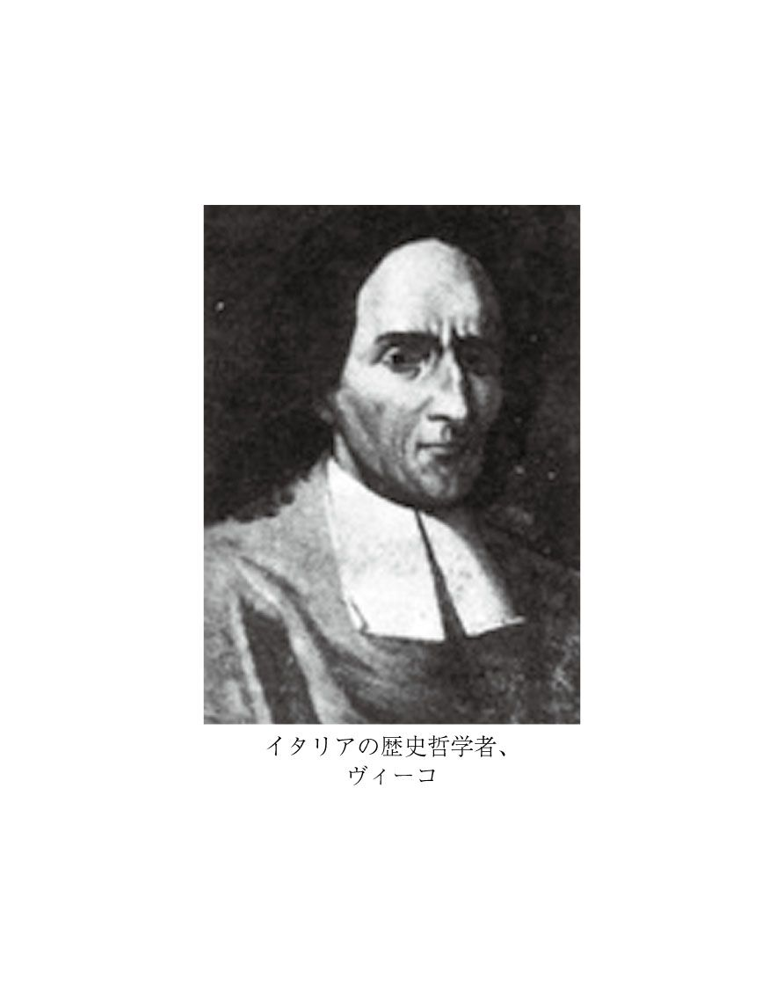
エジプト、インド、中国の古代文明は十分自足的な性格を有していたし、低い生産力にもかかわらず、その社会関係がほとんど細部に至るまで完成された水準に達するだけの十分な時間があった。ちょうどこれらの国の職人が自分の生産物を完成させたようにである。ロシアは地理的にヨーロッパとアジアのあいだに位置していただけでなく、社会的、歴史的にもそうであった。ロシアは、ヨーロッパ的西方と異なっていただけでなく、アジア的東方とも異なっていた。それは、さまざまな時期に、さまざまな点で、一方ないし他方に接近した。東方はタタール人の圧迫をもたらしたが、それは、ロシア国家の建設にとって重要な要素になった。西方の方がはるかに恐るべき敵であったが、それと同時に教師でもあった。ロシアは東方の様式で形成される可能性を有していなかった。なぜなら、ロシアは常に西方の軍事的・経済的圧力に適応しなければならなかったからである。
過去の歴史家たちは、ロシアに封建的諸関係が存在していたことを否定していたが、その後の研究によって無条件にその存在が証明されたとみなすことができる。それどころか、ロシアにおける封建制の基本的要素は西方におけるのと同じであった。しかし、長年にわたる科学的論争によって封建時代の存在が確認されたという事実を一つとっただけでもすでに、ロシアにおける封建制の未成熟さ、その無定形さ、その文化的遺産の貧困さを物語ってあまりある。
後進国は先進国の物質的・思想的成果を同化吸収する。しかし、このことは、後進国が先進国に奴隷的に追随するとか、先進国の過去の諸段階のいっさいを再現するということを意味するものではない。歴史の循環の反復説（２）──ヴィーコとその後の後継者たち──は、古い前資本主義的文化の──部分的には資本主義的発展の初期段階の──発展軌道に対する観察にもとづいていた。過程全体が地方的でエピソード的である場合には、たしかに、さまざまな文化的諸段階が別々の発生源である程度繰り返されるということが起きた。しかしながら、資本主義はこのような条件の克服を意味する。それは、人類の発展の普遍性と永続性を準備し、ある意味でそれを実現した。まさにこのことによって、個々の国民の発展形態が繰り返される可能性はなくなったのである。後進国は先進国に追いつこうとつとめざるをえないので、順番を守らない。歴史的後発性の特権──このような特権も存在する──のおかげで、後進国は一連の中間的段階を飛び越すことによって、想定されていた時期より早く出来合いのものを摂取することが可能になる。より正確に言えば、そうすることを余儀なくされる。野蛮人は弓からただちにライフル銃へと移行し、この二つの武器のあいだに存在した道をたどりはしない。アメリカにやってきたヨーロッパの植民者たちは歴史を最初から始めはしなかった。ドイツやアメリカ合衆国が経済的にイギリスを追い越すのを可能にした事情こそまさに、これらの国の資本主義的発展の後発性に他ならない。反対に、イギリス石炭産業の保守的な無政府性は、マクドナルドとその友人たちの頭の中と同様、イギリスが資本主義の覇権国としての役割をあまりに長期にわたって果たしてきたという過去の報いなのである。歴史的に後発的な諸国民の発展は、必然的に、歴史的過程のさまざまな発展段階の独特の結合をもたらす。発展の軌道は全体として、非計画的で複雑で複合的な性格を帯びる。
中間的諸段階の飛び越えの可能性は、もちろん、絶対的なものではない。その可能性の程度は、究極的には、国の経済的・文化的な潜在能力によって規定される。さらに、後進的な国民は、外部からの出来合いの成果を借用する際に、それを自己のより原初的な文化に適応させ、そのことによってしばしばこの成果そのものの水準を引き下げる。こうして、同化吸収の過程それ自体が矛盾した性格を帯びたものとなる。たとえば、ピョートル一世の時代、西方の技術や技能を、とりわけ軍事および織物業のそれを導入したことで、かえって、農奴制が、労働組織の基本形態として強化されることになった。ヨーロッパからの武器供与とヨーロッパからの借款──そのどちらも、疑いもなくより高度な文化の産物であった──はツァーリズムの強化をもたらし、そのことによって国の発展を阻害した。
歴史の法則性は、衒学的な図式主義といかなる共通性も有していない。不均等性は、歴史過程の最も一般的な法則であって、それは、後発国の運命のうちに最も先鋭で複雑な形で現われる。外的な必要性の鞭のもと、後進国は飛躍を行なうことを余儀なくされる。不均等性という普遍的法則からもう一つの法則が生じる。他により適切な名称がないので、それを複合発展の法則と呼ぶことにしよう。さまざまな発展段階の接近融合、個々の段階の結合、時代遅れとなった古い形態と最も現代的な形態とのアマルガムである。この法則なくしては──むろん、その物質的内容の全体を取り上げた上でのことだが──、ロシアの歴史を理解することはできないし、総じて、二番目、三番目、十番目の文化水準にある諸国の歴史も理解することはできないだろう。
より豊かなヨーロッパからの圧力のもと、ロシアの国家は、ヨーロッパにおけるよりもはるかに大きな割合で国民から富を吸い上げた。このことは、人民大衆を二重の貧しさへと運命づけただけでなく、有産諸階級の基盤をも弱めた。それと同時に、ロシアの帝政は有産階級の支持を必要としたので、その形成を促進するとともに、厳格に統制した。その結果、官僚化した特権諸階級はけっして身の丈いっぱいに成長することができなくなり、ロシアの国家はそれだけますますアジア的専制へと接近した。
一六世紀初頭以降に公式にモスクワのツァーリによって移植されたビザンチン的専制体制は、貴族の支援のもと封建的領主層を鎮圧し、貴族を自己に従属させ、農民を貴族に隷属させた。こうして、この専制体制は、これらの基盤にもとづいて、ペテルブルクの皇帝絶対主義に転化した。過程全体の後発性は次のことのうちに十分はっきりと特徴づけられている。すなわち、一六世紀末に生まれた農奴制が、一七世紀に確固としたものとなり、一八世紀に最盛期を迎え、一八六一年になってようやく法律上廃止されたことである。
僧侶は、貴族に追随し、ツァーリ専制体制の形成において大きな役割を演じたが、その役割は完全に従属的なものだった。ロシアの教会は、西方のカトリック教会が到達したような支配的な高みにまで上りつめることはけっしてなかった。それは、専制体制に対する宗教的下僕の地位で満足し、それを自己の恭順さの功績とみなした。主教と府主教は、世俗の権力の手先としてのみ権力を享受した。総主教は、ツァーリが交替するのといっしょに交替した。ペテルブルク時代に、ツァーリに対する教会の従属はいっそう隷属的なものとなった。二〇万人もの司祭と修道士たちは基本的に官僚制の一部であり、一種の宗教警察であった。このことの見返りとして、ロシア正教の僧侶たちは、信仰活動上の独占を、その土地と収入を、正規の警察によって保護してもらった。
後進性のメシアニズムたるスラブ主義は次のような考えにもとづいて自己の哲学を打ち立てた。すなわち、ロシア人民とその教会は徹頭徹尾民主的であるが、公式のロシア［官僚、貴族などのロシア支配層］は、ピョートルによってロシアに移植されたドイツの官僚制に他ならないというものである。マルクスは、この点について次のように論評している。「ドイツのロバたち［愚か者］が、フリードリヒ二世の専制主義などをフランス人のせいにしたのとまったく同じだ。あたかも、後進国の奴隷を仕込むのに必ずしも文明化された奴隷を必要としないかのように（３）」。この短い論評は、スラブ主義者の古い哲学のみならず、「人種主義者」の最新の啓示についてもその本質をあますところなく暴露するものであろう。
ロシアの封建制のみならず、旧ロシアの歴史全体もまたみすぼらしかったが、その最も惨めな現われが、手工業と商業の中心地たる本格的な中世都市がロシアには存在しなかったことである。手工業はロシアでは農業から分離することができず、家内工業的性格を保持していた。古いロシアの諸都市は、商業、行政、軍事、地主の中心地であり、したがって消費の中心地であって、生産の中心地ではなかった。ハンザ同盟（４）と近い関係にあり、タタール人の支配を受けなかったノヴゴロドでさえ、商業都市にすぎず、工業都市ではなかった。たしかに、農民の家内工業がさまざまな地域に分散して存在していたために、広範囲に及ぶ商業的仲介が必要とされた。しかし、あちこちに転々と移動する商人には、西方で手工業ギルドや商工業の中小ブルジョアジーが周辺の農民と不可分に結びつきつつ占めていたような地位を社会生活の中で占めることはまったくできなかった。さらに、ロシア商業の本線が国外に延びていたため、はるか以前から商業の指導権は外国の商業資本家の手中に保持され、取引全体が半植民地的性格を帯びることになった。この取引においてロシアの商人は、西方の都市とロシアの農村との仲介者にすぎなかった。このような経済的関係は、ロシア資本主義の時代にいっそう発展を遂げ、帝国主義戦争において極端な形で現われた。
ロシアの都市が取るに足りない存在であったことは、アジア的国家の形成を促す上できわめて重要な役割を果たしただけでなく、とりわけ、宗教改革の可能性を、すなわち、封建的・官僚的ロシア正教を、ブルジョア社会の諸要求に適合した、キリスト教の何らかの近代的タイプに置きかえる改革の可能性を排除するものであった。国家に従属した教会に対する闘争は、農民的宗派──その最大最強のものは古式分離派（５）であった──の形成という域を出ることはなかった。
フランス大革命の一五年前に、コサック、農民、農奴的なウラル労働者による反乱運動が起こった。これはプガチョフの乱（６）として知られている。時の政府を震撼させたこの人民蜂起が革命に転化する上でいったい何が足りなかったのだろうか？ 第三身分である。都市の工業民主主義派なしには、農民戦争は──農民宗派の運動が宗教改革にまで高まることができなかったのと同様──革命にまで発展することはできなかった。それどころか、プガチョフの乱の結果として、官僚的絶対主義はかえって強化された。なぜなら、それは、難局にあたって貴族の利益の守護者としての自己の正当性を再び証明したからである。
国のヨーロッパ化は、形式的にはピョートルの時代に始まったが、次の一世紀のあいだにますます、支配階級それ自身の、すなわち貴族それ自身の要求になっていった。一八二五年、貴族出身のインテリゲンツィアは、この要求を政治的に一般化して、軍事的陰謀を企てた。その目的は専制を制限することであった。つまり、先進的な貴族たちは、ヨーロッパにおけるブルジョア的発展の圧力のもと、自国に欠けていた第三身分の代わりをつとめようとしたわけである。しかし、彼らは、自由主義的な体制を望みつつも、それを自己の身分支配の基盤と結びつけようとした。そのため、彼らは何よりも農民を立ち上がらせることを恐れた。陰謀が、優秀ではあるが孤立した将校の企てにとどまり、ほとんど戦闘を交えることなしに粉砕されたのも、驚くべきことではない。これがデカブリストの乱（７）の意味するところであった。
農奴労働を雇用労働に置き換える傾向を最初に示した地主階層は、工場を所有していた地主たちであった。この方向にいっそう拍車をかけたのは、ロシアの穀物がますます大量に国外に輸出されるようになったことである。一八六一年、貴族出身の官僚たちは、自由主義的地主に依拠しながら農民改革［農奴解放］を実行した。無力なブルジョア自由主義派は、この事業において従順な合唱隊としての役割を演じた。言うまでもなく、ツァーリズムが、ロシアの根本問題、すなわち農業問題を解決したやり方は、プロイセンの君主制が次の一〇年間にドイツの根本問題、すなわち民族統一を解決したやり方よりもはるかにけちくさく、姑息なものであった。ある階級の課題を別の階級が解決することこそ、後進国に固有の複合的方法の一つなのである。
しかしながら、複合発展法則が最もはっきりとした形で現われるのは、ロシア工業の歴史とその性格においてである。遅れて勃興したロシア工業は、先進諸国の発展過程を繰り返すのではなく、その発展過程の中に入り込み、先進国の最新の成果を自国の後進性に適合させた。ロシアの経済的発展が全体としてギルド的手工業とマニュファクチュアの段階を飛び越えたように、工業の個々の諸部門でも、西方では何十年という単位で測られたような生産技術段階を一連の部分的飛躍によって飛び越えた。そのおかげで、ロシアの工業は、一時期、きわめて急速なテンポで発展を遂げた。［一九〇五年の］第一革命と［一九一四年の第一次］世界大戦とのあいだに、ロシアの工業生産高はほぼ二倍に増大した。この事実は、ロシアの一部の歴史家にとって、「ロシアの後進性と緩慢な成長という神話を放棄しなければならない」との結論を十分根拠づけるものであるように思われた（＊）。実際には、これほどの急速な成長が可能であったのはまさに後進性のおかげなのである。しかし、残念ながら、この後進性は旧ロシアが清算されるその瞬間まで継続しただけでなく、旧ロシアの遺産として今日に至るも残されているのである。
国民の経済水準を測る基本的な指標は労働生産性であり、この労働生産性はそれはそれで、国の経済全体に占める工業の比重に依存している。帝政ロシアの経済が最も高い水準に達した［第一次世界］大戦前夜において、一人あたりの国民所得はアメリカ合衆国の八分の一から一〇分の一であった。ロシアの就労人口の五分の四が農業に従事していたのに対し、アメリカでは農業従事者の二・五倍の工業従事者がいたことを考えれば、これも驚くにあたらない。さらにつけ加えれば、大戦前夜、ロシアでは一〇〇キロ平方メートルあたり〇・四キロメートルの鉄道が敷設されていたのに対し、ドイツでは一一・七キロメートル、オーストリア・ハンガリーでは七・〇キロメートルであった。その他の比較係数も同じようなものであった。
しかし、すでに述べたように、他ならぬこの経済の分野においてこそ、複合発展の法則は最も強力な形で現われる。農業の大部分が［一九一七年の］革命にいたるまでほとんど一七世紀の水準にとどまっていたのに対し、ロシアの工業は、その技術と資本主義的構造に関しては、先進諸国の水準に達しており、いくつかの点では追い越してさえいた。労働者数が一〇〇人未満の小企業は一九一四年にはアメリカで全工業労働者の三五％を占めていたのに対し、ロシアではわずか一七・八％であった。労働者数が一〇〇人から一〇〇〇人の中大企業の比重は両国でほぼ同一であったが、一〇〇〇人以上の労働者を雇用する大企業は、アメリカで全労働者数の一七・八％を占めていたのに対し、ロシアでは四一・四％であった！ 最も重要な工業地帯で見ると、この最後の数字はもっと高くなる。ペトログラードの工業地帯では四四・四％、モスクワの工業地帯では五七・三％にまで達する。ロシアの工業をイギリスやドイツの工業と比較しても同様の結果が得られるだろう。この事実をわれわれが最初に確認したのは一九〇八年のことだが（９）、それは、ロシアの経済的後進性に関する通俗的観念には容易には収まらないものであった。ところが、それは後進性を否定するものではなく、ただ後進性を弁証法的に補完するものなのである。
工業資本と銀行資本との融合も、ロシアでは、おそらく他のどの国にも見られないほど完全な形で起こった。しかし、銀行への工業の従属は、まさにそのことによって、西ヨーロッパの金融市場へのロシア工業の従属を意味した。重工業（金属、石炭、石油）は、ほとんど完全に外国の金融資本の支配下にあった。外国の金融資本は、ロシアに、補助的・仲介的な銀行システムを自分のために構築した。軽工業も同じ道をたどった。外国人は全体としてロシアの株式資本の約四〇％を保有していたが、工業の基幹部門ではこの比率はいっそう高かった。ロシアの銀行と工場の支配株式が外国人の手中にあったと言ってもけっして過言ではない。しかも、イギリス、フランス、ベルギー資本の株式所有率は、ドイツ資本の株式所有率のほとんど二倍高かった。
こうしたロシア工業の成立条件とその構造とが、ロシア・ブルジョアジーの社会的性格とその政治的特質をも規定した。工業が高度に集中した性格を有していたことは、それ自体すでに、資本主義的上層と人民大衆とのあいだに中間的諸階層のヒエラルキーが存在していないことを意味した。さらに、工業、銀行、運輸における最重要企業の所有者が外国人であったという事情が加わる。これらの外国人は、ロシアから利益を引き出すことに成功しただけでなく、外国の議会での政治的影響力をも獲得した。彼らは、ロシアにおける議会制度のための闘争を推進しなかっただけでなく、しばしばそれに敵対した。フランス支配層の恥ずべき役割を想起すれば十分であろう。以上が、ロシア・ブルジョアジーが政治的に孤立し反人民的性格を有していたことの基本的で不可避的な原因であった。ロシア・ブルジョアジーはその歴史の黎明期において、宗教改革を行なうにはあまりにも未成熟であったとすれば、革命の指導を行なうべき時期がやって来たときには、あまりにも成熟しすぎていたのである。
ロシアのこうした全般的な発展経路に一致して、ロシアの労働者階級を形成するための貯水池となったのは、ギルド的手工業ではなく、農業であり、都市ではなく農村であった。しかもロシア・プロレタリアートは、イギリスの場合のように過去の重荷を引きずりながら何世紀もかけて徐々に形成されていったのではなく、一連の飛躍を通じて、諸状況、諸紐帯、諸関係の大きな転換、過去との急激な断絶を通じて形成された。まさにこうした事情が、ツァーリズムの集中された抑圧とあいまって、ロシア労働者をして、革命思想の最も大胆な結論を受け入れるのを容易にしたのである。それはちょうど、後発的なロシア工業が資本主義組織の最新の成果を受け入れやすかったのと同じである。
ロシア・プロレタリアートはその生成の短い歴史を各地で絶えず新たに繰り返した。金属加工業、とりわけペテルブルクの金属加工業では、農村から完全に分離した生粋のプロレタリア層が結晶化しつつあったのに対して、ウラルでは、半ばプロレタリア的で半ば農民的なタイプが支配的であった。どの工業地帯でも毎年新たな労働力が農村から流れ込み、こうしてプロレタリアートとその基本的な社会的貯水池［農村］との紐帯が新たにされた。
ロシア・ブルジョアジーの政治的無能力を直接規定したのは、プロレタリアートと農民に対するブルジョアジーの関係であり、その性格であった。プロレタリアートは日常生活においてすでにブルジョアジーに敵意を抱き、自己の課題をきわめて早々と一般化して理解していたため、ブルジョアジーはプロレタリアートを自己に従えることができなかった。しかし、ブルジョアジーは同じく農民をも自己に従えることができなかった。なぜなら、ブルジョアジーは、共通した利益の網によって地主と結びついており、どんな形であれ所有関係の激変を恐れていたからである。したがって、ロシア革命の後発性は、年代の問題であっただけではなく、国民の社会的構造の問題でもあったのだ。
イギリスがピューリタン革命を成し遂げたとき、その全人口は五五〇万人そこそこであり、そのうち五〇万人がロンドンに住んでいた。フランスはその大革命期において、二五〇〇万人の全人口のうちやはり同じ五〇万人だけがパリに住んでいた。二〇世紀初頭のロシアは、約一億五〇〇〇万人もの人口を抱えていたが、そのうち三〇〇万を越える住民がペトログラードとモスクワに住んでいた。これらの比較数値の背後には、巨大な社会的相違が潜んでいる。一七世紀のイギリスのみならず、一八世紀のフランスでさえ、まだ近代プロレタリアートを知らなかった。ところが、ロシアでは、都市と農村におけるあらゆる労働分野の労働者階級は、一九〇五年にはすでに一〇〇〇万人を下らない数に達しており、家族を入れると二五〇〇万人を越えていた。すなわち、大革命期におけるフランスの全人口よりも多かったのである。クロムウェルの軍隊を構成していた屈強な手工業者と独立農民から始まって、パリのサンキュロットを経て、ペテルブルクの工業プロレタリアートに至るまで、革命はその社会的力学とその方法とを、したがってまたその目的を大きく変貌させたのである。
一九〇五年の事件は、一九一七年の二つの革命、すなわち二月革命と十月革命の序幕であった。序幕には、劇のすべての要素が含まれており、ただそれが終幕にまで至らなかっただけのことである。日露戦争はツァーリズムを揺るがした。大衆の運動をバックにして、自由主義ブルジョアジーはその反対行動でもって君主制を威嚇した。労働者は、ブルジョアジーとは独立に、むしろそれに対立する形で組織された。そのとき初めて生まれたソヴィエトがそれである。農民は、広大な国土のすみずみで土地を求めて反乱に立ち上がった。農民も、軍隊の中の革命的部分も、ソヴィエトに引きつけられた。ソヴィエトは、革命の最も高揚した瞬間に、君主制から公然と権力を奪おうと争った。しかし、すべての革命勢力はそのとき初めて表舞台に登場したのであり、彼らには経験もなければ、自信も不足していた。自由主義者たちは、ツァーリズムを揺るがすだけでは不十分であってさらにそれを押し倒さなければならないことがはっきりとしたまさにその瞬間に、これみよがしに革命から飛びのいた。ブルジョアジーは人民からきっぱり決裂し、しかも、当時すでに、民主主義的インテリゲンツィアのかなりの部分を自己に従えていた。そのおかげで君主制は容易に軍隊を内的に分化させ、忠実な部分を選抜して、労働者と農民に対して血の制裁を加えることができた。こうしてツァーリズムは、肋骨を何本か失いはしたものの、それでも一九〇五年の試練を生きて切り抜けた。しかもまだ十分強力なまま切り抜けたのである。
序幕から本劇［一九一七年革命］にいたるまでの一一年間に、歴史の発展は諸勢力の相互関係にいかなる変化をもたらしたのだろうか？ ツァーリズムはこの時期に、歴史的発展の諸要求といっそう大きく矛盾するようになった。ブルジョアジーは経済的にいっそう強力になったが、すでにわれわれが見たように、この強さは、工業がいっそう高度に集中され、外国資本がますます大きな役割を果たすようになったことにもとづいていた。一九〇五年の教訓を肝に銘じたブルジョアジーは、ますますもって保守的で疑い深くなった。中小ブルジョアジーは、以前から取るに足りない存在だったが、いっそうその比重を引き下げた。民主主義的インテリゲンツィアには何らかの安定した社会的支柱がそもそも存在していなかった。彼らは束の間の政治的影響力を持つことができても、独立した役割を果たすことはできなかった。ブルジョア自由主義派に対する依存がはなはだしく増大した。農民に綱領、旗、指導部を与えることができたのは、こうした状況のもとでは、若いプロレタリアートだけであった。こうして、彼らの前には壮大な課題がそびえ立ち、ここから次のような喫緊の必要性が生じた。すなわち、人民大衆をすみやかに包含し、労働者の指導のもとに彼らを革命行動へと立ち上がらせることができる、そうした特別の革命組織をつくり出すことである。こうして一九〇五年のソヴィエトは、一九一七年に巨大な発展を遂げた。ここで指摘しておくが、ソヴィエトがロシアの歴史的後発性の産物であるだけではなく、複合発展の所産でもあるということは、最も工業の発達した国であるドイツが、一九一八～一九年の革命高揚期に、ソヴィエト以外の組織形態を見出さなかったという事実のうちに示されている。
一九一七年の革命は依然として、官僚主義的君主制の転覆をその直接の課題としていた。しかし、古いブルジョア革命と違って、今や決定的な勢力として舞台に登場したのは、集中された工業にもとづいて形成され、新しい組織と新しい闘争方法で武装した新しい階級であった。複合発展の法則はここではわれわれの前にその最も極端な姿をとって現われる。朽ち果てた中世的遺物の転覆から始まった革命は、わずか数ヵ月のうちに、共産党を指導者とするプロレタリアートを権力に就けたのである。
したがって、ロシア革命は、その出発点の課題からすれば民主主義革命であった。しかし、ロシア革命は政治的民主主義の問題を新しい形で提起した。労働者が全土をソヴィエトで覆い、そこに兵士や部分的には農民をも引き入れていたときに、ブルジョアジーは依然として、憲法制定議会を召集するべきか否かをめぐって駆け引きに明け暮れていた。本書において諸事件を叙述していく中で、この問題はきわめて具体的な形でわれわれの前に立ち現われてくることだろう。ここでは、革命の思想と形態の歴史的移り変わりの中にソヴィエトを位置づけるにとどめよう。
一七世紀中葉、イギリスのブルジョア革命は宗教改革の外皮のもとに展開された。独自の祈禱書にもとづいて祈りをあげる権利のための闘争は、国王、貴族、教会やローマの支配者たちに対する闘争と同一視された。長老教会派（10）とピューリタンたちは、自分たちの地上の利益が聖なる神慮の揺るぎない庇護のもとにあると信じて疑わなかった。新しい階級の闘争課題は、彼らの意識の中では、聖書の文言や教会儀式の形式と渾然一体となっていた。新大陸への移民たちは、血で認証されたこの伝統をたずさえて大西洋を渡った。ここから、アングロサクソン人におけるキリスト教解釈の異常なまでのこだわりが生じるのである。かつて一七世紀の人々が自分たちの勇敢さを正当化するものとみなしたその当の魔術的文言でもって、今日、イギリスの「社会主義」閣僚たちが自らの臆病さを正当化しているのをわれわれは目にしている。
フランスでは、宗教改革が素通りされたため、カトリック教会が国家的存在として革命まで生き長らえた。革命は、ブルジョア社会の課題を表現し正当化するものを、聖書の文言にではなく、民主主義の抽象概念に見出した。フランスの現在の支配者たちがジャコバン主義にどれほどの憎悪を抱いていようとも、まさにロベスピエールの峻厳な活動があったおかげで、彼らは依然として自らの保守的支配を、かつて旧社会を掘りくずすのに用いられた概念でもって覆い隠すことができるのである。
偉大な革命はいずれも、ブルジョア社会の新しい段階を画したし、その諸階級の新しい意識形態を生み出した。フランスが宗教改革を素通りしたように、ロシアは形式民主主義を素通りした。ロシアの革命政党は、自己の刻印をその時代全体に捺すことを運命づけられていた。この党は、聖書にでもなければ、「純粋」民主主義という世俗化されたキリスト教にでもなく、社会的諸階級の物質的諸関係のうちに革命的課題を表現するものを求めた。ソヴィエト制度はこの諸関係を、最も単純で、仮装されていない、透明な形で表現するものであった。勤労者の支配は、ソヴィエト制度を通じて初めて実現された。ソヴィエトが今後どのような歴史的変転を経ようとも、それは、かつての宗教改革や純粋民主主義の制度と同じぐらいぬぐいがたく大衆の意識の中に染み込んだのである。
訳注
（１）ヴィーコ「新しい学」、『世界の名著 ヴィーコ』、中央公論社、一九七五年、五三九頁。ヴィーコの『新しい学』は一七二五年に初版が出版されている。 （本文に戻る）
（２）歴史の循環の反復説......イタリアの歴史哲学者ヴィーコの歴史循環説のこと。ヴィーコは、どの国でも歴史は基本的に三つの政体を順に繰り返すと考え（ただしまったく同じものとして繰り返されるのではなく螺旋的に繰り返されるとみなした）、最初に「神政政治」が存在し、次に「英雄的ないし貴族的政治」が来て、最後に「人間的政治」が続くとしている。この「人間的政治」には、自由都市の民主政治のみならず、偉大な君主による君主制国家も含まれている。これが崩壊すると最初の神政政治に戻る。 （本文に戻る）
（３）一八五三年九月七日付「マルクスからエンゲルスへ」、邦訳『マルクス・エンゲルス全集』第二八巻、二三六頁。 （本文に戻る）
（４）ハンザ同盟......中世期にバルト沿岸の貿易を中心に繁栄した都市間の経済同盟。北ドイツの諸都市、リューベック、ハンブルク、ブレーメンを中心として北ヨーロッパ全域に広がり、時に軍事同盟としても機能した。ロシアでもノヴゴロド、スモレンスクなどが一時、そこに加盟していた。 （本文に戻る）
（５）古式分離派......一七世紀中頃、皇帝権力と結んだニコン総主教によってなされたロシア正教の儀式改革に反対した正教徒（旧教徒と呼ばれる）の分派。 （本文に戻る）
（６）プガチョフの乱......一七七三～七四年にドン川流域で起こった大規模な農民反乱で、指導者はドンコサック出身のエメリヤン・プガチョフ。一時期、ウラルの労働者やバシキール人やタタール人の騎兵なども合流して数万人の大軍勢となって、多数の地主・貴族・将校を処刑し、当時のロシア政府を震撼させた。当時の皇帝エカテリーナ二世は「啓蒙君主」として知られていたが、この反乱を契機に反動化し、その官僚支配と農奴制をいっそう強化した。 （本文に戻る）
（７）デカブリストの乱......一八二五年一二月に起きた、貴族出身の青年将校による反乱。反乱が一二月（ロシア語でデカブリ）に起きたので、デカブリストの乱と呼ばれる。ナポレオン戦争に従軍した青年将校たちがヨーロッパに存在する自由主義政治体制に衝撃を受け、遅れたロシア専制政治の改革を目指すようになり、各種の秘密結社を結成し、専制政治と農奴制の廃止を掲げた。彼らを中心に一八二五年一二月一四日に元老院広場において三〇〇〇人の将校が蜂起を企てたが、わずか一日で鎮圧された。首謀者たちは処刑され、多数の者がシベリア送りになった。 （本文に戻る）
（８）付論１......トロツキー『ロシア革命史』第二巻、岩波文庫、二〇〇〇年、三四五頁以下。 （本文に戻る）
（９）一九〇八年に『ノイエ・ツァイト』に掲載された論文「プロレタリアートとロシア革命」において、トロツキーはロシア工業の集中された性格について当時の資料にもとづいて分析している。邦訳は前掲『わが第一革命』。 （本文に戻る）
（10）長老教会派......もともとは大陸のプロテスタントの一派で、司教制ではなく複数の長老による政治を唱えた。イギリスのピューリタン革命では議会派の主力勢力を占め、穏健派であった。 （本文に戻る）
永続革命論に関しては、いずれ特別に論じるつもりである（＊）（１）。ここでは、二つの資料に言及するにとどめておこう。
＊原注 その後、筆者によって『永続革命論』が出版された。それゆえ、本書ではこの理論の性格規定については割愛する。 （本文に戻る）
ブハーリンの永続革命論（２）
一九一八年初め、ブハーリンは、十月革命について論じたパンフレットの中で次のように書いている。
帝政の倒壊は、それに先立つ革命の全歴史によって準備されたものである。しかし、この倒壊と、貧農によって支持されたプロレタリアートの勝利──たちまち全世界に無限の地平を切り開いた勝利──は、まだ有機的時代を開始するものではない。（......）ロシア・プロレタリアートの前には、かつてないほど先鋭な形で、国際革命の問題が提起されている。（......）ヨーロッパで形成された諸関係の総体は、この不可避的結末へと行き着くだろう。かくして、ロシアにおける永続革命はヨーロッパにおけるプロレタリア革命へと移行しつつあるのである。（ブハーリン『ツァーリズムの崩壊からブルジョアジーの没落まで』、七八頁。強調は引用者）
このパンフレットは次の言葉で締めくくられている。
血ぬられた古いヨーロッパの火薬庫に、ロシア社会主義革命のたいまつが投げ込まれた。それは消えなかった。それは生きている。それは広がりつつある。そして、それは、不可避的に、世界プロレタリアートの偉大な勝利せる蜂起へと合流するだろう。（一四四頁）
このときのブハーリンはいかに一国社会主義論から遠く隔たっていたことか！
誰もが知っているように、ブハーリンは、「トロツキズム」に反対する全カンパニアの主要な──本質的には唯一の──理論家であった。そしてこのカンパニアは、永続革命論に対する闘争に集約される。しかし、それ以前の、革命的変革の溶岩がまだ冷めていなかった時には、ブハーリンは、見られるように、ロシア革命を特徴づけるにあたって、彼が数年後には容赦なく攻撃することになる規定以外のいかなる規定も見出さなかった。
ブハーリンのパンフレットは党中央委員会の出版社「プリボイ（波）」から出された。当時は誰もこのパンフレットが異端だと非難しなかっただけでなく、その反対に、誰もがそれを、党中央委員会のまごうことなき公式見解が示されているものとみなした。こうして同パンフレットはその後の数年間に多くの版を重ねた。さらに、二月革命について論じた他のパンフレットとともに、『ツァーリズムの崩壊からブルジョアジーの没落まで』という共通の題名のもと、ドイツ語、フランス語、英語、その他の諸言語で再刊された。
一九二三年、同パンフレットは──おそらくそれが最後だと思うが──ハリコフの党出版社「プロレタリー」から出版された。その序文の中では、次のような確信が表明されている。同書は、新しい党員や青年等にとってだけでなく、「わが党の地下活動時代における古参ボリシェヴィキ部隊にとっても」、「巨大な関心を引き起こす」ものであろう、と。
ブハーリンが自己の見解をあまり確固として保持する人物ではないことは、十分知られている。しかし、ここでの問題はブハーリンではない。もし、レーニンの革命論とトロツキーの永続革命論とのあいだには越えることのできない深淵があるとか、党の古い世代がこの二つの理論の非和解性という認識にもとづいて教育されていたという伝説、すなわち一九二四年秋にはじめて作られた伝説を信じるとすれば、いかにしてブハーリンは、一九一八年初頭に、この理論を名指しで、すなわち永続革命論と呼びながら、まったく罰せられることなくそれを唱導することができたのだろうか？ どうして誰も、文字通り全党の誰一人として、ブハーリンに反対しなかったのか？ いかにしてなぜ、このパンフレットが、中央委員会の公式出版社から出されたのか？ いかにしてなぜ、レーニンは沈黙したのか？ いかにしてなぜ、コミンテルンは永続革命を擁護するこのブハーリンのパンフレットを多くの外国語で出版したのか？ いかにしてなぜ、ブハーリンのパンフレットはレーニンの死のほとんど直前まで党の教科書としての地位を維持していたのか？ いかにしてなぜ、将来にスターリン的狂信の中心地となるハリコフで、ブハーリンのパンフレットが一九二三年時点でもまだ再刊され、さらには、党の青年層に対してだけでなく、古参ボリシェヴィキ部隊に対しても熱烈に推薦されるなどということが起きたのか？
ブハーリンのパンフレットは、その後に彼が書いたものや最近のスターリン的史料編集全般と、革命の性格規定の点で異なっているだけでなく、革命の担い手の性格規定に関しても異なっている。たとえば、ハリコフ版の一三一頁では次のように述べられている。
政治生活の焦点となったのは（......）惨めな共和国協議会ではなく、ロシア革命の来るべき大会［第二回全露ソヴィエト大会］であった。この動員活動の中心に立っていたのは、ペテルブルク・ソヴィエトであった。ペテルブルク・ソヴィエトは、その議長として、プロレタリア蜂起の最も輝かしい擁護者であったトロツキーをこれ見よがしに選出した。
さらに一三八頁にはこう書かれている。
一〇月二五日、蜂起の輝ける勇敢な擁護者にして、倦むことなき炎のような革命の使者たるトロツキーは、ペテルブルク・ソヴィエトにおいて、集まった人々の万雷の拍手の中、「臨時政府はもはや存在しない」と軍事革命委員会の名において宣言した。そして、この事実の生きた証拠であるかのように、新しい革命によって地下生活から解放されたレーニンが、嵐のような拍手喝采を浴びながら登壇した。
一九二三～二四年に、トロツキズムに反対する討論なるものの洪水があふれた。それは、十月革命によって構築されたものの多くを破壊し、新聞、図書館、閲覧室を水浸しにし、党と革命の発展史における最も偉大な時代に関係する無数の文書を泥と瓦礫の下に葬り去った。そのため、今ではこれらの文書を少しずつ掘り出して、元の姿に再現することを余儀なくされているのである。
レーニン時代のコミンテルンと永続革命
一九二一年に、トロツキーの多くの旧著の一つである『総括と展望』が英語で出版された。この著作は、永続革命論を最も完全な形で叙述したものであった。
この英語版には、「一九一九年三月一二日、クレムリン」と記された著者による序文が付されている。この序文は、一九一九年に同書のロシア語版が出版されたときに書かれたものである。同書は、このロシア語版の出版から一九二一年の英語版の出版までのあいだに、さまざまな言語で多くの版が出された。一九一九年の序文の中で、著者は、この問題をめぐってかつてボリシェヴィズムから筆者を分け隔てていた意見の相違がいかなるものであったかについて語っている。とりわけ、序文は次のように述べている。
それゆえ、プロレタリアートはいったん権力を握ったならば、ブルジョア民主主義に自己を限定することはできない。プロレタリアートは、永続革命の戦術を受け入れることを余儀なくされるだろう。すなわち、社会民主党の最大限綱領と最小限綱領との仕切りを破壊し、ますます急進化していく社会改革を実行し、ヨーロッパ革命に直接の支持を求めることを余儀なくされるだろう。以上のような立場が、もともと一九〇四～〇六年に書かれた本書において展開されているものである（３）。
「最大限綱領と最小限綱領との仕切りを破壊する」こと、これこそブルジョア民主主義革命の社会主義革命への成長転化の定式である。このような成長転化の前提条件はプロレタリアートによる権力獲得であり、権力を獲得したプロレタリアートは、それが置かれた状況の論理によって、「ますます急進化していく社会改革を実行する」ことを余儀なくされるのである。
ところでこのパンフレットを出版したのはどこか？ 出版社はその犯罪的名前を隠す必要があるとはまったくみなさなかった。表紙には次のように印刷されている。「Published by the Communist International, Moscow, 1921」、すなわち「共産主義インターナショナル発行、モスクワ、一九二一年」と。パンフレットの最後の頁には、「コミンテルン印刷所」と記されている。コミンテルンの議長はジノヴィエフだった。コミンテルンの日常活動を仕切っていたのはブハーリンだった。この出版が両者の知らないあいだに行なわれたということはありえないし、この種の出版がこれだけではなかったのだからなおさらである。ロシア語での出版が、党の中央委員会の目をかいくぐることなどありえないし──それがまさにその中央委員会によって出版されたのだからなおさらだ──、とりわけレーニンの目をかいくぐることなどありえない。なぜなら、当時、十月革命の意味をどう解釈するかという問題は、すべての党員の前に、とくにその指導的カードルの前にきわめて先鋭な形で提起されていたからである。
そこで再び問わなければならない。いったい全体、このような最も先鋭な大問題に関わって、党中央委員会のみならずコミンテルンもまた、永続革命論の擁護と解釈に全面的に捧げられたパンフレットを普及するなどということがどうしてありえたのか？ しかも、事態の歩みはこの理論の正しさを裏づけたと主張する筆者の新版序文を特別に付した形で。もしかしたら、一九二四年まで、ボリシェヴィキ党とコミンテルンのトップには、盲人か無知蒙昧な輩、あるいはなお悪いことに、メンシェヴィキと反革命家ばかりがいたのか？ 諸君、何百、何千とある同様の問題の一つであるこの問題に答えてくれたまえ。
訳注
（１）本稿は一九二七年一〇月二一日に党史ビューローに送られた手紙の一部だが、元の手紙では、この最初の一行の後には永続革命論の性格規定に関わる理論的文章が続いていた（一九二九年に出版されたフランス語版の『歪められた革命』──『スターリンの偽造学派』（一九三二年）の原型となる著作──には掲載されている）。だがロシア語版『スターリンの偽造学派』の準備過程で削除され、その代わりに今回訳した諸文章が挿入されることになった（「永続革命」という章の題名もそのときにつけられたものである）。この修正の理由はトロツキー自身が原注で説明しているように、その後『永続革命論』が出版されたからである。しかし、割愛された文章は今日から見て理論的に興味深い内容なので、一九九〇年に復刻されたロシア語版『スターリンの偽造学派』の編者注にもとづいて（削除部分の全文が再録されている）、以下に訳出しておく。
♢ ♢ ♢
とっくに歴史によって清算されたこの問題［永続革命の問題］に対しては、誹謗中傷のためではなく、歴史的にアプローチしなければならない。
ここでは次のことを言っておけば十分だろう。永続革命論には二つの側面があった。強い面と弱い面である。強い面は次のようないささか重要な状況を解明した点にあった。すなわち、国際状況の全体と、この状況によって条件づけられた国内における階級勢力の編成のあり方ゆえに、ロシア革命は、ブルジョア革命として開始されながらも、西ヨーロッパの労働者階級が権力を獲得するよりも早くプロレタリアートを独裁に導くことができる。一九〇五年に私が擁護したこの思想は、一九一七年にはまだメンシェヴィキにとってばかりでなく、何十何百というボリシェヴィキ（とりわけスターリンとルイコフ）にとっても、とんでもない異端思想に見えた。
永続革命論の弱い面は、革命の発展段階の規定に関して、とりわけブルジョア革命から社会主義革命への移行に際しての階級的勢力の再編に関して、明確さと具体性とが不十分であったことである。私は一度ならず、レーニンの問題設定の方がはるかに具体的であったと述べた。しかしこれは、あくまでもレーニンの問題設定にあてはまることである。一九二三～二七年に書かれた数々の永続革命論批判に関していうと、その十分の九までが不毛なスコラ哲学であり、ほとんどの場合、単に「トロツキズム」の厚顔無恥な偽造──トロツキー自身に反しての──にすぎないものであった。 （本文に戻る）
森田成也
トロツキーほど誤解された革命家はいない。その誤解は、一九二〇年代半ば以降においてスターリニストによって国家的および国際的規模でなされた反トロツキズムの大カンパニアによって生じただけではない。それ以前から、トロツキーは、レーニンを含むロシア・マルクス主義者の中で大いに誤解されてきた。それは、今日においてさえそうである。その最大の原因は、トロツキーの名前と一体になっている理論、永続革命論の複雑な弁証法的性格にある。マルクス主義者のあいだで（マルクス主義者だけではないが）ほとんど無意識レベルで常識化している機械的段階論が、永続革命論を正確に理解することを妨げるのである。
社会ないし歴史が一定の段階を追って発展していくということは、マルクス主義において常識となっているだけでなく、近代以降の種々のブルジョア思想においてもかなり広範に受け入れられている歴史観でもある。ブルジョア思想は、その歴史的発展の終着点を資本主義と議会制民主主義そのものに見出すだけで、そこに至るまではやはりある程度普遍的に人類が経なければならない発展の諸段階があると考えている。終着点は違えど、マルクス主義もまたこうした観念を共有するし、それには十分根拠がある。それゆえ、マルクス主義をある程度かじった人々、あるいは真剣に学んだ人々であっても、トロツキーの永続革命論が段階革命論ではないという程度の認識しか持っていない場合には、それはただちに一段階革命論、あるいは歴史の必然的な段階の飛び越え論と同一視されてしまうのである。それが二段階革命でないのなら、一段階革命でなければならない。二つに一つだ、というわけである。
トロツキーが永続革命論を確立した一九〇五年以来、繰り返し自己の理論の核心をわかりやすく説明しても、それを本当の意味で理解した同時代人はほとんど皆無であった。たしかに、一九〇五年革命の最高揚期（一九〇五～〇六年）、あるいは一九一七年革命の最高揚期（一九一七～一八年）においては、そうした革命的高揚の興奮に促されて永続革命論に接近し、あるいはそれを形式的に受け入れるボリシェヴィキは（一九〇五年革命当時は一部のメンシェヴィキも）少なからず存在した。しかし、その永続革命論はトロツキーの本来の永続革命論よりもはるかに単純化されたものであったし、そうした高揚が過ぎ去るとたいてい放棄されるか、自然と忘れ去られ、段階革命論の常識へと落ち着くのが常であった。
トロツキーがまだ二六歳の若さで、一九〇五年革命の中心機関であったペテルブルク・ソヴィエトの指導者となっただけでなく、マルクスやエンゲルスの革命論をも越える独創的な革命論を確立しえたことは、真に驚くべきことである。そしてトロツキーは、その革命論を一九〇五年革命の敗北後の反動期にも堅持しつづけただけでなく、一二年後に起きた一九一七年革命によってその正しさが実地に証明され、しかもその革命そのものを自ら指導するという幸運にも恵まれたのである。
このようなことは、それ以前にもそれ以降にも起きたことがない。どんなに優れた革命家も、たいていは革命の勃発に不意を打たれ、革命が作り出す嵐のような現実についていくのがやっとである。真に優れた革命家ならば、まさに、一九一七年にレーニンがそうしたように、無理やり自己の理論に現実を合わせようとするのではなく（これは革命の敗北の道である）、時宜を失せず現実に合わせて自己の理論を抜本的に変更し、革命の内的論理に従い、そうすることでその先頭に立ち、革命を勝利に導くことができるだろう。だがトロツキーはあらかじめ革命の発展の一歩一歩をほとんど正確に予測していた。
したがって、トロツキーがしたような経験、実際の革命が起こる一二年前にその基本的な発展の論理を予見し、その予見どおりに革命が展開し、そして、その革命の指導者として革命を勝利に導いたこと、これは後にも先にも起こらなかった真に稀有な事例なのである。これは、ボリシェヴィキとメンシェヴィキというロシア社会民主労働党の二大分派の外部にいたトロツキーがボリシェヴィキとソヴィエト国家の最高指導者へと一気に飛躍することを可能にした要因であるとともに、革命が衰退期に入った後にトロツキーが驚くほど急速に没落していくことを促した一要因でもあった。ボリシェヴィキ党とソヴィエト国家において神格化されていた不動の指導者レーニンでさえ、トロツキーの理論を理解できず、革命前にまったく的外れな批判を繰り返していた。ましてやレーニンよりもはるかに知的・実践的能力の劣る有象無象の古参ボリシェヴィキには、トロツキーの理論はなおさら理解不可能なものだった。トロツキーの仲間であった左翼反対派ないし合同反対派の誠実な革命家たちでさえ、トロツキーの理論をほとんど理解していなかった。
一九二〇年代における党内闘争において、トロツキーは、永続革命論をめぐる無数の誹謗中傷に対して、国外追放されるまでは、ほとんどまったくと言っていいほど公然とは反論しようとしなかった。一九二四年の文献論争の際には「われわれの意見の相違」というかなり長文の反論文を執筆し、その中ではすでに、本書『永続革命論』で展開されている思想がより簡潔な形で展開されている（全文の翻訳は、『トロツキー研究』第四一号、二〇〇三年）。それにもかかわらず、結局それは公表されることはなかった。トロツキー自身の沈黙をいいことに、スターリン、ジノヴィエフ、カーメネフ、ブハーリン、クーシネン、モロトフ、等々は、永続革命論に対するまったく無知蒙昧な批判を繰り返した。とくに悪質であったのはブハーリンである。「付録５」に収録した一文でトロツキーが例証しているように、一九一七～一八年には永続革命論を公然と主張していたからである。
だが、なぜトロツキーは沈黙を守ったのか？ それは本書を読めばよくわかるだろう。まず第一に、自己の永続革命論を防衛するためには、必然的にレーニンを、とりわけ「プロレタリアートと農民の民主主義独裁」のスローガンを批判の俎上に載せなければならなかった。レーニン神格化の状況の中ではそれは自殺行為に等しかった。第二に、同じ左翼反対派ないし合同反対派の仲間をも批判しなければならなかった。党の中でただ一人トロツキーだけがこの理論を正しく理解し、それを擁護していたために、それを党内闘争において防衛することがきわめて困難になったのである。スターリニストはこのことをよく理解していた。それゆえ、彼らは永続革命論を最大の攻撃対象としたのである。皮肉なことに、トロツキーの最大の強みであったはずの永続革命論、一九一七年革命を正確に予見したこの理論が、その強みゆえに最大の弱みに転化したのである。
正しい理論の持ち主が勝利するとはかぎらない。反対に、同時代人に理解されないような「正しい」理論を持っていることは、政治においてはしばしば孤立を招き、敗北の重要な一要因にさえなるのである。ここに永続革命論の悲劇があった。
だがこの悲劇にはまだ続きがある。本書がはっきりと示しているように、もし西方ヨーロッパ諸国で社会主義革命が起こらず、ソヴィエト国家が長期にわたって孤立した場合には、遅かれ早かれ労働者国家が崩壊することを永続革命論は予言していた。第二次世界大戦後に労働者国家が東欧およびアジア諸国に広がったことは、ソ連の寿命をいささか延ばしたとはいえ、先進欧米諸国ではついに社会主義革命は起こらなかった。結局このことはソ連の命運を決した。
永続革命論の最後の予言は、本書『永続革命論』が出版されてからちょうど六〇年後に現実のものとなった。それは、一国社会主義論の最終的破産を示すものであり、永続革命論の正しさを示すものであった。だが、それは永続革命論とトロツキーの復権につながったのではなく、一国社会主義論もろともロシア革命そのものの正当性の否定へとつながった。スターリンもろとも、レーニン、トロツキー、そしてボリシェヴィキそのものの否定につながった。今ではトロツキーは、ロシア革命を妨害した罪やレーニンと対立した罪で糾弾されているのではなく、レーニンとともにロシア革命を成功に導いた罪で告発されている。
＊ ＊ ＊
一九世紀以来、ロシアはヨーロッパの社会主義者にとって「特殊性」を象徴する国家ないし地域であった。もちろん、アフリカや南アメリカ大陸、アジア諸国は、ヨーロッパにとってずっと異質な世界であったろうが、それは異質すぎたせいで、あるいは遠すぎたせいで、何らかの「特殊性」をあえて云々する対象でさえなかった。それに対してロシアは、ヨーロッパ世界と接していただけでなく、その帝国主義的膨脹と強大な軍事力ゆえに、ヨーロッパの政治と経済に絶えざる影響と脅威を与え続けている存在でもあった。ヨーロッパ世界と地続きのこの巨大な帝国は、ヨーロッパ人にとって、そしてヨーロッパの社会主義者にとって、特殊性において理解するべき最も重要な対象だったのである。
マルクスが一八八一年にロシアのナロードニキ革命家（後にマルクス主義者になる）ザスーリチに宛てた手紙や『共産党宣言』の一八八二年ロシア語版序文にも示されているように、マルクスとエンゲルスによっても、ロシアはヨーロッパとは異なる発展経路をたどることのできる特殊な地域とみなされていた。マルクスの手紙などにも鼓舞されて、ロシアの革命的ナロードニキは、ロシアにおける社会主義への特殊な道を展望した。資本主義の煉獄を通ることなく、ロシア農村のミール共同体を基礎にして、社会主義へと飛躍することができると考えた。
だが、マルクス自身は、単純にナロードニキの観念を承認したわけではなかった。マルクスは一つの決定的な条件を設定した。ミール共同体が資本主義の発展によって根本的に掘りくずされないうちにロシアの革命がヨーロッパの社会主義革命の合図となって両者が補い合うことであった。マルクスはロシアにどんな特殊性を認めようとも、けっして非資本主義的な発展の一国的完結を可能とするほどの特殊性を認めることはなかった。
しかし、マルクスのこの慎重な展望でさえ、歴史の発展によって実現できないことが明らかになった。マルクス自身も一つの可能性としてのみ先ほどのような展望を述べたにすぎなかった。マルクスがロシアの発展の特殊性について書いた一九世紀末にはすでに、国家によって上から、あるいは外国資本によって外から移植された資本主義はたちまちロシアの地に根を張り、急速な発展を開始していた。資本主義の煉獄を飛び越すことが不可能であることが明らかになった。ナロードニキは分裂し、プレハーノフを指導者とするロシア・マルクス主義が成立した。プレハーノフは、マルクスの手紙よりもむしろ「産業の発展度の高い国はより発展度の低い国の未来の姿を示すだけ」だという『資本論』の文言の方にもとづいて、ナロードニズムの非資本主義的発展の観念に猛烈な攻撃を加えた。マルクス主義的な歴史の発展段階論は、ナロードニキに対する最大の理論的武器となり、資本主義の発展なしにはプロレタリアートの発展はありえないし、プロレタリアートの発展なしには社会主義はありえないことが、プレハーノフの強力で鋭利な論争の剣によって完膚なきまでに論証された。
しかしそのプレハーノフも、ロシアの発展の特殊性をはっきりと認めていた。プレハーノフが一八八九年に第二インターナショナルの大会演説で「ロシアの革命運動は労働者の運動としてのみ勝利しうるか、さもなくばけっして勝利しないだろう！」という有名な警句を発した時、それはプレハーノフ自身が思っていた以上に予言的なものであった。この命題は、一九〇五年になって一気に分化するロシア社会民主主義内部のあらゆる傾向・ニュアンス・理論の相違を包含しうるものであった。それは、メンシェヴィキの二段階革命論も、レーニンの労農民主独裁論も、トロツキーの永続革命論さえも包含しえた。
一九〇五年一月九日の「血の日曜日事件」とその後に起きた嵐のようなストライキ闘争は、ロシアにおける労働者運動の巨大な潜在力を示した。一九〇三年以前までは無敵の巨大帝国に見えたロシアは、日露戦争という、アジアの新興資本主義国である日本との局地的戦争だけですでに動揺しはじめていたが、首都ペテルブルクで起こったこの労働者の闘争は、日露戦争以上にロシア帝国を深部から揺るがした。
労働者のこの巨大な運動は、亡命中のロシア社会民主労働党の理論家たちに衝撃を与え、連続革命により接近したメンシェヴィキの二段階革命論から、トロツキーの永続革命論に至るまでの一連の理論的分岐をもたらした。
その発端となったのは、トロツキーが一九〇五年の「血の日曜日事件」以前にすでに書き上げていたロシア情勢に関する小冊子（それは、『一月九日以前』という題名で出版される）に寄せたパルヴスの序文であった。当時トロツキーと政治的にも人間的にも近い関係にあったパルヴスは、この序文の中ではじめて、この革命においてロシア社会民主党が主導的勢力として政権に就くことができるという展望を明らかにした。社会民主党による政権獲得などまだまだ遠い先の話であり、当面は、ブルジョアジーをその主導勢力とするブルジョア民主主義革命が最初にやってきて、その後、資本主義発展の一時代が訪れ（もっとも、それは西方におけるよりはるかに短くてすむと考えられていたが）、その先にようやく社会民主党による権力獲得の出番が来ると考えていた当時のすべての社会民主主義者たちにとって、この序文は衝撃的なものだった。
ただし、注意しておかなければならないが、この序文の中でパルヴスが言ったのはあくまでも社会民主党による政権獲得の可能性だけであって、プロレタリアート独裁の可能性でも、民主主義革命を突破して社会主義革命へと突き進む可能性でもない（「必然性」については言うまでもない）。
このパルヴスの見解をきっかけにして、メンシェヴィキ、ボリシェヴィキ、パルヴス、トロツキーの四者の見解がロシア革命の展望をめぐる代表的な理論として登場する。
まずトロツキーはいち早くパルヴスに続いて、今回の革命において、ロシア社会民主党による政権獲得が可能であることに同意した。レーニンは、党綱領における二段階革命論と、パルヴスによる理論的示唆と、現実に展開されつつある革命的諸事件におけるプロレタリアートの主導的役割とを統合して、「プロレタリアートと農民の民主主義独裁」という独特の戦略を確立した。
メンシェヴィキもまた、この巨大な労働者運動の登場とロシアの特殊性を考慮して、当面する革命においてプロレタリアートが巨大な役割を演じることを認めたが、それは革命の展望に質的変化を引き起こすものではなく、単に量的な相違を引き起こすにすぎなかった。この場合、「労働者の運動として勝利するロシア革命」とは「労働者の運動」が帝政破壊のための破城槌としてブルジョア自由主義派によって用いられることを意味した。「労働者の運動」は馬であり、騎手はあくまでもブルジョア自由主義派なのである。こうして、メンシェヴィキは「血の日曜日事件」以前からの二段階革命論に最も忠実な立場をとった。しかし、それでも急進的な情勢に促されて、この二つの段階の時間的距離を著しく短縮させることに同意した。とくに、その心情においてまだ急進的であったプレハーノフは、「永続革命」という言葉さえ用いて、自分たちの（メンシェヴィキの）路線を定式化したほどである。だがこの「永続革命」論は、トロツキーが後に定式化する永続革命論とはまったく似て非なるものであった。一八五〇年三月のマルクスの回状に触発されたプレハーノフは、眼前の革命においてプロレタリア政党が一貫して急進野党の立場をとり、革命の勝利の後に政権に就くであろう小ブルジョア革命党を下から突き上げ、その中途半端さを徹底暴露し、下からの圧力で急進化させ、そのブルジョア民主主義的課題を徹底遂行させ、やがてその政治的資源を使い果たさせ、プロレタリア政党の出番を促進し、こうしてプロレタリア社会主義革命へとできるだけすみやかに移行するという戦略を唱えた。これこそまさに、その後、共産党を含む多くの党派の二段階「連続」革命論のモデルとなるものであった。
しかし、すでに五〇年前のドイツでさえ十分に臆病で裏切り的であった小ブルジョア政党が、どうして、その時代よりはるかに自由主義と社会主義とのイデオロギー的・政治的分裂が深化している二〇世紀初頭において、そして、ドイツよりもはるかにブルジョアジーが自国の専制政府および国際帝国主義と癒着しているロシアにおいて、そのような民主主義的課題の実現を成し遂げることができるだろうか？ プレハーノフの展望の最大の欠陥は、革命の第一段階において、曲がりなりにもブルジョアないし小ブルジョア政党が革命の主導勢力となり、自己の名において権力を獲得し、それを行使することができると考えた点にある。このことから、プレハーノフは、これらブルジョア勢力が権力を取るまでは、彼らに対する攻撃は控えなければならない、さもなくば、右手と左手がまったく正反対のことをすることになると考えた。ここから、二段階「連続」革命論の外見上の急進主義にもかかわらず、まったく日和見主義的な実践が導き出されるのである。
それに対して、レーニン、トロツキー、パルヴスの三者の考えでは、二〇世紀初頭のロシアにおいては、ブルジョア自由主義派も小ブルジョア民主主義派もすでに、たとえ当面する課題がブルジョア民主主義革命であったとしても、革命の主導勢力ではなかった。革命の最初の段階では、革命勢力の一員として登場することがあっても、彼らは専制政府が妥協の姿勢を少しでも見せ、立憲主義の体裁を授けようとするやいなや退却と裏切りを開始するだろう。したがって、このような勢力には、革命のどんな段階であれ、自己の名において権力を獲得したり、ましてやブルジョア民主主義革命の課題を、たとえ下からの突き上げがあったとしても、十分満足に遂行することなどありえない。当面する革命におけるブルジョアジーないし小ブルジョアジーの政治的役割というこの一点において、メンシェヴィキとそれ以外の三者（レーニン、パルヴス、トロツキー）とのあいだに、根本的な政治的分岐点が存在したのである。
では、ブルジョアジーも小ブルジョアジーも革命を主導できないとすれば、誰が革命を主導するのか？ それは労働者と農民である。この問題については、レーニン、トロツキー、パルヴスの三者に本質的な相違は存在しなかった（パルヴスは、革命の最初の段階では農民の問題をほぼ完全に無視していたが、革命の最盛期になって農民の問題についても論及するようになる）。
三者のあいだで意見が分かれたのは、この主導勢力が革命に勝利した際に生じる臨時政府の性格をめぐってであった。この問題をめぐっては、ボリシェヴィキ（レーニン）と、パルヴスおよびトロツキーとのあいだに分岐点が存在する。ボリシェヴィキすなわちレーニンは、今はまだ存在しないがやがては必ず登場するであろうと思われた革命的農民政党をプロレタリア政党と並んで、臨時政府の独立した主導的な構成要素に加えた。このような政権を表現するものとして「プロレタリアートと農民の民主主義独裁」というスローガンを提唱したのである。
それに対して、パルヴスとトロツキーは、革命の指導勢力としてはプロレタリアートとその党しか政治の舞台には存在しないし、存在しようがないとみなした。ロシア住民の圧倒的多数を占める農民層は、後背地における反乱によってプロレタリアートの革命闘争を容易にし、旧支配権力の足元を揺るがすことはできるが、その経済的分散性と停滞性、その政治的後進性ゆえに、政治的に主導的な勢力として政権を獲得したり、プロレタリアートの党と権力を分有することなどありえないと考えた。
したがって、革命が勝利した暁には、それはプロレタリアートの革命党が、すなわちロシア社会民主党が臨時政府の指導勢力として政権に就くだろう。パルヴスはそれを「労働者民主主義の政府」と表現したが、トロツキーはより踏み込んで「農民に依拠したプロレタリアートの独裁」と表現した。この表現上の相違には、表現の問題を越えた実質的な革命的展望上の相違が内在していた。革命的プロレタリアートが民主主義革命の遂行者として政権に就いた場合、彼らは自らをブルジョア民主主義的課題の解決に限定することができるだろうか？ この問題をめぐってトロツキーとパルヴスとが分岐するのである。
パルヴスは、自らの展望する「労働者民主主義の政府」の課題を、通常のブルジョア民主主義的課題と、八時間労働制などの労働者民主主義の課題に限定した。彼は、ロシアの遅れた政治的・経済的状況からして、労働者政府が社会主義的課題に着手することは不可能だとみなし、それゆえ社会主義革命と密接に結びついた概念である「プロレタリアートの独裁」という表現を意識的に回避したのである。パルヴスの想定した国家は、第二次世界大戦後にヨーロッパ諸国に出現する社会民主主義政権に近いものだった。
それに対して、トロツキーは次のように問題を提起する。巨大な運動の高揚の中で政治権力を獲得した革命党と先進労働者が、経済分野ではあいかわらず資本の奴隷でありつづけることができるだろうか？ あるいは逆に、資本家が自分たちの賃金奴隷である労働者の革命政権をいつまでも許しておくだろうか？ 政治権力を獲得した先進労働者がブルジョアジーの経済権力を安泰に保つと想定することも、政治権力を一時的に失ったが経済権力をまだ保持しているブルジョアジーが自分の頭上に革命的労働者政府をそのまま許しておくだろうと想定することも、どちらもブルジョアジーとプロレタリアートとの根本的な階級対立を軽視するものであろう（この問題は、たとえば、資本主義国家のもとで工場の労働者管理を長期的に維持できるかどうかという問題と対をなす。この場合は、ブルジョアジーの政治権力とプロレタリアートの部分的経済権力との長期的両立が問題になっている）。
したがって、プロレタリア政治権力とブルジョア経済権力とのこの「二重権力」は早晩解消されなければならない。すなわち、労働者政府が、自己をブルジョア民主主義的課題に限定することなく、それを越えて、純社会主義的課題にまで突き進み、ブルジョアジーの経済権力を掘りくずすか、あるいは、ブルジョアジーによる反革命によって政治権力をも失うかである。トロツキーはもちろん、ブルジョアジーによる反革命を手をこまねいて見守るのではなく、革命の狭いブルジョア民主主義的枠を突破するべきだと主張した。こうして、民主主義革命として出発したロシア革命は永続革命となるのである。
だが、ブルジョア民主主義的枠を突破した労働者政府は、その道をどこまで進むことができるだろうか？ 革命の主導勢力をめぐってメンシェヴィキと分岐し、臨時革命政府の性格をめぐってレーニンと分岐し、労働者政府の課題をめぐってパルヴスとさえ分岐し、こうしてただ一人残ったトロツキーは、さらに議論を先に推し進める。トロツキーの答えはこうだ。ヨーロッパの最後進国であり、巨大な農民的重荷を背負った少数派のロシア・プロレタリアートは、それがどんなに英雄的力量を発揮したとしても、奇跡を起こすことはできない。それはヨーロッパ帝国主義の干渉と国内における農民の離反によって決定的な脅威にさらされるだろう。ヨーロッパの社会主義革命によって支えられないかぎり、ロシアの労働者政府は永続的な社会主義権力にはなりえないだろうし、いずれ崩壊することになるだろう。
こうした全体としての展望は、一九一七年革命によって肯定的に証明されただけでなく、その後の他国における一連の革命において指導勢力が永続革命的観点に立たず、革命の内的論理に逆らって段階論に固執したために革命を敗北に追いやったという形でも否定的に証明された。中国革命しかり、スペイン革命しかりである。そして、こうした一連の敗北の結果としてヨーロッパ革命が総じて失敗に終わったことで、数十年後に、トロツキーの最後の予見もまた基本的に実現されたのである。トロツキーが予想していなかったのは、ロシアの労働者国家が、内外の反革命によって打倒される以前に、内部からの堕落によって変質するという一段階が存在したことであった。
＊ ＊ ＊
以上見たように、トロツキーの永続革命論は二段階革命論でないのは無論のこと、一段階革命論でもなかった。それはそもそも、何らかの特定の数の段階をあらかじめ想定するものではなかった。トロツキーが主張したのは、ブルジョア民主主義革命の真の勝利はただ農民に依拠するプロレタリアートの独裁としてのみ可能であり、そしてプロレタリアートの独裁が成立したなら、それは自己の課題をブルジョア民主主義的課題に限定することはできないということだけである。こうして、ブルジョア民主主義革命の最終局面とプロレタリア社会主義革命の最初の段階とがプロレタリア独裁のもとで有機的に融合するのである。だがプロレタリアートの独裁に至るまでに、さまざまな副次的段階があるかもしれない。その可能性は何ら排除されない。だが、それらの段階はいずれも、ブルジョア民主主義革命の真の勝利を画するものではなく、ただその課題の一部を実行しうるだけの一時的で不安定な「段階」にすぎない。
実際、一九一七年の二月革命は、そうした一段階の典型例であった。ツァーリ帝政を崩壊させた二月革命は、明らかにブルジョア民主主義革命の一構成部分である。だが、二月革命はブルジョア民主主義革命を完成させたのではなく、それを開始しただけであった。帝政の崩壊によって生じた権力の空白を埋めたのは、ブルジョア民主主義革命にさえ抵抗し続けたブルジョア自由主義派であった。革命の最初の段階では、しばしば旧勢力の一部が──それが旧秩序ですでに有していた権威と権力のおかげで──政権を受け継ぐのである。だが、このブルジョア政権は、帝政を崩壊させた世界大戦からの離脱も、ブルジョア民主主義的課題の達成も、何一つ実現できなかった。こうして、その後、トロツキーの予見どおりに事態は進んでいくのである。そこから十月革命にいたる過程を詳しく再現する必要はないだろう。
だが、永続革命論はその理論的正当性が完全に証明された瞬間から、ロシア革命そのものと同じく苦難の道を歩みはじめる。すでに述べたように、永続革命論は、ヨーロッパ革命の勝利なしにはプロレタリア独裁は長期にわたって持続することはできないと予見していた。だが、トロツキーの永続革命論は、ロシアでの社会主義革命の勝利が必ずヨーロッパ革命を引き起こすということを想定したものではなかったし、勝利したプロレタリア独裁の将来についてもけっして楽観的ではなかった。それどころか、トロツキーは、一九〇五年一二月に書いた論文の中で、次のような可能性さえ示唆していた。
究極的には経済的発展過程にもとづいている階級闘争の論理が、ブルジョアジーが自らの経済的使命を「使い果たす」よりも前に......プロレタリアートを独裁にまで押しやっているのだとすれば、そのことはただ、歴史がその困難さにおいて巨大な課題をプロレタリアートに課していることを意味している。もしかすると、プロレタリアートが闘争の中で疲れ果て、その困難さに打ちのめされることさえあるかもしれない......。しかし、プロレタリアートは、階級の解体と国全体の野蛮状態への没入を恐れて、こうした課題を放棄するわけにはいかないのである。（トロツキー『わが第一革命』、現代思潮社、一九七〇年、二七三頁）
実際に起きた事態は、まさにトロツキーがこの文章で予見したものにきわめて近かった。勝利したプロレタリアートの独裁は、内部からは白衛軍による絶え間ない軍事的攻撃を受け、外部からはロシアよりもはるかに豊かで技術的に発達した帝国主義諸国からの軍事干渉にさらされた。過去の実例もまったくなく、経験も組織力も乏しかったボリシェヴィキ政権は、一億もの分散的な農民を抱えた国家をまったく手探りで運営せざるをえなかったし、生産と流通を適確に組織することなどまったく不可能だった。飢餓から逃れるための穀物の徴発政策は農民との深刻な対立をもたらし、戦時共産主義の政策は工業を荒廃させた。およそ過去のいかなる革命政権も経験したことがないような巨大な困難にボリシェヴィキは直面したのである。それに比べれば、一八世紀のフランス革命でさえはるかに恵まれた環境の中で起きたと言えるだろう。
トロツキーが不吉にも予見したように、プロレタリアートの中核部分は階級的に解体し、国全体が野蛮状態に没入した。ヨーロッパ革命は実際に各地で起きたが、すぐに崩壊するか中途で挫折した。トロツキーが予想しえた範囲の中で最悪に近い線で事態が推移した。しかし、それでもボリシェヴィキ政権は、トロツキー自身の八面六臂の活躍もあって、崩壊しなかった。それ自体が一つの奇跡だった。さまざまな悪条件とボリシェヴィキ自身のさまざまな主体的誤りにもかかわらず、ボリシェヴィキ政権はかろうじて生き残ったのである。
しかし、その結果は悲惨だった。革命前の理想の多くが裏切られ、党内民主主義も著しく切り縮められ、ソヴィエト民主主義もボリシェヴィキの一党独裁によって空洞化した。こうした中で、官僚独裁体制がしだいに形成され強固になっていった。ヨーロッパ革命がことごとく失敗に終わる一方で、ロシアのボリシェヴィキ政権はきわめて歪んだ形ではあったが政治的に強固な基盤を獲得するにいたった。こうした現状をイデオロギー的に結晶化させたものが一国社会主義論であった。これは、一九二四年末にスターリンが提唱したものだが、おそらくはスターリン自身もそれが数十年にわたって官僚独裁体制のイデオロギー的支柱になるとは思っていなかっただろう。周囲のボリシェヴィキ幹部も、当初はそのイデオロギーの政治的含意についてすぐには理解できなかった。トロツキーもそうである。トロツキーがこの理論に批判的に言及するのは、それから一年半以上も経った後なのである。
一国社会主義論は、段階発展論と根本的に矛盾するものであるにもかかわらず、スターリンにあっては奇妙なことに、機械的な段階発展論と両立していた。トロツキーは、ロシアの歴史的・経済的諸条件の特殊性を厳格に分析し、その上で、単なる量的相違に還元されない質的に異なったロシアの特殊な発展軌道を明らかにした。だがこの特殊性はけっして絶対的なものではない。それはより普遍的な法則に制約され、究極的にはそれに服するのである。だがスターリンは、一方では、機械的な段階発展論にしたがって、ロシア以外の後進諸国においては独立した段階としてのブルジョア民主主義革命を唱道しながら、ロシアに関してだけは、そうした普遍性からの完全な例外として一国だけで完全な社会主義社会を独力で建設できるとした。こうして、特殊性と普遍性との弁証法は完全に解体され、一方の極（ロシア以外の後進諸国）では機械的な普遍性が適用され（機械的段階論）、他方の極（ロシア）では普遍性の制約を受けない純粋な特殊性論が適用されたのである（一国社会主義論）。
＊ ＊ ＊
一国社会主義論が確立されてから、永続革命論は最大の異端として断罪されることになった。すでにそれ以前から永続革命論は、農民の軽視、民主主義段階の飛び越え、世界革命への機械的依存、冒険主義、等々の罪で非難されていたが（そうした非難がいずれも何の正当性も持たないことは本書が説得的に示している）、スターリンの一国社会主義論の確立によって、それは、ロシアの労働者の力量を軽視した敗北主義の理論として規定されることになった。
このような大カンパニアがなされるまでは、一九一七年にボリシェヴィキがトロツキーの見解の側に移行したことで十月革命が成功したのだという認識は、ロシア共産党内部のみならずコミンテルンでもかなり常識の部類に属していた。たとえばグラムシは一九二四年二月の時点で、そうした認識をイタリア共産党の同志に宛てた手紙の中で表明している（グラムシとトロツキーとの関係については、片桐薫・湯川順夫編『トロツキーとグラムシ』、社会評論社、一九九九年、を参照）。
しかし、一九二四年末の「文献論争」の中で、こうした常識が大々的に覆され、トロツキーの革命論は最初から最後までレーニンの革命論と対立していたのであり、十月革命はトロツキーの理論とまったく無関係な形で起きたのだという大カンパニアが、ソ連内外でなされた。
このカンパニアには党史研究部門の官僚も積極的に参加した。「付録１」に収録したトロツキーの「オリミンスキーへの手紙」は一九二一年に書かれたものだが、オリミンスキーは一九二五年に、過去レーニンがトロツキーを批判したあらゆる論文やメモをかき集めた論文集を編集・発行した際に序文を付し、その中でこの手紙をあえて公表した。この手紙は、トロツキーが傲慢にも永続革命に関してボリシェヴィキよりも自分の方が正しかったと主張している証拠として大々的に利用された。
こうして、文字通り世界規模での思想改造がなされた。そのおかげで、グラムシでさえ、獄中ノートでは、かつての見解とは反対に、トロツキーの永続革命論を戯画化した上で批判することになってしまっている。トロツキーが言うように、「トロツキズムに反対する討論なるものの洪水」があふれ、「十月革命によって構築されたものの多くを破壊し、新聞、図書館、閲覧室を水浸しにし、党と革命の発展史における最も偉大な時代に関係する無数の文書を泥と瓦礫の下に葬り去った」のである。
すでに述べたように、トロツキーはこうした非難の大合唱がなされているあいだ、それに対する系統的な反論をしようとしなかった。永続革命論をめぐる意見の相違はすでに過去のものとなった、レーニンと対立した本質的問題ではすべてレーニンの方が正しかった、という声明に終始せざるをえなかった。一九二四年以降、永続革命論を公然と擁護することはトロツキーにとって一種のタブーとなった。
だが、この問題が単に過去の意見の相違の問題ではなく、それがスターリニズムのイデオロギー的支柱とかかわる問題であり、コミンテルン全体の戦略路線とかかわる問題であることが明らかになるにつれて、この問題について系統的に述べる必要性をトロツキーはますます強く感じていった。しかし、左翼反対派の内部でさえコンセンサスがまったく得られなかったがゆえに、それは必然的に限定された形式をとらざるをえなかった。本書の「付録２」として収録した一九二七年夏の覚書は、永続革命の問題について系統的に論じようとする最初の試みであった。しかし、結局、この覚書は発表されることはなく、トロツキーの個人アルヒーフの中に埋もれたままとなる。
一九二八年に現在のカザフスタン共和国のアルマ・アタ［アルマトィ］に流刑となった時、ようやくトロツキーはそうした束縛から一定解放されて、本格的に永続革命論をめぐる論争（といっても、事実無根の誹謗中傷でしかなかったが）に取り組むことができるようになった。そうしたとき、本書でトロツキー自身が説明しているように、ラデックによる長大な論文が流刑者の各コロニーに送られてきた（論文の中身は今ではインターネットで読むことができる）。それは、レーニンの民主主義独裁論の成り立ちと変遷を歴史的に考察するとともに、それとの対比でトロツキーの永続革命論の「誤り」を示そうとするものであった。
ラデックが非常に優れたジャーナリストであるとともに、政治的に非常に不安定で、しばしば不正確な理論的規定を行なう人物であることは、本書の「付録３」として収録した「ラデックと反対派」でも明らかである。そこでは取り上げられていないが、ラデックは、一九二四年一二月に、すなわち、「文献論争」と呼ばれる、トロツキーに対する大々的な攻撃カンパニアがなされている真最中に、パルヴスについての追悼文を『プラウダ』に発表している。その中でラデックは、一九〇五年革命当時のパルヴスの立場を不正確にも「永続革命」と特徴づけ、それをロシアにおける「農民の革命的可能性の過小評価」として描き出している（カール・ラデック「パルヴス」、『ニューズ・レター』第一〇号、一九九五年、一七頁）。一九〇五年におけるパルヴスの立場が永続革命ではなかったこと、また、パルヴスがロシア農民との革命的同盟の意義をけっして否定していなかったことも無視されている。ここにも示されているように、ラデックの永続革命認識は一九二四年当時からかなり危ういものだった。
トロツキーは流刑者コロニーに流布されたラデックの大論文に取り組まないわけにはいかなかった。ラデックは反対派の中で最も著名な指導的人物の一人であり、トロツキーと個人的にも親しい盟友だったからだ。トロツキーは、始めていた仕事を中断して、この攻撃に対する全面的な反論の書を執筆することを余儀なくされた。これが本書『永続革命論』の中心となる部分である。しかし、流刑の身であったトロツキーはこの著作をすぐには発表する機会を持たなかった。一九二九年にトルコのプリンキポに追放されると、トロツキーは必要な補足をして、一九三〇年初めにようやく本書『永続革命論』が出版された。大々的な永続革命論攻撃がなされはじめてから六年以上も経った後のことであった。
この著作は、エピゴーネンによる荒唐無稽な永続革命論攻撃に全面的に反論するとともに、それとの関連で一九〇五～〇七年当時のトロツキーの見解の核心部分を要約的に再現しており、永続革命論入門といった趣を持っている。しかしそれだけではない。一九二五～二七年の中国革命の悲劇を踏まえて、トロツキーは自らの主張をいっそう拡張し、より体系化している。一九〇五～〇六年当時においては、ブルジョア民主主義的課題を実現するためのプロレタリア独裁という展望は、基本的にロシアに限定されたものだった。トロツキーは一九二〇年代に至るまで、他のどの後進国にもこの理論を適用しようとはしなかったし、実際、一九〇五年革命以降に起きた後進国革命は永続革命的な軌跡をたどりはしなかった。その典型例がトルコ革命である。一九〇八年に起こったトルコ革命では、ブルジョア民主主義的課題をプロレタリアートではなく、急進化した青年将校を中心とする政治集団（青年トルコ党）が代行した。プロレタリアートによって担われなかったブルジョア民主主義革命は、当然ながら、社会主義革命へと連続することはなかった。
一九一七年革命の勝利後、トロツキーはレーニンやジノヴィエフ、ブハーリンと並ぶコミンテルン指導者として大いに活躍したが、永続革命的展望を直接にコミンテルンの方針に反映させることはなかった。トロツキーは、自分のよく通じていない他の後進諸国に自分の独自理論を機械的に適用するような立場とは無縁だった。しかし、こうした立場は一九二五～二七年の中国革命によって大きく変化する。コミンテルンの指導下で起こった最初の本格的な後進国革命であった中国革命において、基本的な政治路線と革命戦略の問題が差し迫ったものとしてコミンテルン指導部全体に提起されたからである。
トロツキーの永続革命論に対する全面的な攻撃をしてきたコミンテルン指導部は、自国の経験に反して、「プロレタリアートと農民の民主主義独裁」というスローガンを──しかもかなり一面的な形で──中国の事態に適用した。国民党がそうした独裁を体現する機関だとされ、中国では広範な大衆政党である国民党がロシアでソヴィエトが果たした役割と同じ役割を果たすのだとされた。
しかし、この路線は、国民党の指導者蔣介石による一九二七年四月の軍事クーデターによってあえなく崩壊した。コミンテルン指導部は、そのクーデターのほんの数日前まで蔣介石を信頼できる同盟者として大々的に扱っていたために、政治的パニックに陥るとともに、この失態を何としてでも反対派の攻撃から守らなければならなかった。コミンテルンはアリバイづくりのために、今度は即席の労働者蜂起を組織し、それは当然、一昼夜で弾圧され、血の海に沈められた。
こうして、中国革命の悲劇的経験を通じて、トロツキーは、永続革命の問題が単にロシア一国に限定されるものではないこと、むしろ、帝国主義時代における後進国全体に適用可能なかなり普遍性を有した理論であると認識するに至ったのである。
『永続革命論』はさらに、一国社会主義論の問題に対しても新しい重要な論点を提起している。従来、ロシア一国で社会主義の建設を成し遂げることが不可能なのは、ロシアが後進国だからであるという説明が一般的であったし、トロツキーもまた一九二〇年代の党内闘争ではそうした説明を繰り返していた。しかし、一九一四年の『戦争とインターナショナル』以来、トロツキーが強調してきた観点、すなわち資本主義の生産力がとっくに民族国家（国民国家）の枠を突破して成長したこと、そして、世界経済が各国経済の機械的総和ではなく、一個の強力な現実として各国経済を支配しているという観点からすれば、たとえ先進国であっても一国だけで社会主義の建設を成し遂げることは不可能であることがわかる。後進国ではあまりにも低い生産力がネックとなるが、先進国の場合には逆に、一国だけで調和的な社会主義経済を組織するにはあまりにも成長しすぎた生産力がネックとなる。こうして、トロツキーは、一国社会主義が後進国のみならず先進国でも不可能であることを明らかにしたのである。
なお、この一国社会主義論に関して、訳語上の問題を提起しておきたい。トロツキーは一国社会主義について論じる際、「建設」を意味する二つの単語「строительство」（一般に「建設すること」あるいは「建設しつつあること」を意味する）と「построение」（「建設してしまうこと」を意味する）とを使い分けている。トロツキーの主張だとされる「一国における社会主義建設の不可能性」という命題は、「建設」がどちらの意味であるかによって意味が大きく異なる。トロツキーは、ヨーロッパ革命が成功していない段階でも、ロシアの地で積極的に社会主義の建設に着手することに賛成であったし、それをできるだけ前に押し進めることにも賛成であった。それどころか、他のボリシェヴィキ指導者よりも積極的に社会主義建設の具体的提案を繰り返し提起し、それが党内闘争の一つの重要な争点になったぐらいである。トロツキーが否定したのは、孤立した一国の枠内で社会主義社会を建設してしまうこと、それを最後までやり遂げてしまうことである。それに対してスターリンは一九二四年末に、ロシア一国だけで社会主義社会を最後まで建設しきることが可能であると主張し、それが「一国社会主義論」と呼ばれる教義となったのである。
それゆえ、本書では、「построение」が出てきたときには基本的に「建設を成し遂げること」と訳している。ただし、「一国社会主義建設の問題」や「一国社会主義建設論者」などのように、ひとかたまりの用語の中に埋め込まれている場合には「建設」と訳さざるをえなかったが、その場合の「建設」も「построение」の方である。
＊ ＊ ＊
トロツキーは『永続革命論』を仕上げるとただちに、彼の主著の一つとなる『ロシア革命史』に取りかかった。この歴史的大著の第一巻の最初の章として、トロツキーは、一九〇五年以来論じてきた永続革命の社会的・歴史的根拠をより一般化した形で明らかにする議論を展開している。これが本書の「付録４」として収録した「ロシアにおける発展の特殊性」である。
この論稿には、後進国における特殊性を解明する上で決定的に重要な二つのキータームが登場する。一つは、「後進性（отсталость）」と区別されるものとしての「後発性（запоздалость）」という概念であり、もう一つは、「不均等発展の法則」と区別されるものとしての「複合発展の法則」という概念である。
最初の「後発性」という概念は、「запоздалый（遅れてやってきた、遅ればせの）」という形容詞としては、これまでのトロツキーの諸論文・諸著作に頻繁に出てきたし、ロシア革命のダイナミズムを解明する上で重要な役割を果たしてきたが、名詞形としての「後発性」がおそらく最初に本格的に登場するのは、『ロシア革命史』第一巻の付録として収録されたポクロフスキー批判の論文においてであろう。この論文は一九二二年に書かれている。しかし、その後も、「後発性」の概念はトロツキーの著述物にはほとんど登場せず、『永続革命論』でも、形容詞としては何度か登場するが、名詞としては登場していない。だが、『ロシア革命史』第一巻第一章「ロシアにおける発展の特殊性」においては、この「後発性」ははっきりとキータームとしての位置づけを与えられている。そこでは、まず「歴史的後発性の特権」という形で最初に登場し、その後も、繰り返し登場している。
この「後発性」という概念は、何らかの意味で「遅れ」を意味する「後進性」や「立ち遅れ（отставание）」とは明確に異なる概念である。「後進性」とは、先進的なものと比べて発展水準が低いこと、遅れていることを意味する。「立ち遅れ」とは、何か別のものの発展過程と比較してそれよりも発展テンポが遅いことを意味する。したがって、この言葉は、ほとんどの場合、「～から立ち遅れる（отставать от～）」という動詞形で登場する。それらに対して、「後発性」は、発展の開始時期が遅いこと、あるいは何らかの事件や制度や現象などが歴史的に遅れて到来すること、すなわち時間的な意味での「遅れ」を意味する。
戦前の日本は後発資本主義であると同時に、かなり後進的でもあったが、戦後の急速な発展によって他の先進諸国に追いつき、しばしば追い越し、有数の先進資本主義国になった。つまり、日本は、後発国ではあるが、後進国ではなく先進国である。アメリカ合衆国も後発国で先進国である。しかし、発展テンポそれ自体が緩慢であるか、あるいは先進国の発展スピードに立ち遅れる場合には、後発国は先進国の仲間入りをすることができず、後進国のままであろう。たとえ急速な発展テンポを実現しても、先進国との発展水準の差があまりにも巨大である場合には、なかなか先進国の仲間入りをすることは難しいだろう。
トロツキーが言うように、ロシアは昔から発展テンポが緩慢で、他のヨーロッパ諸国から大きく立ち遅れ、したがって圧倒的な後進国であった。しかし、一八世紀末から一九世紀に資本主義が上からないし外から移植されることで遅ればせながら資本主義的発展を開始し、二〇世紀初頭にはきわめて急速な発展を遂げた。だが、先進欧米諸国と比べてあまりにも発展水準の差が大きかったために、一九一七年革命に至るまで、あるいはそれ以降もかなりの期間、後進国のままであった。
日本やアメリカのように、後発国でありながら先進国になりえた秘密の一つは、まさにトロツキーが指摘している「歴史的後発性の特権」が存在したからである。後発国は、先進国の最新の技術、最新の生産様式を移植ないし学習したり、先進国の豊富な資金や市場を利用したりすることができるので、一国だけなら達成不可能な急速なテンポを勝ち取ることができ、また場合によってはいくつかの技術的・生産的段階を飛び越えることもできる。こうした認識は、一九五〇年代におけるアレクサンダー・ガーシェンクロンの「後発性の利益」命題の提唱以来、開発経済学や経済史学において常識と化しているが、それを最初にはっきりと概念化したのはトロツキーなのである。
この「後発性」の概念と不可分なものとしてトロツキーがこの『ロシア革命史』ではじめて提起したのが、「複合発展の法則」である。後発国は、先進国がすでにたどってきた歴史を機械的に反復することはない。資本主義の成立以前においては、各国の歴史はかなりの程度孤立した状態にあったために、このような反復はある程度見られた（あくまでも「ある程度」）。しかし、資本主義は世界市場を成立させ、そのような孤立を克服していく。後発国は、すでに先進諸国が作り出した世界市場のもとで資本主義的発展を開始せざるをえない。それゆえ「歴史的後発性の特権」を生かして先進諸国の技術や資金や市場を利用して、一足飛びで発展を遂げようとするし、そうせざるをえない。後発国のそのような主体的努力によって新しいものの摂取が起こるだけでなく、全般的に自国を取り囲む先進国の経済的・政治的・思想的影響を絶えず受けることになる。こうして、後発国においては、外部から移入ないし影響された先進的諸要素と、自国における古い時代遅れの諸要素との独特の結合、アマルガムが生じ、これが、後発国の発展に固有の独自性をもたらす。これが「複合発展の法則」である（ただしこの法則は後発国に限られるものではない）。
この独特の法則ゆえに、しばしば、古い歴史的課題の遂行を新しい階級的主体が代行するという事態が生じる。ロシアでは、その内的発展の結果として古い専制政府の打倒と農地問題の解決を課題とするブルジョア民主主義革命が日程にのぼったとき、すでに、その本来の遂行主体であるはずの自由主義ブルジョアジーは、先進帝国主義の外国資本に隷属し、国内の地主と癒着し、プロレタリアートの台頭を死ぬほど恐れていた。そのため、彼らには、遅れてやってきたブルジョア民主主義革命の主体となることができなかった。
この現象はすでに、一八四八年のドイツ革命においても見られたが（ドイツもまたヨーロッパの後発国であった）、そのときには、代わりにその課題を担う新しい勢力はまだ登場していなかった。そのため、ドイツ革命はまったく中途半端なものに終わり、その歴史的課題を実現することができなかったのである。ところが、一九〇五年のロシアにおいては、その課題を担いうる新しい階級勢力、すなわち都市の工業プロレタリアートが登場していた。一九〇五年時点では、プロレタリアートおよびその党の経験不足と帝政のなお残っていた力ゆえに、革命の勝利にまではいたらなかった。しかし、プロレタリアートとその党は一二年間の反動期に鍛えられるとともに、一九一四年に勃発した世界戦争は、一九〇五年革命のきっかけとなった日露戦争をはるかにしのぐ規模で帝政の基盤と権威を掘りくずした。
こうして、一九一七年の二月革命から十月革命へのダイナミックなドラマが生まれた。歴史的に遅ればせのブルジョア民主主義的課題を実現するために、プロレタリアートの独裁が必要になったし、またそれが可能にもなった瞬間であった。しかし、ロシア・プロレタリアートは、革命に勝利するには十分に強かったし、また勝利後の内乱と干渉戦争に持ちこたえることはぎりぎり可能だったが、彼らの力は事実上そこでほとんど使い果たされてしまった。極度に混乱し疲弊し破壊された後進国の社会を運営していく能力を欠いていたプロレタリアートは、党と国家の官僚によってその独裁を代行されることを余儀なくされた。プロレタリアートの勝利を可能とした複合発展の法則は、その論理の延長として、官僚層をプロレタリア独裁の代理人（傲慢で敵対的な代理人）として全体主義的権力の頂点に押し上げたのである。
＊ ＊ ＊
以上見たように、トロツキーの永続革命論は、プロレタリア独裁としてのロシア革命の勝利の可能性を予見した理論であった。だが、トロツキーがその勝利に貢献したロシアのソヴィエト政権はとっくに崩壊し、それとともに、十月革命の正当性も社会主義の理念もともに葬り去られた。こうした時代にあって、今日、トロツキーの『永続革命論』を読む意義はどこにあるのだろうか？
一九九〇年代なら、こうした問いに対する答えは、高度に理論的ないし思想的なものになっただろうし、そうした回答は今日でも十分有効である。ロシア革命の発展のダイナミズムを明らかにしたトロツキーの方法論それ自体は、ロシア革命のその後の運命にかかわらず、有効でありつづけている。むしろその方法論ゆえに、ソヴィエト政権の崩壊をも予見しえたのである。歴史的後発性の論理と複合発展の法則、歴史的課題とそれを遂行する階級主体とのズレ、歴史発展の諸段階の接近融合、といった問題群は、日本をはじめとする他の後発諸国の歴史発展のダイナミズムを理解する上でも、また複雑な現代世界を分析する上でも、この上なく貴重な示唆を与えている。
グラムシ研究者やその周辺の学者によって今日大いに注目されている受動的革命論は、その内的ダイナミズムに着目するならば、実は永続革命論と同じ問題意識と方法論に立脚していることがわかる（西島栄「トロツキーの永続革命論とグラムシの受動的革命論」、『トロツキー研究』第五一号、二〇〇七年）。トロツキーの方法論は汲み尽くされたとは言えない。現代の最も優れた経済地理学者デヴィッド・ハーヴェイは、地理的不均等発展という概念を提起し、この概念にもとづいて新しい帝国主義と新自由主義とを分析したが（ハーヴェイ『ニュー・インペリアリズム』、青木書店、二〇〇五年。同『新自由主義』、作品社、二〇〇七年）、この概念に地理的複合発展の法則を結びつけるならば、より実り多い成果を得ることができるだろう。
だが、今日では、こうした理論的・思想的水準を越えて、より実践的に回答することもできる。「歴史の終焉」を豪語していた資本主義と新自由主義は今やその反文明的姿をますます露わにしている。「社会主義の脅威」という制約から解放された資本主義はますます傍若無人となり、日本でも世界でも貧富の格差の拡大、貧困層の増大、巨額の投機資本の席捲、環境破壊、帝国主義の伸張、民主主義の抑圧がますます進行しつつある。一〇年前なら新自由主義は、その支配を甘んじて受け入れざるをえないような圧倒的現実のように見えたが、今では、ラテンアメリカ諸国で、反新自由主義であるだけでなく時に反資本主義さえ掲げる左翼政権が次々と成立している。
人類ははたしていつまでこの新自由主義的資本主義と共存できるのかという問いが出され始めている。ローザ・ルクセンブルクが提起した「社会主義か野蛮か」という二者択一が、まだごく一部の範囲であれ、世界各地で提起されつつある。そうした中で、革命のダイナミズムを鋭い論争的形で明らかにした本書は、再びなにがしかの実践的な意義を持ちうるだろう。資本主義の発展が過剰富裕化ではなく、再び貧困化と結びついている新しい世代が、そこから積極的なものを学ぶだろう。
もちろん歴史は繰り返さない。今日、資本主義は二〇世紀初頭と比べものにならないぐらいグローバルなものとなり、世界の隅々を統合している。新しい交通・通信手段は、トロツキーの時代における鉄道や電信などと比較にならないぐらい密接に世界中を結びつけた。それは最初から一国社会主義の可能性を先進国であれ後進国であれ完全に排除している。他方、世界社会フォーラムに象徴される、世界の人々と運動体のつながりは、コミンテルン時代とはまったく異なった形で新たな国際連帯の可能性を切り開きつつある。
また、多くの人々は、スターリニズムの負の歴史をけっして忘れることはないだろう。それはたいていの場合、社会主義の展望そのものを否定するものとして作用しているが、同時に「人間の顔をした社会主義」の新たな模索にとってもかけがえのない教訓になっている。その際、本書をはじめとするトロツキーの思想的営為はけっして小さくはない役割を果たすことだろう。
一八七九年
一〇月 レフ・ダヴィドヴィチ・ブロンシュテイン（トロツキー）、南ウクライナのヘルソン県ヤノーフカで、ユダヤ人自営農五番目の子供として生まれる。
一八九七年 一七～一八歳
労働者活動家のムーヒンらと知り合い、「南部ロシア労働者同盟」を結成。このころ、マルクス主義者に。
一八九八年 一八～一九歳
一月 南部ロシア労働者同盟のメンバーが一斉逮捕され、トロツキーも逮捕され入獄。
三月 ミンスクで社会民主労働党の創立大会が開かれるも、参加者は全員逮捕。
一八九九年 一九～二〇歳
流刑の判決を受け、モスクワの中継監獄に移される。
一九〇〇年 二〇～二一歳
春 獄中でソコロフスカヤと結婚。
秋 イルクーツクのウスチ・クート村に流刑。長女ジーナ生まれる。
一〇月 アンチド・オト名で「東方評論」に文芸評論をはじめさまざまな評論を書き始める。
一二月 レーニン、マルトフ、プレハーノフらが亡命地で「イスクラ」を創刊。
一九〇二年 二二～二三歳
次女ニーナ生まれる。
夏 流刑地を脱走。脱出の際の偽造パスポートにトロツキーと記入。
一〇月 ロンドンのレーニンのもとへ到着。
一一月 トロツキー、初めて「イスクラ」に評論を執筆。
一九〇三年 二三～二四歳
七～八月 ロシア社会民主労働党第二回大会が開かれ、多数派（レーニン・プレハーノフ派）と少数派（マルトフ派）に分裂。トロツキーは少数派につく。
一九〇四年 二四～二五歳
二月 日露戦争勃発。
九月 メンシェヴィキから離脱。
一九〇五年 二五～二六歳
一月 ロシアで「血の日曜日事件」起こる。
二月 ロシアに帰国し、偽名で地下活動を開始。
夏 一時的にフィンランドに逃れ、その地で永続革命論を仕上げる。
一〇月 ロシア全土にゼネストが勃発し、ペテルブルク・ソヴィエトが結成。トロツキー、フィンランドからペテルブルクに舞い戻って、ソヴィエトの指導者となる。
一一月 パルヴスとともに「ナチャーロ」を創刊し、永続革命論を展開。ペテルブルク・ソヴィエト議長に就任。
一二月 トロツキー、ソヴィエトの他の指導メンバーとともに逮捕。ソヴィエト壊滅。モスクワの武装蜂起は敗北。
一九〇六年 二六～二七歳
獄中で「総括と展望」を執筆。
四月 第一回国会選挙でカデットが多数党に。
九月 ソヴィエトの公判開かれる。
一一月 シベリアへの終身流刑と市民権の剝奪の判決。
一九〇七年 二七～二八歳
一月 流刑地に行く途中で脱走。ウィーンへ。
二月 第二国会開設。
六月三日 ストルイピン、急進的な第二国会を解散し選挙法を改悪（ストルイピンのクーデター）。
一一月 第三国会開設。
一九〇八年 二八～二九歳
六月 キエフの急進的民主主義派の新聞「キエフスカヤ・ムイスリ（キエフ思想）」に評論を執筆しはじめる。
一〇月 ウィーン「プラウダ」を発行し、党統一派の結集軸となる。
一九〇九年 二九～三〇歳
ドレスデンで『革命のロシア』を出版。
一九一二年 三二～三三歳
一月 ボリシェヴィキ、プラハで単独の「全党」協議会を開く。
八月 トロツキー、ウィーンで開かれた全党協議会に出席（八月ブロック）。
一〇月 第一次バルカン戦争勃発。トロツキー、「キエフスカヤ・ムイスリ」の特派員としてバルカン半島に向かう。その後、同地で多数の戦争記事を執筆。
一一月 第四国会開設。
一九一四年 三四～三五歳
七月 オーストリア、セルビアに宣戦布告。第一次世界大戦勃発。
八月 トロツキー一家、スイスに亡命。
同月 ドイツ帝国議会でドイツ社会民主党が戦時公債に賛成の投票。
九月 『戦争とインターナショナル』を執筆。
一一月 「キエフスカヤ・ムイスリ」の戦時特派員としてパリへ向かう。
一九一五年 三五～三六歳
九月 ツィンメルワルト会議に出席。
一九一六年 三六～三七歳
四月 キンタール会議開催。トロツキーは出席できず。
九月 フランスを追放され、スペインに。
一二月 スペインからニューヨークに追放。
一九一七年 三七～三八歳
一月 ニューヨークに到着。
二月 ロシアで二月革命勃発。ニコライ二世退位。臨時政府成立。ソヴィエトが全国で結成される。
三月 トロツキー一家、ニューヨークを出発。
四月 船上でイギリス軍に逮捕され、強制収容所へ。
同月 レーニン、封印列車によってロシアに帰国。「四月テーゼ」を発表。
五月 トロツキー釈放され、ロシアに帰国。
七月 七月事件勃発。革命運動への弾圧が巻き起こり、レーニンは地下に潜る。トロツキーら主要幹部が逮捕。
七～八月 ボリシェヴィキ第六回党大会が開催され、トロツキーは中央委員に選出。
八月 コルニーロフの反乱。ボリシェヴィキ派の赤衛軍がコルニーロフ軍を粉砕。再び革命の上げ潮。トロツキー釈放される。
九月 トロツキー、ペトログラード・ソヴィエトの議長に選出される。
一〇月 トロツキー、軍事革命委員会の議長として十月蜂起を指導。ほとんど無血のうちに革命は勝利。第二回ソヴィエト全国大会でボリシェヴィキは多数をとり、ソヴィエト政府の成立。レーニンは首相に、トロツキーは外務人民委員に。
一一月 ドイツとの単独講和交渉開始。
一二月 トロツキー、ソヴィエト講和代表団の団長としてブレスト・リトフスクに向かう。
一九一八年 三八～三九歳
一月 憲法制定議会開催、すぐに解散。
二月 トロツキー、外務人民委員の辞任を表明。
三月 ブレスト講和条約成立。
同月 トロツキー、軍事人民委員および最高革命軍事会議の議長に就任し、赤軍建設に着手。
同月 モスクワに政府が移転。
五月 チェコスロバキア軍団の反乱、内戦勃発。
七月 左翼エスエルの反乱。
同月 ソヴィエト憲法公布。列強諸国、内戦に干渉。
八月 トロツキー、特別の軍用列車を編成。
一九一九年 三九～四〇歳
一月 ドイツでローザ・ルクセンブルクとカール・リープクネヒトが虐殺される。
三月 第三インターナショナル創立大会開催。
一一月 トロツキー、ペトログラード攻防戦を指導し、勝利に導く。
一九二〇年 四〇～四一歳
二月 トロツキー、穀物徴発を累進現物税に置き換える提案をするも、中央委員会で否決される。
四月 ポーランド軍がソ連に侵攻。ロシア・ポーランド戦争勃発。
六月 赤軍がポーランド軍を打ち破り、その勢いを駆って、赤軍がポーランド国境を越える。
一〇月 リガ講和条約成立。
一九二一年 四一～四二歳
三月 クロンシュタットの反乱。
同月 ボリシェヴィキ第一〇回党大会が開催され、新経済政策（ネップ）が採択されるとともに、分派の禁止が決議される。
同月 ドイツ三月事件。
六月 コミンテルン第三回大会が開催され、統一戦線の路線が提起される。
一九二二年 四二～四三歳
五月 レーニン、発作に倒れる。
六～七月 社会革命党の裁判。
一一～一二月 コミンテルン第四回大会。
一二月 レーニン、「大会への手紙」を書く。
同月 ソヴィエト社会主義共和国連邦成立。
一九二三年 四三～四四歳
一月 レーニン、スターリンを書記長から更迭するよう口述。
三月 レーニン、二度目の発作を起こし、政治の表舞台から姿を消す。
四月 ボリシェヴィキ第一二回党大会。トロツキーは「工業報告」を行ない、市場経済と結びつけて計画経済を発展させることを訴える。
一〇月 トロツキー、病床から中央委員会に第一の書簡を出し、党内民主主義と工業化を訴える。
同月 四六人の声明（左翼反対派の最初の声明）が発表される。
同月 ドイツ革命の失敗。
一二月 トロツキーの一連の新路線論文が「プラウダ」に掲載。
一九二四年 四四～四五歳
一月 トロツキー、グルジアのスフミへ病気療養に出発。
一月二一日 レーニン死去。
秋 トロツキー、再び熱病に倒れる。
一〇～一二月 トロツキーの「一〇月の教訓」をめぐって、トロイカ側からの猛烈な攻撃キャンペーンが展開される（文献論争）。
一九二五年 四五～四六歳
一月 トロツキー、軍事人民委員を解任される。
五月 トロツキー、最高国民経済会議の利権委員会、電気技術局長、工業科学技術局長官に就任。
秋 ジノヴィエフ、カーメネフらの新反対派がスターリン＝ブハーリンの主流派と対立。
一二月 ボリシェヴィキ第一四回党大会開催、工業化を打ち出す。新反対派敗北。
一九二六年 四六～四七歳
四～五月 病気治療のためにベルリンに。
五月 イギリスでゼネスト発生。
七月 合同反対派とスターリン＝ブハーリン派との公然たる党内闘争始まる。
一九二七年 四七～四八歳
四月 蔣介石による上海クーデター起こる。中国革命をめぐって分派闘争が激化。
九月 第一五回党大会に向け反対派の政綱が執筆され、地下出版。
一一月 十月革命一〇周年に反対派のデモ行進。トロツキー、ジノヴィエフ、カーメネフが除名。ヨッフェ自殺。
一二月 ボリシェヴィキ第一五回党大会開催。反対派の主要メンバーがまとめて除名。
一九二八年 四八～四九歳
一月 トロツキー、アルマ・アタに追放。
同月 穀物調達危機が起こり、その対処をめぐって主流派内部で深刻な危機と分化が生じる。
一九二九年 四九～五〇歳
一月 トロツキー、ソ連から追放される。
二月 トルコのコンスタンチノープルに到着。
三月 ソ連共産党政治局の決定により「ウラル・シベリア方式」と呼ばれる強制的穀物調達方式が大々的に適用される。
七月 長男のセドフとともに「反対派ブレティン」を創刊。
同月 コミンテルン第一〇回拡大執行委員会総会で「第三期論」「社会ファシズム論」が正式に打ち出され各党に極左路線が押しつけられる。
一〇月 アメリカで株が暴落し、世界恐慌始まる。
一九三〇年 五〇～五一歳
この年、『永続革命論』が出版される。
二月 スターリンの超工業化と農業強制集団化を批判する論文を執筆。
九月 ドイツ情勢に注意を向け、反ファシズム労働者統一戦線を提唱。
一九三二年 五二～五三歳
二月 トロツキー一家、ソ連の市民権を剝奪される。
七月 ドイツの総選挙でナチ党が第一党となる。
一一月 デンマークに短期旅行し、学生の前で「ロシア革命の擁護」と題して講演。
一九三三年 五三～五四歳
一月 長女ジーナ、ベルリンで自殺。
同月 ヒトラー、ドイツの首相となる。
七月 トロツキー、コミンテルンの改良路線を転換し、第四インターナショナルをめざすと宣言。
同月 トロツキー一家、フランスに移る。
一九三四年 五四～五五歳
一二月 キーロフ暗殺。スターリンによる血なまぐさい粛清劇が開始される。
一九三五年 五五～五六歳
二月 亡命日記を書き始める。
六月 トロツキー一家、フランスからノルウェーに移る。
七月 コミンテルン第七回大会開催。
人民戦線路線に転換。
一九三六年 五六～五七歳
二月 スペインに人民戦線政府成立。
七月 スペインでフランコのクーデター勃発。スペイン内戦へ。
八月 第一次モスクワ裁判始まる。被告はジノヴィエフ、カーメネフなど。全員に死刑が宣告され、ただちに銃殺。この年の末、『裏切られた革命』（仏語版）が出版される。
一二月 ノルウェー政府、トロツキー一家を追放。
一九三七年 五七～五八歳
一月 トロツキー一家、メキシコに到着。ディエゴ・リベラとフリーダ・カーロのもとに身を寄せる。
同月 第二次モスクワ裁判始まる。被告はラデック、ピャタコフ、ソコーリニコフなど一二名。
四月 哲学者ジョン・デューイを委員長としてモスクワ対抗裁判が開かれる。
六月 赤軍の大粛清始まる。トハチェフスキーなど赤軍幹部がほとんど銃殺される。
一二月 デューイ委員会、トロツキーとその息子セドフに無罪を言い渡す。
一九三八年 五八～五九歳
二月 セドフが病院で怪死。
三月 第三次モスクワ裁判始まる。被告は、ブハーリン、ルイコフ、ヤーゴダ、ラコフスキーなど。
九月 第四インターナショナルがパリで創立。
一九三九年 五九～六〇歳
八月 独ソ不可侵条約成立。
九月 ドイツがポーランドに侵攻。第二次世界大戦勃発。
一九四〇年 六〇歳
五月 シケイロスらの武装集団によってトロツキーの自宅が襲われる。トロツキー一家は奇跡的に無事だった。
八月二〇日 スターリンの放った暗殺者ラモン・メルカデルによって後頭部をピッケルで打ち抜かれる。
八月二一日 トロツキー、病院で死亡。
本書は、トロツキーの著作『永続革命』の全訳に、『反対派ブレティン』掲載の英独語版序文を付し、さらに訳者の選択によるいくつかの付録をつけ加えたものである。『永続革命』は、一九二八年に流刑先のアルマ・アタで主要部分が執筆され、一九二九年にトルコのプリンキポに追放されたときに完成され、一九三〇年初めに出版された。原題には「論」はついていないが、『永続革命論』という名称で広く認知されているので、本書でもそちらの名称を採用した。
『永続革命論』は日本では一九六一年に英語版からの翻訳が出されたが、いくつかの文章が欠落しているのと、当時の急進主義の影響による訳文の偏向が見られた。また、いくつか重要なタームが正確に訳されていない。たとえば、本書の解説で言及した「遅れてやってきた、遅ればせの」を意味する単語（英語では「belated」）が「引き延ばされた」などと訳されているし、同じく解説で論じた「建設」を意味する二つの単語の訳し分けも、英訳自身がそうした区別をしていないので、当然ながらなされていない。その他、大小さまざまな不備があり、また日本語としても意味のとりにくい部分が少なくなかった。
以上の点を踏まえつつ、最初、『トロツキー研究』第四九号（二〇〇六年）にロシア語原典からの翻訳を掲載したが、なお多くの不備が残されていた。そこで、今回、改めて全体を見直し、全面的に修正したうえで、いくつかの新たな訳注を加えた。なお、『トロツキー研究』ではチェコ語版序文とフランス語版序文も訳載したが、この二つは本書では割愛したので、興味のある方は『トロツキー研究』第四九号を見てほしい。
付録として、『永続革命論』の理解を深めるのに、あるいはそこでの記述を補完するのに有意義と思われる論稿を五つ追加しておいた。最初の二つ、「オリミンスキーへの手紙」と「レーニンとの意見の相違」はそれぞれ本邦初訳である（ただし「オリミンスキーへの手紙」は戦前に訳されたことがあるかもしれないが、確認できなかった）。両方とも、トロツキーがレーニンの革命論と自分の革命論との相違についてどのように考えていたかを示している。とくに後者の論文は、自分の永続革命論の弱点がどこにあったのかについても論じており、非常に興味深い内容となっている。
残る三つにはすでに戦後の翻訳が存在するが、付録３の「ラデックと反対派」と付録５の「永続革命」（『スターリンの偽造学派』の一部）の二つはロシア語からの最初の翻訳であるとともに、「永続革命」に関しては、トロツキー自身によって後に割愛された部分を訳注で再現しており、この部分は本邦初訳である。
付録４の「ロシアにおける発展の特殊性」は『ロシア革命史』第一巻の第一章であり、すでに英語からの翻訳（角川文庫）とロシア語からの翻訳（岩波文庫）が存在する。にもかかわらず今回、これを収録したのは、第一に、この「ロシアにおける発展の特殊性」がやはりトロツキーの永続革命論を理解するうえで欠かすことのできない重要論文だからである。第二に、既存の訳では、「後進性」と「後発性」が訳しわけられていないなど、いくつか翻訳上の不備が見られたからである。
ア
アクセリロート，パーヴェル・ボリソヴィチ（1850--1928） メンシェヴィキの指導者。1883年にプレハーノフとともに「労働解放団」を結成、1903年のロシア社会民主労働党分裂後、メンシェヴィキの指導者に。第１次世界大戦中は受動的国際主義の立場。10月革命後に亡命。
ヴァルスキ，アドルフ（1868--1937） 1888年、ポーランド・リトアニア社会民主党の創設に参加。1906年にロシア社会民主労働党と合同した際、同党の中央委員に。第１次世界大戦中は国際主義派。1918年にポーランド共産党の創立に参加。中央委員、政治局メンバー。1924年、コミンテルン執行委員会の一員になるも、同年遅くに、解任。1926年に共産党の国会議員。1929年にロシアに亡命。1937年にモスクワで逮捕・銃殺。
ヴィーコ，ジャンバティスタ（1668--1744） イタリアの歴史哲学者。デカルトの合理論に反対して、歴史の価値を強調。人間の歴史が一定の法則性を持って発展すると考えたが、その歴史はいくつかの段階を経て繰り返されるものとみなした。
ヴィルヘルム２世（1859--1941） ドイツの皇帝（在位1888--1918）。労働者との宥和策を打ち出して、ビスマルクと対立し、1890年に彼を辞任させる。最初は労働者保護政策をとったが、すぐに激しい弾圧政策に転換。攻撃的なユンカー帝国主義的拡張政策を推進し、第１次世界大戦を引き起こした。1918年のドイツ革命により退位し、オランダに亡命。
エンゲルス，フリードリヒ（1820--1895） ドイツの革命家、評論家、共産主義者。マルクスの親友で、彼とともにマルクス主義の基礎を築く。マルクスの死後、国際社会主義運動の理論的指導者。『イギリスにおける労働者階級の状態』『ドイツにおける革命と反革命』『反デューリング論』『家族、私有財産、および国家の起源』など。
汪精衛（1883--1944） 中国の国民党左派指導者。武漢政府の首班。コミンテルンは、蔣介石の1927年４月のクーデター後、この武漢政府をたよりにしたが、汪精衛はこのクーデターからわずか６週間後に労働者弾圧を開始した。1940年、日本の傀儡政権を南京に樹立し、その主席となる。日本の名古屋で病死。
オリミンスキー，ミハイル・ステパノヴィチ（1863--1933） 古参ボリシェヴィキ。1920年代、党史ビューロー（イストパルト）の所長。党内闘争期に反トロツキー・カンパニアに熱心に参加。レーニンがトロツキーを批判した文章ばかりを集めた論文集を編集し1925年に出版。また、トロツキーが1921年にオリミンスキーに宛てて出した手紙（本書の「付録１」参照）は、党内闘争において、トロツキーの反ボリシェヴィズムを示すものだとして頻繁に利用された。
オルジョニキッゼ，グリゴリー・コンスタンティノヴィチ（1886--1937） 古参ボリシェヴィキ。1912年のプラハ協議会を組織する国内責任者として活躍し、同協議会で中央委員に。内戦中にスターリンと深い親交を結ぶ。党内闘争ではスターリンの側に。1926～30年、中央統制委員会議長。1930年に政治局員、ヴェセンハ議長。
カ
カウツキー，カール（1854--1938） ドイツ社会民主党と第２インターナショナルの最も著名な理論的指導者。ベルンシュタインの修正主義と論争し、正統派を自任。ロシアのマルクス主義者にも多大な影響を与える。1905年革命の時は革命的立場をとる。その後、しだいに待機主義に陥り、ローザ・ルクセンブルクから厳しく批判される。第１次世界大戦中は中央派の立場。10月革命に敵対。
カシャン，マルセル（1869--1958） 社会党出身のフランス共産党指導者。『ユマニテ』の編集者。第１次世界大戦中は社会愛国主義者。1918年に中央派に。1920年12月のトゥール大会でフランス社会党のコミンテルン加入を訴える。フランス共産党内では中央派。その後、忠実なスターリニストとなり、死ぬまでその立場を堅持。
カバクチェフ，フリスト（1878--1940） ブルガリア共産党の指導者。1919年にブルガリア共産党創設に参加し、中央委員に。1923年９月の共産党による蜂起の敗北後、投獄。1926年に恩赦で出獄後、コミンテルンの職務に就く。1937年に逮捕されるが、翌年に釈放。1940年に病死。
カーメネフ，レフ・ボリソヴィチ（1883--1936） 古参ボリシェヴィキ、古くからの幹部。1917年にソヴィエト中央執行委員会議長。1917～27年まで中央委員。1926年にトロツキー、ジノヴィエフとともに合同反対派の指導者。1927年にジノヴィエフとともに屈服。1936年に第１次モスクワ裁判の被告としてジノヴィエフとともに銃殺刑。
カリーニン，ミハイル・イワノヴィチ（1875--1946） 労働者出身の古参ボリシェヴィキ。1919年に死亡したスヴェルドロフに代わってソヴィエト中央執行委員会議長に選ばれ、死ぬまでソ連の形式上の元首の地位にとどまる。
クーシネン，オットー（1881--1964） フィンランドの共産主義者で、1918年のフィンランド革命の敗北後、モスクワに亡命。その後、コミンテルン内でスターリンの代弁者となる。1922～39年、コミンテルンの書記。
グチコフ，アレクサンドル・イワノヴィチ（1862--1936） 大資本家と地主の利害を代表する政党オクチャブリストの指導者。２月革命で臨時政府の陸海相になり、帝国主義戦争を推進するが、４月の反戦デモの圧力で辞職（４月30日）。10月革命後、ボリシェヴィキ政府と激しく敵対。1918年にベルリンに亡命。パリで死去。
クヌニャンツ＝ラディン，ベ・エム（1878--1911） アルメニア出身のボリシェヴィキ。1903年の第２回大会にバクー委員会から選出され参加。1905年革命ではペテルブルク・ソヴィエトの指導的活動家の一人。トロツキーらとともにシベリア終身刑となるが、1907年に脱走。反動期には解党主義の方向に動揺。1911年に再び逮捕され、獄中で死亡。
クラーシン，レオニード・ボリソヴィチ（1870--1926） 古参ボリシェヴィキ。バクーで技師として働き、1905年革命の際には武器調達を担当。反動期には党活動から離れる。1918年から経済関係の人民委員を歴任。
クレスチンスキー，ニコライ・ニコラエヴィチ（1883--1938）古参ボリシェヴィキ、法律家。1903年以来の党員。合同反対派のメンバー。1927年、第15回党大会で除名。その後屈服。1938年、第３次モスクワ裁判の被告として銃殺。
クレマンソー，ジョルジュ（1841--1929） フランスのブルジョア政治家、急進党の指導者。1902年に上院議員、1906年に内相。同年に首相に就任したが、急進主義を捨てる。対ドイツ対決政策を推進し、軍備増強。第１次世界大戦中は、政権の弱腰を批判し、大戦末期に首相になるや、独裁権を行使して戦争遂行に邁進。
クロムウェル，オリバー（1599--1658） イギリスのピューリタン革命の指導者。1628年から下院議員。内乱勃発時、王党派軍隊に対して議会派（円頭派）の鉄騎隊を指揮し、王党軍を打ち破る。1649年、チャールズ１世を処刑し共和制をしく。1653年、共和国護国卿となり、独裁制をしく。
クン，ベラ（1886--1939） ハンガリーの革命家、共産主義者。1918年にハンガリー革命を指導し、ハンガリー・ソヴィエトの事実上の最高指導者。1921年、コミンテルンの執行委員に。ドイツの冒険的３月行動を指導。第３回世界大会の際は、攻勢理論を唱えて、レーニン、トロツキーと対立。その後スターリニストとなり、コミンテルンの役職を歴任。1937年に逮捕され、1939年に粛清。1956年に名誉回復。
ゲード，ジュール（1845--1922） フランスの社会主義者。ラファルグとともに、フランスのマルクス主義派の代表。フランス社会党では議会主義のジョレス派と対立し、左派を形成。第１次世界大戦中は排外主義に転落。無任所大臣として政府に入閣して、対独戦争を遂行した。
ケレンスキー，アレクサンドル・フェドロヴィチ（1881--1970）1912年、第４国会でトルドヴィキ（勤労者党）の指導者。２月革命後、エスエルに。最初の臨時政府に司法大臣として入閣。第１次連立政府で陸海相、７月事件後に首相を兼務。第２次連立政府、第３次連立政府の首相。８月30日、コルニーロフに代わってロシア軍最高司令官に。10月革命直後に、クラスノフとともにボリシェヴィキ政府に対する武力反乱を企てるが、失敗して亡命。
コラロフ，ヴァシリー（1877--1950） ブルガリアの革命家。1897年、ブルガリア社会民主党に入党。左派のテスニャキ派を指導。ブルガリア共産党の創立メンバー。1922～43年にコミンテルンの執行委員で、1928～39年には農民インターナショナル（クレスティンテルン）の議長。第２次世界大戦後は、ブルガリア政府の首脳となる。
コルニーロフ，ラブル・ゲオルギェヴィチ（1870--1918） 帝政ロシアの軍人、陸軍大将。1917年の２月革命後、ペトログラードの軍管区司令官、ついでロシア軍最高司令官。８月に臨時政府に対する軍事クーデターを企てるが、ボリシェヴィキの前に瓦解。10月革命後、白軍を組織し抵抗するが、敗北し、戦死。
コロンタイ，アレクサンドラ・ミハイロヴナ（1872--1952） 1906年からメンシェヴィキ。1915年にボリシェヴィキに転身。10月革命後は初の女性人民委員。女性解放運動の指導者。1920～21年の労働組合論争でシリャプニコフとともに労働者反対派を指導。1923年以降、各国の大使に。
サ
ザスーリチ，ヴェーラ・イワノヴナ（1849--1919） ナロードニキとして革命運動に参加。1878年にトレポフ知事を狙撃し、スイスに亡命。1883年にプレハーノフらと「労働解放団」を結成。1903年の党分裂後にはメンシェヴィキ。第１次世界大戦中は祖国防衛派。10月革命に敵対。
サプローノフ，ティモフェイ・ウラジミロヴィチ（1887--1939）労働者出身の古参ボリシェヴィキ。1911年以来の党員。ブレスト講和時は左翼共産主義派。1920年、民主主義的中央集権派を結成して、その指導者となる。1923年、左翼反対派として党多数派と闘争。1926年、スミルノフらとともに独自の分派を結成。1927年、第15回党大会で除名。その後屈服。1932年に再度除名。1939年に獄死。
サルトゥイコフ，ミハイル・エフグラフォヴィチ（1826--1889）ロシアの作家、地主貴族の子。シチェドリンの筆名で、農奴制を批判する風刺的作品を多く書いた。
ジッキンゲン，フランツ・フォン（1481--1523） 中世ドイツの帝国騎士。ドイツ人文主義の指導者であるウルリヒ・フォン・フッテンの影響を受けて、宗教改革的傾向を持ち、帝国騎士を糾合して封建諸侯とローマ・カトリック教会に対する騎士戦争を行なうも、敗北して戦死。ラサールはこの人物を主人公にした歴史戯曲を1859年に出版。
ジノヴィエフ，グリゴリー・エフセーヴィチ（1883--1936） 古参ボリシェヴィキ。1901年から革命運動に参加。反動期においてレーニンの右腕として活躍。10月革命においてはカーメネフとともに蜂起に反対。1918年から政治局員。1919年から第３インターナショナルの議長。1923～24年にはトロイカの一員として反トロツキズム・キャンペーンを推進。1925年にカーメネフらとともに新反対派を結成し、スターリン＝ブハーリン派と対立。1926～27年にトロツキーら左翼反対派とともに合同反対派を結成。闘争に敗北するとスターリンに屈服。1935年にカーメネフとともに投獄され、1936年に第１次モスクワ裁判で銃殺刑。
蔣介石（1887--1975） 中国の軍閥指導者、国民党の右派指導者。辛亥革命に参加し、孫文の信任を得る。1926年３月20日、広東クーデターで主導権を握り、同年７月に北伐を開始。コミンテルンはこのクーデターを隠蔽し、蔣介石を擁護。1927年４月12日、蔣介石は上海で国民党内の共産主義者の弾圧に乗り出し、多くの共産主義者を殺戮（上海クーデター）。その後、中国共産党と対立しつつ国内の独裁権力を強化。日中戦争勃発後、国共合作を行なうが、第２次世界大戦後、アメリカの援助のもと共産党との内戦を遂行。1949年に敗北して台湾へ。総統として台湾で独裁政権を樹立。
ジョレス，ジャン（1859--1914） フランス社会党の指導者、改良主義派としてゲード派と対立。1904年に党機関紙『ユマニテ』を創刊。1905年にゲード派とともに統一社会党を結成。反戦平和を主張し、第１次世界大戦勃発直後に右翼によって暗殺された。
スクヴォルツォフ＝ステパーノフ，イワン・イワノヴィチ（1870--1928） ボリシェヴィキ、編集者。10月革命後にボリシェヴィキに。1918年には左翼共産主義派としてブレスト講和に反対。1920年にマルクスの『資本論』のロシア語版を発行。1925年から中央委員で、『イズベスチヤ』の編集者。1927年から『プラウダ』の編集者。
スターリン，ヨシフ・ヴィッサリオノヴィチ（1879--1953） ソ連の独裁者、古参ボリシェヴィキ。グルジア出身で、チフリス神学校を中退し職業革命家に。党分裂後にはボリシェヴィキ。1912年に中央委員。逮捕・流刑・脱走を繰り返し、1917年２月革命後に釈放されて、レーニン帰国までモロトフとともにボリシェヴィキを指導し、臨時政府への批判的支持を表明。レーニンの「４月テーゼ」によってその誤りを正される。1917年以降、民族人民委員。1922年に書記長に。1923～24年、カーメネフ、ジノヴィエフと組んでトロツキー追い落としをはかる。1925年に一国社会主義論を唱えて、ボリシェヴィキの国際主義的伝統と手を切る。1928～29年の穀物調達危機をきっかけに、冒険主義的工業化と強制集団化に着手し、数百万人を餓死させる。それに抵抗するブハーリン派を粉砕。1936～38年、３次にわたるモスクワ裁判をでっちあげ、主要な古参ボリシェヴィキを無実の罪で皆殺しに。
スタンボリスキー，アレクサンドル（1879--1923） ブルガリアの小ブルジョア政治家。1902年より農業人民同盟の指導者。1919年に首相。1923年にファシストの軍事クーデターによって打倒され、虐殺。
ストルーヴェ，ピョートル・ベルンガルドヴィチ（1870--1944）最初、合法マルクス主義者として活躍し、ロシア社会民主党の創立大会の宣言を起草。その後転向し、ブルジョア自由主義政党であるカデット（立憲民主党）の指導者に。10月革命後、ウランゲル政府のメンバーに。その後亡命。
スミルガ，イヴァール（イワン）・テニソヴィチ（1892--1937）古参ボリシェヴィキ。1905年、活動家だった父の処刑後、1907年（資料によっては1908年）にボリシェヴィキに入党。左翼反対派の指導者として1927年の第15回党大会で除名、翌年、シベリアに流刑。1929年に、ラデック、プレオブラジェンスキーとともに屈服。キーロフ暗殺事件後に逮捕。大粛清期に、裁判ぬきに銃殺ないし獄死。1987年に名誉回復。
スミルノフ，ウラジーミル・ミハイロヴィチ（1887--1937） 古参ボリシェヴィキ、経済学者。1918年、左翼共産主義者としてブレスト講和に反対。1920年、民主主義的中央集権派。1926年に合同反対派に。1927年に合同反対派から分裂し、サプローノフらとともに「15人グループ」による独自の政綱（「レーニンの旗のもとに」）を提出。同年、第15回党大会で除名。流刑にされ、1937年に銃殺。
スレプコフ，アレクサンドル・ニコラエヴィチ（1891--1937）ブハーリン派の代表的な若手理論家。ブハーリンに取り立てられ、『コムソモールスカヤ・プラウダ』の初代編集長。1925年、ブハーリンの下で『プラウダ』の編集に従事。1920年代半ばには反トロツキズム運動に従事。1920年代終わり、ブハーリニストとして弾圧され、1930年に除名。1933年にリューチン事件に連座して逮捕。1937年に銃殺。1959年に名誉回復。
セマール，ピエール（1887--1942） サンディカリスト出身のフランス共産党の指導者。1920年にフランス共産党が創設された時に入党。その後、統一労働総同盟（ＣＧＴＵ）の指導部に。1924～29年に党書記長。同時期、コミンテルン執行委員会とその常任委員会のメンバー。1939年に逮捕、1942年にナチスによって銃殺される。
タ
ダシンスキ，イグナチィ（1866--1936） ポーランドの社会主義政治家で民族主義者。ポーランド社会党（ＰＰＳ）の指導者。ポーランドの独立問題をめぐってローザ・ルクセンブルクのポーランド・リトアニア社会民主党と対立。
タールハイマー，アウグスト（1884--1948） ドイツ共産党の創始者の一人。1920年代後半にブランドラーらと反対派を結成。1929年に除名。その後も、ブランドラーらと共産党反対派を指導しつづけ、1933年にパリに亡命。
ダン，フョードル・イリイチ（1871--1947） メンシェヴィキの指導者。1894年からロシア社会民主主義運動に参加。1903年の党分裂後はメンシェヴィキ。1917年の２月革命後、ペトログラード・ソヴィエト執行委員。６月、全露ソヴィエト中央執行委員会幹部会のメンバー。10月革命後、ボリシェヴィキ政府と敵対するも、武力闘争は行なわず、マルトフとともにソヴィエトでメンシェヴィキを代表。1922年にソ連から追放。
譚平山（1886--1956） 中国の共産党員。1920年に北京で共産主義グループに参加。1924年に国民党の創立大会で中央委員に選出。武漢の左派国民党政府で共産党の農業大臣になり、農民の土地獲得運動を弾圧。1927年８月に江西省の南昌の共産党政府の長に。その後、革命失敗のスケープゴートとして除名。
チェレヴァーニン，フョードル・アンドレーヴィチ（1868--1938） メンシェヴィキの右派指導者の一人。第４回党大会、および第５回党大会に参加。解党派の代表的論客。第１次世界大戦中は祖国防衛主義者。10月革命後、マルトフと同じく、ソヴィエト権力に反対しながらもそれとの武装闘争に反対する立場をとる。1930年に逮捕され、1931年にメンシェヴィキ裁判の被告の一人として５年の禁固刑を受ける。1938年に銃殺。
チヘイゼ，ニコライ・セミョノヴィチ（1864--1926） グルジア出身のメンシェヴィキ指導者。第３国会、第４国会の議員。ボリシェヴィキ議員団とメンシェヴィキ議員団の分裂後、メンシェヴィキ議員団長に。第１次世界大戦中は左翼中間主義的立場。1917年２月革命直後、ペトログラード・ソヴィエト議長。６月から全ロシア中央執行委員会議長。10月革命後、グルジア民主共和国憲法制定議会議長に。1921年の赤軍のグルジア侵攻でフランスに亡命。1926年にパリ近郊で自殺。
ツェレテリ，イラクリー・ゲオルギエヴィチ（1881--1959） メンシェヴィキの卓越した指導者。第２国会の議員。1912年に流刑。1917年２月革命後、流刑地から戻ってきてペトログラード・ソヴィエト議長。５月に、郵便・電信相として第１次臨時政府に入閣。７月事件後、第１次臨時政府の内相に就任。1918年にグルジアのメンシェヴィキ政府の首班。1921年に亡命。
テールマン，エルンスト（1886--1944） 1920年代半ば以降、ドイツ共産党の最高指導者。1932年にヒンデンブルク、ヒトラーと対抗して大統領選挙に立候補。1933年にナチスに逮捕され、1944年に強制収容所で銃殺。
トゥイシコ，ヤン（レオ・ヨギヘス）（1867--1919） ポーランド社会民主主義運動の著名な指導者。ローザ・ルクセンブルクとともに長年にわたってポーランド・リトアニア社会民主党を指導する。1907年のロンドン党大会では、ブルジョアジーに対する党の態度をめぐる問題でレーニン、トロツキーと同じ立場を表明。第１次世界大戦中は国際主義者。ドイツのスパルタクス団の指導者の一人で、後にドイツ共産党の指導者。1919年に、ローザ・ルクセンブルク、カール・リープクネヒトとともに白色テロルに斃れる。
ナ
ニコライ２世（1868--1918） ロシアの皇帝（在位1894--1917）。「血の日曜日事件」を引き起こし、第１次世界大戦では自ら最高司令官となったが、敗北を重ね、1917年の２月革命で退位に追い込まれ、1918年に家族とともに銃殺された。
ノギーン，ヴィクトル・パヴロヴィチ（1878--1924） 労働者出身の古参ボリシェヴィキ。逮捕・流刑を繰り返す。1917年４月に中央委員。調停派。最初の工業人民委員。1921年に全ロシア消費組合同盟議長。
ハ
パーセル，アルバート（1872--1935） イギリスの労働組合活動家で、イギリス総評議会の指導者。英露委員会の中心的人物。1926年に起こったゼネストを裏切る。
パルヴス，アレクサンドル・ヘルファント（1869--1924） ロシア生まれの革命的社会主義者で、1905年革命とドイツ社会民主党の運動に積極的に参加。ローザ・ルクセンブルクとともに、ドイツ社会民主党左派。トロツキーの永続革命論に大きな影響を与える。第１次世界大戦中は排外主義派に転落し、ドイツ参謀本部と協力。レーニンの封印列車実現に努力。10月革命後はボリシェヴィキに対する猛烈な批判者となる。
ピウスツキ，ユゼフ（1867--1935） ポーランドの国家主義政治家、独裁者。1918～22年大統領、在任中の1920年、ソヴィエト・ロシアに対する干渉戦争を遂行。リガ条約でソヴィエト・ロシアの一部を割譲。1922年、憲法に反対して下野するも、1926年にクーデターを起こして首相に。その後、独裁政治を死ぬまで継続。
ピャタコフ，ゲオルギー・レオニドヴィチ（1890--1937） 1910年以来の古参ボリシェヴィキ。経済学者。民族問題などでブハーリンを支持して、レーニンと対立。左翼反対派の中心的人物の一人。1927年、第15回党大会で除名され、1928年に屈服。1936年に逮捕され、1937年に第２次モスクワ裁判の被告として銃殺。
ピョートル１世（1672--1725） ロシアの皇帝（在位1682--1725）。軍隊を強化し、領土拡大に努めるとともに、西欧的改革を断行。官僚制度を確立し、貴族の不満分子を仮借なく弾圧。皇太子をも処刑。農奴制を強化し、ロシア絶対主義を確立した。
プガチョフ，エメリヤン・イワノヴィチ（1740/42--1775） ドンコサックの貧農出身で、「プガチョフの乱」で知られる農民戦争の指導者。コサックの兵士としてプロイセン戦争、露土戦争に従軍。コサックの貧窮に憤激し、ピョートル３世生存のうわさを利用して自らツァーリを名乗り、ヤイク地方で反乱軍を組織。1773～74年にかけて大規模な農民戦争を指導した。1774年に政府軍につかまり、翌年モスクワで処刑された。
ブハーリン，ニコライ・イワノヴィチ（1888--1938） 1906年来のボリシェヴィキ、卓越したマルクス主義理論家。1919～29年、『プラウダ』の編集長。10月革命に積極的に参加。ブレスト・リトフスク講和論争では左翼共産主義派を率い、講和反対、革命戦争遂行を主張。ネップ後、穏健派に転じる。1925年以降、スターリンとともに主流派を指導し、新反対派、合同反対派を粉砕する主要な役割を果たす。1920年代末に右翼反対派として攻撃され、左遷。1938年に第３次モスクワ裁判の被告として銃殺。
フランツ・ヨーゼフ１世（1830--1916） オーストリアの皇帝（在位1848--1916）。1848年に、フェルディナンド１世のあとを受けてオーストリア皇帝に。1848年のハンガリー革命をツァーリの軍隊の支援のもとに弾圧。1867年、ハンガリーと調停して、オーストリア＝ハンガリー帝国を形成。ドイツに接近し、1882年に三国同盟を結成。
フリードリヒ２世（1712--1786） プロイセン王（在位1740--1786）、別名フリードリヒ大王。侵略的外交政策、領土拡張政策をとり、シュレージエン戦争、７年戦争、第１次ポーランド分割、西プロイセン併合などを通じて、プロイセンを大国にした。文学や思想にも造詣が深く、啓蒙思想家と交わった。
フルンゼ，ミハイル・ワシリエヴィチ（1885--1925） 1904年以来の古参ボリシェヴィキ。1917年10月革命では、モスクワでの蜂起に参加。国内戦で、赤軍の第４軍司令官。1925年、トロツキーに代わって陸海軍人民委員に。軍事理論家として、統一軍事理論を提唱し、トロツキーと論争。心臓病で外科手術を受けたが死亡。
プレオブラジェンスキー，エフゲニー・アレクセーエヴィチ（1886--1937） 古参ボリシェヴィキ、経済理論家。1903年からボリシェヴィキ。1923年以来の左翼反対派。1920年代半ば、社会主義的本源的蓄積論を展開して、ブハーリンと論争。1927年に党から除名。スターリンの極左的な工業化路線を知って、スターリンに屈服。1929年に再入党を認められ、1933年に再び除名。その後もう一度入党を認められた。大粛清期に、自白を拒否し、裁判なしで銃殺。
ペッパー，ジョン（1886--1937） ハンガリーの共産主義者。1919年にベラ・クンのソヴィエト・ハンガリー政府の一員。政権崩壊後、ソ連に亡命。コミンテルンの活動に従事。その後、コミンテルンの代表者としてアメリカにわたって、アメリカ共産党の指導者に。後にモスクワに戻り、反トロツキー闘争に従事。
ペトリューラ，シモン・ワシリエヴィチ（1879--1926） ウクライナ民族運動の指導者。当初ウクライナ社会民主党に参加。２月革命後、キエフに結成された中央ラーダの首班。1918年にウクライナ人民共和国を宣言し、ドイツ、ポーランドと結んでソヴィエト政権に対する反革命武力闘争を挑む。自分の支配する地域において、最も残酷なポグロムを組織し、多数のユダヤ人を虐殺した。1920年に赤軍に敗北し、ワルシャワに亡命。
ポクロフスキー，ミハイル・ニコラエヴィチ（1868--1932） 歴史家、1905年以来の古参ボリシェヴィキ。1922年、中央アルヒーフを設立し、資料の収集と整理に寄与。多くのすぐれたロシア史、革命史を執筆。晩年はスターリニストによって迫害される。
マ
マクドナルド，ジェームズ・ラムゼイ（1866--1937） イギリス労働党指導者。1894年に独立労働党に入党。1906～09年、同党議長。1924年に第１次労働党内閣で首相兼外相。1929～31年に第２次労働党内閣で首相。
マスロウ，アルカディ（1891--1941） 1924年以降、ブランドラー派に代わってドイツ共産党を指導したグループ（マスロウ、フィッシャー、ウルバーンス）の一人。当初、ジノヴィエフに追随してトロツキーに反対したが、1926年に合同反対派を支持して除名。フィッシャーやウルバーンスとともにレーニンブントを結成。1930年代初めにトロツキーに近づき、第４インターナショナルの建設に参加するも、しばらく後に離脱した。
マルクス，カール（1818--1883） ドイツ出身の経済学者、共産主義革命家。エンゲルスとともに科学的社会主義の創始者、第１インターナショナルの創設者。『共産党宣言』『哲学の貧困』『経済学批判』『資本論』『フランスにおける階級闘争』『フランスにおける内乱』など著作多数。
マルトゥイノフ，アレクサンドル・サモイロヴィチ（1865--1935） メンシェヴィキの右派指導者で、永続革命論に最も強く反対した理論家の一人。反動期は解党派。第１次世界大戦中はマルトフのメンシェヴィキ国際主義派に属す。10月革命に敵対。1922年にメンシェヴィキから離脱。1923年にボリシェヴィキに加わり、スターリニストとなる。
マルトフ，ユーリー・オシポヴィチ（1873--1923） メンシェヴィキの卓越した指導者。レーニンとともに『イスクラ』を創刊。1903年の党分裂の際は、レーニンと対立してメンシェヴィキの指導者。10月革命後、ボリシェヴィキ政権と対立するも、白軍に対してはソヴィエト政権の防衛を訴えた。1920年に亡命。亡命先で『社会主義通報』を創刊。ドイツで死去。
ミリュコーフ，パーヴェル・ニコラエヴィチ（1859--1943） ロシアの自由主義政治家、歴史学者。カデット（立憲民主党）の指導者。２月革命後、臨時政府の外相。10月革命後、白衛派の運動に積極的に参加し、ソヴィエト政府の打倒を目指す。1920年に亡命。
ミリューチン，ウラジーミル・パヴロヴィチ（1884--1937） ロシアの経済学者、古参ボリシェヴィキ。1922年、コミンテルンの執行委員。晩年はスターリンによって粛清。
メンジンスキー，ヴァチェスラフ・ルドリフォヴィチ（1874--1934） 1903年、学生の時にボリシェヴィキに入党。1923年、ゲ・ペ・ウの副長官。1926年にゲ・ペ・ウ長官になり、死ぬまでその職に。
モロトフ，ヴャチェスラフ・ミハイロヴィチ（1890--1986） 1906年来の古参ボリシェヴィキ。1917年の２月革命後『プラウダ』編集部に。スターリンとともに臨時政府の批判的支持を打ち出す。その後、スターリンの腹心となり、1930～41年、人民委員会議長。1941～49年、外務人民委員。スターリン死後、フルシチョフ路線に反対し、失脚。
モンムーソー，ガストン（1883--1960） フランスの労働運動家、スターリニスト。1920年の鉄道ストライキを指導。1925年にサンディカリストからフランス共産党へ。フランス共産党の労働官僚となり、ＣＧＴＵ（統一労働総同盟）、後にＣＧＴ（労働総同盟）を指導。
ヤ
ヤコヴレフ，ヤーコフ・アルカディエヴィチ（1896--1938） 1913年にボリシェヴィキに入党。1924年から中央統制委員。1929年からソ連の農業人民委員となり、農業の強制集団化を指導。大粛清期の1937年に逮捕され、1938年に獄死。
ヤロスラフスキー，エメリヤン・ミハイロヴィチ（1878--1943）1898年からロシア社会民主労働党の党員。古参ボリシェヴィキ。1921年に党の書記局メンバーに。1923年から中央統制委員会幹部会委員。「スターリンの棍棒」として活躍し、反対派を攻撃する多くの論文や著作を書く。
ヨギヘス →トゥイシコ
ヨッフェ，アドルフ・アブラモヴィチ（1883--1927） 1906年にメンシェヴィキ中央委員会在外ビューローに。1908～12年、トロツキーとともにウィーン『プラウダ』を編集。1912年にオデッサで逮捕。２月革命後釈放され、1917年８月にメジライオンツィ派としてボリシェヴィキに入党。1918年４月以降、ソヴィエトの外交官として活躍。合同反対派の闘争に参加。1927年11月16日、トロツキーに宛てた遺書を残して自殺。
ヨルダンスキー，ニコライ（1876--1928） 1903年の党分裂後はメンシェヴィキ。1905年のペテルブルク・ソヴィエト執行委員。第１次世界大戦中は、社会排外主義者となり、プレハーノフのグループに属す。1922年にボリシェヴィキに入党。1923～24年、在イタリアのソヴィエト公使。党内闘争時はスターリニスト。
ラ
ラサール，フェルディナンド（1825--1864） ドイツの革命家、ドイツ社会民主党の父。1848年にマルクスと知り合い、影響を受けるも、独自の理論形成を行なう。労働者の組織化に尽力し、1863年にドイツ労働者同盟を創立。プロイセン国家を信奉し、ビスマルクにも接近をはかる。恋愛事件に端を発する決闘で重傷を負い死亡。
ラディチ，ステファン（1871--1928） クロアチアの民族主義者。1924年に農民インターナショナルに参加。
ラデック，カール（1885--1939） ポーランド、ドイツ、ロシアで活躍した革命家。1904年からポーランド・リトアニア社会民主党で活躍。第１次世界大戦中は国際主義者で、ツィンメルワルト会議、キンタール会議に参加。1917年にボリシェヴィキに入党。1920年にはコミンテルン執行委員に。コミンテルンの最も重要なスポークスマンの一人となる。1923年にドイツに派遣されてドイツ革命の指導に当たる。1926年に合同反対派に参加。1927年12月に他の反対派党員とともに除名。1928年に流刑。流刑地でスターリンに屈服し、再入党。コミンテルンでの御用理論家となる。1937年に第２次モスクワ裁判の被告。獄死。
ラフェス，モイセイ・グリゴリエヴィチ（1883--1942） ロシアのブント活動家。1917～18年にウクライナのペトリューラ反革命政府に参加し、反ソヴィエト活動に従事。1919年にボリシェヴィキに入党し、コミンテルンで活動。1920年代に中国共産党の指導に参加。
ラフォレット，ロバート（1855--1925） アメリカのブルジョア政治家で、1924年に進歩党（革新党）の候補者として大統領選に立候補。
リャドフ，マルトゥイン・ニコラエヴィチ（1872--1947） 古参ボリシェヴィキ、スターリニスト。1909年にフペリョート派。1920年代後半以降、党公認の歴史家となって、党史歪曲の中心人物となる。
ルイコフ，アレクセイ・イワノヴィチ（1881--1938） 古参ボリシェヴィキ、ブハーリン派指導者、経済学者。1920年代にはスターリン派とともに反トロツキズム闘争に従事。1920年代末にスターリン派と対立し、右翼反対派として迫害される。1937年２月に逮捕。1938年の第３次モスクワ裁判で、でっち上げの罪で銃殺。
ルクセンブルク，ローザ（1870/71--1919） ポーランド出身の革命的マルクス主義者、経済学者。1894年以降ポーランド社会民主党の指導者として活躍。1898年にドイツに移り、ドイツ社会民主党の左派として活躍。1905年革命に参加。1916年にカール・リープクネヒトらとともにスパルタクス団を結成し、1918年にドイツ共産党を結成。1919年にリープクネヒトとともに虐殺される。
ルナチャルスキー，アナトーリー・ワシリエヴィチ（1875--1933） 古参ボリシェヴィキ、哲学者、文芸評論家。1895年からロシア社会民主労働党の党員。反動期には建神派。第１次世界大戦中はメジライオンツィ派。10月革命後、教育人民委員に。
レーニン，ウラジーミル・イリイチ（1870--1924） ボリシェヴィキの創始者、10月革命の指導者、ソヴィエト政権の最初の首班、コミンテルンの創始者。シンビルスク県の視学官の家に生まれ、兄はツァーリ暗殺未遂の容疑で処刑された。1900年に亡命し、同年12月にプレハーノフらと『イスクラ』を創刊。1903年の党分裂の際はボリシェヴィキの指導者としてメンシェヴィキと対立。その後も一貫してボリシェヴィキの指導者として革命運動に従事。1912年、プラハでボリシェヴィキ独自の全党協議会を開催し、独自政党の道を歩みはじめる。1914年の第１次世界大戦勃発の際は、「革命的祖国敗北主義」を掲げ、あらゆる祖国防衛主義の潮流と厳しく対立。1915年、ツィンメルワルト会議で左派を率いる。1917年の２月革命後に帰国し、「４月テーゼ」を発表。同年、トロツキーらとともに10月革命を指導し勝利させる。革命後、最初のソヴィエト政権の人民委員会議長となり、ソヴィエト政権を指導。1922年５月、最初の発作に倒れる。その後少し回復して執務に復帰する。復帰後、官僚主義との闘争を開始し、病床から一連の重大な指示を口述筆記。その中にはスターリンを党書記長から取り除くよう勧告するものもあった。しかし病状はますます悪化。1923年３月、第２の発作を起こして完全に政治の舞台から退く。
レンメレ，ヘルマン（1886--1939） ドイツのスターリニスト。1920年に独立社会民主党から共産党へ。コミンテルンの執行委員。1926年以降、テールマンとともにドイツ共産党の指導者。1933年にロシアに亡命し、1937年に逮捕され、1939年に銃殺。
ロイ，マナベンドラ（1887--1954） インドの指導的共産主義者。コミンテルン第２回世界大会で民族問題テーゼをめぐってレーニンと論争。1920年代はコミンテルンの指導的人物の一人として、アジア諸国でスターリン＝ブハーリン路線を推進。後に、右翼反対派。さらにその数年後、社会主義と決別。
ロイド＝ジョージ，デヴィッド（1863--1945） イギリスのブルジョア政治家。1908～15年、蔵相。1916～22年、首相。ソヴィエト・ロシアへの干渉戦争を推進。1931年の総選挙後は独立自由党を率いる。
ロジャンコ，ミハイル・ウラジミロヴィチ（1859--1924） ロシアのブルジョア政治家、大地主、オクチャブリスト。1907～17年、国会議員。1917年の２月革命後に国会臨時委員会議長。内戦中はデニーキン白衛軍に属して、ソヴィエト政権に敵対。
制作／光文社電子書店 ２０１３年４月30日
◎本文中、今日の社会情勢と異なる事実や表現、あるいは差別的と受け取られかねない表現がある場合もありますが、著者に差別的意図のないこと、および作品が書かれた時代的背景を考慮し、概ね発表時のままといたしました。読者の皆様にご理解いただきますようお願いいたします。（光文社電子書店）